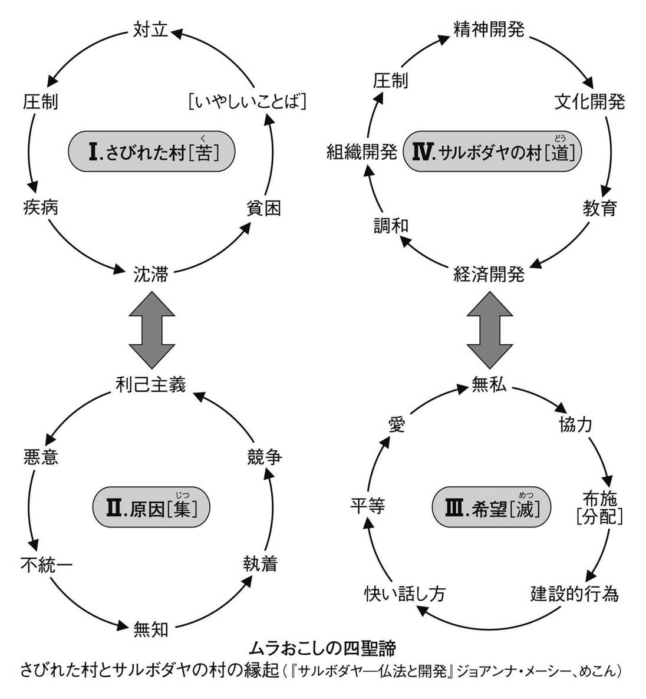
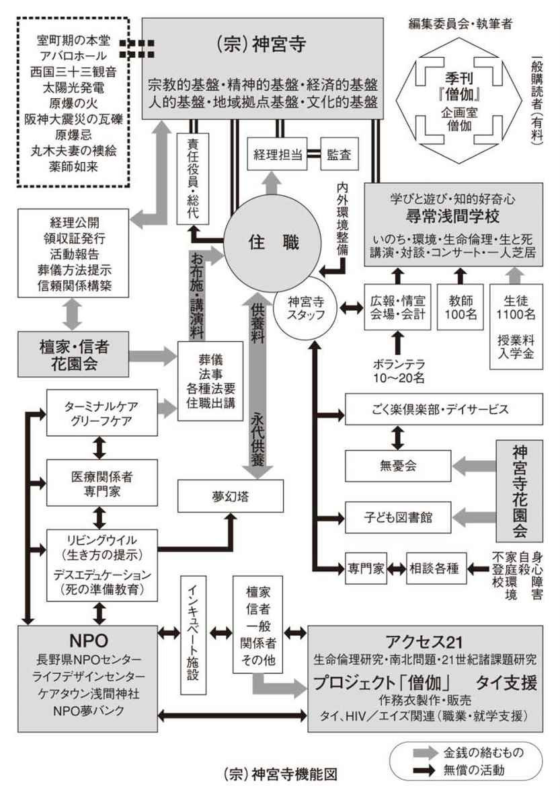
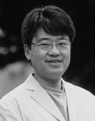

| がんばれ仏教！ お寺ルネサンスの時代 (ＮＨＫブックス) | |
| 上田 紀行 | |
| (2004) | |
がんばれ仏教！
お寺ルネサンスの時代
上田紀行
Ueda Noriyuki
［図版製作］原 清人
［カバーデザイン］倉田明典
『がんばれ仏教！』というこの本のタイトルにまずあなたは驚かれるかもしれない。
がんばれって、いったい仏教の何を応援するのか。仏教を応援すると何かいいことでもあるのか。そもそも、仏教なんて応援するに値するものなのか。
あなたがそんな疑問を持つのも分かる。日本の仏教ははっきり言って元気がない。応援したところでどうにもならないのではないか。それに、私たちにとって仏教が元気がどうかなんて、どうでもいいことではないか。だから仏教に期待もしないし、別に応援する対象でもないだろう。あなたがそう考えるのもよく分かる。
しかし、私はこの本で大胆にもこう宣言しようと思う。
仏教に期待しよう。お寺に期待しよう。僧侶たちに期待しよう。
日本の仏教が、お寺が、僧侶たちが変われば、日本も変わる。と。
そして、日本の仏教を、お寺を、僧侶たちを変える力が私たちにはある、と。
しかし、私は今の日本仏教がそのまま続けば、期待される仏教に変身するとは思わない。それどころか、現在の伝統仏教はこのままだと衰退し、早晩、死に至ると思っている。
ショッキングな出来事があった。
三年ほど前のこと、「ＮＰＯとしての寺の可能性」というシンポジウムの基調講演に呼ばれたときのことだ。お寺という存在が単に法事や葬式を行う場ではなく、教育や福祉や村おこしやアートや国際交流といったＮＰＯ（特定非営利活動法人）として活動できるのではないかという斬新な提言が行われたシンポジウムだった。既に様々な活動を行っている寺の報告もあり、たいそう盛り上がった会になった。葬式仏教と揶揄される仏教だが、その場が様々な可能性に開かれていることが、参加者を勇気づけたのだ。
シンポジウムが終わった後の懇親会は、仏教関係の催しにもかかわらず、たくさんの若者がつめかけていた。私がショックを受けたのは、一人の若者のこんな発言だった。
「ぼくは寺の息子なんですが、よく『葬式仏教』って言われますけど、今のままの葬式を続けていたら、ぼくの世代が喪主になるころは、『もうこんな葬式ならいらない』って、坊さんは呼ばれなくなっちゃうと思うんです。ありがたくもないし、宗教的でもないし、家族の気持ちをケアするわけでもない。ぼくの同級生とかと話してると、もうそんな何の意味もないものならやめてしまおう、少なくとも坊さんはもう呼ばなくてもいいって言い出すように思えるんですよね。それで、『もうやめよう』っていう人がある割合になったときに、誰も坊主に葬式を頼まなくなり、すべてが崩壊するような気がするんです」
「日本仏教の未来と可能性」を論じてきたシンポジウムが終わった後のこの発言に、それまで伝統仏教のあり方を批判してきた私でさえ度肝を抜かれた。「葬式仏教」と批判されているうちはまだいい。葬式と法事しかやらない「葬式仏教」が「葬式」すらできなくなったときに、今の寺はほとんど死に絶えるだろうと彼は言うのだ。
この話を聞いても、多くの仏教関係者はにわかには信じがたいだろう。「そんなことあるわけないさ」とまずは否定するはずだ。「葬式には僧侶が必要だ」「寺はこれからも続いていく」という前提のもとにすべてを考えているから、仏教が死に絶えることなど考えもよらない。「諸行無常」、すべてのものは変化の中にある、という教えを根本に持ちながら、何となく仏教はこのまま続くのではないかと思い込んでいるのだ。
おそらくその若者も仏教系大学の仏教学部に通っていたら、誰も寺に葬式を頼まなくなる時代が来るのでは、などとは思わなかったかもしれない。しかし、彼が通っていたのは伝統校でありながら先見性のある試みで有名な関西の私立大学だった。そして彼は次の時代を切りひらくという気概に満ちた学生たちの中で、「寺を継ぐ」とはどういうことなのかを問わざるを得なかった。自分の立場を友人たちにも説明せざるを得ず、周囲との交流の中で深い危機感を持つこととなったのだ。
言われてみれば、私自身も葬式と法事には大きな不満を持っている。菩提寺は浄土真宗だが、その若い住職は法事に来てもほとんどしゃべらない。到着して「こんにちは」。着替えて仏壇の前に座って「みなさん、こちらに」。その後、浄土真宗の教えをまとめた『正信偈』のリーフレットを配って、一緒に唱和するが、その後は説教もいっさいなしで、「それでは、これで」。お布施をもらって「どうも」。そして再度着替えて「さようなら」。家に入ってから出るまで、五回しかしゃべらない。お経以外は口を開くのは正味四、五秒くらいだろうか。そして決定的なことは、彼を見ていても彼が仏教を信仰しているとは全く思えないし、宗教者としてのオーラが全くないのだ。
そんな僧侶でも、私の叔父夫婦は僧侶と関わりたくないほうだから、「めんどくさくなくていい」と言っている。しかし私と妻は、彼ではとても自分たちは成仏できないと確信しているので、自分たちが墓を預かるようになったら、お寺を替えようかと考えているところだ。
お寺を替える、もしかしたら宗旨も変わるかもしれない。そこまでは私も考えたことがあった。しかし、葬式や法事に僧侶を呼ばないことまでは考えてもみなかった。それは幸いなことに、私はこの人なら自分の葬儀も任せられるという、尊敬できる僧侶を何人か知っているし（もっとも彼らは私よりも年上だというのが問題なのだが）、様々な文化を研究する文化人類学者として「どの文化でも葬式には宗教的職能者が必要だ」と自動的に考えてしまうので、頭が「保守的」なのだろう。しかし、その僧侶の卵の若者が言っているのは「葬式に僧侶が呼ばれなくなるかもしれない」という、より過激な可能性なのであった。
しかし、そう言われてみて、そんなことは絶対あり得ないと否定できるだろうか。例えば田舎の寺のように、檀家と僧侶が普段から親しく、亡くなる前に十分な交流があったり、死を迎えるケアにも何かと関わったりしているならばその葬式にも必然性があるだろう。しかし、田舎であっても都会であっても、菩提寺とほとんど交流がなく、死んだ後にほとんど知らない僧侶がやってきて、その葬式が宗教的に格調高いわけでもなく、遺族へのケアが行われるわけでもなく、単にお布施と戒名料が請求されるといったような場合は、「もうこんな僧侶は葬式にはいらない」となってしまう可能性はある。そして、そう考える人が人口の一〇パーセントでも出てきたときに、それは早晩二〇パーセントにも四〇パーセントにもなり、劇的に増加するかもしれない。
「ベルリンの壁」が崩壊するまで、そんなに簡単に共産主義が崩壊すると考えていた人はいなかった。しかし、壁があっさりと崩壊したときに分かったのは、壁が崩壊する以前に既に内部的な崩壊は進んでいて、もう体制を維持するのが難しくなっていたということだ。共産主義国家のシステムはとうに麻痺していたし、形骸化していた。人々の心はそこから離れていたが、それに対して反旗をひるがえすことのリスクから、いやいや今までの伝統に従っていたわけだ。
ある一つのきっかけで、一気に崩壊が進む。「葬式仏教」にその可能性がないと言い切れるだろうか。葬儀業者はこうささやくかもしれない。「お坊さんを三人呼ぶと四五万円かかります。でも、読経をテープにすれば三万円です。そのかわり、故人の人となりと生涯を会葬の方にも分かっていただき、遺族の方々のお気持ちにもケアが行き届く、専門の教育を受けた葬儀コーディネーターを一〇万円でご用意できます。そちらのほうが皆さんもむしろ敬虔な気持ちになり、ご遺族も会葬者もご葬儀に対する満足度が高いと、このごろは評判なんですよ」。
死に臨んだ者のケアもできず、残された家族のケアもできず、人格も品格も仏の慈悲も何も感じられないような僧侶の場合、その将来に希望を持てというほうが難しいだろう。本当に納得できる葬儀を求めて、葬儀の形が大きく変化する可能性は十分あるのだ。
医療においても、威張っているだけで患者に適切な説明もせず、技量も低い医者や病院は淘汰される時代にとうの昔に入っている。コストに見合う満足度が得られない病院は厳しく批判され、患者からの信頼を失った病院は廃業に追い込まれる。行政に対しても、人々は厳しい目を向け始め、税金が無駄に使われていないか、満足度の高い行政が行われているかが大きな問題になっている。
寺だけが、その流れを免れられると思ったら大間違いだ。日本仏教にとって、今はベルリンの壁の崩壊直前かもしれないのだ。
「がんばれ仏教！」、私はそんな深い危機感の中で瀕死の仏教に対してこの本を書こうとしている。
しかし、これまで「がんばってきた」仏教もあった。第二次世界大戦後の日本を振り返ってみれば、元気な仏教もあった。在家仏教教団、いわゆる新宗教教団の中で仏教をベースとしているいくつかの教団である。創価学会や立正佼正会、霊友会などの教団は、その活動に対して好き嫌いはあるかもしれないが、「がんばってきた」ことに異論のある人はいないだろう。
それに比して、お寺の仏教、伝統仏教は本当に元気がない。そして、このままだと本当に滅んでしまうかもしれない。いや、もう宗教としての伝統仏教は既に危機状態である。教団や寺はある。しかし、人々から何も求められない。苦しんでいても、伝統仏教に救いを求めようとは思わない。人々から何も求められず、法事のときのお布施の額だけが気になる宗教など宗教と呼べるのかと考えてみれば、教団は存続しているが、既に宗教としての根本は崩壊しつつあるとも言えるのだ。
「諸行無常」、すべてのものは変化の中にある。もし仏教が時代的な使命を終えたのならば、それが滅んでいくのもまた自然なことだ。しかし、この本で私はあえて「がんばれ仏教！」と言いたいのだ。仏教には大きな使命があり、ここで滅んでしまってほしくないと心から願うのだ。
しかし、伝統教団の人たちが深い危機感を持っているかといえば疑問である。あるいは、危機感はあっても何か行動に起こそうとしているかは大きな疑問だ。
私は仏教関係の教団や団体から講演に招かれることが少なくないが、多くの講演で訊ねられるのは「二一世紀の仏教には何が期待されているでしょうか」とか「現代の寺に求められるものとは？」といった質問である。最初のうち、私はその問いに丁寧に答えようと必死に努力していた。仏教には未来に向けてこんな可能性がある、あんな可能性がある、といろいろな提言を試みてきた。しかし、じきに私は虚しくなってくる気持ちを抑えきれなくなってきた。
仏教には未来に向けての可能性があると聞いて、僧侶たちは悪い気はしない。「今日の講演では仏教の新たな可能性をお示しいただき、たいへんありがたく感じた次第であります」「まだお若い世代の先生から、仏教への共感をお聞きできるとは、存外の喜びでございました」等々、「ありがたい」発言が続く。しかし、ならば実際に何かが動き出すのかといえば「？」だ。参加者たちは仏教の可能性があるということを聞いて、ホッと胸をなでおろし、安心する。しかし、何の行動を起こすわけではない。例えばそれが会社ならば、多くの社員は「その可能性に向かって自分たち一人ひとりにできることは何か？」とすぐに考えるはずだ。しかし、僧侶たちの間には自分こそがその行動を起こす当事者だという自覚は極めて薄い。仏教には未来がありそうだ。ああ、安心した。誰かがきっとやってくれることだろう、というわけだ。しかし、それならば私の講演は単なる「気休め」にしかすぎないではないか。そしてむしろ気休めが与えられることで危機感が薄れ、何の変化も生まれないのでは、全くの逆効果ではないか。
なので、私はあるときからはっきりと答えるようにしている。
「二一世紀の仏教には何が期待されているのでしょうか？」
「何も期待されていないでしょう。そもそも期待するに足るものだとも思われていないと思います」
「寺には何が求められているでしょうか？」
「何も求められてはいないでしょう。そもそも、私たちの求めに応じて動くという態度をこれまで寺は示してこなかったし、何かを求める対象のうちに寺は入っていなかった。また、何かを求めたところで、その能力があるのかどうかも疑問だと思っている人がほとんどではないでしょうか」
現在の仏教のいちばん悲惨なところは、人々から何も期待されていないところだ。期待するに足る存在だとすら思われていない。「どうせこんなものだろう」とあきらめてしまっている、というか、最初から期待感がないので、あきらめすらないというべきだろうか。
期待もされていないから、本質的な批判もなく、自分たちを問い直す契機もない。期待もされていないから、優れた人材も集まらない。期待もされていないから、その期待に応えようと努力もしない。期待もされていないから、自分たちが何をしているかの情報公開もない。
こんな状態が続けば、日本の仏教は早晩死ぬ。これだけ期待もされず、しかしそれをいいことに、改革も努力も放棄してのうのうとしているのであれば、状況は絶望的だ。最初から感性の鈍い人間たちが集まっている業界なのかもしれないが、この状況にしてなおかつ新しい動きが出てこないのでは、寺の仏教は既にその使命を終えたといってもいいし、諸行無常、滅びて当然だろう。
しかし、ならば私はなぜこの本を書こうとしているのだろうか。それは、私は仏教が使命を終えたとは全く考えていないからだ。それどころか、仏教にはこの時代だからこそ与えられた大きな使命があると信じているからに他ならない。
今、日本社会は元気がない。長期にわたった右肩上がりの経済成長の中で順風満帆のように見えた私たちの社会は、困難な時代を迎えている。毎年の自殺者は三万人を超え、若者から中高年まで、一人ひとりに生きることの辛さが襲いかかっている。それは単に不況のせいではなく、社会の崩壊はもっと根源的なところで生じていることに私たちは気づいている。しかし、それがいかなる崩壊なのか、そしてどのように再び歩み出せばいいのかが分からず途方に暮れている。
この困難な時代に立ち向かい、未来を切りひらく行動が今、求められている。そして、私は仏教がこの時代の使命に大きな貢献をもたらすことができると信じているのだ。
そんなこと信じられないと思うあなたの気持ちも分かる。しかし、私はこの時代の苦悩に向かい合い、新しい行動を起こしはじめている僧侶、そして寺を知っている。彼らは現在の仏教の絶望的な状況を痛感し、大きな気概を持って、新たな一歩を踏み出そうとしている。それは仏教界全体からすれば、まだ少数派かもしれない。しかしそこには明らかに未来に対する希望がある。
時代に向き合い、渾身の力で前進しようとしている僧侶たちや、「こんなに面白く、活気のある寺があるのか！」と驚く、新たな寺のあり方に出会ったとき、私たちの仏教に対する見方は大きく変わることだろう。まだ諦めるのは早すぎる。そこには大きな可能性があるのだ。
これから私はその希望を語っていきたい。そして瀕死の仏教に「がんばれ仏教！」と心からのエールを送りたいのだ。
「どうしてお坊さんは、こっちがよけいに悲しくなるような言動しかしないのでしょう。主人を亡くしまして、こちらはもうくたくたに看病で疲れて、それでお葬式ですから、葬儀のときにちょっとお坊さんに目が行き届かなかったことがあったんです。そしたらそのことをものすごく非難されまして、それで私が謝って謝って、そしたら『あんたは教養があるから許してやる』って言われたのです。こちらはもう心も体も疲れ切って、主人を亡くしていますから。そんなときに、俺たちは偉いんだからと、上から見下すような、何であんなことが言えるんでしょうか」
初老の婦人が肩を震わせながら話している。長年連れ添ったご主人の葬儀で起こった出来事。いかに悲しく、やるせないことであっただろうか。
「私はたいへん信心深い浄土真宗の家に生まれたものですから、主人は浄土宗なのですが、自分の好きな宗教でお葬式あげていいよと言われたので、浄土真宗であげたんです。でも、そこでこんな思いをさせられるとは......。主人が亡くなりましたら、新興宗教の方が、主人の高校時代の友だちだとかって、全然知らない人が来て、でも私も小さいときから親鸞上人のお話を聞かされていますので、その方々のお話をうかがうとちょっと仏教としては変だなと分かるんですが、でもその人たちはとっても親切なんです。私が家で一人で病気で倒れてましたら、病院へ連れて行ってくださって、帰るまで待っててくださったんですよ。なのにお坊さんは何であんな言動しかできないのでしょうか。それなので、今日もこの一年間くらい参加している親鸞上人の教えを聞く会があったのですけど、そっちには行かずにこちらに来させてもらいました。この前友だちに誘われてこの会に来たのですけれど、やっぱりこういう運動が起こってくるんだなあと、希望を持ったものですから」
ここは東京にあるお寺の講堂である。私が主宰している「仏教ルネッサンス塾」の年末ワークショップ、いつもは講師の先生をお招きしているが、今日は参加者の皆さんの仏教に対する思いを語り合いましょう、という呼びかけに応じて、一〇〇人弱の参加者が集まった。仏教関係の催しには珍しく、若い世代の参加も目立つ。また現役僧侶も二〇人ほど参加しているだろうか。
痛切な発言に刺激され、たくさんの発言が出てくる。三〇代の男性。
「伝統ばっかりにこだわってて、お葬式あげてればそれでいいじゃないかみたいな感じで、新しい改革の動きとかが全然、目に見えてこないですね。それと、われわれの心の闇っていうことがこのごろ言われてますが、それを各個人が処理するようになっていて、社会全体でっていうのがないんですよね。みんないろいろとはき出してみようよ、とかいった場が。それで本当は教会とかお寺がそういった核になるべきだと思うんですが、全然そういう役割を果たしていないんじゃないか」
年配の男性が手を挙げる。
「江東区から来ました。歳は八二なんですけど、ここへ来て本当にね、何か気持ちがすっとするんですわ。今までもやもやしていたのがね。実はうちの檀家寺なんですけど、ちょっと前にね、檀家に何の根回しもなくて、いきなり『一〇〇万ずつ寄付しろ』っていう手紙が来た。寺を新築するからっていうんですよ。それで、即金で払えない人は××銀行でローンを組めって言う。檀家がローン組んで、受け取るのは寺ですよ。私はね、とてもじゃないけどそんな七年も八年も払ってられないから、寺に相談に行ったら、住職の奥さんが出てきてね、『じゃあ半分でどうだ』って。半分も出せないから、結局折り合って三〇万くらいでってことになった。そしたらね、三〇万だったら他の檀家の皆さんと同列になりませんよと言われてね、それで先祖代々のお墓を潰して、お寺の共同墓地のほうに入ることになったんですよ。
いやあ、今考えるとね、三〇万もあげなきゃよかった。でもお寺の話術っていうのは大したもんですよ。でもね、その後で墓参に行きますとね、お墓で他の檀家がこぼしてるんですよ。いやあ、ひでえ目にあった、ハンコ押さなきゃよかったって。
でね、私も歳でしょう。それで寺に行って、俺の葬式はどうなるんでしょう、って聞いたらね、一〇〇万くださいって言う。お通夜と葬式と納骨と戒名、全部ひっくるめて一〇〇万でどうだ、ってね。もう、何かねえ......」
二〇代の若い僧侶も発言する。
「私自身は、日本の既成仏教に対しては、もうあまり期待してないんです。でもその後に来るものに対しては期待しているわけで、その新しいものを作るために、ここにお邪魔してるわけです。今の仏教はこのままだと、たぶん一気にがたっと崩れるときが来る。私も組織に属しているんですが、そこで裏も表も見てると、あと三〇年持つかどうか......」
「何を見たんだか、教えてください」との会場の声。
「いやあ、いちおう私も組織人ですから......」会場爆笑。
「それじゃあ全然変わらないじゃないか！」
「うーん、じゃあ一つだけ挙げますとね、もうちょっと上手なお金の使い方をすればいいんじゃないかなあと。私が貧乏性のせいなのかもしれませんが、もう少し上手にお金を使えばもっともっと良くなるはずなのに、全然そういう動きが見えないので......」
「どういうお金の使い方をしているんですか？」
「はい、非常にずれたＣＤとかビデオとかを作っております。もう、誰も見ないし、誰も聞かないようなビデオとかＣＤとか。だって、作っている本人すら見ないような代物なんですから」
イギリスから日本に修行に来ている青い目の僧侶も手を挙げる。
「日本の仏教は形ばかり大事にしてると思います。それと仏教の宗派ばかり見ていて、宗派を超えてあまり交流しないです。ですから、宗派を大事にしていて、その祖先を大事にして、お釈迦さまはあまり見ないで、その宗派のいちばん上のほうだけ見てます。例えば道元さまとか、親鸞さまとかを見てて、お釈迦さままではとても見てないと思います」
「イギリスの仏教は違うんですか？」
「ヨーロッパとかアメリカでは、仏教の宗派は交流あります。だから、その宗派宗派でなくて、仏教は仏教なんです」
中年のご婦人は地域のお寺にこんな願いを持っていた。
「私は足立区に住んでいて、寺町で、お寺がいっぱいあるんですけど、全然お寺同士が仲良くない感じがして。もっとこう、お寺同士が手を繋いで、いい町になったらいいなと思います」
カウンセリング関係の研修会社を経営している女性の発言。
「私はコミュニケーション関係の研修の会社をやっていて、企業研修とか一般の方の講座をやっているんですが、そこに二年前若いお坊さんが来たんですね。京都の住職の息子さんで、神奈川にある宗派の研修センターで勉強していたのです。それで、人の話を聞く訓練をしておきたいといって、うちの講座に来てたんですよ。そしたら、あるとき、もうぼくちょっと来れなくなってしまいました、っていうわけです。どうして？ って聞いたら、その研修センターの先輩たちから、そんな講座に行っちゃいけない、仏教は仏教だけやっていればいいんだって言われたって。でも、ぼくは父親のやっているお寺を継ぎたいし、せっかく関東に来たのだから、いろいろな講座とかにも出て、たくさん勉強しておきたいといって、先輩たちに言うと怒られるから、内緒で休みの日に通ってきてたんですよね。それにしても、仏教は仏教だけやってればいいんだ、っていって、人の話を共感を持って聞く講座にも出てはいけないって、いったいどういうわけなんでしょうか？」
大学院生の女性が立つ。
「魅力的なお坊さんがいないって話ですけど、その人がお坊さんとかそういうことじゃなくて、他の職業をしていても面白い人でないと、お坊さんになったとしても難しいですよね。人間として話をしたくなるような人じゃないと」
「仏教ルネッサンス塾」はまだスタートして一年だ。
東京、愛宕にある青松寺というお寺から、「仏教を再生させるために何かやりたい。力を貸してほしい」との要望を受けたとき、私は驚いた。何のご縁もないお寺からの申し出である。それに青松寺は曹洞宗の寺だ。私は在家の人間だし、曹洞宗門徒でもなく、仏教学の専門でもない。仏教関係の催しに講演やパネリストに呼ばれることは多いけれども、現在の伝統仏教のあり方に対してはかなり厳しい発言を繰り返している。どうして私なのか。しかし、だからこそ頼みたいのだと彼らは言う。厳しい発言の中に仏教への愛情がある。それに今は何宗がどうとか言っている時代ではない。仏教そのものが問題なのだというのである。
まずはお寺を見てくれと言われ、訪れてみて驚いた。愛宕山を背に、四〇階建ての高層ツインタワービルを両脇に従え、その真ん中に立派なお寺が鎮座している。何という風景だ。高層ビルと伝統的な寺、ビルの向こうには東京タワーが顔を出す。何ともハイパーモダンな風景である。歴史と現代、これが今の日本を象徴している風景かもしれない。聞けば、この青松寺というお寺は曹洞宗の江戸三ヶ寺の一つと言われる寺であり修行道場だったという名刹なのだが、都会の寺ゆえバブルの時代に周辺の土地が地上げにあい、いくつものマンションやオフィスビルが無秩序に寺の周りに建つという、醜悪な事態を招きそうになった。そこで、六本木ヒルズの開発などで有名な森ビルに相談して、現在の開発となったとのことだった。一見バブリーな寺に見えるが、バブルから都心の景観と宗教の伝統を守った結果がこの風景というわけだった。
仏教は現代に生き残れるか。二一世紀の仏教の可能性とは何か。まさにその風景が現代の問いを象徴しているように思えた。私はその申し出を快諾し、二〇〇三年五月、「仏教ルネッサンス塾」はスタートしたのだった。私は開講の辞にこう書いた。
この困難な時代に仏教はいったい何をなし得るのか！ 「時代を切りひらく仏教」の探求が〈仏教ルネッサンス塾〉の目的です。
新聞の論壇時評欄を三年間にわたって担当していたとき、私はなぜそこに仏教の立場からの議論がまったく聞こえてこないのか、もどかしく思ったものです。平和と戦争、グローバリズム、貧困問題といった世界大の問題から、キレる若者、子供の虐待、中年のリストラ死といった身近な問題に至るまで、仏教者の立場からの発言はほとんど聞こえてきません。
そう言うと、「それは仏教の対象とする問題ではないだろう」という声が聞こえてきそうです。しかし、仏教とは何よりも人間の「苦」に向き合い、その原因を深く探求することで、そこからの解放へと導こうとする教えではなかったのでしょうか。ブッダにせよ、宗派の祖師たちにせよ、時代と真摯に向き合い、そこでの苦悩に寄り添い、立ち向かっていったからこそ、その教えは人人に力を与え、時代を切りひらいてきたのではなかったでしょうか。
この〈仏教ルネッサンス塾〉では、これまでの仏教の枠にとらわれることなく、時代の核心を射抜くようなテーマを設定し、斬新なゲストとともに、仏教の可能性の探求を進めていきます。もとより私は仏教の専門家でもなく、塾長などとはおこがましい限りですが、大きな期待を持つ応援団長として、ダイナミックな場を創造していきたいと思っています。
（青松寺ＨＰ‥http://www5.ocn.ne.jp/~seishoji/）
お寺での催しは、ふつう「ありがたい」お話が多い。そして聴衆は高齢化していて、おじいちゃんおばあちゃんの会がほとんどだ。しかし、初回から「目指せ！ 元気な仏教」と、威勢のいいテーマで開始されたこの「仏教ルネッサンス塾」は、最初からライブな雰囲気に満ちていた。そして「いのちを支えるホスピス」、「お寺はこんなに面白い」と回数を重ねるごとに若者の数が増えていき、若手僧侶たちも集まってきた。まさに老若男女、出家者も在家者も集う場となったのである。
若手僧侶向けの集まりも始めた。その名も「ボーズ・ビー・アンビシャス!!」。宗派を超えて、大志を抱いた若き僧侶たちが交流して、新しい動きを作っていこうというものだ。実はこの「ボーズ・ビー・アンビシャス!!」の企画も、仏教ルネッサンス塾に集まった二〇代の若者たち、僧侶や医師、会社員、大学院生たちが中心になって進めている。「老師」のありがたいお話を伺う会ではなく、志を持てばこその悩みや葛藤もそのままぶつけ合える会、現在進行形の集まりだ。
この「仏教ルネッサンス塾」は講師の講義や、私と講師との対談で進めてきたのだが、質疑応答の時間になると、手を挙げる人が一〇人も二〇人もいて、時間がとても足りず、進行役の私がいつも叱られる始末。それならば参加者たちだけで、とことん語り合う回を作ろうということでワークショップを開催したというわけなのだった。
「時代を切りひらく仏教」をテーマとする会に来ているわけだから、参加者はみな仏教に関心のある人たちだ。しかし、だからこそ辛口な意見が続出する。
「現在の仏教に不満のある人はこちら、ない人はこちら」と、参加者を二分してのディスカッション。不満のある人が八割、ない人が二割くらいだろうか。そして、参加者が爆笑し、いちばん大きな拍手が沸き起こったのは、「不満がない」グループに座っていた若い女性のこんな発言だった。
「最初から期待していないから、満足も不満もないんです」
仏教に何も期待していない人が「仏教ルネッサンス塾」に来ているはずはない。彼女は「仏教」には大きな期待を持っている。しかし、現実の「日本仏教」には何も期待していない。不満がある人よりも、不満がない人のほうが、むしろ現実の仏教には絶望しているわけなのだった。
現在はちょっとした仏教ブームだと言われる。確かに書店の仏教書コーナーに行けば、たいへんな活況だ。その多くは作家や思想家の書いた仏教書で、「思想としての仏教」には注目が集まっている。しかし、現実の仏教に対してはどうだろうか。「作家たちの描く仏教の思想はいいが、現実の仏教界は......」と思っている人が大半だろう。
仏教なんて何にも期待できないと思っている人たちが多数を占め、思想としての仏教は素晴らしいと思っている人たちの多くも、それに比べて現実の日本仏教はいったいどうしてこんななのだろうと思っている。私たちが出発点としなければいけないのは、そうした厳しい現実だ。その現実あっての「仏教ルネッサンス」なのだということを忘れてはならない。
この「仏教ルネッサンス塾」に参加している人々のように、仏教の未来に期待をしている人たちは、日本の中ではまだまだ少数者だろう。素晴らしいお寺や僧侶もいるのだということ、仏教の新たな可能性があるのだということを知れば、仏教の未来に期待したいという人は潜在的には多いのかもしれない。しかしそんな出会いがなく、仏教なんてこんなもの、期待なんかしても無駄だと思っている人が大多数だろう。
そして実は、何を隠そう、私もそんな一人だったのである。
二〇代の私自身を振り返ってみれば、「仏教ルネッサンス塾」のような催しが開かれていると聞いても、参加しようなどとはつゆほども思わない若者だった。大学で宗教人類学を研究していたから、学問的対象としての仏教には関心はあった。しかし、日本の仏教には何らの期待も、関心もなく、「時代を切りひらく仏教」とか「お寺の可能性」とか聞いても、全然ぴんと来なかっただろう。
そもそも私は仏教に縁がなかった。近くに住んでいた祖父も祖母もたいへん長寿で、二人とも九〇を超えるまで生きたから、私が三〇歳を超えるまで家で葬式というものがなかった。祖父は熊本の地主の家の長男だったが、東京の大学に進んで銀行員となり、跡継ぎは次男に任せてしまったという人で、墓も東京にはなく、お彼岸に墓参りをする習慣もなく、家に仏壇もなかった。祖母は神田の質屋の娘で、下宿人に置いた大学生の祖父に見初められて結婚したというわけだったが、歌舞伎の勘三郎のファンで、孫である私を歌舞伎座や国立劇場に連れて行ってくれたことはあったが、東京にある祖母の家の墓参りに連れて行ってもらった記憶は、たった一回のみだ。
この二人から生まれた母は、私が幼少時に離婚し、それ以後は母一人子一人の家庭環境で私を育てたが、子育て前は俳優座で演出家を志していたようなリベラルな人間で、日本の伝統的なものに対してはあまり関心がなかった。関心がないどころか、むしろ憎んでいたといえるだろう。母にとって「イエ」というものは、社会的に活動したい女性を拘束するものでしかなかったし、男中心の旧態依然とした社会こそが悪の元凶だった。仏教はそんなイエと結託したものだと認識されていただろうし、個人を個人として認めて解放するキリスト教に、より親和性があったようだ。「日本的なるもの」への献身を強要され、それを信じ切っていた戦前の女学生までの時代から、一転して解放感に満ち、演劇活動に邁進した大学生以降の時代。その彼女にとっては、イエや仏教は否定しなければいけない「悪しき日本」に属するものであっただろう。
「上田家」の墓もなく、物心付いてから法事が一度もなく、墓参りも一度きりしかしたことのない人間にとって、仏教との触れ合いはほとんどなかったといっていい。そもそも僧侶という人間が家の中に入ってくるのを見たのも、祖父の葬式のときが初めてであり、それからやっと仏壇というものが祖母の家に出現したのだった。私が自分の家の宗旨を知ったのもそのときだ。そして仏壇の出現によってその後祖母や同居する叔父夫婦が仏教に近づいたかといえばそうでもなかった。
数年後に祖母もなくなり、祖父と祖母の法事は決められた間隔で執り行われることとなったが、その法事も実に事務的なもので、何ら宗教的な感慨をもたらすものではなかった。菩提寺の住職が急逝し、後を継いだ若い息子は、「はじめに」にも書いたように、法事のときも、ほとんど話をしない。仏の教えを説くことも全くない。説教もなし、世間話すらしない住職だ。経を読むのみで、そそくさと帰っていく。人間には全く関わらない宗教者、宗教心の全く感じられない宗教者。しかし宗教心のない親族にとっては、その仏教くさくない僧侶はめんどくさくなくて、意外と好評だったりするのだ。もっとも、私と妻はその僧侶ではさすがに成仏できないと感じていて、自分たちが死ぬまでには菩提寺を替えたいと思っているのだが。
私は二〇代に心の危機を経験している。大学に入ってから、親からの自立に伴う葛藤や、自分とは何かとの問いに悩み、心身の調子がおかしくなってしまい、大学も一年留年してしまった。その状況を打開するために私は、まずカウンセラーを訪ね、一年間ほど毎週通った。また、大学のサークルやゼミに顔を出し、そこで心を打ち明けられる友人を得た。それらの友人の勧めで、沖縄に行ったり、インドを放浪したことが、心の危機からの立ち直りのきっかけとなっている。
しかし、その人生の危機のときに、仏教や寺などというものは全く心の片隅にも上らなかった。友人にチベット仏教に凝っている人間がいたので、ちょっとチベット仏教の本を読んだりしたが、しかし、こと日本の仏教に関しては、寺を訪ねようとか、僧侶に話を聞いてもらおうとか、そんな行動は選択肢としても全く存在しなかったのだ。
さて、そのように仏教にはむしろ否定的なものを感じてきた私が、今『がんばれ仏教！』などという本を書いているのは、われながら不思議な気がする。長い間、仏教に何かを期待するなどということは全くなかったし、そもそも仏教とは何かを期待してもいい対象だとも思っていなかった。
しかし、それは私だけに限らず、現在の日本における、大多数の人たちの仏教への態度だろう。仏教は何か新しいものを生み出すものではないし、十年一日のごとく同じことを繰り返している。仏教が社会をより良いものにするなどというイメージはさらさらないし、旧態依然とした社会の象徴である。寺は文化財として存在しているのであって、法事のときを除いては、何の関係も持たないし、持ちたくもない。僧侶とは、自分の同級生だとか、子どもの学校の先生とか、特に個人的な関係がなければ、法事のときだけの付き合いだし、別にそれ以上のつながりは求めたくもない。
そして、多くの人は仏教とは口先だけのものだと思っている。ありがたいお言葉だけで、何も行動しない。彼らはこうすればよりよい人生が送れるとか、そういう人が増えればもっといい世の中になるとか説教はするが、別に本当にそういう世の中になってほしいわけでもないに違いない。本当にそうなってほしいなら、もっと別の行動のしかたがあるはずだ。そもそも、現実の世界にもっと憤っていてもいいはずだし、本気で行動を起こしていることだろう。しかし、現実の僧侶たちを見ていると、そんな考えがあるようにも見えないし、職業だから法事をやっている以上の姿は見えてこない。ありがたい話も生計のための方便なのだろう。
言っていることがいくら良くても、行動がそれに伴わない人間は、口先だけの人間だと言われる。世の中では軽蔑されるタイプの人間だろう。仏教の多くの僧侶は、言っていることもどこかから借りてきたような「いい話」に過ぎないし、行動も全く伴っていないように、多くの人々は感じている。それでは尊敬されるわけもないし、そんな人たちに期待をしろと言うほうが無理な話だろう。
私もそんなふうに感じる平均的日本人の一人だった。しかしそんな私が今、『がんばれ仏教！』などという本を書いている。それは、仏教には期待できるのだ、と思わせる出来事がなければ、さすがに難しかっただろう。そしてこの本が書かれているのは、そんな出来事が私の周りで実際に次々と起こってしまったからなのだ。
この人に会っていなければ、こうはなっていなかったはずだ、という体験が人生にはいくつかあるものだ。
私がもし、これから紹介する高橋卓志という僧侶に会っていなければ、おそらくこの本は書かれていないはずだ。あるいは、彼が住職を務める神宮寺という寺の活動と出会っていなければ。
私は彼と出会うことで、「坊さんというのは、こんなに面白い職業なのか！」と驚愕した。「寺とはこんな可能性を秘めた場所なのか」とも。それは「期待できるもの」として僧侶や寺を見はじめた画期的な出会いであった。
もっとも、その前に二年間、スリランカにフィールドワークに行っていなければ、そこまでは感じなかったかもしれない。仏教国と一言で言うが、スリランカの「生きた仏教」を目の当たりにして、私は驚愕した。それは「葬式仏教」と揶揄される日本の仏教とは全く異なった、人々の日々の生活の中に深く浸透し、毎日の暮らしを支える仏教の姿だった。スリランカの伝統的仏教、社会改革を目指した仏教運動の姿は、次章で取り上げたいと思うが、そこで考えさせられたのは、なぜ日本の仏教は、われわれに生きる力を与えるものとはなっていないのか、ということだった。スリランカでは仏教が人々の生きる支えになっている。僧侶は尊敬されているし、仏教はスリランカの文化の中核を担うものでもある。しかし、日本では僧侶は尊敬されているとは言えないし、寺や僧侶が文化を担っているという認識もなく、いわば「どうでもいいもの」という扱いだ。なぜなのか。
また、僧侶の意識も違う。スリランカの僧侶には誇りがある。自分たちがこの国の宗教の中核を担っている。文化を担っている。歴史を担っている。そして自分たちの一挙手一投足は皆に注目されている。しかし、日本の僧侶で誇りを感じさせる人は少ない。威張っている僧侶はいても、何かを担っているという意識を感じさせる僧侶が少ないのだ。
スリランカから帰ってきたとき、私には日本仏教に対する疑問が持ち上がっていた。それまでのように、疑問も期待もなく、「まあ、こんなものでしょ」と思っていたところから、「何でこんななのだろう？」という疑問が生じたのである。
高橋卓志（一九四八年生まれ）という一人の僧侶に出会ったのは、そのころだった。
ある集まりで会ったのだが、それは仏教関係の集会ではなかった。「全国ボランティア研修集会」。日本青年奉仕協会という、前時代的な名前を持つ団体が主催している、しかし内容はおそろしく先進的な集会でのことだった。毎年全国各地で泊まり込みで開催されるこの集会は、福祉分野だけではなく、自分と社会を変革する「自発」的活動を行っている人はみんなボランティアだと定義し、自己犠牲的なボランティアから、自己活性的な「面白」ボランティアを目指そうという集会だった。全国各地から本当に面白い人たちが集まってきていて、「村おこし・町おこし」「平和の創造」「ノーマライゼーション」等々、多種多様な分科会が開催され、刺激的なものだった。
今から振り返ると、その「全ボラ」と呼ばれていた集会は、その後、様々な分野で大活躍する人人の宝庫だったのだが、紛れもなく高橋もその一人だった。
しかし、最初に会ったとき、私は高橋が僧侶だとは分からなかった。年格好は私より一〇歳ほど年上だから、当時四〇代前半だろうか。確かに頭は剃っている。しかし、行動にせよ発言にせよ、発しているオーラにせよ、どこからもそれまで私が抱いていた坊さんというイメージに合致していなかった。坊さんというと、何か「鈍い人」というのが私のイメージだったのだが、彼はシャープで、とにかくキレが良かった。
高橋は「非暴力トレーニング」というワークショップを行う分科会の世話人をしていた。それはガンジーの非暴力主義に影響を受けて発展したワークショップの技法で、世界の対立を暴力を使わずにいかに解決するかを目標としている。そのワークショップでは、参加者一人ひとりがいかに自分の暴力性に気づき、それを超えていけるかが問われ、実践されていた。
例えば、一人の参加者が自分の「ムカついた」体験を述べる。頭に来たので、思わず相手を殴りそうになったりとか、実際に殴ってしまったとか。相手を無茶苦茶傷つける発言をしたとか......。
このワークショップでは、それがいいとも悪いとも言わず、まず本人がどんな気持ちだったのかをじっくりと聞く。その場を再現してみることもある。自分が怒鳴られる役になり、他の参加者に怒鳴ってもらったりもする。そうすると、いろいろなことに気づく。「こんなにひどい言葉遣いで怒鳴られたら、全然心も開かないし、相手は反省するどころか『やっぱり自分は正しかった』と思うだけだよな」とか「俺、ほんとは自分の父親に言いたいことを、そいつに怒鳴っていたんですよね」とか。そうやって、参加者は自分の暴力性がどこから来ているのか、他にどんな行動を取れば、相手も自分も納得することができたのかなどを学ぶのだ。
その他、いろいろな場面のシミュレーションもある。有毒物質を川に流している工場に抗議をしにいくなどの設定。最初に対面する守衛に対して「お前もこの悪徳会社の一味だろう！」と怒鳴りつける人。「お前なんかには分からないから、もっと偉い人を出せ！」などと言う人もいる。しかし、言った後で、「正しいことをしているはずの」自分の暴力性に気づき、愕然とするのだ。
相手が悪だ、権力だと決めつけ、正義の私が悪を成敗してやると意気込んで行っていることが、どれだけ暴力的で相手を傷つけているか。独善的で、何の共感も得られず、かえって反感だけを引き起こし、得たい成果は何も得られないで、結局反目だけを生み出すことになるのか。この「非暴力トレーニング」はこれまでの社会運動で見過ごされてきた、そんな暴力性に気づき、自己の暴力性の根源にも気づかせてくれるようなワークショップで、当時としては実に斬新なものだった。
「非暴力トレーニング」のトレーナー阿木幸男氏を招いての分科会だったが、高橋はそこで世話人という裏方役にとどまらず、積極的に人の輪の中に入って自分の意見も言い、ひたすら参加者の声を聴き、ワークショップ全体の進行を仕切り、あるときはユーモアで場を和ませたりと、変幻自在の軽いフットワークでその場に参加していた。その姿は全然坊さんらしくなかった。彼が自分の職業を言わなければ、誰も彼が僧侶だとは思わなかっただろう。
高橋はその場で「仏教」を封印していた。仏教の教えにいっさい言及しないで、その場で起こっていることに寄り添う。それは僧侶としてはむしろ難しいことに違いなかった。しかし、ボランティア研修集会などに出てくる、真摯ではあるが全然抹香臭くない坊主、周りを明るくし、活気を生み出す面白い坊主として、私の心には深く印象に残った。
私は処女作である『覚醒のネットワーク』（カタツムリ社）を出版した直後だった。それまでの社会運動のように「敵」と「味方」を分けて、ますます世界を暴力的にし、自分自身も他者も傷つけるのではなく、また「自分の心が変われば何でも解決する」といった「心」主義でもない、「一人ひとりの精神的覚醒と社会的変革を合体させた新しい運動」を目指そうというその本を高橋は高く評価してくれ、「こんどぜひ松本の神宮寺にも来てください！」と再会を約束したのであった。
さて、そうやって出会った高橋であったが、それ以後折に触れて送られてくる案内や報告を見ると、この高橋という坊主がとてつもない活動家であり、そして高橋の寺が滅茶苦茶型破りの寺であることが分かってきた。
まず、信州松本の地にありながら、高橋の寺、神宮寺は信じがたい人脈を誇っていた。寺に「尋常浅間学校」という、毎月一回講演やら対談やらコンサートを行う「寺子屋」があり、その校長は永六輔、教頭が無着成恭、そして毎月の講師たちの陣容は、キャスターの筑紫哲也、詩人の谷川俊太郎、山尾三省、俳優の小沢昭一、加藤武、マルセ太郎、タレントのおすぎとピーコ、作家の灰谷健次郎、立松和平、小田実、井出孫六、中山千夏、柳原和子、エッセイストの佐々木久子、阿川佐和子、言論界ではアルフォンス・デーケン、鷲田清一、辛淑玉、落語家の柳家小三治、入船亭扇橋、太鼓の林英哲、歌手の小室等、森山良子、長谷川きよし、伊藤多喜雄、さとう宗幸等々というのだから恐れ入る。それもただ有名人を呼んで講座を開くという、単なるイベントではなくて、実に筋金入りというか、インパクトのある企画を打っているのだ。
そのいくつかを紹介すると、こんな感じだ。
「自然のこころ子どものこころ」灰谷健次郎（作家）
「五輪はご臨終」「追悼・淡谷のり子」他、校長特別授業 永六輔
「ターミナルケア講座」内藤いづみ（在宅ホスピス医）・ピーコ（服飾評論家）・高橋
「夫唱婦随大バトル」無着成恭（福泉寺住職）・無着とき（福泉寺大黒）
「死とどう向き合うか」内坂由美子（医師）・高橋
「ちゅらさんのすべて」（一人芝居）藤木勇人（沖縄芸人）
「阿弥陀への道」「街道を行く──司馬遼太郎論」佐藤健（毎日新聞編集委員）
「オトコとオンナのアイダには」中山千夏（作家）・高橋
「21世紀人類は生き残れるか」筑紫哲也（キャスター）・高橋
「小室等・谷川俊太郎・コンサート＆トーク」小室等（歌手）・谷川俊太郎（詩人）
ほんの一部を紹介してもこんな感じだから、知らせを受け取るたびに松本に住んでいないのが残念になってしまう。ちなみに、この「尋常浅間学校」という名前の由来だが、明治の廃仏毀釈のときに神宮寺は寺としての機能を奪われ、学校になったのだが、その名前が「尋常浅間学校」なのであり、その復活というわけなのだという。一九八八年スタートで九六年までは年二回のコンサート中心だったが、九七年から「一〇年間一〇〇回でやめる」との約束で再スタート。二〇〇三年一一月までで七〇回、参加人数は延べ二万九〇〇〇人だという。一回平均四〇〇人以上。ものすごい数であり、持続力である。
それにしても、いったいどうして校長が永六輔で、こんな豪華講師陣なのか？ それも松本で。どこでこんな人たちに出会うのか？ 誰が聞きに来ているのか。檀家？ それとも一般市民？ いろいろな疑問が生じてくる。
しかし、そんな疑問を感じているうちに、高橋からは次々と新しいプロジェクトの知らせが入ってくるのだった。
「チェルノブイリ原発事故で被災した子どもたちを精密検査のために信州大学に呼び寄せます」
という知らせを受け取ったのは一九九二年のことである。
彼は日本チェルノブイリ連帯基金（ＪＣＦ）というＮＧＯを仲間とともに設立し、自ら事務局長となっていたのだった。
旧ソ連のウクライナ共和国のチェルノブイリ原発が大事故を起こしたのは一九八六年のことだ。史上最悪の原発事故による「死の灰」は南風に乗って風下のベラルーシ共和国に降り注ぎ、事故から数年経って、原発事故の深刻な後遺症が報告されはじめた。多くの子どもたちが放射能によって深く健康を病んでいるという事実が明らかになってきたのである。
モスクワに住む高橋の友人から「チェルノブイリがたいへんなことになっている。特に子どもたちの身体への影響は大きい。それに加えてソ連の医療事情は最悪だ。何とか日本の優れた医療によって彼らを救えないか」というＳＯＳが届いたのは一九九〇年九月のことだった。
それ以前から高橋は原子力の問題には深い関心を持っていた。神宮寺のふすま絵は、「原爆の図」の作者である丸木位里・俊夫妻の手になるものだ。八八年に高橋と友人たちが「原爆の図」展を松本で開催したときに、丸木夫妻がちょうどそのとき新築した神宮寺の本堂を訪れたことがきっかけだ。真っ白なふすまに近づき「ええ紙じゃ」とつぶやいた丸木位里氏に、「先生何かお描きになりませんか？」と聞いたところ、それから五〇日間丸木夫妻は神宮寺に逗留して風景画や人物画など八八枚ものふすま絵を描き上げたのだという。毎年夏には丸木夫妻が描いた「原爆の図」を展覧して、「原爆忌」の法要を営み、原爆によって命を奪われた人々への思いを新たにしてきた。
モスクワからのＳＯＳが届いてすぐに、高橋たちは行動を開始した。日本チェルノブイリ連帯基金が設立され、理事長には鎌田實・諏訪中央病院院長が、事務局長に高橋が就任、翌九一年一月、鎌田と高橋は他のメンバー二人とともにチェルノブイリを訪れた。子どもたちの白血病、甲状腺ガンが激増していたが、現地の医療施設はまったく不十分なものだった。重症の少女の母親が「この子をどうか日本に連れて行って、日本の医療で治してください」と泣きながら懇願した。しかしその子にはもう長旅に耐えられる体力もなく、日本に行ったとしても回復する可能性はない。メンバーたちは無力感を感じながらも、そのときチェルノブイリに深く関わる決心を固めたという。
風下のベラルーシ共和国では、原発事故の情報は伏せられ、事故のあった四月二六日から一週間、子どもたちは小学校の校庭で連日メーデーの行進の練習を繰り返していた。原発事故の情報がもたらされたのは、メーデーの翌日の五月二日のことだった。その間、子どもたちは何の防御もなく放射能に曝されることを強制されていたことになる。一人ひとりのいのちよりも国家行事を優先した行政に一行は激しい怒りを感じつつ、しかし同時に、乏しい医療設備の中で壮絶に状況と闘っている医療従事者たちの姿に深い感銘を受けた。一人の女医が言った。
「一人の子どもを日本に連れて行って治療するお金があれば、私たちはここで一〇人の子どものいのちを救うことができます」
大きな衝撃を受けて日本に帰国し、高橋たちは援助体制作りにすぐさま着手する。様々なメディアを通じてチェルノブイリの現状を訴え続け、一般から募金が三〇〇万円集まり、信州大学に協力を要請して、最初の訪問から二か月後の三月には信州大学医学部の小児科と甲状腺疾患の専門医とともに再訪し、診察を行うと同時に、今後の援助計画を策定。六月に医師二人とともに再訪し、三〇〇人以上に甲状腺疾患のスクリーニングを実施。一〇月には医師四人とともに訪れ、七〇〇人の子どもの診察を行い、病院に最新の医療機器を届けた。
当初何の当てもなかった資金計画も、郵政省（当時）の国際ボランティア貯金から寄付金を得て、年間五〇〇〇万円の予算となり、ベラルーシに日本の最新鋭の医療機器を持ち込んで診察を行い、現地医師を信州大学に招いて研修を行うこともできた。そして、精密検査が必要な一〇人の少年少女たちを日本に呼んで、信州大学と東京大学での精密検査の他、長野でのホームステイ体験などを行うことになったわけであった。
それにしても何という行動力だろう。子どもたちが危機に瀕しているというＳＯＳの情報を聞きつけてすぐに援助グループを結成し、まずは現地を見なければどうにもならないとすぐに飛んでいく。それは会社勤めや公務員だったりしたら難しかっただろう。また、お寺という場があるから、ＮＧＯの設立にも困らない。事務局をお寺にしてしまえば、場所代もいらない。
高橋は九一年以後事務局長を退任する九七年まで頻繁にチェルノブイリを往復する。七年間で実に三六回。年平均五回にもなる。チェルノブイリは決して近いところではない。松本から成田空港まで五時間、成田からモスクワまで一〇時間半。そこから夜行列車でベラルーシ共和国の首都ミンスクへ一五時間、車に乗り換えて汚染地域の中心のゴメリ市まで四時間。片道丸二日である。現地での三日間の滞在のために四日間かけて往復する旅を七年間繰り返していたことになる。
それにしても、どうしてそんなに行けたのか。私の先入観では、住職というのはいつ葬式があるか分からないから、寺を空けられないはずだと思うのだが。まず九四年までは高橋の父の先代住職が健在であったから問題は生ぜず、九四年以降もチェルノブイリに行っている間に檀家が亡くなったことは一度もないという。高橋が不在のときには死なないというジンクスが檀家には生まれた。「チェルノブイリに行ってるときには死ぬな」と檀家にはお願いしていたんだよ、と高橋は笑う。
しかし、そこで檀家から不満の声が出ないというところが神宮寺と高橋の活動を支える秘訣なのだろう。高橋は法事は手抜きせずにきっちりとやっていた。毎年お盆には七日間で近隣に住む檀家五〇〇軒を全戸回って棚経を読む。朝六時スタートで、移動時間を含めて一軒五分。昼ご飯も食べずにバイクを使って夜まで疾走する。ちょっと信じがたい「重労働」である。しかし高橋によれば、一軒あたり五分であっても、それが大切なのだという。玄関から仏壇までの三〇秒で檀家に何が起こっているのか分かる。おじいちゃんが寝たきりになっているなとか、家族が円満なのかとか、些細なサインで分かるのだという。そして、そういった檀家に対するまなざしが、一人ひとりへの丁寧な対応となって現れるのであった。
それに加えて、高橋は自分自身と寺に関する情報の伝達に対して、天才的な手腕を持っていた。チェルノブイリの運動に関わるにしても、その意味をしっかりと檀家にも伝え、なぜ住職がその運動に打ち込むのかを納得してもらうことに大きなエネルギーを投入していた。さらに、寺の情報公開に関しても、大胆な試みを展開していた。
神宮寺は「はなぞの」という寺報を年二回発行していた（現在は、「僧伽」と改称され季刊）。檀家に配布している他、神宮寺に縁ある人たちに送付していて、五〇ページほどのブックレットは、装丁もちょっと小粋でお洒落、内容はいつもぎっしりで、対談あり、エッセイありで読み応え十分で楽しみにしていたのだが、九三年四月発行の号が送られてきたときには度肝を抜かれた。
〈特集・坊主丸儲け〉
である。
寺から送られてくる寺報に〈坊主丸儲け〉の文字が躍っていたらどうします？
その特集の冒頭で高橋は、『広辞苑』を引くと「坊主丸儲け」は「元手をかけずに金を儲ける」ことだと紹介し、それは現代社会ではトレンディーな生き方だから、「坊主丸儲け」はその先駆的なものではないかと一発シャレをかます。しかし、まともな世界ではお金が人間の幸福を導くこともあるのに、裏側のブラックマーケットや政治の世界では利権の構造が支配していると指摘した後で、こんなふうに続ける。
寺や坊さんの身辺はといえば、利権の構造とまではいかないが、利益の図式がはっきりと描かれている。そこには真実の隠蔽とつじつま合わせが暗躍するから、まさに小さなブラックマーケットであるといえる。こんな状態で「宗教」という看板を平気で背負えるのだろうか。「こころ」や「いのち」あるいは、「倫理」や「テツガク」を表看板にする宗教の裏側が、どろどろした現実のお金地獄であったとするなら、笑い話になってしまう。
良識ある人々は、もうとっくの昔に寺と坊さんの利益の構造を熟知している。だが、さまざまなプレッシャーから、あるいは社会の中のルールから、正面きって声をあげられないでいたに違いない。そんな心理が「坊主丸儲け」の言葉を登場させ、裏から坊さんを批判した。この声に気づかなかった坊さんはいなかったはずであるのに、坊さんからの反論はなく、改善の痕跡も見当たらない。
黙ってこのまま頬かむりしておけば済む、という問題ではすでになくなってきている。つまり「丸儲け」の構造が、隠蔽された寺の経済の問題であったり、坊さんの蓄財であったりといった問題だけではなく、宗教の本質を問う大問題に発展しているという現実を知らなければならないのは、まずは坊さんなのだ。と同時にこれらには、坊さん自らが、さまざまな角度から問題意識を持ち、自らを律していかなければならないと思う。
今号では、神宮寺住職として、まずは自己批判を加えながら、ここ十年近く取り組んできた神宮寺の経理システムの改革や、給料制の定着をもとに、果たして「坊主丸儲け」が神宮寺に存在するか否かを検証してみようと思う。そして神宮寺がなにをめざし、どのように改革してきたかを知っていただきたいと思う。
（「はなぞの」通巻五八号）
さて、検証の始まりだ。神宮寺は一〇年前にコンピュータによる経理システムを導入し、経理公開と住職・寺族（寺の家族）の給料制という大原則を定めたが、すべての経理を公開するにはこれまで二つの大きな問題があったという。
第一は他の寺に対する気兼ねである。神宮寺のように六〇〇軒以上の檀家を持ち、住職・寺族の給料を支払え、経費が計上できる場合はいいが、檀家数が少なく、経理を公開するどころか生活にも苦しんでいる寺もある。だから、経理公開は「収入ある寺の独善」と大きな批判を受ける可能性があった。寺同士の付き合いもあり、どうしても踏み切れなかったという。
第二に、寺は古来より仏心による「布施」によって支えられていて、寺と檀家の関係は仏教を基本とした人間関係における互いの「施し」であり、その関係を前面に押し出して、宗教の本質を実践することが重要なのであって、領収書とか予算決算書はなじまないのではとの思いがあった。
しかし、現在は寺の収支も昔に比べて大きくなり、住職もしようと思えば蓄財が可能となっている、しかし「寺の収入は宗教法人のもので、住職本人のものではない」という原則から外れ、宗旨より経済優先となってしまえば、人々の信頼も失われてしまう。ここをクリアしなければ先に進めないと、公開に踏み切ったという。
さて、公開の第一は住職・寺族の給料である。住職の給料制は税務署からの指導だが、表面上は給料制を採りながら実際は「どんぶり勘定」という寺が多い。しかし、高橋は裏表のない給料制のほうが、本来の寺の活動を引き出すものではないかと考えていた。住職や寺族にきっちり給料を払うことで私的な生活の経済的保証を与え、教化活動は経費として取り扱う。もし収入がすべて住職のものになるならば、社会的活動は「無駄な金を消費する活動」となり、お金がかかりそうな仕事には手を出さないだろう。だから、給料制こそがお寺を開く大きな秘訣だというのである。
確かにその通りだ。収入がどんぶり勘定で全部自分のものになっていたら、よっぽど住職の意識が高くなければ、社会的活動などはしないだろう。それは自分の収入を減らすことになってしまう。「小欲知足」（現在の状況に満足し欲の少ないこと）を説く仏教者といえども、葬式と法事だけして後は蓄財だ、という「欲の道」に落ちてしまう。しかし、給料が決まっていて、残りの予算は自分がマネージメントできる「裁量権」を持っているという発想に転換すれば、そのお金を使っていかに社会に有意義な形で還元できるか、という発想が生まれてくる。寺に入ってくるお金は自分のもの、ではなく、どんな事業に有効に使っていくかという、「事業者」の意識が生まれてくるのである。「はなぞの」では、一人ひとりの月給（一九九三年度）を公開してしまった。
住職三十万円、先代住職十万円、事務長二十万円、住職夫人八万円、先代住職夫人八万円、会計（非常勤）二万円、会計顧問（非常勤）一万円。賞与は年間一・二か月分。
この「給料公開」は衝撃だった。「ここまでやるか！」と驚いたことをよく憶えている。この給料の額も、責任役員会（責任役員七名、会計一名、会計顧問一名出席）に諮問して決定するのだという。「寺の透明化」に対する並々ならぬ決意がそこにはある。
ちなみに、その後給料制はさらなる透明化を進め、住職が行う外部での講演料もすべて寺の会計に入れることとなり、二〇〇二年度の年収も二〇〇四年一月発行の寺報「僧伽」で公開されている。
住職七五〇万円（月給五〇万円）、事務長三九九万円、事務スタッフ三〇一万円、スタッフ二六七万円、スタッフ（夫人）一三七万円、副住職一一〇万円。
住職は五五歳で年収七五〇万円、これは長野県職員が平均年齢四七歳で年収七八四万円であることを考えると決して高くない（長野県職員って、いいお給料もらっているんですね、という気はするが）。また、高橋は講演の依頼が多く、大学でも東京大学、信州大学、松本大学などで非常勤講師をしているが、その講演料・講師料年間二四〇万円あまりも自分の収入にせず、寺の会計に入れてしまっている。社会保険の天引き後の住職の手取りは月四三万円（二〇〇三年一二月）だという。
さて、次なる公開は収支決算書である。高橋は給与の公開もさることながら、この決算書の公開が大きいという。というのも寺の会計が「闇の中」であったのは、決算書が正しく出なかったからである。神宮寺の収支のすべてをガラス張りにして檀家に公開するという長年の願いの達成である。
そこではまず神宮寺のお金の流れが一つひとつ解説されている。葬儀や法事でのお布施を住職がもらうと（後には講演料も）、開封せずに事務長に渡される。事務長は中をあらため、領収書を発行して郵送し、会計がコンピュータ入力。どこにも不明な収入はない。
支出としては給与の他、経費は宗教法人に関わるもののみ購入し、すべて領収書を取る。住職の私的な買い物などいっさいなく、すべてが公開可能だ。住職の住居は境内の中にあるが、本堂・庫裡とは離れていて、電気代、ガス代なども宗教法人とは別になっている。
詳細な収支決算書が「はなぞの」には掲載されている。ここに掲載することはしないが、その決算書にはまた周到な解説がついている。
まず四〇〇〇万円あまりの収入の中で一五〇〇万円あまりを占める葬儀収入についての詳細な解説だ。松本では葬式の仏事形式としては、三仏事（三人の導師が引導を渡す）と一仏事（一人の導師）があり、それプラス伴僧も付くことがあるというが、昨年度の葬儀で支払われたお布施の額がすべてのパターン別で全部公開されている。一仏事で伴僧なし住職一人の葬儀は八件ありそのお布施は「二万、二万、五万、六万、一一万、一五万、四〇万（東京）、七〇万（東京）」、一伴僧は一件で「二七万」、二伴僧は二件で「二〇万、二〇万」、三伴僧が一一件で「五〇万、二七万、二七万、二七万、三〇万、三〇万、二七万、四〇万、二七万、三〇万、四〇万」、四伴僧が四件で「一五万、三〇万、四〇万、五〇万」、五伴僧が一件で「三七万」、六伴僧が二件で「六〇万、八〇万」。三仏事で三伴僧が三件で「五〇万、五五万、一〇〇万」、四伴僧が二件で「六〇万、八〇万」。全三四件のお布施全公開である。ちなみに、このお布施に含まれているものは、「戒名料＋枕経＋納棺通夜＋火葬場＋葬儀料＋役僧料」であり、神宮寺では脇導師には一人五万円、伴僧には一人四万円払うことになっていて、その役僧料を引いた額が神宮寺の収入となる。
これを見ると、神宮寺の葬儀による収入がすべて分かってしまう。例えば一仏事四伴僧で一五万のお布施だと、伴僧に四万円×四で一六万かかってしまうので、お寺は赤字になってしまうとか、三仏事三伴僧で一〇〇万のお布施だとお寺の収入は七八万円であるとか。
このお布施の公開も思い切っている。神宮寺は先代住職の時代から「お布施というものは仏心の表れなのだから、納得できるいい葬式だったと思ったら、たくさん持ってくればいい。葬式に納得がいかなかったら、なんぼでもかまわない。たくさん持ってきても返しはしないし、少なくても文句は言わない」という原則で、寺の側から「だいたいこの程度」ということはいっさい言わないできた。しかし神宮寺の運営が給料制、きっちりとした収支決算制になった今、お布施のガイドラインを作るべきではないかとの意見が責任役員会の中で出たものの、これまでのお布施に対する考え方も捨てがたいため、お布施を公開し、それから先は施主の判断に任せるようになったとのことだ。
「役僧を増やせば、にぎやかな葬儀になりますが、それだけ費用はかかります。葬儀の本質を問うていけば、たくさんの役僧さんをお願いする葬儀の必要はありませんし、葬儀のやり方にも、もっと本人の生前の意思や、家族の意向が含まれた方法があるはずです」と高橋は言う。
この「はなぞの」が送られてきたとき、私は心底驚いたものだ。しかし、よくよく考えてみれば、すべての「まともな」事業体は経理の公開を行っている。会社ならば株主にすべての経理をガラス張りにするのが当たり前だ。なのになぜ寺だけが「闇の中」で「坊主丸儲け」が許されてきたのか、そのほうが不思議なことなのだが、しかしその不思議なことが長い間続いてきたというわけだ。
しかし、不透明で「坊主丸儲け」な寺を私たちは信用できるだろうか。実際は多くの寺は人々が考えているほど「丸儲け」でもなく、生活に困窮している寺も少なくない。しかし、一部の「丸儲け」な寺と住職は仏教のイメージを著しく貶めている。「丸儲け」住職が「小欲知足」と言ったり、「清浄に生きよ」と言って説得力があるだろうか。
高橋は特集「坊主丸儲け」の中で「坊主丸儲けは本当か？」と題した一文で、こう言っている。
経理を明確化することは、住職個人と寺という関係をよりはっきりさせ、寺の仕事の重要性を浮き彫りにさせてきます。寺が持つ仕事の項目に、理想的な形で金銭補償をしていく、つまり予算化をすることは、将来の寺の方向性を示すものだと思います。そして、それが仏教の持つ本来の目的を示すものであれば、よりよいと思うのです。よりよい教化や寺檀の関係を作り上げていく上で、金銭に関する不信感を持っての対応は、デメリットです。身辺を明らかにすることもできない住職が、どんな偉そうなことを言っても通用しないということが、私自身の自戒を込めた確信です。
お寺の経理の全面公開を全国の寺に先駆けていち早く行ったという試みは、それ自体でたいへん評価されるべきことだ。檀家や世間一般からの「丸儲け」というまなざしへ回答するとともに、宗教とお金の関係をはっきりさせることで、むしろ寺としての活動がやりやすくなる。
寺がここまで情報公開してくれれば、檀家としても菩提寺への信頼は格段に高まることだろう。四〇代前半、先代住職から住職を受け継ぎ三年たち、寺とは何か、自分がこの寺の住職として何を実現していくかを考えていた時期だった。寺にチェルノブイリ支援のＮＧＯの事務局も置き、自身も事務局長としてベラルーシにも年数回出かける。原爆忌をはじめとした平和活動にも熱心に関わる。寺を文化的発信の地とする計画も進んでいる。そのときに、お金の問題をはっきりさせておくとともに、寺を支えてくれる檀家の信頼を得ておくことは何よりも大切なことだったに違いない。
そして、私もとうとう神宮寺を訪れることとなった。いったいどういう寺なのか、どんな人たちがこの寺を支え、どんな雰囲気なのか。尋常浅間学校の講師として招かれ、生の神宮寺を見る機会を得たのである。
神宮寺のある、松本市浅間温泉は、アルプスの麓、松本の駅から車で一五分くらいのところだ。小澤征爾とサイトウ・キネン・オーケストラが毎夏コンサートを開く長野県松本文化会館を通り過ぎ、女鳥羽川を渡るとそこまで平地だった街は山際となって浅間温泉の温泉街となる。その坂を上りつめたところに臨済宗妙心寺派、神宮寺はあった。
最初は着いたのが分からなかった。道は門を通り抜けることもなく、そのまま神宮寺の中まで入ってしまう。そこは寺の中庭のようなところで、右手前には鐘楼、その横に住職一家の住宅、そして左手奥には、尋常浅間学校が開かれる「アバロホール」の入り口がある。本堂は左手前にあり、本堂の横側が中庭に面していて、本堂への山門は今通ってきた道の手前左側にあるのだった。室町時代の禅寺の建築様式で建てられた、簡素だが優美な本堂で、白砂利を敷き詰めた正面からの姿が美しい。そして、その本堂前の山際はお墓が連なっている。
この境内の配置自体が神宮寺らしい。山門に気圧されることもなく、誰でもホールや住職の家に気軽に行ける。それでいて、手前の山門を入ると、左が墓地で右が本堂という、宗教的な場となる。オープンさと厳粛さを両立させた寺がそこにはあった。
アバロホールは木の肌合いの美しいホールで、詰めれば三〇〇人くらいは収容可能だろうか。尋常浅間学校の開講時間に合わせて、人がどんどん集まってくる。そして、集まってくる人の多彩さに私は驚いてしまった。まさに老若男女である。いちばん多いのはおばちゃんたち。しかし、おじちゃんも結構来ている。そして目立つのが若者の姿だ。お寺にこんなに若者が！ と驚いてしまった。そして、来ている人たちの職種も多様だ。信州大学などの大学生がいる。ＮＰＯや社会教育などの活動家がいる。新聞社やテレビ局などのマスコミ関係者がいる。そして、たくさんのお檀家さんたちがいる。不思議なバラエティーの聴衆だ。
しかし、この聴衆が実に聞き上手なのだ。意識をしっかりと話に向けてくれ、うなずき、笑い、講師を乗せていく。実に話しやすい。神宮寺の檀家は、松本にいながらにしてきっと日本一ぜいたくをしている聴衆なのだろう。そのぶん怖い聴衆とも言えるが、きっと自分たちが講師を乗せることも引かせることもできることを知っているのかもしれない。また、質問もとても活発。やはりこのお寺はただものではないと痛感させられた。
そのときも神宮寺を訪ねて遠くからも多くの人が来ていた。神宮寺の活動を見学に来ている人、高橋に様々な活動の相談に来ている人。そして新聞社の記者やテレビ局のディレクターにとっては、神宮寺は「あそこに行けば、何か面白い話が聞ける」「記事になるニュースがある」「番組のヒントが得られる」宝の山なのである。地域の活動センターであると同時に情報センターともなっている寺、そのあり方は衝撃だった。
それから高橋はさらなるチャレンジを続けていく。国際的な活動としては、タイのＨＩＶ感染者の女性たちを支援するために、ＮＧＯ「アクセス21」を設立。タイの女性ＨＩＶ感染者は女遊びをする夫から感染する場合が多く、ジェンダーの問題でもあるのだが、このＮＧＯではその女性たちに良質の作務衣を作ってもらい、それを日本で販売している。
また、近隣の病院やホスピスと協力してのターミナルケアの活動を行う。自らがノートに書き込むことで、生前から自分の人生と死の意味を考える「旅立ちデザインノート」を制作し、葬儀会社に丸投げするのではなく、誰もが納得できる葬儀はいかにあるべきかも提案する。最近では、客足の落ちた浅間温泉街で廃業した温泉旅館を高齢者宅老所として再生させる事業にも取り組んでいる。
これらの事業については、後ほどもう少し詳しく触れることになると思うが、こうした新しい社会的取り組みの際には「尋常浅間学校」にその専門家を呼んで講演やシンポジウムをどんどん開いてしまう。ターミナルケアへの取り組みを始める時期にはその専門家を招いてのシンポジウムといったように。つまり神宮寺の「文化講座」は単なる「言葉」ではなく、常に行動に裏打ちされており、檀家や地域の人々がその内容を十分理解し共感して支援者となるとともに、専門家を松本に呼ぶということでネットワークが広がり、事業が格段に広がっていくという意味も持っている。
高橋・神宮寺と出会って、私はそれまでの自分の中での「寺」「僧侶」のイメージが次々と崩壊していった。「葬式、法事以外は何もしない」寺、「その葬式にしても全くありがたくもなく、感銘を受けない」僧侶、「社会的問題意識の全くない」僧侶、「社会を変革する力の全くない」寺、「坊主丸儲けの」寺、「人々の苦しみには無関心な」寺、「人々が苦しんでいても自分とは関係ないと泰然としている」僧侶、「そもそも感性の鈍い人がなる」僧侶、といったイメージが崩壊し、「坊さんって、面白い職業なのかもしれない！」と思い出したのである。
「坊さんは何もできない」職業なのだと世間では思われている。僧侶でもそう思っている人は多い。しかしそれは違う。「何もできない」のではなく、「何もしない」からそう見えているだけなのだ。
実は寺はかなりのことができる、可能性に満ちた場所なのではないか。僧侶は、ヤル気さえあれば、会社や役所といった組織に属している人々ができないことが実現でき、自分の意欲が仕事に反映できる、やりがいのある仕事なのではないか。
希望のある仕事として住職を見る。希望が生まれる場所として寺を見る。
発想の一大転換であった。
前章で述べたように、高橋と神宮寺に出会って、私の寺に対するイメージは一八〇度転換した。しかし、その前にスリランカに行っていなければ、その転換は起こり得なかっただろう。そもそも高橋と会っていないだろうし、今でも「仏教なんてどうでもいい」と思っていたはずなのだ。私にとって「仏教とはいったい何なのか」「仏教に期待してもいいのではないか」と考え出す、大きなきっかけを与えてくれた国、それがスリランカであった。
私がスリランカに滞在していたのは、もう一五年以上も前のことになる。二〇代の最後の二年間、ちょうど日本ではバブルが加熱しだしたころだった。私は文化人類学を専攻する大学院生であり、それも専門は宗教や医療の領域であったわけだから、「仏教国」スリランカの仏教がいかなるものなのかは、知識としては重々承知だった。しかし、実際にスリランカを訪れ、その仏教に触れたとき、私は驚かされることになる。それは、スリランカの仏教がまさに「生きて」いたからであった。
まずスリランカで驚かされるのは、町の目立つところにブッダの像が建立されていることだろう。ふつうに町を歩いていても、自然とブッダの像が目に入ってくる。それは、日常生活を送っている分には全然宗教的なものが目に入ってこない日本と大きく異なる点だ。しかし、私が感銘を受けたのは、ブッダの像といった、目に映じる仏教というよりも、仏教が人々に深く浸透し、生きることを支えるものとなっていたことであった。
長距離バスに乗る。車内はぎゅう詰め、日本から輸入したオンボロのマイクロバスの三人がけの座席に四人を詰め込み、満員となったところで出発。何ごとものんびりしているスリランカで、民間の長距離バスだけは別。片道一車線しかない国道を反対車線に躍り出て正面衝突すれすれの追い越しをしながら、疾走する。本当に正面衝突するのではと何度肝を冷やしたことか。ところが、そんな疾走バスが突然停留所でもないところで止まる。と、乗客たちが車掌に小銭を渡し出す。何が起きたのかと思うと、車掌はバスを飛び降りる。実は道沿いに生えている菩提樹が柵で囲われていて聖地となっていて、車掌は乗客たちのお賽銭を持って、代表して菩提樹に参拝し、賽銭を入れ、菩提樹に手を合わせて帰ってくるのだ。
出家してから六年の修行の後、ブッダが最終的に悟りを開いたのは菩提樹の下であった。そのことから、スリランカでは菩提樹に対する深い信仰があり、それは狂ったように疾走するバスをも止めて参拝させるほどのものなのである。それまで車内でせわしなく運賃を集めていた、信仰心などまるでなさそうな、いかにも「にいちゃん」といった車掌が、急に敬虔になって手を合わせ、代参するさまも何か微笑ましかった。
寺も人々にとって、身近な存在である。熱帯のスリランカの昼は耐えられないほど暑い。しかし、夕暮れになると炎熱の太陽は去り、爽やかな空気が漂ってくる。熱帯では、朝と夕暮れの時間が、生きていることをいちばん実感させてくれる時間だ。そして、その夕暮れとともに、人々は寺に集まってくる。仕事帰りの人もいるし、主婦もいる。おばあちゃんもたくさんいるし、おじいちゃんもいる。そして驚いたことに、若者も多い。女学生もいるし、男子学生もいる。スリランカのお寺はタイル張りになっているところが多いのだが、ちょっとひんやりとしてきたタイルの上に座り、ある者は一心に祈り、ある者はただぼんやりとし、小声で話している者もいる。お寺は気軽に訪れることのできる場所なのであり、人々のライフスタイルに組み込まれているのである。
スリランカの人々の、お寺に対する「誇り」の持ち方にも驚かされた。大学の友人を訪ねて村に行ったりすると、必ずといっていいほどお寺に案内される。お父さんが「遠いところから良く来てくれた。じゃあ、まずお寺でも見ていらっしゃい」と言うこともあれば、友人が「お寺にでも行こうか」と誘うこともある。そして、「きれいなお寺だね」とか褒めようものなら、みんなハッピーになる。「そうだろう。うちの村のお寺はなかなかいいんだよ」と笑顔になるのだ。村に行ったら、まずその村のお寺を見ないと村を見たことにならないのだ。
誇りといえば、僧侶に対してもそうだ。村のお寺に連れて行かれるとき、そこの住職に紹介されることも多い。私の友人にせよその父親にせよ、遠方からの外国人を住職にも見せたいわけだし、また住職を私にも見せたいのだ。そして、「なかなか素晴らしいご住職のようだね」などと言えばまたみんながハッピーになる。「あの住職は実は大学の科目履修生の免状も取ったりして、たいへんな勉強家なんだよ」とかお父さんの自慢も始まったりするのだ。
日本といかに違うことだろう。学校や会社帰りに夕方にお寺でしばしリラックスなどというライフスタイルは日本ではまずあり得ない。そもそも、観光寺でもないかぎり、お寺の境内にふらりと入れる雰囲気などない。入ったら誰かに見つかって尋問され、警察でも呼ばれてしまいそうだ。
自分の村を訪れた外国人に、自分の寺を誇らしく見せるだろうか？ 自分が檀家である菩提寺を訪ねて、住職に紹介するだろうか。住職に誇りを持つことができるだろうか？
スリランカの寺は地域のものだ。村人がいつでも訪ねることができ、その寺に、住職に誇りを持つことができる。しかし日本の寺はどうか？
スリランカにおける「生きた仏教」、人々の日々の生活の中に深く浸透し、生き方を支えている仏教のあり方を目の当たりにして、私はショックを受けた。スリランカの人々は親日家が多い。それは同じ「仏教国」だという親近感も手伝っている。しかし、「日本も我々と同じ仏教国だからね」と言われるたびに、私は強い違和感を感じざるを得なかった。
日本の仏は寺の中にある。仏は寺から出てこない。日本の町には仏はいない。しかし、ここには仏がいる。人々の中に仏がいる。それは日本では感じることのできない体験だった。
さて、そのスリランカにあって、私の仏教観に大きな影響を与えたものが二つあった。
一つは、南部の農村で今も行われている悪魔祓いの儀式だった。病院などに行っても治らない心身の不調が、村ぐるみの楽しく愉快な悪魔祓いの儀礼で癒されていく。ダイナミックな民俗仏教儀礼であり、私は大きなインパクトを受けた。その衝撃から、日本に帰って「癒し」という言葉を使いはじめ、それが一つのきっかけにもなって、この言葉が日本でこれだけ使われはじめたのだから、スリランカの悪魔も責任重大だ。といっても、私自身は現在の「癒しブーム」は大嫌いなのだが。
もう一つは仏教の教えを根本に置きながら、その教えを社会的に発展させ、画期的な農村開発運動に結実した、サルボダヤ運動の存在だった。そして、私はこの運動と出会うことで、「仏教は世界を変えていけるものなのだ！」と実感したのだ。しかし「日本仏教にはやはり不可能ではないか」と思っていたところに、神宮寺の活動に出会って日本の仏教の可能性にも開眼したというのが、私と仏教との出会いの歴史なのである。
しかし、そのサルボダヤ運動について語る前に、少々スリランカ仏教の位置づけについても見ておかなければいけないだろう。というのも、スリランカ仏教がいかなるものかという背景を知らないと、サルボダヤ運動の意味も分からないからだ。
さて、世界の仏教は現在、スリランカ仏教のような〈上座部仏教〉と、日本仏教のような〈大乗仏教〉に分かれている。「上座部」という言葉に聞き覚えのない人も「小乗」仏教と言えば耳に覚えがあるかもしれない。ただ、「小乗」という名称は「大乗」の人々からの蔑称なので、現在では「上座部」仏教と呼ばれている。仏教にその二つの分派が生まれたのは、ブッダが亡くなってから一〇〇年後の「根本分裂」と五〇〇年後に始まった仏教改革運動によるものである。
ブッダはインド北部のシャカ族の王子、ゴータマ・シッダールタとして、紀元前六世紀、今からおおよそ二五〇〇年前に生まれた。生地は現在のネパール領のルンビニであり、一生涯北インド地域で活躍することとなる。ちなみに、「ブッダ」とは「悟りを開いた人」の意味だ。悟りを得たブッダはその教えを説き、教団が生まれた。この教団は、それまで支配的だったバラモン教の権威主義的な教えを嫌う、都市の新興商業資本家たちの支援を受け発展する。しかし、大きな経済的支援を受けつつ、ブッダと弟子たちの生活は質素なものであった。仏教は出発点から、出家者とそれを支援する在家の人々の区別がはっきりした宗教だった。
出家者は解脱を求めてひたすら修行する。あらゆる執着から解放されることが目標であるから、生きるのに最小限の物しか所有しない。彼らは定住せず、遊行しながら修行した。屋外に野宿をし、早朝に村人からの托鉢で得た食物を午前中に食べ、午後は作業や瞑想に明け暮れる。雨期の期間のみは僧院に定住し、そこで修行に励んでいた。
その教団の生活を律するのが厳しい戒律である。その代表的なものは、五戒と呼ばれる次の五つである。一、不殺生（殺さない）、二、不偸盗（盗まない）、三、不邪淫（犯さない）、四、不妄語（嘘をつかない）、五、不飲酒（酒を飲まない）。そしてこの五つの他に様々な小さな戒律があった。
しかし、この戒律をめぐっての意見の相違が、仏教の分裂を生む原因となった。ブッダが生きているうちは、偉大なブッダを規範として生きればいい。しかしその死後、教団を維持するために戒律はその数を増加させ、男性修行者（比丘）では二五〇、女性修行者（比丘尼）では三四八にもなった。それはあまりに煩瑣な規則で、その規則主義への不満が大きくなっていった。特に、在家者から金銀銭の布施を受けることができるかに関しての意見の対立は大きな問題となった。
ブッダの入滅後一〇〇年ほどで、その対立は不可避のものとなり、七〇〇人もの修行者が集まって集会が開かれる。そこでの結論は「金銀銭の布施は許されない」という長老たちの意見であったが、それに不満な多数派の修行者たちは、総決起して独立した教団を作ることとなる。これが仏教における「根本分裂」と言われる重大事件であり、そのときから教団は二つに分かれることとなったのである。会議に座っている席の場所から、長老派は「上座部」と呼ばれ、独立した多数派は「大衆部」と呼ばれることになったのだ。
このように〈上座部仏教〉は、ブッダが生きていた当時の教団の姿を時代を超えても守り続けようという仏教の姿である。それはインドからスリランカ、東南アジア全域に伝わり、南を伝わった仏教ということで「南伝」仏教と呼ばれる。現在、スリランカ、タイ、ミャンマー、カンボジア、ラオスなどで行われているのが、上座部仏教である。すぐ分かる見分け方としては、僧侶が黄色の衣を着ている仏教が上座部仏教ということになる。
さて、〈大乗仏教〉の起こりも見ておこう。
「根本分裂」の後も仏教教団は発展を続ける。歴史上初めてインド全土を統一したアショーカ王は、戦争の悲惨さへの悔悟から仏教に帰依し、国内のみならず中東地域までも仏教を広めた。教団は飛躍的に大きなものとなり、教義や地域性の違いで数多くの分派が生まれる。その数は仏滅後二〇〇年ほどで、上座部系一一部、大衆部系九部となる。この分派した仏教を「部派仏教」というのだが、それらの部派は「我こそがブッダの正当な継承者である」と主張する。
もともとブッダの教えを記録した「経」は一つしかなかったのだが、自分の部派こそがブッダの正当な継承者であるということを主張するために、新しい「経」が書かれるようになってくる。それに加えて、ブッダの教えの注釈書である「論」もおびただしい数が書かれる。
そうやって、仏教は学問的なものとなり、理論的に体系化、精緻化されていくが、そうした仏教に満足できない、在家の信者たちが現れる。ブッダ入滅から五〇〇年あまり経った、紀元前後のころである。それまでは在家者は修行者を支援し、修行者が解脱するように経済的支援を行う役目だった。しかし、支援している教団は、極度に専門化した、いわば「仏教オタクの学者集団」のような様相だ。もっと大らかに、仏教を捉えられないものか。もっと民衆にも実感できる救いはないのか。そこで革命的な動きが起こる。「自らがブッダになることを目指す仏教」が出現したのであり、それが〈大乗仏教〉の起こりなのである。
そもそも、当初の仏教とはブッダになることを目指す教えではない。ブッダの教えを厳格に守り、修行によって解脱を目指そうというのがそれまでの仏教である。解脱者のことを〈阿羅漢〉というが、目指すべき目標はブッダではなく、阿羅漢なのである。ところが大乗仏教はブッダその人を偉大な存在と捉え、自らもブッダになろうと目指すのだ。修行は阿羅漢になるためではなく、ブッダになるためなのだ。これは全く驚くべき発想の大転換であった。
新しい大乗仏教では、自らを〈菩薩〉だと自覚せよという。菩薩とはそれまで、悟りを開く前のブッダのことを指す言葉だったが、その意味が拡大解釈されるようになり、ブッダの体験を追体験し、自らがブッダとなろうと目指す者を菩薩と呼ぶようになった。われわれもブッダとなることを目指しているのであるから、一人ひとりが菩薩なのだ。
その菩薩の修行とは何か。それは「自利行」と「利他行」の二つである。自利行とは自らの悟りを目指して行われる修行であり、利他行とは衆生を救済するという修行である。ブッダその人は、瞑想と修行を行うという自利行とともに、悩み苦しむ人々に深く共感し、彼らを救済する利他行によって偉大なブッダとなった。ゆえに、大乗仏教は利他行の重要性を強調する。そして上座部仏教は自利行のみで利他行を欠いていると批判する。自分たちこそが衆生とともに歩む大きな乗り物なのであり、上座部仏教は自分が解脱することのみを目指した、劣った小さな乗り物であるとし、自らを〈大乗〉と呼び、上座部仏教には〈小乗〉という蔑称を与えたのであった。
日本仏教は大乗仏教であり、それは、現実の社会で苦悩する人々に限りなく共感し、自己犠牲をいとうことなく、衆生に奉仕する菩薩行をその根本としている。すべての生きとし生けるものを救おうとする利他行としての仏教、それが大乗仏教であり、自分だけが僧院で瞑想修行を行い、自分だけが解脱を志す自利行の上座部仏教に対する痛烈な批判の上に大乗仏教は成立したのであった。
さて、以上が〈上座部仏教〉と〈大乗仏教〉の起こりであった。
上座部仏教は出家した僧侶と一般の在家者が画然と分かれた仏教である。僧侶はブッダが生きていた時代の仏教僧のあり方をできるだけ守ろうとする。食事は一日一食で、正午までに終わらせなければいけない。女性にはいっさい触れてはいけないなど、戒律を厳格に守る。
僧侶の目指すのは、自分自身の修行であり、涅槃に至ることである。涅槃とは輪廻転生のサイクルから抜け出すこと、つまり「解脱」することであり、そのために、僧侶は瞑想の修行に打ち込む。
いちばん徹底している修行僧は「森の中の修行者」と呼ばれ、人里離れた森の中の僧院で修行に打ち込む。他方で、村の寺の住職となった僧侶は、村人との交流が多くなる。村人の葬儀を執り行い、新築祝いなどの儀礼に呼ばれて読経をすることもある。行事の際には人々に説教をするし、仏教学を究める「学僧」も多い。
しかし、修行に打ち込んでも、今世で解脱できる僧侶は稀だという。ブッダ自身が、修行と善行を積みながら何代も輪廻転生して、最後にゴータマ・シッダールタとなり、悟りをひらいてブッダになったわけであり、今世の中での解脱は極めて困難なのだ。そもそも出家者しか解脱できず、なおかつ今世ではほとんど無理だというのだから、「私は悟った」という人間が続出する「大乗」仏教の乗り物の大きさに比べて、確かに「小乗」ではある。
さて、ならば在家者はいかなる仏教者なのだろうか。「小乗」という蔑称からすれば、在家の人人は解脱など最初から期待できないかわいそうな人たちということになる。しかしスリランカを訪れた私が驚いたのは、一般の人々の信仰の厚さであり、生きた仏教の姿であった。
在家の人たちは涅槃に至ることはできない。ならば何を目指すのかといえば、それはこの今世をより善く生きることである。そして来世により良い生に転生することである。今世で功徳を積めば良き来世となる。今世で悪行を行えば悪い来世となる。そして、今世で積むべき功徳としては、修行し解脱を目指す僧侶たちを援助する「布施」、そして「慈悲」と「自己犠牲」が強調される。
在家の人たちは、僧侶とは違って仏教の難しい教説を詳しく知っているわけではない（一般の日本人よりははるかに知っているが）。お寺の説教とかでも僧侶はことさらに難しい教理教説は言わない。その代わり説教でよく使われるのが「ジャータカ物語」だ。ジャータカ物語とは、ブッダが前世の菩薩時代にいかに功徳を積んだかの物語だ。数百話もあるジャータカでは、菩薩は様々な職業の人間として生まれ、そして牛や鳥などの動物としても生まれ、親しみ深いストーリーで物語られるのだが、そこで強調されるのが「慈悲」と「自己犠牲」なのだ。困っている人がいたら喜んで助ける。あるときは自分の命をも投げ出す。このジャータカ物語は特に子どもたちへの説教の際に使われ、スリランカの人たちは「慈悲」の心と、他人のために自らを捧げることの大切さを学ぶのである。スリランカの人たちの親切さは、仏教に裏打ちされているのだ。
さて、私がサルボダヤ運動のことを知ったのは、スリランカに赴く数か月前のことだった。スリランカに行くなら、サルボダヤ運動も見てきたらいいよ、仏教の教えに基づいて、農村開発運動を進めている有名な団体なのだ、と友人が教えてくれたのだ。
そのサルボダヤに実際に触れたのは、スリランカに着いてから二週間くらい後の、暑い気候にも体がやっと慣れたころだった（食べるとたちまち舌を麻痺させる、辛いカレーにはまだ慣れていなかったけれども）。日本からサルボダヤ運動を一週間ほど見学するために私の知り合いがスリランカを訪れ、彼ら二人とともに私もサルボダヤを見学させてもらうことになったのだった。
私たちはまず、首都コロンボ近郊のモラトワ市にある、サルボダヤの本部を訪ねたが、私はその規模にまず驚いてしまった。正八角形の集会所を取り囲むように建てられた三階建ての八棟の本部棟は、ほとんど政府の一つの省庁ほどの規模である。その棟の多くは事務棟で、様々なプロジェクト本部──農業、保健、教育など──があり、その他、財務部、各地方センターとの調整本部などもあるから、もう一国の政府ともいうべき機能である。事務棟の他には、地方から研修に来る人たちのためのホステルや食堂も八つの棟の中にある。
ちなみに、この八という数は、後述の「八正道」から来ているものだ。そして、八角形の本部棟に隣接して五〇〇人ほど収容できようかという講堂が建ち、その二階は同時通訳機能を備えた国際会議場もある。小国スリランカの農村開発運動ということからイメージしていたものと、実際の本部とのギャップに私はただただ驚いてしまった。
サルボダヤ運動の創始者でありリーダーであるアリヤラトネ氏の自宅を訪ねた。本部棟のすぐ脇にある二階建ての小さな建物が自宅なのだが、玄関といい調度といい、スリランカの標準的中産階級の家だろうか、実に慎ましやかな家だった。そして、二階の書斎にアリヤラトネ氏はいた。
第一印象は、小柄な人。白いシャツに白いサロン（腰巻き風のスリランカの民族服）に身を包んだアリヤラトネ氏は、身長一六〇センチくらいであろうか。穏やかな笑顔と、体全体から発する歓迎のエネルギーで私たちを迎えてくれた。
われわれは口々に「すごい本部ですね。驚きました」と言った。しかし、アリヤラトネ氏はすぐにこう答えた。
「確かに本部は立派です。しかし、本当のサルボダヤを見たいと思ったら、ぜひ村を訪れてください。建物の中にはサルボダヤはない。村の中にこそサルボダヤはあるのです」
次の日から私たちはサルボダヤの村を巡る見学旅行に出た。
いくつかの地域センターと、たくさんの村を訪問する旅で、私たちは大きな感銘を受けた。まず、サルボダヤの施設の多さである。サルボダヤの車両部門の運転手はとても陽気な人だったが、国道を走っていてサルボダヤ関係の看板を見つけると、「サルボダヤ！」と叫ぶのだ。それで実に多くの施設があることが分かった。
地域センターは、行政センターと研修センターの合体したような施設である。そこには地域を統括するディレクター、村々を巡回するコーディネーターやプロジェクトごとのコーディネーターたちが働いている。それとともにセンターは各種の研修施設にもなっていて、保母さんの養成コース、木工や旋盤などの職業訓練のコース、そして村の開発リーダーの養成コースなど。泊まり込みのコースもあるので、ホステルもあり、そこは若者たちが集まる場でもあるのだった。
訪れたいくつかの村はスリランカの標準からいうと貧しい村であった。豊かな村であればレンガ造りで漆喰塗り、瓦葺きの家が多い。電気が来ていて、テレビのある家も多い。しかし、訪れた村の多くは、木造で屋根はバナナの葉などで葺かれ、床も地面そのままという家もあった。
そんな村で、サルボダヤは様々な活動を行っていた。まず、村のほとんどには、サルボダヤの保育園があった。貧しい村では幼児教育施設などなく、幼児の栄養状態も極めて悪いため、保育園を作って、教育と栄養改善を同時に進めるというプロジェクトが進行していた。絵本やお絵かき、ダンスなどの教育をしながら、安価に作れる「青菜入りお粥」で栄養改善も計るものだ。この保育園は村からの要望で開始される。村のお母さんたちがサルボダヤに要望すると、本当に困っている村かどうか審査され、村で選ばれた女性をセンターに呼んで、幼児教育と栄養学の研修を行い、保母さんとして村に返し、空き家を利用したり、簡素な建物を建てたりして、保育園を建設するのだ。
その他、きれいな水を得られない村のための井戸掘り、満足なトイレすらなく衛生状態の悪い村に対する「トイレ建設プロジェクト」もあった。豊かな村は水の豊富な川沿いにあり、井戸水も豊富だし、広い水田を持っているが、貧しい人々は条件の悪い山間部などに追いやられ、水もなく、土地は耕作に適さず、貧窮していた。そういう村では、インフラの整備もしなければならないのだ。
案内をしてくれたコーディネーターたちが強調することが一つあった。それはサルボダヤは村の「ニーズ（need）」（必要）を満たすために活動しているのであって、「グリード（greed）」（貪欲さ）を満たすための活動ではないということだった。きれいな水がなければ人間は生きていけない。栄養がなければ生きていけない。最低限の教育がなければ生きていけない。そうした「必要」をサルボダヤは支援する。しかし、他の人より贅沢な家に住みたいとか、これだけモノがあってもまだ欲しいとかいった「貪欲さ」は否定する。スリランカでもその「貪欲さ」に囚われ、駆り立てられている人たちはたくさんいる。しかし私たちの目指すのは真の「必要」なのだ、だから村でもいったい何が必要なのかの見極めが大切なのであり、そしてそれを村の人たちが自分たちで発見していくことが何よりも大切なのだ、というのである。
この「必要」と「貪欲さ」の話は、日本人の私たちにとって耳が痛かった。日本にも貧しい時代があった。そこで私たちは「必要」を満たすためにがんばってきた。しかし、これだけ豊かな国になった今、「貪欲さ」への欲望が止まらない。まだ、あれも欲しい、これも欲しいと駆り立てられ、しかし本当に自分が欲しいもの、「必要」としているものが何なのか分からないのだ。
そして、私たちを深く感銘させたのは、サルボダヤに参加している人たちの活気であった。目が輝いていた、というと非常に陳腐な言い方になってしまうが、本当に「目が輝いていた」のだった。多くは若者たちや母親たちだったが、彼らは喜びに満ちていて、輝かしかった。私たちへの歓待の心もありがたかった。同年代の日本の若者を考えてみても、同年代の一般のスリランカの若者と比べてみても、サルボダヤのエネルギーは深く印象に残るものだった。
そして、サルボダヤとのご縁が始まったのだった。
一九五八年一二月に、名門進学校ナーランダ高校の若き生物学教師アリヤラトネに先導された学生たちが、被差別カーストの最貧村に出かけ、井戸掘りや道路建設のボランティア活動を行ったとき、それが後にスリランカ全土の三分の一にあたる、八〇〇〇もの村が参加する一大農村開発運動に発展し、全世界的な注目を集めることを予測した者はほとんどいなかったに違いない。
この小柄だが活力に満ちた高校教師、アリヤラトネは一九三一年スリランカ南部の村に生まれた。彼の父は食糧や物資を扱う事業家で、社会的不正を憎む、敬虔な仏教徒だった。
アリヤラトネは学生時代から社会的弱者に対して敏感だった。高校生時代、毎週家に物乞いに来る老婆があった。ココヤシの縄をなう仕事では全然生計が立たないと言う。老婆の家に行き、彼はそれが老婆の責任ではないことを発見した。仲買人の取り分は彼女の十倍以上だった。彼はココヤシ労働者たちの組合を結成することを提案し、大人たちの賛同も取り付け、試みに成功したという。
教員養成学校在学中には学内に社会奉仕連盟を結成し、貧しい村を頻繁に訪問したが、最貧村の状況はアリヤラトネにショックを与えた。特に低カーストの村の状況はひどかった。スリランカのカースト制度はインドほど厳しいものではないが、差別は明白だった。村人は上位カーストと同席の際は上半身に衣服をまとってはいけないとされ、子どもたちは学校でも床に座らされ、寺の僧侶たちは供物を受け取らなかった。
社会的差別をなくすため、学外にも組織が必要だと考え、彼は低開発地域社会開発協議会を結成した。ちょうど同じ時期に、インドの偉大な哲学者クリシュナムルティーの講演を聞いた。「人は単に利益を得る目的では、いかなる活動にも携わってはならない。人は何かをなすべき使命を与えられたときのみ、そのことをなすべきである」。この言葉にアリヤラトネは打ち震えたという。
アリヤラトネが、名門ナーランダ高校の校長の目にとまり、理科教師として迎えられたのはそんなときだった。赴任後すぐに彼は高校の社会奉仕連盟の副議長となり、スリランカの歴史を変えることとなった、被差別カーストの村での最初のボランティアワークが行われることとなったのである。アリヤラトネは学生たちにこう語りかけた。
「農村や都会の貧しい地区が実際どのような状態にあるかを理解し、その状態を体験してほしい。そこに住む人々に対する愛情を育み、それらの人々がより道理にかなった幸福な生活ができるよう、あなたたちの受けた教育を役立ててほしい」
最初のボランティアワークは大成功だった。一日あたり三～四〇〇人もの人々が参加し、井戸掘りや道路の整備が行われ、大きな高揚感の中で二週間のワークが終わった。学生たちはこのワークを「シュラマダーナ」と呼んだ。シュラマ（エネルギー）をダーナ（与える）という意味である。
このシュラマダーナの試みは、新聞などでも大きく報道され、注目を集めることとなった。その一方で、「エリートの子たちをけがらわしい下層階級の村に送り込んでいる」などという中傷も限りなく投げつけられることとなる。しかし、何よりも高校生たちはこの試みに熱狂し、その熱気は他の高校にも飛び火をしていく。その熱狂に目をつけた政府が同じ名前を使って、政府版の「シュラマダーナ運動」を始めたが、それは官僚的かつ強制的なもので、自発的なエネルギーの結集とはほど遠かった。そこで、アリヤラトネは自分たちの運動と政府の運動とを区別するために、非政府団体を結成した。それが、「サルボダヤ・シュラマダーナ」運動である。
サルボダヤとは、サルボ（すべての）とウダヤ（覚醒）との造語であり、もともとはガンジーによって提唱された言葉である。ガンジーは「すべての福祉」といった意味で使っていたが、アリヤラトネはウダヤという言葉のサンスクリットの語源に立ちかえり、「すべての覚醒」と訳し直した。それは「全体の覚醒」という意味と、「全人格を目覚めさせる」という二重の意味を持っている。精神的な目覚めを起こしながら社会を改革する運動が開始されたのであった。
スリランカ国内での熱狂的な運動の広がりは、国外の人々の目にもとまるところとなった。一九六五年にバンコクで開催された、アジア・ボランティア活動家会議で行った講演が大きな反響を呼び、六七年には「アジアのノーベル平和賞」と言われるマグサイサイ賞を受賞。サルボダヤ運動は世界中に知られることとなり、大きな経済的基盤を獲得することとなる。
一九六八年のガンジー生誕一〇〇年記念祭に、サルボダヤはスリランカの最貧の村を選んで、一〇〇か村開発計画を立てる。当初は何の資金的見込みもなかったが、オランダとドイツのＮＧＯからの支援を得るところとなり、大成功を収める。その一〇〇か村計画の実行中にサルボダヤはその理念と実践方法をさらに探求し組み上げていく。スリランカ中の村からの参加要請が相次ぎ、一〇年後には二〇〇〇の村に拡大。一九八〇年には四〇〇〇の村に広がることになった。
一九七〇年には、サルボダヤに共鳴した事業家から、モラトワに本部用の敷地の寄付を受けることとなり、七〇年代には海外のＮＧＯからの支援が急激に増加し、本部の整備とともに一二の地域センター、一〇〇以上の地区センターを整備する。私がスリランカを訪れた八六年は、サルボダヤの活動のまさに脂の乗りきった時期だったのである。
サルボダヤの成功の秘密、それは財政的な意味では海外のＮＧＯからの支援が相次いだことであったが、そこまで注目を集めたのは、それが西欧の開発理論ではなく、スリランカ独自の開発像を強く打ち出したことにあった。それは、伝統的な仏教の教えをダイナミックに解釈しなおす試みであり、それによって民衆の熱狂的な支持も勝ち得たのである。
サルボダヤのもっとも革新的な仏教の再解釈は、仏教の根本的な教えである「四聖諦」のダイナミックな読みかえだ。
ブッダが悟りを開いた後に最初の説法を行ったとき（初転法輪）、そこで説いたのは「中道」と「四聖諦（四諦）」の教えであったと言われる。
中道とは、二つの両極端に偏るのではなく、真ん中の道を行くことである。両極端とは、苦行と快楽である。ブッダは出家した後、山林の中で厳しい断食、苦行に取り組む。ブッダは骨と皮だけの体になってしまい、死に瀕することもたびたびであった。しかし彼は苦行によっては悟りには達し得ないことを実感し、衰弱しきった心身で山林を後にする。そしてナイランジャナー河で沐浴をし、村の娘スジャータが差し出すミルク粥を食べて元気を回復し、大きな菩提樹の下で瞑想に入り、一週間の後に悟りをひらいたのである。
ブッダはシャカ族の王子として若いころには何一つ不自由しない快楽の生活を送ったが、そこに満足と人生の真実を見出すことはできなかった。またその正反対の苦行によっても悟りを得ることはできなかった。ブッダはその自分自身の経験から、快楽と苦行という両極端のどちらに偏っても真実は得られず、その二つの対立を超える、不苦不楽の「中道」を説いたのである。
さて、その中道の実践はいかになされるべきか、それが「四聖諦」、四つの聖なる真理であり、仏教における実践論の根本である。その四つとは、
Ⅰ 苦諦 未だ理想に到達せず、自覚を持たない人々の状態。苦しみや悩み、不平不満が絶えず、人生は思い通りにならない「苦」である。
Ⅱ 集諦 一の「苦」の原因がある。それは世の中の真相に対する無智や、無智のために引き起こされる愛欲執着などの煩悩から起こるものである。
Ⅲ 滅諦 「苦」の滅した理想の状態。それは苦をもたらす原因である無智と、そこから生じる煩悩を滅した境地であり、それを涅槃という。
Ⅳ 道諦 「苦」を滅した涅槃の境地に至る道が存在する。それが修行の道である。
この四つの聖なる真理は、二つずつの組み合わせになっている。Ⅱの集諦が原因となってⅠの苦諦という結果が生じる。そしてⅣの道諦が原因となってⅢの滅諦という結果が生じる。つまり〈①「苦」がある。②その「苦」には原因がある。③それをなくせば「苦」は滅して涅槃となる。④涅槃の原因となる修行法がある〉という論理構造である。
この、「結果を直視し、その原因を探る」という「因果関係」で物事を捉えていく発想法こそが仏教の基本的な認識プロセスである〈縁起〉の考え方に他ならない。すべてのものにはそれを成立させる原因や条件があり、それら原因や条件がなくなってしまえば、現象しているものもなくなってしまう。「これがあるとき、それがある。これが生じるとき、それが生じる。これがないとき、それがない。これが滅するとき、それが滅する」や「およそ（原因あって）生ずるものは、（その原因を除けば）すべて滅するものである」といった定型句によって「縁起」の本質が表現されている。
例えば目の前に咲いている花は、原因としての種子がなければ咲いていないし、条件としての水分や光や温度がなければ咲いていない。そのように原因や条件がなければ一つひとつのものは、現れ出ることがないのである。
ブッダが最初に説いた、仏教の根本的な真理である四聖諦とは、「苦」をめぐる縁起の真理であった。まず人間存在の基本が「苦」であることを深く認識し、その原因が無智や執着などの煩悩であることを知る。「苦」には原因があるのであるから、その原因を取り除けば「苦」は滅して涅槃となる。その涅槃をもたらすものとして修行がある、という教えなのである。
その涅槃に至る修行として、具体的にはブッダは八つの「道」を挙げる。それが「八正道」だ。①正見（正しく、ありのままに物事を見ること）、②正思（正見に基づいた、正しい考え・心構え）、③正語（正見に基づき、嘘や悪口、中傷を避け、慈愛の言葉を使うこと）、④正業（正見に基づき、殺生、盗み、姦淫を避け、正しい行いをすること）、⑤正命（正見に基づいて、衣食住などの日々の生活を正しく営むこと）、⑥正精進（正見に基づいて、悪い行いをやめ、善い行いをするように努力すること）、⑦正念（真理に向かってのはっきりした意識を持つこと）、⑧正定（正しい瞑想を行うこと）。
これを見ると、①の「正見」に明らかに大きな比重が置かれている。仏教の根本は「世界に対して、間違った見方をしているので、苦しみが起こる」という考え方である。私たちの認識の仕方が間違っているので、苦しみが引き起こされるというのだ。
その間違った見方とは、「諸行無常」と「諸法無我」という現実を知らないということだ。
「諸行無常」とは、世界のすべてのものは、常に変化発展しつづけていて、永遠に存続するものは何もないということだ。「私」という存在にしても、小さいときの私と今の私では考え方も違えば、見かけも違う。昨日の「私」と今日の「私」でさえ、変化している。人間の気持ちだってそうだ。愛が生じるときもあれば、憎しみに変わることもある。全ては常に変化しているのだ。
「諸法無我」とは、すべてのものは、「縁起」で生じ、それ自体独立で生じているのではなく、すべてが他のものとの関係性の中にあるということである。この「独立して存在していない」ということを「無我」という（よく言われる「無我の境地」といった使われ方とは違う）。
この「諸行無常」と「諸法無我」を認識しないことから「煩悩」が生じ、「苦」が生じる。老いていくという変化を受け入れられず悩む。人は移り変わっていくのに、「あのときはうまくいっていたのに」とか「小さいときはかわいい子だったのに」とか言って悩む。財産を得れば、恋人ができれば、それらをいつか失ってしまうのではないかと不安に駆られる。これらは「世界の間違った見方」から生じているのであり、無智から生じた「煩悩」なのだ。
だから、世界をありのままに見る見方が重要なのだ。仏教では世界に対する根本的な無智の状態を「無明」というが、無明の状態に気づき、そこを超えていくことが求められているのである。
さて、サルボダヤは仏教の中核にある実践方法としてのこの四聖諦を社会的な文脈で読み替えることで、運動の基本的原理とした。それは次のような四つのステージである。
Ⅰ、苦‥「さびれた村がある」
Ⅱ、集‥「村がさびれている原因は何だろうか？ それは人々の利己主義、不信、悪意などによる不調和が原因である」
Ⅲ、滅‥「さびれる原因を滅すれば、活力に満ちた村となる」
Ⅳ、道‥「素晴らしい村を目指して、運動を進めよう」
サルボダヤの出発点は「苦」に気づくことである。村人たちは、様々な不満を持っている。しかし、その不満は押し殺されていることが多い。「どうせうちの村はこんなもんなんだよ」「昔からこんな感じだったし」と、現実を見つめていないことが多いのだ。だからサルボダヤでは皆で集まって、村の現実に満足しているか、意見を出し合うのだ。そうすると、様々な不満が出てくる。子どもを預けられる保育園がない。井戸の水質が悪い。この前の大雨で崩れた道がそのままになっている。そもそも村に活気がない、等々。

この「苦」への気づきは、自分の村の現状に対する意識化である。他の人の意見を聞くと、自分には見えていなかった問題が次々に明らかになる。また、「この村はいったいどんな状態にあるのだろうか？」と、自分の村に対して真剣に考えはじめることで、自分でも気づいていなかった不満が噴き出してくる。
第二は「集」だ。ならば村の「苦」の原因は何なのだろうか？ と問いかければ、また様々な意見が出てくる。「道が直らないのは、お役所が悪いんだよ」「保育園っていったって、子どもの世話は母親がすればいいんで、そんなものいらないじゃないか」「この村はいつも与党派と野党派に分かれて争っている」等々、村人同士が争いあっていたり、自分の利益しか考えていないことで、その潜在的な能力が発揮されてないのだ。
とすれば、そうした利己主義や不調和をなくせば、村は良くなるではないかと気づくのが第三の「滅」であり、良くなる村をイメージしながら、実際の村の開発に着手し、運動を進めようとするのが第四の「道」である。
このように、現状を「苦」と認識することで、四聖諦の四段階の実践によって、より良い村へと変革していこうというのが、サルボダヤ運動の根本なのである。
しかし、そんな四段階の開発は言うほど簡単ではないだろう、と誰もが思うだろう。そんなことができるならば、とうの昔にできていたはずで、それができなかったからこそ、現在のような問題を抱えた村になってしまったのではないか。
もっと具体的に言えば、Ⅱの「集諦」とⅢの「滅諦」の間には大きな溝が横たわっている。人間の不和や利己心がなくなれば、それは本当にいい村になるに違いない。しかしそれができなかったからこそ、今こんなことになっているのではないか。そんな「滅諦」など絵に描いたモチに過ぎないよと、誰でも言いたくなる。
サルボダヤが成功したのは、この大きな溝を埋める強力な「武器」を持っていたからだ。それは、「シュラマダーナ・キャンプ」である。前述のように「シュラマダーナ」とは、シュラマ（エネルギー）とダーナ（与える）を合体させた言葉であった。それは一日から数日に及ぶ、集団的なボランティアワークである。そして、「自分たちは無力だ」と考えていた村人たちの意識を、「やればできるんだ！」と大きく転換させる魔術なのである。
村人たちはまず自分たちの村の問題を出し合う。道が悪い、井戸の水質が悪い、保育園がない等等。そして、その中から最初にターゲットにする対象を決める。雨が降ると路肩も崩れ、泥沼のようになってしまう道をどうにかしよう、といったように。
そしてシュラマダーナ・キャンプが開かれることが決定される。その道を村人自らの手で直そうというのである。その日からサルボダヤメンバーの苦闘が始まる。日程が決まり、村人たちに参加を呼びかけても、村人たちは必ずしも協力的だというわけではない。「そんなこと自分たちでできるわけないじゃないか」「俺は忙しいんでそんなことやってる暇はないんだよ」。
特に村の顔役たちは抵抗を示しがちだ。彼らの多くは政治家とのパイプで自分の立場を保っている。彼らの陳情で政治家が動いて道が修理され、自分たちが褒め称えられ、村の中での権力基盤を確保することが大切なのであり、むしろ村人は何もできない無力な存在であったほうがいいのだ。
しかし、抵抗を乗り越えて、サルボダヤは仲間を増やしていく。数日間のボランティアワークに備えて、周到な準備が進められる。足りない道具は地域のサルボダヤセンターから借り出す。ボランティアの食事を用意する食事当番、他の村から手伝いに来るボランティアの宿泊場所の手当をどうするか等々。そしてシュラマダーナ・キャンプの当日がやってくる。朝から、村を変えようという意気に満ちた村人たちが集まってくる。サルボダヤに参加している近隣の村からボランティアが来る。彼らも意気軒昂だ。活気のないと思われていた村が、たちまちのうちに活気溢れる場となる。そして、彼らは力を合わせて道路の修繕にかかるのだ。サルボダヤの地域センターの専門家のサポートも得て、作業はどんどん進む。道路工事の日雇い仕事のときのダラダラとした仕事ぶりとは全く違う。各自が前向きに作業を進めていくし、そこには笑顔があり、喜びがある。
そして一日の作業が終わると、夕方には、全員で集会を開く。今日の作業の反省や改善点が話し合われるとともに、それは「ご苦労さん会」でもあって、みんなで労をねぎらい合う。それはときには歌や踊りなども飛び出すような楽しい交流の場ともなる。
道路工事の作業など、ふつうは苦行のたぐいのものだろう。しかし、ここではそれが活気に満ちた喜びの場になる。シュラマダーナ・キャンプとは、一つの村祭りなのだ。道路の修繕という舞台があり、そこでボランティアたちは踊る。舞台裏の食事当番や宿泊当番たちも輝いている。村は非日常的なエネルギーに包まれ、その活気と興奮の中で作業が進む。そして数日間にわたる「村祭り」で、これまで想像もできなかった「自分たちの手による道路の修繕」が成し遂げられるのだ。
祭りとは何だろう。それは人々のエネルギーが、相乗的に働き、互いのエネルギーを目覚めさせる場である。それまでは村人たちのエネルギーは互いに互いを殺し合っている。そして物事がうまくいかないことに彼らは失望と無力感を感じている。しかし、その力が、互いが互いを生かすように作用したとき、そこには爆発的なエネルギーが生まれる。そしてそのとき、今まで「そんなことできない」と思い込んできた「無力感」から人々は脱出できるのである。
この「無力感からの脱出」こそ、「集」から「滅」へのジャンプを可能にさせるのだ。「無力感」に浸されているとき、村人たちにはすべてのことが「無力感」の確認として見えている。道が悪い──どうすることもできない。保育所がない──どうすることもできない。村が貧しい──どうすることもできない。といったように、すべてが「無力感」の立場から見えてしまっているのだ。
そして、「無力」な人間は、権力のある人間に頼らざるを得ない。それは、人々の心の中に巣食ってしまった「植民地根性」であり、「お偉いさんに頼らなければ何にもできないさ」といった依存体制を生み出し、結局のところ政治家や有力者のいいなりになるという構造を温存させてきた。人々の自立を妨げているのは「無力感」であり、「自分は無力だ」という「思い込み」からすべてを見てしまう「間違ったものの見方」なのである。
しかし、いちど「無力感」から脱出し、「できる！」という実感を持った人は、世界の見え方が違ってくる。道が悪い──シュラマダーナをやってみよう。保育所がない──お母さんたちにまず意見を聞いてみよう。村が貧しい──何から変革していったらいいだろうか。といったように、現実の困難はむしろ今後の行動の可能性として現れてくるのである。そして、そうした「正見」「正しいものの見方」から生まれてくる行動こそが「道」となるのである。
サルボダヤ運動の成功の秘訣、それは「私は何もできない」という「無力な私」の意識変革である。村の「苦」は、そうした「無力な私」という「間違ったものの見方」から生じているのであり、自分自身のエネルギーを発見し、「できるんだ！」という「正しい見方」に立てば「苦」ではなくなる。村には様々な問題があるが、そうした問題がチャレンジするべき「可能性」に見えてくる。「苦」であったものが「希望」に変わる。となれば、村人がますます元気にならないわけはない。
そして、「無力感」の克服の秘訣は、シュラマダーナの体験であった。一人では「無力」に見えるが、村人同士がエネルギーを出し合えば、問題を解決する力が生じる。「エネルギーの分かち合い」の体験によって「無力感」が克服されるのである。
そして、サルボダヤの独自性は、実はこの「ダーナ」という言葉の読み替えにあった。というのも、「ダーナ」とは「布施」のことであり、スリランカの人たちにとってそれはずっと「寺や僧侶にお布施をすること」の意味で使われていたのである。上座部仏教において、在家者が為すべき大きな功徳がこの「布施」であった。しかし、「与える」という意味を持つこの「ダーナ」が「寺への布施」という意味だけに限定されてしまうことで、スリランカ社会のダイナミズムが失われる面もあった。貧しいにもかかわらず寺に布施をしてしまうので、村は貧しいのに寺だけは立派などということは珍しくなかった。また、それは、大きな布施をする金持ちの徳をたたえ、小さな布施しかできない貧しい人々は功徳が小さいかのように思わせる側面もあったのである。
サルボダヤが「ダーナ」を言葉の元の意味である「与えること」と解釈しなおし、物や金はなくても、貧しい人はエネルギーを与えることができる、そして互いにエネルギーを与え合うことで、エネルギーを分かち合うことができるというように、「エネルギーの分かち合い」と読みかえたのは、それゆえにスリランカ社会においては画期的な出来事だった。貧しい村に住む人たちは、自分たちは何も与える物がなく、それゆえにみすぼらしい存在であり、功徳も積むことができないと思っていた。しかし、自分にも「与えるエネルギーがある！」という発見によって、「無力感」を克服し、大きな自尊心を得ることができるようになったのである。
仏教の教えが社会を変える。元気のなかった人たちが輝き出す。それは私にとっては驚きであった。仏教という宗教は、「苦」にこだわる暗いものであり、大きな野心も持たずに「諦念」して生きることを勧めるものだ、といったイメージを私は抱いてきた。しかし、実はそこにはダイナミックな教えがあるのではないか。目を開かれた思いであった。
しかし、日本の仏教はなぜエネルギーを欠いているのだろうか。なぜ仏教自体が「無力感」の中にあるのだろうか。そんな疑問を抱えて、私はスリランカから日本に帰国した。そして、そこで高橋卓志と神宮寺に出会ったのである。
二〇〇三年師走の一日、私はある人物の遺稿集出版記念会に出席していた。僧侶にして、日本の国際ＮＧＯ、国際ボランティアの先駆者、そして若者たちの心を燃え上がらせる類い稀な才能を持った指導者、有馬実成がその人である。
カンボジア難民救援をきっかけにして、曹洞宗ボランティア会（ＳＶＡ）を仲間とともに設立した一九八一年以来、長くその事務局長を務め、東南アジアに対する国際ボランティア活動を中心となって推し進めたのが有馬だった（曹洞宗ボランティア会は一九九九年にシャンティ国際ボランティア会と改組）。日本の国際ＮＧＯ界で彼の名前を知らない人はいないだろう。
私が有馬師にお会いしたのは一〇年前、ＳＶＡの会報「シャンティ」誌上で対談をさせていただいたのが最初だった。その印象は、飄々とした、茶目っ気たっぷりのおじさまといった感じで、二〇歳以上も年下の私に対しても、全く先生ふうでもなく、先輩風を吹かすわけでもなく、会ったとたんに「お仲間」といった感じなのであった。
サルボダヤ運動がテーマのその対談は、サルボダヤのみにとどまらず、現代ボランティア論にもなった。私自身、豊かな日本で人生の意味が見えなくなってノイローゼになり、インドや東南アジアなど経済的には日本より貧しい国で、自己の存在感を取り戻して回復したという経験がある。北の豊かな国が南の貧しい国を助けるというボランティア観からの脱却が必要ではないか、との私の発言に対して、有馬師はこう言った。
ボランティアというのは一言で言うなら、人と関わること、あるいは異文化なり異なった地域と出合うことによって、それまで気が付かなかった自分を見出したり、向こうの厳しい自然に曝されたりすることによって、自分の殻がきれいさっぱりと剥ぎ取られていくことなのでしょうね。
ＮＧＯが南の国に入りますでしょ。そのとき、現地の人は、「ボランティアが来るのだって。じゃあ今日はこちらもサービスしようか」くらいの了見でいるのです。ところが長く付き合っていると、そうそうサービスしていられませんから、かなり厳しいことをずばずば言い始めますよ。それが、あるときは衝突になり、あるときは敗北感として終わるのです。屈辱感とかいろいろなものを体験しながら、自分が生で曝されていくのです。そのときにきれいさっぱり手垢のようなものが取れて、そのとき初めて本当の出会いみたいなものが起こるのでしょう。その本当の出会いの感動体験を持てるかどうか、そこに指標を据えて動いているかどうかなのでしょうね。でも、これがある意味では、ＮＧＯの本当の醍醐味なのかも知れませんね。
（「シャンティ」増刊冬号、一九九四年。後、『地球静寂』に収載）
何も飾らない人、というか、何か飾り立てていたにしても、そんな虚飾はすぐに剥がれ落ちてしまうことを知っている人。
私はそれから有馬師に頻繁にお会いしたわけではないが、シンポジウムで何回かご一緒させていただいたり、会合で何回かお会いしたりで、まだまだこれからずっとご一緒できると思っていた。それだけに、二〇〇〇年に六五歳の若さで病に倒れ亡くなられたときには、どうして......、と呆然であった。
しかし、その遺稿集の中に一〇年前の対談も収められることとなり、その出版記念会が開かれたのは、何と私が「仏教ルネッサンス塾」を開いている青松寺だった。そして、その著書『地球寂静』を読みながら、私は号泣してしまった。思いもよらぬことであった。
亡くなられてから有馬師とこんな出会い方をするとは。そのときスリランカから『がんばれ仏教！』に至る一本の道筋が、有馬師によって導かれていたことに私は深く気づかされたのだった。
＊以下の引用はすべて有馬実成『地球寂静』（アカデミア出版会）による。なお評伝は、同書所収の大菅俊幸「有馬実成師伝」に多くをよっている。
「まるで絵巻物の餓鬼草紙だ」
一九七九年一二月、タイのサケオにあったカンボジア難民キャンプに初めて足を踏み入れたとき、有馬は思わずこうつぶやいたという。そしてこの体験が有馬の人生の大きな分岐点だった。四三歳のことであった。
七九年一月、ベトナム軍はカンボジアに侵攻し、強制労働と虐殺で悪名高いポル・ポト政権が崩壊した。そして、夥しいカンボジア難民が国境を越えてタイへと逃れ出た。しかし、その状況は目を覆うばかりの悲惨なものであった。飢饉、伝染病の蔓延。このサケオの難民キャンプでも、開設以来一か月で六〇〇人が亡くなったという。
その状況が報道される中で、曹洞宗としても仏教徒として救援活動をしなければという気運が盛り上がり、調査団二〇名を派遣することとなり、有馬もその一員となったのだった。
キャンプに到着してあまりの惨状に呆然としている一行に、イスラエル人の医師がこう言い放った。「日本人がやっと来ましたね。でもタケダさんとトヨタさんはとっくに来ていますよ」。医薬品はほとんどが武田薬品を始めとする日本の製薬会社のものであり、キャンプの中を走っているのもトヨタ、日産、いすゞ。物資は送っても人は送らない日本に対する痛烈な皮肉だった。
そこでの光景は想像をはるかに上回るものだった。いつやってくるか分からない援助をひたすら待つことしかできない人たちの群れ。難民の人たちの目は、人の心まで凍らせてしまうような、悲しみといった感情すらも失った、虚ろな目だった。この人たちに私は何ができるのか。自分の能力を思うとき、その場にいたたまれなくて逃げ出したい気持ちすら湧き上がってきた。
有馬の心を強く動かす、一つの出会いがあった。
ある一人の少年に出会いました。名前はランソンと言います。一〇歳です。父親は撲殺され、母親とは国境を逃げる途中ではぐれましたが、銃弾に当たって死んだのを目撃した人がいると言います。
早い時期に保護され収容されたため、健康の回復も早かったようですが、どういうわけか、私の後を付いて歩くのです。聞けば、殺された父親に私がよく似ていると言うのです。一緒に歩いていると、ランソンは遠慮がちにそっと私の手に触れてくるのです。その顔を見ると、下から見上げながらにこっと笑いかけてくるではないですか。その笑顔の美しかったことといったらありません。そして、その笑顔で私の心は救われました。難民の目に、その表情に、二度と微笑みは戻ってこないのではないかと思っていたのです。嬉しくなってその手をぎゅっと握ると、ランソンも力一杯握り返してきます。思わずその肩を強く抱き寄せたのですが、そのとき、私は思ったのです。
カンボジアの国で生きていくことに絶望し、国を捨ててタイに逃げ出ることを余儀なくされた人たち。けれども、タイ政府は不法入国者としてしか認めませんし、難民をタイに定住させる意志は持っていません。アメリカ、カナダ、オーストラリアなどの第三国へ定住するにしても、よほど恵まれた人以外は、その可能性は少ないのです。難民はまさに出口のないトンネルの中を歩くほかないのです。そんな人たちは何に希望を持って生きていけばよいのでしょうか。絶望のどん底に喘ぐ人たちに、今のランソン少年の見せてくれたような笑顔を取り戻してやることはできないものでしょうか。子どもは、未来への希望の象徴なのです。もし子どもたちが、この難民キャンプで元気に遊び、元気な歌声を響かせるようになれば、大人たちも明るい表情を回復するに違いありません。今、ここで必要な援助は、食料と医薬品なのです。けれども、それを調達する能力は私たちにはありません。人々が少しずつ健康を回復したときに必ず必要となってくる精神的な援助を行えるように、私たちは今からそれに取りかかろうと、そう思ったのです。
調査団は帰国後、「教育支援活動こそわれわれが為すべきこと」という提案を行った。有馬は「カンボジア難民救援活動計画」というメモの中でこう書いている。
吾が宗は、すでに大衆教化教団への路線を方向付けて久しいが、その実をあげるところまで立ち入っていない。それは、教化活動が寺檀関係の枠組みの中に終始し、社会の底辺の不特定多数の民衆、大衆に目が向けられていないこと、社会の要請を活動の中でキャッチし、対応できないでいることに起因する。今回、難民問題に宗門が立ち向かうとすれば、たとえ若干の困難があろうとも、それを補って余りある貴重な経験を学び得るであろう。そして、少なくとも宗門人の意識に改革をもたらす力になることは間違いない。
その願いが通じ、翌八〇年一月、「曹洞宗東南アジア難民救済会議（ＪＳＲＣ）」が発足し、教育分野の支援が決まった。早速バンコクに事務所を借りて、そこに印刷機を設置してクメール語の図書を連日連夜印刷した。カンボジア系タイ人の住む東北タイの農村を歩いてカンボジア語の本を探し出してはそれを復刻し、タイ語や日本語の絵本をクメール語に翻訳し、その訳文を絵本の一ページ一ページに貼り付けて、クメール語の絵本に改造した。作業は二週間くらいの交代制で日本からボランティアが来て行った。そして七月にはマイクロバスに本を積んで移動図書館活動が始まり、難民キャンプの巡回を開始したのである。
この移動図書館活動はたいへんな反響をもたらした。自国語の本が読める。本は引っぱりだことなった。それは難民キャンプの人々に大きな希望を与えた。単に援助物資を待つことしかできない「難民」から、民族文化のアイデンティティーが生まれてきたのだ。
しかし、活動が軌道に乗ったころ、曹洞宗当局は八〇年一二月の理事会でＪＳＲＣの活動停止を提案した。すでにその使命は果たされたのではないか。海外にボランティアを派遣して、これまで事故がなかったことはありがたい。しかし、いつ不測の事態が起きるか分からない。何も起きないうちに終結したほうが良いのではないか、というのである。移動図書館が走り出してまだ半年しかたっていない時期での、早々の撤退提案であった。
有馬は猛反対した。一年だけ関わって撤退するのでは何の支援活動か？ この活動は、宗門を開いていく大きなきっかけとなるはずなのに、これでは、自らを変革する「行」にはならないではないか。しかし、結局その活動は八二年いっぱいで終了と組織決定されてしまう。
撤退か、継続か。宗門の命令に従うならば撤退だ。しかし、現地での問題はまだ解決を見ないどころか、課題が山積していた。そこで有馬らはこれまで活動に関わってきた経験者たちを集め、「曹洞宗ボランティア会（ＳＶＡ）」を結成、ＪＳＲＣは撤退するが、その活動をＳＶＡが引き継ぐことに成功した。宗門の団体ではなく、有志の団体として存続することになったのだ。
それからのＳＶＡの発展はめざましいものがあった。タイ、カンボジア、ラオスでの難民支援から、スラムなどの貧困層への支援へと領域を広げ、創立時からの図書館事業を継続するとともに、職業訓練、教育奨学金、学校建設など、教育支援活動に取り組んできた。
また、ＳＶＡの名前が一般の人々にも知られるようになったのは、阪神・淡路大震災のときのいち早い取り組みだった。海外支援の団体でありながら、ＳＶＡは神戸への支援を即断した。そして、全国の曹洞宗系の組織にボランティア派遣を要請し、有馬自ら神戸入りして陣頭指揮を執った。禅寺での典座（食事係）の修行が被災地で生き、多いときには一日二万食、合計で三一万食の炊き出しを行い、「炊き出しの曹洞宗」と呼ばれることになる。また、仮設住宅のお年寄りをぜんざいを持って訪れるという活動は、寒い季節であることもあり、孤独なお年寄りたちに喜ばれた。「震災直後に若い坊さんたちが続々とボランティアに来た！」というのは、それまでの仏教のイメージからは考えられない、衝撃をもって受けとめられたのである。
ちなみに、一九九九年に社団法人シャンティ国際ボランティア会と改組されたＳＶＡの二〇〇三年の予算規模は年間約五億円、海外事務所もバンコク（タイ）、メーソット（タイ）、プノンペン（カンボジア）、ヴィエンチャン（ラオス）、ジャララバード（アフガニスタン）の五か所に設置している（二〇〇三年当時）。発足から二〇年あまり、名実ともに日本を代表する国際ＮＧＯの一つになったのである。その発展は、有馬のリーダーシップなしに不可能だっただろう。大局観を持ち、緊急時には即断できる感性。志のある若者たちを引きつける人間的魅力。事務局長として月曜から金曜は東京の事務所で、土日は山口の寺に帰って寺務に勤しむという生活を二〇年にわたって続け、日本の国際ボランティア界を牽引しつづけたのである。
有馬実成とはどのような僧侶だったのだろうか。
有馬は一九三六年、山口県徳山市（現、周南市）に生まれた。父は曹洞宗原江寺住職、姉、弟、妹という四人きょうだいの長男であった。しかし、戦争が有馬家をどん底に突き落とす。仏教者に人殺しはできないという考えの父であったが、時流には逆らえず、応召して中国に出征、そして一年後マラリア腸炎に倒れ、上海の陸軍病院で亡くなってしまう。有馬八歳、国民学校三年生のときであった。
幼い子ども四人を残し、父は逝ってしまった。祖父母を含め、七人家族を有馬の母は女手一つで支えなければならなかった。住職を失った原江寺も他の僧侶に譲って、家族はこの寺を出るしかない。しかし、いったん親戚に後継者を決めかけたとき、幼い有馬は、住職を引退していた祖父に「ぼくがこの寺を継ぎたい」と懇願したという。そして、有馬が成長するまで祖父が復帰して寺を守ることとなったのだった。
幼い有馬の心に残っている出来事がある。軍需工場のあった徳山が四五年五月に大空襲を受けたときのこと、続々と運ばれる棺で本堂はいっぱいになった。ところがその中に扱いが明らかに違う棺があった。線香も花もお供え物もない。「なぜなのか」と駐在さんに聞くと、「あれは、朝鮮人じゃけぇのぉ」と答えた。「なぜ遺体に差別があるのだろう」子ども心に納得できないものを感じた。
もう一つは屈辱的な体験だ。戦後の食糧危機の時代、アメリカから援助食糧が送られ、有馬の家の近くの駅で積み換えが行われていた。飢えた子どもたちは、そこで線路にこぼれ落ちるトウモロコシを拾って粉にひいて食べていた。ある日、そのことに気づいた米軍兵が子どもたちにウインクしてわざと袋を破って大量に落としてくれた。ところが後続の旅客列車がすぐに入ってきて、そのトイレから流れ落ちた糞尿がせっかくのトウモロコシの上に降り注いだ。列車が出て行き、子どもたちは汚物にまみれたトウモロコシを前に、拾うべきか拾わざるべきか悩んだが、ついに空腹に耐えられず拾った。しかし、海水で何度も何度も洗いながら、泣いた。涙が止まらなかった。生涯その屈辱感と自己嫌悪は忘れられないものだったという。
勉学に秀でていた有馬は、駒沢大学に入学する。膨大な書物を読み漁った。家は貧乏であって、高校時代は同じ学生服で三年通したというほどであったから、仕送りもほとんどなく、三鷹や立川、市川、横浜で仕入れた古本を神田の古本屋まで運んで売りさばいて学資を稼いでいたという。大学生にして、優れた「商品知識」を持つほど、書物の虫であったということなのだろう。
しかし、仏教に対する疑問も生じてきた。僧侶になることに葛藤を感じ、カトリックを勉強したいと思い、上智大学でキリスト教の講義を聴講したこともある。「宗教とは何なのか？」という問いに駆り立てられていた。そんなあるとき、東京に大雪が降った日のこと、ぬかるみに傘をさして、年寄りがとぼとぼと歩いていた。それはよく見ると尊敬していた大学の恩師だった。尊敬する師の、一人の老人としての寂しげな姿。しかし、有馬はその姿を見ているうちに、「仏教の先輩たちは、こんな姿で日本の各地を巡りながら老いていったのだなあ」という感慨に襲われ、「自分も歩いていこう」と、寺に帰る決心がついたのだという。
しかし、大学を卒業し、徳山にすぐ帰ったものの、寺は寂れきっていた。八〇を越える祖父は高齢に加えて耳が遠く、寺の機能は麻痺していた。伽藍は白蟻の巣窟と化しボロボロだった。寺と檀家の関係も崩壊しており、役員会を開いても総代は出席しない。自分自身が学生生活にかまけて、寺の現状に対して全く無知、無関心であったことを思い知らされた。
ここから寺の再建に向けての有馬の奮闘が始まる。手当たり次第、寺の活性化に着手した。寺報の発行、子どもたちの寺子屋、夏休み子ども塾、本山への団参、参禅会。名僧と言われた澤木興道老師を招き、紀野一義氏を招き、そして僧侶仲間とともに薬師寺の管長高田好胤師を招いたときは市民会館には一二〇〇人もの人が集まったという。
これに勇気づけられ、有馬たちは「禅の文化をきく会」を結成し、勉強会と文化活動を始める。初回は東京国立博物館東洋考古室長の杉山二郎氏。田舎の小さな町での学術講演会に二〇〇人もの人が集まり、杉山氏自身が驚き、その後よき協力者となった。事務局長の有馬は講師に呼びたい人を見つけると、その人の本を読み漁って、どこを押せば相手がその気になってくれるか見当をつけて、一面識もないのに飛び込みでアポイントを取っていたという。そうやって招聘した講師が、会田雄次、梅原猛、江上波夫、松本清張、水上勉、高階秀爾らだったというのだから恐れ入る。
しかし、ある時期から有馬は「ただ勉強しているだけでは駄目だ」と思うようになってきた。何かしなければならないことがあるのではないか。
一九七五年、有馬三九歳のとき、たまたま原江寺での葬式に友人の朝鮮の人たちがやってきた。寺に置かれていた朝鮮人の遺骨を見て彼らは驚いた。韓国では本貫、すなわち祖先の地に埋葬されなければ魂が安らぐことはないというのである。三〇年前の空襲で運び込まれた朝鮮人の遺骨は、強制連行で連れてこられた人たちのため、引き取り手がないまま寺に置かれていたのであった。
子ども時代に感じた「差別」への違和感がよみがえってきた。身近にこんなに問題があったことに気づいていなかったとは。有馬はすぐさま「在日朝鮮人・韓国人被災者を考える会」を組織して事務局長となり、戦前戦中に山口県下で強制連行によって軍需工場で働かされ、被災した韓国・朝鮮人の遺骨を祖国に埋葬する運動を始める。山口県下のお寺に声をかけると、実に五〇〇体もの遺骨が集まった。しかし、風呂敷包みに遺骨を入れてきて「いや助かった。これを預かっていたばかりに、檀家が嫌がって困っていたのだ」と、厄介払いの口ぶりの住職もいて、有馬は愕然とする。
韓国政府と交渉し、遺骨はソウルの南にある天安に在外韓国人の遺骨を祭るために韓国政府が造った「望郷の丘」に慰霊碑を建て、埋葬されることになった。しかし、この運動を通じて、有馬は深く考えさせられることがあった。在日韓国人、朝鮮人の友人たちの間では、自分が「南」に属するのか、「北」に属するのか、「日本人」なのかの悩みが深い。祖国を失うということはいかなることか。そのアイデンティティー、帰属意識の喪失はいかばかりの悲劇であろうか。
そして、遺骨の送還運動が一段落した一九七九年、カンボジア難民問題が起こったのであった。
それにしても、有馬の活動の原動力はいったい何だったのだろうか。
それは私は「出会い」だと思う。有馬は出会った人をその気にさせてしまう魔力があった。そして、自分自身も「出会い」から大きなエネルギーを得る天才だった。
ＳＶＡが発足した当初、あまりにも住職が寺にいないで難民問題に没頭しているので、檀家である一人のおばあさんが署名運動を起こそうとしていた。檀家を回って「住職は難民問題から手を引いて、もっと寺にいるように」との署名を集めようとしていたのだ。このこと自体、有馬がいかに檀家から愛されていたかを証明することでもあるのだが、住職に談判に行ったのが運の尽き、彼女は有馬に説得され、日本語の絵本にカンボジア語の訳文を貼るボランティア活動を引き受ける羽目になってしまった。最初はしぶしぶだったが、いつの間にかおばあさんたちが多いときは五〇人も集まる、絵本作りのボランティアグループができてしまったという。
有馬と会った人たちは、みな「有馬さんと出会ってしまったので......」と言う。
出版記念会で会った、長野の松代町の宝泉寺住職、丸山素香も「出会ってしまった」一人だ。丸山は駒沢大学の学生で、児童活動のサークルの部長を務め、子どもむけに人形劇をやっていた。その活動に目をつけた有馬からこう声をかけられた。「タイの難民キャンプに行って、難民の人たちと一緒に盆踊りをやってくれないか？」この提案のしかたがすごい。丸山は心底驚いたが、有馬の言に乗せられて、バンコクに飛んだ。そして、着いた日の夜に、バンコク事務所の二階の宿舎に置いてあった、手書きのメモを見たとき、身体がカーッと熱くなり、ノックアウトされてしまった。
その宿舎に置いてあったのは「後続のボランティアのために」と題した、有馬自筆の手紙だった。その手紙はこんなふうに始まる。
ボランティアとしてバンコクを訪れ、カイバル家の二階に塒を持つことになった諸兄よ、ご苦労様です。暑さに疲れ、道路の騒音に苛立ちを覚え、通じない言葉での食事の注文に一往生するでしょう。不安を覚えながら第一日目を過ごされたことと思います。
しかし、道を往来するサムロン（三輪タクシー）の騒音や食事への不満よりも大きな欲求不満に君は気づくかもしれない。せっかくボランティアとして来たのに、タイミングの悪いチームは難民キャンプに行くことさえできず、この建物の一階で毎日ひたすらクメール語の書籍の印刷ばかりして帰国しなければならないかもしれないからだ。
しかし、と有馬は続ける。
でも、この仕事に喜びと誇りを持たなければなりません。われわれＪＲＳＣは「移動図書館」というプロジェクトをＵＮＨＣＲ（国連難民高等弁務官事務所）へ提供し、日本人としては二番目の正式な団体として許可を得ました。今はそのプロジェクトの本格的なスタート、発足への準備期間なのです。このプロジェクトにとって最も困難な時期に仕事をしているのです。その草創期のボランティアとして、この困難と闘っていることに誇りを持とうではないですか。
ここでの仕事がやがてキャンプの中で始められるであろう「移動図書館」の正否を決定するのです。これから作る本を貪るようにして読むクメールの子どもたちの表情を想像してみてはどうでしょう。そして、何よりもこの仕事が、今まさに滅びようとしているクメールの文化の継承と創造に参画しているということに誇りを持つことなのです。（カッコ内引用者）
そして、カンボジアでの悲劇、難民の受難にもかかわらず、教育のスペシャリストたちでない人たちが、郵便配達夫だったので字が読めるから教師になるといったように、熱意をもって教育を開始していること、元教師たちは何もないキャンプの中で必死に教科書を書いていることを紹介し、「難民の苦難を思えば、自分たちの欲求不満は取るに足らないことです」と言う。
サケオキャンプのすぐそばにワット・バンキャンというタイの寺院があります。このなかに面白い僧がいます。その僧は驚くほどの破戒僧です。この戒律の厳しいタイのワットにあって、サケオの難民のために心の灯をつけようと情熱を燃やしているのです。
この僧は、カンボジアの引き裂かれた心を再び団結させていくものは仏教以外にはないと信じています。不思議な能力でどこからか金を集め、自分で資材をキャンプに運んでいとも簡単にお寺や事務所をキャンプの中に造ってしまいます。そして、説法をカンボジアの僧にしてもらうために、放送用の拡声器を作り上げてしまったのです。さらに機動力を増すためにハンドトーキーを作りたいと考えています。こんな世俗のことをするということは、タイでは僧としてはあってはならないことなのです。（中略）けれども、その僧は言うのです。「仏陀は、私にクメールのために働き慈悲のために行う破戒を許されるであろう」と。
ここで働いている多くのタイ人やＵＮＨＣＲの人たちやクメールの人たちを見ていますと、救援のためのボランティアに来ているという気負った気持ちを恥ずかしく思うようになります。
クメールの文化は、その文化を担っているクメールの人たち自身によってこそ初めて伝えられ創造されていくのです。そして、日本人は、日本の文化を継承し次の世代に伝達するためにどれだけ努力しているかを反省させられるのです。日本人はむしろクメールの人たちによって多くのことを学び教えられているのかも知れません。
諸兄よ。
一度中断された文化と教育を回復するのに、どのぐらい時間がかかるかと考えたことがありますか。おそらく一年の寸断を回復するには一〇年はかかるでしょう。五年の中断は五〇年の回復期間を必要とするでしょう。私たちは、五〇年先のクメールの文化のために働いているのです。そうすると、この仕事は、実に驚くほど歴史の展開に参画する仕事ということになるのです。そのことに誇りを持つことです。
サムロンの騒音など、〈糞食らえ〉です。
日本からバンコクに着いた最初の晩にこの手紙を読んで、丸山は身も震える思いであったという。
有馬は出会った人たちの「使命感」を呼び起こす天才だった。私は今なぜここに生きているのか。私たちは普段その問いに対して明確な答えをもって生きているわけではない。しかし、有馬と出会った人はなぜか強烈な使命感を呼び起こさせられるのだ。私はこのことのために今ここに生きているのだ。私が求めていたのはこのことだったのだ。そして「出会ってしまった！」と思うのである。
出会ってしまった、そこに秘密がある。有馬と出会った人たちは、なぜか「どうしてこの人と私は出会ってしまったのだろう？」と考えてしまうのだ。「これは単なる出会いではない」と思わせる何かが有馬にはあった。そして有馬との出会いの不思議さを思うとき、自分の中から強烈な使命感が沸き上がってくるのである。
なぜ有馬は周囲の人々に「出会いの不思議さ」を感じさせ、「使命感」を呼び起こす人物だったのだろうか。それは、おそらく有馬自身が「出会いの不思議さ」によって生き、「出会い」から自らの「使命感」を発見するという生き方をしてきたからだったのだろう。「出会い」とは有馬にとっての生きるエネルギーの根源に他ならなかった。
有馬にとっても「出会ってしまった！」ことが人生の転機となってきた。幼少時に出会ってしまった朝鮮人の遺骨。タイで出会ってしまったカンボジア難民の人々。彼はそこで自分が出会ってしまった不思議を受け入れ、そこから自分自身の人生の意味と実践を生み出してきた。
有馬はブッダの悟りとは何か、仏教の根本真理とは何かという問いに答えて、それは〈縁起〉だという。すべての存在は〈因〉と〈縁〉によって生起するものであり、他との相対的な関係の中で存在する。どのようなものであっても、それはそれ自体として単独で独立的に存在することはあり得ない。人間もまたそうだ。人間も〈縁起〉として存在するものだから、自己は自己だけで独立的に存在できない。自然や人間や社会との関係の中で存在する。それゆえ、自己の存在は他者に支えられているのであり、他者との関わり方の内容が自己の存在の内容なのだ。
自は他との関係の中での縁起的存在である。それ故、他の苦しみは自らの痛みになり、他の喜びは自らの喜びとなる。そこに〈慈悲〉が生じる。慈悲の悲はパーリ語でウペッカーといい「呻き」という意味がある。人の苦しみを見たとき、自分も苦しくなる。しかし決して人と同じ苦しみを体験することはできない。人は絶句し、うーんと呻くことしかできないのだ。しかし同時に、何とかして代わってあげたいと思い、代われないまでも何とかしてあげようと考える、これが慈（メッター）の心なのだと有馬は言う。
この有馬の「縁起」論は単に仏教の教科書的な教えを述べているのではない。この「縁起」論もまた「出会い」によって活性化されたものだ。
それは、東南アジアの上座部仏教の僧侶たちとの出会いであった。社会的なことにはいっさい関わらず、僧院の中で修行し自身の解脱のみを求めるという戒律を破ってまでも、衆生の苦しみを引き受けようとする「破戒僧」たちに、有馬は大きなインパクトを受けてきた。
「後続のボランティアのために」の中にも登場した、カンボジア人僧侶マハー・コーサナンダ。インド留学中に政変が起こって祖国に帰れなくなり、以来国境で同胞の救援活動を行ってきた。活動を支える資金集めもし、死線をさまよう病人があれば、女性であっても抱き上げて病院に運んでいく。出家僧が現金を持つことを禁じ、女性には触れることすらできない上座部の戒律では、たいへんな破戒だ。しかし、彼は「大丈夫。ブッダは目をつぶってくれるよ」と言いつつ、奮闘する。
自身の解脱のみを求めるのではなく、社会的な活動も行う「破戒僧」は、現在では「開発僧」と呼ばれ、上座部仏教でもその存在を認められるようになってきたし、人々の間での尊敬も勝ち得ている。代表的な僧侶は『村の衆には借りがある』という本でも知られるタイのナーン師であり、まさにサルボダヤも顔負けの農村開発を中心になって進めている。「村の衆には借りがある」──それは村人の布施によって生活させてもらっているという意味で借りがあるということと同時に、人が生きること自体が縁起的存在として、借りの中で生きているということなのだと有馬は言う。人は他者や自然との関係によってのみ生きられるとすれば、他からの借りによって生きている。そして、他者に借りを返していくことが、人として生きることなのである。
そうした上座部仏教の僧侶たちに接して有馬は考える。上座部仏教が「小乗」──乗り物が小さくて、大乗仏教が乗り物が大きいというのは本当なのか？ そもそも、上座部仏教が、自らが悟りを得る「自利行」のみを行うと批判し、衆生に利益と安らぎをもたらす「利他行」を強調するところから大乗仏教は成立したのであった。そして、上座部仏教に対して自利行のみの利己的な仏教で、救いが小さいと「小乗」の蔑称を与えたのであった。
現実の社会で苦悩する人々に共感し、自己犠牲をいとわず、他人に奉仕する菩薩道こそ大乗仏教の中核であったはずだ。しかし、「小乗」仏教の僧侶でさえ、人々の苦悩に共感し、これだけの行動を起こしているというのに、なぜ大乗の教えを説く日本の多くの僧侶は目の前で苦しんでいる人たちがいても、何も感じず何の行動も起こさないのだろうか？
縁起の法を人には説くのに、自分自身が現実の世界に縁起を見ない。慈悲を説くのに、現実には慈悲の心を感じない。生きられた「縁起」と教科書の中の「縁起」。生きられた「慈悲」と教科書の中の「慈悲」。その違いを有馬は痛切に感じていたに違いない。
縁起は説くものではなく、生きるものなのだ。それが有馬が身をもって示したことであった。
有馬は「有馬さんの精神的支えは何ですか？」と聞かれると、いつも「叡尊上人です」と答えていたという。その著書の中でも繰り返し、叡尊について語っている。しかし、叡尊とは一般の日本人にとってあまり馴染みのある名前ではないだろう。
叡尊（一二〇一～一二九〇）は鎌倉時代に活躍した僧であり、戒律復興の中心道場として奈良の西大寺を復興させ、真言律宗の開祖となった人物である。そして、有馬は叡尊こそが日本のボランティアの先駆者であったのだという。
古代の都が置かれていたとはいえ、鎌倉時代当時の奈良は寂れきっていた。貴族たちの所領地は武士に簒奪されて経済的な基盤を失い、失業者や流民で溢れるようになっていった。それらの人たちは町の中に住むことを許されず、町の外の荒れ野に集まって暮らしていた。中でも町の北のはずれの般若野と呼ばれる地域には、社会から忌み嫌われ差別されていた多くのハンセン病患者の人々が、家族からも見放され生活していた。
ゴザで囲っただけのみすぼらしい小屋が無数に建ち並び、襤褸をまとい、やせ衰えた人の群れがうごめくこの世の地獄、その場所に六九歳の叡尊は立っていた。一二六九年旧暦三月二五日のことであった。この日、叡尊は門弟や信者たちとともにこの地を訪れ、荒れすさんだ般若野を整地し、竈を築いて湯を沸かし、社会から見捨てられた人々に「施食会」と「垢摺供養」を行おうとしていた。すでにこの日のために、叡尊は門弟たちとともに奈良、京都、大坂といった各地を巡歴し、勧進し、食糧や資材を整えて準備をしていた。この日供養を受けた人は六〇〇〇人、一人あたり一五キロの白米を支給したと記録されている。これだけの人数の人々に食事を提供し、食糧を分配し、風呂を用意するという一大プロジェクトであった。
その日、叡尊は多くの弟子や信者たちにこう語りかけている。
『文殊師利涅槃経』には、生身の文殊菩薩に会おうと思うなら慈悲心を起こせと書かれています。なぜならば、文殊菩薩がこの地上に出現するときは、必ず貧窮孤独の衆生の姿となって現れるからである。貧窮孤独の人に出会い、無関心であったり、忌避していたりして慈悲心を持たない人は、文殊菩薩と出会いながらもついに文殊菩薩と出会えないのです。
さて、この般若野には差別され、抑圧され、家族からも社会からも見捨てられた貧窮孤独の人人が肩を寄せ合って生活しています。しかし、その人たちこそわれわれに慈悲の心を起こさせるために地上に現れ給うた文殊菩薩なのです。文殊菩薩に食事の供養を差し上げ、入浴をしていただきましょう。文殊菩薩の背中の垢を摺り、供養させていただきましょう。
何という言葉であり、行動であろうか。叡尊たちの集団はこの般若野に継続的に関わりつづけた。ある僧はハンセン病患者を背中に背負って、物乞いのために街の賑やかな人通りの多い場所に出かけ、夕方にはまた背負って般若野に連れ帰ったりしていたという。そして、叡尊の弟子の忍性（一二一七～一三〇三）は、師の跡を継ぎ、ついにこの地に日本で最初のハンセン病患者のための療養施設「北山十八間戸」を建設した。
有馬は、自分が活動の中で行き詰まりを感じたり、勇気を失いそうになったときには、必ずこの地を訪れることにしていたという。七〇〇年以上の昔、齢六九にしてこの地に立った叡尊と同じ場所に立ち、思いを馳せるときに、再び勇気を取り戻すことができるというのである。
叡尊の活動は将軍北条時頼を感銘させ、活動の発展のためには経済基盤の安定が必要であろうとして、寺領の寄付を申し入れたが、そのとき叡尊は、こうした活動は〈無縁〉の世界でなければならないと言って断ったという。政治権力や公権力と結びついてしまえば、むしろ苦しむ衆生の声が聞こえなくなってしまう。縁起に開かれ、文殊菩薩と出会うためには、むしろ〈無縁〉でなければいけないのだ。しかし、せっかくの寄付を拒絶された時頼はそのことに感動し、「そうでなければいけない」と言って共鳴し、いっそうの信奉者となったという。
有馬の人生もまた、叡尊と似て、「偉くなる」とか「権力者に認められる」といったこととは〈無縁〉の人生だった。
私には一つ嫌な思い出がある。
それは阪神・淡路大震災の一年後、神戸で開かれたシンポジウムだった。仏教の全宗派が参加する「全日本仏教会」の大会が神戸で開かれることとなり、「震災とボランティア」というシンポジウムに私は招かれた。司会は有馬であり、震災地のカトリック神父で教会をボランティアの基地として、身を粉にして奮闘していた神田神父もパネリストに招かれていた。
ところが会場に入ってわれわれは驚いた。二〇〇人くらい入る小ホールに聴衆は一〇〇人くらい、そして僧侶は二〇人くらいしかいない。「仏教の全宗派が集まる大会だと聞いていたのに、参加者は少ないのだなあ」と思いながら、それでも有馬や神田神父の心からの取り組み、そしてどんな悲惨なときでもユーモアを忘れず、遊びを忘れない魂の自由さに感銘することしきりであった。
しかし驚きは、その後ホテルで行われた懇親会で待ち受けていた。どこにこんな数の僧侶がいたんだ？ 宴会場には一〇〇人をゆうに超える僧侶たちが溢れていた。そして驚いたことには、その懇親会にはパーティーコンパニオンが待ちかまえていた。このような趣旨の大会にふつうコンパニオンを呼ぶだろうか？ それに、その数だ。あんなにコンパニオンが多かったパーティーは未だかつて体験したことがない。そして僧侶たちはコンパニオンに酒を注がせながら、名刺交換に余念がないのであった。
聞けば、私たちのシンポジウムの「裏番組」として、著名落語家の落語公演が大ホールのほうで開かれていたという。これ自体は企画として悪くない。一般の人たちも入場歓迎の催しだったから、震災後の神戸でみんなで笑って元気を取り戻そうというのは、なかなか粋な企画ではある。
しかし、全国各地から集まった仏教教団の中核にいる人たちが、それも震災直後の神戸に集まって、震災と宗教の取り組みと題されたシンポジウムをわざわざ忌避して落語で笑い惚けていていいのか？ 教会を地域に開放して、先頭を切って復興と人々のケアに奔走したという、キリスト教会の体験談を聞きたいとは思わないのだろうか？ そしてコンパニオンを侍らせての「交流」会である。まだこのホテルの外には仮設住宅に住むお年寄りがいて、不安な日々を過ごしているというのに、ここで繰り広げられているのは、いったい何なのか？
これは「末法」の風景だと私は思った。焼け野原となった神戸は地獄だった。しかしその地獄の中にも希望の灯をともす人々がいた。しかし、ここには希望はない。菩薩はここにはいない。仏は死んでいる。
早々に懇親会を抜け出し、有馬と神田神父と席を囲んだ。あまりのことに、私は憤慨していたのだが、二人は「まあ、よくあることですから」といった口ぶりであった。いちいちそんなことに怒り狂っていては先に進めない。私たちは被災地の現場で素晴らしい人たちとたくさん出会っているではないか。今日しても、一部に共感してくれた人がいるからシンポジウムも可能になったのではないか。打っても響かぬ人と関わっているよりも、自分たちは縁ある人とやるべきことがあるのだ。
有馬と神田神父はともに縁起を生きている人であった。同じ「仏教」を信奉している人たちの間よりも、仏教者とキリスト者の距離のほうが近かったのだ。人々の苦悩に向かい合ったとき、やむにやまれず行動を始めたとき、そこには仏教者もキリスト者もない。縁起によって結ばれている二人がそこにはいた。
しかし、そんなことに思いもよらない人たちが、世間では名刺交換をしながら「次回のテーマは『宗教間の対話は可能か？』ではどうでしょうねえ」などと話しているのだ。「巷でも話題になっていますからねえ。うちでも一回くらい取り上げておかないと」。
しかし、そんな言葉は心を打たないのだ。人を動かさないのだ。なぜ有馬に出会った人はそこに機縁を感じ、動き出すのか。それは、有馬が縁起を生きていたからだろう。縁起に開かれていたからだろう。
他者を文殊菩薩として見る。他者の中の菩薩を見る。そうやって有馬は人と出会ってきた。何のために生きているのか分からない、私はなぜここにいるのか分からない、そんな若者も、そんな中年も、有馬と出会うと自分の中の菩薩が目覚めてしまうのだった。
不思議なことですが、人生の岐路に立ったときとか、重大な決断を迫られて迷っているときとか、そんなときには必ずといってよいほど、善き「人」との「出会い」に私は恵まれているのです。高等学校時代、大学時代と自らの進路に迷い、信仰の帰趨が見えなくなっていたとき、生涯の師に出会ったのです。
また、折りに触れ善き友と出会い、良き仲間にも出会いました。むしろ、これらの出会いがなかったならば、おそらく別の人生を歩いていたでしょうし、今のような生き方もしていなかったに違いないのです。
最近では、二者択一の選択をしなければならなくなったり、迷いが生じたり、仕事の節目がやってきたようなときには、決断の促しや導きをしてくれる誰かが現われてくるに違いないという予感のような気がして、今度はどんな人が現れてくれるかと楽しみなのです。
生来の楽天家だからなのかも知れないのですが、人生の解決は必ず向こうからやって来ると考えているのです。解決に向かって真剣に考え続け、念じ続けていればよいのです。よけいな邪念や、下らない邪心や思惑を持ち込むことさえしなければよいのです。
真剣に考え続け、念じ続けていれば、菩薩は向こうから歩んできてくれる。それは道を求める若者かもしれない。年老いてぬかるみをとぼとぼ歩く恩師かもしれない。虚ろな目をした難民かもしれない。
だから有馬にとっては、すべての人が自分を導くものであった。それはたとえ悩める若者であってもだ。難民キャンプで盆踊りをしないか？ と若者に言う。君なら神戸で炊き出しができる、と若者に言う。若者は現地で使命感に奮い立ち「出会ってしまった」と震える。しかし、有馬は、こんな素晴らしい若者に生きるエネルギーをもらったと、自分自身が喜んでいるのだ。人を導いているのではなく、自分自身がその出会いによって常に導かれているのだ。
私もそんな若者の一人なのだと気づかされたのは、出版記念会の後、有馬の遺稿集を手に取り、読み進めていたときだった。私は雷に打たれたような思いであった。一〇年前に有馬はこんなことを語っている。
「法華経」に「開発知見」という言葉がありますが、自分が置かれている世界の構造、あるいは〈縁起〉的な世界を正しく見ること、まさに目覚めですね、そういうものを開発していくという意味なのです。でも、それは非常にむずかしいことで、上田先生の書かれた『覚醒のネットワーク』では、そのむずかしい話を実にやさしく書いているので驚いたのです。これは、ＮＧＯを志すボランティアの教科書だと思うとともに、仏教概論の教科書にしなければと思いましたね。
一〇年前にこんな褒め言葉をいただいていたのか！ 私は全く忘れていた。
確かに、この私の処女作は、とても自分が書いたとは思えない、ナチュラルなエネルギーに満ちた本で、二〇代の自分に自分自身が嫉妬してしまうほどだ。しかし、私はそのとき有馬が何を言おうとしていたのか全く理解していなかった。サルボダヤには大きな感銘を受けたが、当時の私には日本の仏教に向かい合おうという気はなかったし、自分が書いたものについて自分自身が理解していることよりも有馬の読み取ったことのほうがはるかに深くて、本当のところ、何を言われているのか分からなかったのだ。
しかしそんな若造は一〇年後に『がんばれ仏教！』などという本を書くことになる。そして一〇年前の対談を読み返して、今、愕然としているのだ。「出会ってしまった！」と。私も縁起を生きているのだ、と。そして、有馬の魂からエネルギーを受け継いでいる自分自身を感じ、身も震える思いでこの本を書いているのだ。
しかし、有馬もまた同じように縁起により生き、縁起により生きる力を得ていたのだろう。自身を楽天家とは言うが、出会いとは楽しいことばかりではない。むしろどうにもならない「呻き」や「痛み」こそが大きな出会いを導いたのではないか。
幼い有馬から父を奪った戦争。戦争を憎み、戦争の悲しみに共震する。そのことが有馬を地球上の数え切れない人たちと結び合わせることとなった。それも縁起でなくて何であろうか。有馬がタイの難民キャンプに立ったとき、そこに見たのはまさに七〇〇年前に叡尊が見た般若野の風景であったに違いない。そして、そこで「亡くなった父に似ている」といって有馬にそっと触れてきた少年の手、有馬の人生を大きく転換させたその手は、文殊菩薩の手であったかもしれない。
「霜──星霜を重ねながら生きていく」という短いエッセイがある。還らぬ父と出征の日につないだ手の温もり、戦争で夫を失った母の深い悲しみ。有馬を導いたその縁起を語る、この悲しくも美しい文章で本章を閉じたい。
どういうわけか、「霜」というと、私にはあまりいいイメージが連想されてこないのです。父親が兵隊として出征して行った日の朝は、一面真っ白な大霜の日でした。早朝から愛国婦人会の襷を掛けた町内の婦人たちや大勢の人たちが集まり、家中が騒然とするなかに居場所がなくて庭の焚き火にあたっていますと、軍服に着替えた父親がお墓参りに一緒に付いてこいと言いました。霜を踏み、寒さのなか、手を繋いだ父親の温もりがとても嬉しかったことを覚えています。
その父が戦死したのが一年後です。女手一つで七人家族を支えなければならなかった母親は、子どもに涙を見せたことはなかったのですが、朝食のおかずにする大根を抜きに行ったままなかなか帰ってこないので迎えに行きますと、母親は畑に寂しげに佇んでいました。思わず息をのみ、声を掛けることもできなかったのですが、その日の朝も、大霜でした。
一九九五年の一月、阪神淡路大震災の発生後に、救援活動の開始を決定した曹洞宗国際ボランティア会は一九日には先発隊を送り、二一日から本格的な救援活動を開始しました。全国に募金とボランティア募集の態勢を東京の本部に手配し、後を追うようにして現地入りしたのですが、最初の日の朝も、霜の日でした。
火災で一面が焼け野原となった長田区では、燃え残った家屋の柱や家具の上に霜が降り、その霜の白さが凄惨な風景を悲しく荘厳にしていました。
経ていく歳月を「星霜を重ねる」という言い方で表現しますが、凍りつくような霜の朝の寒さに震え、それに耐えながら人は生きていかなければならない、ということなのでしょうか。
心の底まで凍り付くような悲しい体験は、けっして癒されることはないのですが、そんな体験がもたらす星霜が、実は人を生かしてくれている命の根源であることに気付くとき、自分を超越した仏の命のなかで生かされていることに気付くのです。
大阪に何かケッタイな寺が建ったらしい、と友人が言った。その寺の住職もむちゃくちゃオモロイ人間なんだけれども、上田さんに講演してほしいと言ってるんだけど、どうだろうか？
それが私と應典院の出会いだった。
その「寺」は大阪の街中にあった。ミナミの繁華街からも歩いて一〇分くらいだろうか。天王寺区下寺町。そもそも大阪には寺が多く、愛知についで、全国第二位の寺の数で、狭い面積の中におよそ三〇〇〇とのことだが、天王寺区だけでも約三〇〇もの寺があるという。
しかし、通りがかりの人はこの「寺」を寺だとは思わないのではないか。コンクリート打ちっ放しのモダンな建物は、美術館かギャラリーの雰囲気だ。それはガラスの扉を開けて建物の中に入っても変わらない。正面の受付ブース、壁にはいろいろな催し物のポスターやらチラシやら、やっぱり美術館なのかなと思うだろう。しかし、階段を上って回廊のようなロビーに出てびっくりする。左手は天井から足下までガラス張りなのだが、そこから見える風景は一面の墓地なのである。
となると、ロビーの右手にある部屋はお堂なのだろうか、と思って入口を入ると、そこは円形のホールになっていて、若者が演劇の練習をしていたりするのだ。えっ、いったいここって何？ あなたはますます混乱してしまうことだろう。
しかし、やっぱりここは寺なのだ。直径一四メートル高さ七メートルの円形のホールは、音響設備も完備、キャットウォークのある天井はどんな要求にも応じられる最新の照明設備のある、まぎれもない本格的な劇場なのだが、そこが実は「本堂」で、高いところにちゃんとご本尊が安置されている。そのご本尊を背に私は講演をしたのだが、非常に妙な気分だった。目の前には聴衆が座っている。そして、壁の向こうには、お墓がびっしりと立ち並んでいるのだ。「今日の講演は、手前の生きている方々と、その向こう側の亡くなった方々の両方に聞いていただけるのですね」と言ったことを思い出す。
この應典院が建ったのは一九九七年のことだ。二階に劇場型「本堂」、一階にはセミナー室が二つ。その一階と二階をつなぐスペースはオープンギャラリーという、お寺らしからぬお寺は、その後大胆なプロジェクトで名を馳せることになる。
應典院の特徴は、とにかく日本でいちばん、若い人たちが集まる寺だということだ。年間三万人弱の人たちがこの寺には集まるが、その大半が二〇代の若者なのだ。どうしてそんなに若者が集まるのか。まずは実際のプログラムを見てみよう。應典院は二か月ごとに「應典院Information」というチラシを出しているが、その二〇〇四年三─四月版の内容をそのまま掲載してみる。
Ｐｌａｙ（演劇）
「三月、机の下からヒヤシンス」（劇団メロディアスメロン）三月六～七日
「玩具修理者」（仏団観音びらき）四月一〇日～一一日
Ｌｉｖｅ（ライブ）
「糸車のつむぐもの」（うさとの服ファッションショー＆ライブ）三月二一日
「はもにか道場」（LOVE&PEACE NETWORK）三月二六日
「交響詩『水の祈り』～音楽と詩のコラボレーション」四月六日
Ｔａｌｋ（トーク・講演）
「倍音声明」（バーチャルホロン大学公開講座）三月一三日
「死を見つめるということ」（第三八回いのちと出会う会）三月一八日
「映画をしゃべろう・三月例会」三月二〇日
「人間として生を受けた喜び」（第三九回いのちと出会う会）四月一五日
「エンディング見本市」四月一七日～一八日 人生の最期「エンディング」とは、よりよき人生の完成期。医療、介護、葬送、仏事など多様なテーマに関する情報を一堂に集め紹介します。
四月一七日 模擬葬儀「お葬式のすべて」、お墓ツアー「現代お墓事情」
四月一八日 公開シンポジウム「これからの時代のエンディングサポート」
「映画をしゃべろう・四月例会」四月一八日
Ｓｅｍｉｎａｒ（講座）
連続講座「アナタとつながる・ワタシをきづく・きずく」
シングルの生き方をめざそうとしても、ためらうことはありませんか？ この前向きな気持ちに蓋をするのは、ジェンダー感かも。私たちの心の中にある固定観念を見つめ、そのしばりをときほぐしてみませんか？ 自分で考え、私たちが育ってきた環境を振り返りながら、ともに考えてみましょう。
第一回「家庭、教育環境をふりかえる」二月二〇日
第二回「メディア環境をふりかえる」三月六日
第三回「いまのわたしをふりかえる」三月二六日
連続講座「アーツなお仕事・発見セミナー」
アート（Art）の原意は「創意、技」。人々の日常に関わる仕事を通じて、地域の様々な場、人と人との関係を結び直し、小さくてもいい、地域の人々の生活や生き方の質を高めていけるような「職業の芸術化」を実践する〝アーティスト〟が一人でも多く生まれることを願っています。
第一回「こんな授産施設、あり!?──障害者はアーティスト」三月五日
第二回「人生の最期だって自分らしく──葬送のデザインをサポートする」三月一二日
第三回「住まいと暮らしのリノベーション──最大公約数にＮＯ！」三月一九日
第四回（合宿形式）三月二七日─二八日
「日々の仕事はキャリアを磨く現場～〝起業〟ってなんだ!?」「〝好き〟が私の原動力」「いまの〝私〟を知る」「自分だけのキャリア・デザインを描いてみよう！」
應典院・こころの教室
箱庭や遊びを取り入れたセラピー教室です。面談カウンセリングも行います。個別のご相談に応じますのでお電話ください。
協力事業
「からだとことばのレッスン」（竹内敏晴）毎月第二土日に開催
「詩の学校」（上田假奈代・ＡＰＭ）毎月二回
これが本当に寺なのか？
誰でもそう思ってしまうのではないか。確かによくよく見れば、充実した人生の最期を迎えるにはという「エンディング見本市」とか「いのちと出会う会」などは、仏教と関係ありそうだ。しかし、演劇とかライブはどうか。この月は演劇の公演は少ないほうで、多いときには月に五劇団の公演があるというから、そうなると本堂は練習と舞台作りと本番と撤収で毎日ほぼいっぱいになってしまうだろう。また、連続講座にしても、アートと仏教とどういう関係があるのか？
この何ともお寺らしくないお寺の住職は、秋田光彦（一九五五年生）だ。
秋田のねらいはまず「若い世代に発信できる寺」にあった。應典院の建設計画が開始されたのは一九九三年のことだ。この寺はもともと、当時、秋田の父が住職を務める大蓮寺の塔頭（本寺の境内にある小さな寺）だったのだが、戦災で荒れたままとなっていた。大蓮寺がちょうど二〇〇〇年で創建四五〇年を迎えるにあたって、その記念事業として應典院の再建が計画されたのだった。
秋田は仏教が若い世代に何も発信できないことに苛立っていた。人生に問いを持つ若者たちが引き起こしたオウム真理教による地下鉄サリン事件、多くのいのちが失われ、しかしたくさんの若者がボランティアとして駆けつけた阪神・淡路大震災といった、日本人のいのち、宗教が根本から問い直される出来事が次々に起こっているのに、多くの既成教団は建前的な発言に終始して、若い世代に全くメッセージを届けることができない。この寺こそ若い世代に発信できる寺にしたい。
應典院には檀家はいない。だから葬式はしないことに決めた。大蓮寺は浄土宗の寺だし、秋田自身も浄土宗僧侶だが、應典院は宗派も問わないで、誰でも参加できる会員制の寺にしたい。秋田は若い世代の学者やプランナーたちと企画会議を繰り返し、公開シンポジウムなども開きながら、應典院のコンセプトを練り上げていった。そして、コンセプトは「学び・癒し・楽しみ」と決定された。
なぜ、お寺で「学び・癒し・楽しみ」なのか？ 最初は誰からもそう聞かれたという。お寺は葬式と法事の場ではないか。それをしないで、「学び・癒し・楽しみ」とは何事か。しかし、秋田はこの三つこそが日本の寺が歴史の中でもともと担っていた重要な機能なのだと反論する。
葬式仏教と言われるが、寺が庶民の葬式の場となったのは江戸時代に檀家制度が確立してから後のことで、葬式仏教に特化したのは明治に入ってからのことだ。葬式仏教の歴史は実は短い。逆に、仏教伝来以来一五〇〇年もの間、日本の寺は生活文化における拠点として三つの機能を持っていた。それが「学び・癒し・楽しみ」だった。
まず「学び」だが、日本の教育史上最初に庶民に対して開かれた学校は、空海の創立した綜芸種智院だった。また江戸時代の教育を支えていたのは寺子屋だった。寺は庶民の学びの場だったのだ。
次の「癒し」だが、日本に仏教が渡来し最初に建立された寺である四天王寺は四つの施設からなっていた。「療病院」「施薬院」「悲田院」「敬田院」の四つだが、最初の三つは、順に、病院、薬局、家のない人々やハンセン病患者の救済施設であり、最後の敬田院のみが儀式や修行を行う機関だった。四天王寺にして、当時の総合医療センターであり、中世以降も高野聖など、寺に定住しないで行く先々の地域の問題に対応したたくさんの僧たちがいた（有馬実成師が尊敬する叡尊も「癒し」の先達であろう）。
最後の「楽しみ」、芸術文化だが、日本文化ではそもそも芸術、芸能は神仏に奉納する芸であって、それ自体が宗教行為だった。お寺が新築したりするときの資金集めのための勧進興行などがお堂や境内で大々的に行われていたわけだ。
こう考えてみると、「学び・癒し・楽しみ」は仏教寺院がそもそも日本人の生活文化において担っていた機能だったのだ。しかし、明治に入って、学びは学校へ、癒しは病院へ、楽しみは劇場や放送へと、行政サービスや商業的サービスへと奪われてしまい、寺に残った機能は葬式だけになってしまったのだ。
だから、「学び・癒し・楽しみ」をテーマとする寺にするのは、むしろ日本仏教の長い伝統に沿うものなのであり、その伝統の復興に他ならないのだと秋田は言うのである。
それに加えて、秋田は都会にある寺の住職としての「説明責任」（アカウンタビリティ）を強調する。バブルの時代、都会の寺は次々と地上げにあった。土地効率を求められる都会では、非生産、非消費の聖地は無用の場所であると見なされ、莫大なカネと引き替えに立ち退きを迫られる事件が頻発した。また、寺の側からビルやマンション経営に乗り出し、不動産ビジネス化する寺も現れた。
都会にある寺は、単にそこに三〇〇年あるからといった既得権の主張だけでは生き残れないのではないか。それだけの資産としての土地を占有していることに対して、寺がなぜそこになくてはならないのかという「存在理由」を社会に対して説明できなければいけない。都会の寺には自らの存在価値に対する「説明責任」がある。そして単に檀家の葬式や法事をするからというのではなく、「学び・癒し・楽しみ」といった、共同体の中で伝統的に寺が担っていた役割をもう一回取り戻し、周囲のコミュニティーに開かれた寺になることが必要なのではないかと、秋田は考えたのだ。
しかし、そうやって現在は仏教の可能性を切りひらく活動をしている秋田だが、人生の前半は仏教と寺からの逃走の日々だったという。
忘れもしないのは小学校二年生のときの学校の父親参観日だった。教室の後に父親たちが入ってきて、子どもたちが振り返って口々に「あれはうちのお父ちゃんや！」と叫んでいたとき、秋田の父が僧衣で入ってきた。周りのみんなが「あれは秋田のお父ちゃんや！」と叫ぶ。が、秋田はただ一人恥ずかしさに震えながら、知らないふりをしていたという。
とにかく、人の死を生業にしているのがいやだった。戦争で大蓮寺は全焼してしまい、その再建に大きな借金を負った父は必死だった。寺を甲子園の高校野球の応援団の宿泊所にしたり、ユースホステルをしていた時期もあった。葬式でも稼がなくてはならない。それで町内会の人たちや組合の人たちにも葬式の席貸しをした。まだ葬儀会館のない時代、多くの葬儀は会場としての寺を必要としていた。お葬式があったらうちを使ってくださいといった、目に見えない努力を積み重ねていたのだ。その甲斐あって、現在大蓮寺は復興しているわけだが、多感な一〇代の秋田にはそれは耐えられないことだった。父は教育にも燃えていて、幼稚園も創立し、地元では名の通った名士だった。しかし偉そうなことを言っても、しょせん人の死を生業にしているんじゃないか。右肩上がりの時代、「生」の神話が世の中を支配していて、「死」はタブーの時代だった。なのに、自分の家は「死」で食っているのだ。
秋田は子どものころから、書類の親の職業欄に「住職」や「僧侶」と書けなくなってしまったという。「宗教法人代表役員」という言葉を覚えてからはそれで通した。自分の氏素性が寺の出だと分からないようにしたい。「ぼくにとっては、生まれは呪いの家系だったのです」と秋田は言う。高校を出たらとにかく寺から抜け出たい。大阪から離れたい。その一心で一〇代を過ごしたという。
念願かなって秋田は大阪を脱出する。明治大学の演劇科に入学した。小学校時代から映画好きだった秋田は学生映画にのめり込む。情報誌「ぴあ」が創刊されたころで、アルバイトでぴあにも勤め、「ぴあフィルムフェスティバル」を担当して、映写機をかついで全国行脚をしたこともある。
仲間と狂映舎というグループを設立して、映画を撮ったのだが、それが大ヒットする。石井聰亙監督の『狂い咲きサンダーロード』（一九八〇年製作）だ。三〇〇万円で自主製作した映画が、二〇〇〇万円で買い上げられ、メジャー公開（東映系）された。ぴあもやめ、石井とダイナマイトプロを設立。しかし、それがまさに「狂い咲き」になってしまった。次作の『爆裂都市 Burst City』は全くヒットせず、莫大な赤字を背負ってしまったのだ。二五歳にして会社は倒産。製作費は友人たちからも借りていたから、人間関係が無茶苦茶になり、多くの貴重な友人を失ってしまう。精神的危機に陥り、引きこもりのような毎日となってしまった。人生まさにどん底だった。
そのころ、上京した父と会うことがあった。
「三〇歳を前にして、お前はどうするつもりだ？」高校を卒業してから一〇年間というもの、ほったらかしにしてくれていた父からの問いだった。
「寺に生まれた人間は何かをお返しする義務があるのだ。お前は何をお返しするつもりだ？」
人々の厚意をいただきながら育ってきた。生かしてもらってきた。これまで聞かされてきたことだったが、家にいたときは寺から脱出したくてたまらなかったし、東京に出てきて人生の勢いのあるときはそんなことを言われても馬耳東風だった。しかし、ボロボロになった自分に、その言葉がすーっと入ってきた。寺に帰ってやり直そう、と思った。
秋田はその後、もう一本映画を製作している。今関あきよし監督の『アイコ一六歳』、これはヒット作となったが、しかしもう決心は変わらなかった。二九歳で秋田は大阪に帰って、大蓮寺の副住職となった。しかし、寺に帰ってからも漫画誌「ヤングジャンプ」の原作コンテストに応募して、賞金一〇〇万円をゲットしているのだから、才人侮れずだ。スターが死んでもコンピュータグラフィックで再現して、永遠のスターを作り出す秘密プロジェクトの話で、小池朝雄氏の大絶賛を得たという。もしそのままだったら、今ごろは「寺の住職にして、漫画の売れっ子原作者」という、「文人住職」になっていたかもしれない。
しかし、そこで転回をもたらしたのが、修行体験だった。浄土宗の住職資格を得る修行は、一回三週間の修行三回の後に、最後に知恩院での三週間の修行がある。そこでは朝の五時から夜の六時まで、ろうそくの光でご本尊の顔だけが見える、まっくらな堂の中で、読経と五体投地を繰り返す。もちろんテレビも新聞も禁止。外からの情報はいっさい入らず、ひたすら念仏を繰り返すのだ。
自分の中の記憶のストックが二週間くらいで切れてしまい、そのころから倒れる修行者が出てくる。秋田の心身にも変調がおとずれた。情報に反応してきたこれまでの自分が止まってしまい、空洞になった自分に、ある音が聞こえてきたのである。暗闇の中で修行者たちが繰り返す念仏。その念仏を追っかけるように、ファルセットボイスのような高音の反響が追いかけてくる。それは今までに聞いたことのない澄み切った声だった。修行仲間にも聞こえているか聞いてみたところ、そう言われれば自分たちにも聞こえているという。大学で軽音楽をやっていた僧が「それは倍音ではないか」と言う。人間はドの音を出すとき、実はオクターブ高い音も出している。それがエコーとして返ってくるのではないかというのだ。秋田にはその高い音が、人間の声であって人間の声でないように聞こえた。浄土・極楽と言われてもこれまで実感できなかったが、初めて浄土と向き合ったと思った。浄土を身体で聴きとったのである。
苦しい修行が、それから苦でなくなった。しかし、そこにはまりそうになったときに修行は終わってしまう。そして、それまで修行僧に命令口調だった厳しい指導僧が急に優しい言葉になって、「皆さんの本当の修行はこれから始まるんですよ。お願いしますよ」と言う。その言葉に涙した。
町に下りてくると、修行で鋭敏になっている耳に一気に色々な音が飛び込んできた。ああ、これが生きているということなのか。修行中はいちど死んでいたのかもしれないと思った。しかし、その死はもはや父の生業としてこれまで自分が逃げようとしてきた死ではなく、自分の内側から魂を知覚させてくれるような死だった。これはたいへんだ。これからは真剣にやらなければいけないと覚悟が定まった。三一歳のときだった。
僧侶としての秋田の入魂の活動が始まる。まず浄土宗の若手の僧侶と一緒に「教化情報センター21の会」を結成した。三〇代の若手僧侶を中心に一〇〇人が集まり、秋田自ら事務局長となった。そして、この若手僧侶の会は次々と意欲的な催しを企画していく。
一九八九年の「仏教サウンド考現学」でご詠歌からセラピーミュージックまで、音楽をライブで再現するというにぎにぎしい企画でスタートを切り、九〇年「宗教メディア進化論」ではメディアと宗教の関わりを、九一年は「21世紀の伝統仏教を予測する」というワークショップを全国各地で開催。九四年「ＯＳＡＫＡ寺町フォーラム」、九六年「都市寺院をどう開くか」では都市と寺の関係を語り合い、九八年「仏教カウンセリングの現在」、九九年「ノストラダムスをぶっ飛ばせ！」、二〇〇〇年「インターネットと仏教」、二〇〇一年「寺子屋ＮＰＯフォーラム」と続くラインアップは、常に「現在」と「未来」を問う実に先進性に溢れたものだ。
そして彼らが発行してきた「現代教化ファイル」という雑誌がすごい。Ａ４判という仏教関係の雑誌としては珍しい大判の中に、ぎっしりと仏教をめぐる「問題群」が詰まっているのだ。
第１号 脳死・臓器移植を考える（生命倫理）
第２号 寺の子コネクション（後継者問題）
第３号 儀礼の経済学（布施と寺院経済）
第４号 出家とボランティア（阪神大震災と仏教者たち）
第５号 新・寺院解体新書（都市寺院の揺らぎ）
第６号 にっぽん葬式ビッグバン（葬儀）
第７号 お墓の未来学（墓のゆくえ）
第８号 出家の家族論（ジェンダー）
どの号も内容充実。宗派にとらわれず、なおかつ鋭い現場性を持った書き手が登場するこの雑誌は、寺と仏教を考える人には必読のものだ。建前ではなく、あくまでも現在の日本仏教の現状からスタートし、その問題点を徹底的にあぶり出す、問題意識に溢れた雑誌だ。この問題意識を全ての寺と僧侶が共有できるならば、日本仏教は大きく前進するだろうと思わせる。
この「現代教化ファイル」の編集長である、佐賀・専称寺住職の川副春海は、一九九四年一二月発行の同誌の編集後記でこんな思いを述べている。
本誌の目玉「特集アンケート」の回答者である大学の先生から、丁寧なお手紙を頂いた。「（このアンケートに）小生の受け持つゼミ生の一人が面白い反応を示しました。『先生、安心しました。まだまだ真面目なお坊さんがいるのですね』と学生が言い出したからです」「学生の世代においては宗教は空白となっています。しかしニュースなどでの報道は『問題のある宗教団体』を取り上げてくれますので、学生の宗教に対するイメージは深刻なものといえます。こうした状況であればこそ、21の会の企画は非常に意義深いものです」一読させていただいて、そのゼミ生の反応に、おもはゆく思うと同時に、少し寂しくなった。宗教ブームといわれつつも、学生諸君の〈若さ〉へなんらのアプローチもできないわれわれ伝統仏教界の現状。浄土の教えにしても禅の教えにしても、日本仏教の核心は、現代社会に対して、またその中で格闘している〈若さ〉に対して十分にピュアできらきら輝いているメッセージのはずだ。そんな若い感性と伝統仏教との橋渡し、それが本誌の役目の一つだと思っているが......どうだろう。
この文章は、秋田とその仲間たちの時代感覚を代表している。なぜ既成教団の教えは若者たちに届かないのだろうか。歯がゆい。悔しい。そのことを何とも思ってない教団の姿もまた情けない......。そしてまさに、この次の年オウム真理教事件が起こったのであった。秋田の心は決まった。これから再建する應典院は若い世代に発信できる寺にしなければいけない。
そのころ、大蓮寺の塔頭寺であった應典院の建築計画が持ち上がった。都会の中の寺はどうあるべきか父である住職、檀家総代とのたび重なる話し合いが持たれた。結果、新しい時代の寺は若い者がやれということで、秋田に一任されたのである。さらに、この寺の運営はＮＰＯ型のものにすることも構想された。九〇年ころから秋田はアーユス（超宗派の仏教ボランティアによる国際協力ネットワーク）に関わり、その関西支部をつとめていた。その活動に呼応するように、アジアの仏教国を訪問していた。タイ、ベトナム、インド......、そうした国でのＮＧＯ活動では、僧侶たちが活躍をしていた。社会的な活動から遠いと思っていた上座部の黄色い衣の僧侶たちが、寺が、活動の中心となっている。日本の寺が見失っている仏教の原型は実はアジアの国々にあったのだ。秋田は確信した。そうして、ＮＰＯとしての寺、應典院ができた。運営は「應典院寺町倶楽部」というＮＰＯが行う。自分たちの使命を掲げ、その使命に賛同する会員を募り運営していくという、前代未聞のＮＰＯとしての寺の誕生であった。
私が久しぶりに應典院を訪ねたとき、ちょうどセミナーが開かれていた。「アーツなお仕事・発見セミナー」、社会を変えていく、アーツな仕事をやりたいんだけど、何をやったらいいのか、どうやって道を切りひらいていったらいいか分からない、人生を切りひらくヒントが欲しい、そんな若者たちを支援しようというセミナーだ。小会議室に参加者は三〇人ほど、会場は一〇〇パーセント若者の世界だ。分かっていても、ここは本当に寺なのか？ と思ってしまう。
應典院はなぜ「アート」にこだわるのか。このセミナーのチラシを見てみた。
〝アーツなお仕事〟は生活の中にあふれている
〝アーツなお仕事〟というと、芸術家になること、劇場やギャラリーで働くこと、そんな華やかなイメージを抱きがち。しかし、芸術はもっと幅広く普遍的な文化であり、〝アーツなお仕事〟も日常生活に根づいたさまざまな職業の中にあるはず......。私たちは、新しい〝アーツなお仕事〟を提案します。例えば福祉の世界でも、芸術的能力を発揮する人材の活躍が注目されています。痴呆の高齢者に音楽やダンスのセラピーを行う介護士、知的障害者たちにコンピュータグラフィックの描画法を教える社会福祉士等々、彼／彼女らは、人間の生活の質、生き方の質を支えるたいせつな要素として、芸術を仕事に取り入れています。つまり、日常生活の場面すべてがアートの現場であり、仕事をアート化していることがポイントです。
〝アーツなお仕事〟は就業・起業支援へのアプローチ
いま、日本の若者の失業問題が深刻化しています。若者の雇用促進のためにさまざまな支援策が講じられていますが、職種と条件のマッチングだけでは本当の「やりがい」獲得には通じません。フリーターをはじめ若者に必要な就業支援とは、明確な職業観を養い、就業に自分らしいモチベーションを高めることです。組織の歯車として組み込まれるような〝労働〟を促すのではなく、自身の創造性を発揮できる仕事の創出も不可欠でしょう。
〝アーツなお仕事〟を日常生活に拡張することは、就業・起業のチャレンジにつながっていくはずです。
〝アーツなお仕事〟は持続可能なビジネスモデルとなる
〝アート（Art）〟の原意は「創意、技」。「困難な課題を巧みに解決し得る熟練した技術」という意味もあります。
活躍の舞台はあなたの身近なまち。人々の日常にかかわる仕事を通じて、地域のさまざまな場、人と人の関係を「芸術化」してほしいのです。そして、小さくてもいい、地域の人々の生活や生き方の質を高めていける「持続可能なビジネスモデル」を探し出すことが、〝アーツなお仕事〟のもう一つの目標なのです。
この文章を読んで、「あっ！」と思った。この文章は、寺と僧侶に読み替えてみても、全く通じる。通じるどころか、今、寺と僧侶に求められていることの一つが、まさにここに集約されているといっていい。
寺は、「学び・楽しみ・癒し」の場であり、人間の生活の質、生き方の質を支え、変革していく「社会的芸術」の場でもあるのではないか。そして、家が寺だからといった、職種と条件のマッチングだけでは僧侶の本当の「やりがい」は得られない。明確な職業観を養い、自分らしいモチベーションを高めなければどうにもならない時代なのだ。さらに、「寺檀」組織の単なる歯車としての〝労働〟ではなく、自身の創造性を発揮できる寺の創出が必要なのではないか。
私たちが生きていく中で、そして生き死にの中での「困難な課題を巧みに解決し得る熟練した技術」を持つ者、それがまさに日本文化における僧侶の役割ではなかったか。そしてまさに、「小さくてもいい、地域の人々の生活や生き方の質を高めていける『持続可能な寺』」が今求められているのではないだろうか。
アーティストとは、日常生活に埋没している私たちの目には見えなくなっている「光」や「影」を見ることのできる人たちである。その表現によって、私たちを目覚めさせ、生きることの新しい意味に気づかせてくれる。生きる力に気づかせてくれる。そんな「社会的芸術家」としての寺が、僧侶が、今求められているのではないか。
そして、日本仏教の開祖たちを思い返してみても、彼らは皆「社会芸術家」だった。空海、法然、親鸞、一遍、道元、日蓮......、誰もが皆アーティストである。それも、掛け軸用に書をしたためるといったレベルのアートではなく、社会というキャンバスいっぱいに雄渾な絵を、いのちを込めて描ききったアーティストではないか。
寺よ、僧侶よ、アーティストたれ！ それが應典院、秋田の仏教界へのメッセージなのだ。
應典院、秋田は今変化のときを迎えている。
昨年、秋田は大病を経験した。今は全快しているが、入院中に秋田は「死」をリアルなものとして感じた。葬儀を執り行う者として他人の死には無数に接してきた秋田だったが、「自分の死」に向かい合ったときに、自らが生老病死の中に置かれていることを痛感した。
七年間のＮＰＯとしての試みの後、秋田はこれから「死」と「仏教」に、こだわっていきたいという。
入院中、弱っていた自分を支えてくれた看護師の存在の大きさに、人間の弱さとケア、そして慈悲について考えた。そのとき「ホスピスをやろう！」と決心した。どんな人間も、逃れられない老い、死に直面したとき、平等になる。しかし、それは悲惨なことではなく、そこにこそ慈悲の心が現れる場があるのではないか。
類稀なプロデューサーとしての才能を持った秋田が、今「死」に取り組もうとしている。いったいこれからどんな動きが生まれるのか。「死」を巡る「社会芸術」はいかに再創造され得るのか。秋田の実験は続く。
四〇代というのは、僧侶にとって一つの転機になる年代なのかもしれない。
秋田は三八歳から應典院プロジェクトを開始し、四一で建物が完成し、斬新な企画で走りはじめる。有馬がカンボジア難民に出会ったのも四三歳であり、四五にして曹洞宗ボランティア会を結成する。高橋もまた四〇歳から寺でのコンサートを始め、四三で日本チェルノブイリ連帯基金の事務局長となって、国境を超えてのダイナミックな活動が始まる。寺の経理を公開したのも四五のときだ。
秋田と高橋は四〇代で住職となり、自分の意向が反映される場を得たことも大きいだろう。しかし、二二歳で住職となった有馬も含め、四〇代という年齢は僧侶としても、脂の乗りきった年代なのだろう。志があってもそれを発揮する場がなければ活動としては実を結ばない。ヤル気、実力、それを発揮する場の三つが揃ったときに、僧侶は輝き出し、寺は輝き出すのだ。
もちろん、場があったとしても実力がなければ何も起きない。三人が四〇代でめざましい活動を開始できたのは、三〇代に「仕込み」を行っていたからだ。秋田は若手僧侶仲間とグループを結成し、そこで現代仏教をめぐっての刺激的な催しを次々と開き、徹底的な議論を行ってきた。有馬は「禅の文化をきく会」を結成して様々な催しを開くとともに、在日韓国・朝鮮人の遺骨送還運動を中心となって推し進めた。高橋は草の根からの社会変革を目指す、新しいボランティア運動の可能性に着目し、信じがたいほどの人脈を築くとともに、人と場の活性化の技法を磨いていた。
さらに、志とヤル気がなければ何も起きないのは言うまでもないだろう。志もヤル気もないのに、実力だけがつくということはあり得ないし、場が与えられても志がなければ、それは「場」の持ち腐れということになってしまう。
志、実力、それを発揮する場の三つが揃ったときに、僧侶は輝き出し、寺は活力を取り戻す。
もちろん、それは寺に限らず、すべての組織、場で同じことがいえる。ヤル気、実力、それを発揮する場の三つが揃わなければ、実りある活動は生まれない。しかし、寺でそのことが顕著なのは、寺がとても小さな「中小企業」のような形態をなしているからだ。大企業ならば、ひとりがヤル気を出しても、それが全体を変えるまでには至らない。実力のある社員がいても、他の社員に足を引っぱられたりする。お役所もそうだろう。大臣や知事になったとしても、難しいことすらある。しかし、寺は違う。僧侶が何十人もいるような巨大な寺はともかくとして、住職が一人といったふつうの寺ならば、その「構造改革」も本人のヤル気と実力ですぐさま可能なのだ。
そのことを私に最初に気づかせてくれたのは、前述のように神宮寺の高橋卓志の活動だった。住職が動き出せば、寺は確実に変わる。心からの訴えかけと、それを実現する実力があれば、檀家をはじめとした地域の人々はそれを支援するし、寺はダイナミックに生まれ変わるのだ。
さて、高橋と神宮寺の「近況」にも触れておかなければならないが、そこでもう一つ気づかされることがある。それは四〇代とは僧侶にとって、もう一つの意味を持っているということだ。
それは、僧侶が「老い」や「死」を自らの問題として実感する年代でもあるということだ。前述のように、秋田は四八にして大病をし、その経験から應典院の活動の内容を再検討しようとしている。秋田に限らず、四〇代とはバリバリの「若手」として活動していたつもりが、いつの間にか自分の中にも「老い」を発見し、自分も老人になっていくのだということがリアルに感じられる年代なのだ。この本を書いている私自身、四〇代の半ばでそのことに気づかされている昨今である。
高橋も例外ではない。四〇代後半から、人生の最期、死を迎えるサポート、そして葬式の改革に取り組みだす。それは、第一にターミナル・ケアへの関わり、第二に故人の希望と遺族の気持ちを大切にする葬式作り、そして第三に浅間温泉の廃業した旅館を使っての老人ケア施設作りである。
まずターミナル・ケアへの関わりだが、高橋はいのちの意味をその長さとしか捉えられないような延命医療にかつてから疑問を感じ、死に瀕した人たちに仏教者として関わることができないだろうかと考えてきた。しかし、どうしても一歩を踏み出せない、躊躇があったという。
その理由は、一つには彼が禅僧であるということである。禅の根本は「己事究明」、つまり徹底的な自己の究明であり、すべてはその自己から生み出されるとする。浄土思想の中心である浄土教ならば、極楽浄土の存在を素直に語ることができるが、禅においては極楽も自己が生み出したイメージであると捉えるから、死に瀕した人に対しても、死んだ後には赴く場所があり、そこは安息の地であるということを素直に言えないのだ。
もう一つの理由は、現代の仏教界への不信感だったという。医療のチームワークに、異分野との交流などを持ったこともなく、デリケートな配慮への認識も持てない僧侶たちが関わることができるのか。テレビで僧衣をまとった僧侶たちが病院で入院患者に説法するシーンを見ても、「自分が患者ならば拒否するだろうな」というのが率直な気持ちだったという。
しかし、それを打ち破ったのは、芥川賞作家である重兼芳子との出会いだった。高橋はまだ三〇歳を過ぎたばかりのころ、重兼の『やまあいの煙』（文藝春秋）を読み、火葬場に勤める主人公の青年の前に、死んだ幼子を抱えた若い夫婦が現れ、その子を火葬する場面の切実さに、魂を揺さぶられた。「坊さんとしていのちの最期に関わりながら、目の前に現れる一つひとつの死が抱えている巨大な悲しみ、苦しみ、不公平や絶望というものを、自分のものとして捉えていなかったぼくは、脳天を打ち割られるような強烈な衝撃を受けた」。そして数年後に念願かなって重兼と会うことになる。
重兼はそこで和やかな口調の中で仏教を痛烈に批判した。「現代社会の病んだ深層があり、だからこそそこに目を向け、動かなければいけない仏教はいったい何をしているのか。仏教がいのちやその延長線上にある死を真正面から捉えず、過去の遺産の上にあぐらをかき、その遺産を食い潰すかのごとき行為をどう考えるのか。いのちの終末を迎える人々の苦悩や、家族の悲嘆を支えることもしないで、営利に走る仏教は宗教といえるのか」。
実は重兼の父は、道元禅師の『正法眼蔵』の研究者であったのだが、彼女の目には、仏教が日常の具体的な問題や、一人ひとりのいのちとの関わりとはかけ離れた、学問のための学問に映っていた。そして、それが彼女を仏教よりも社会に接点を持つキリスト教の信仰に導いたのだという。
重兼の話を聞いて、高橋はターミナル・ケアへの関わりを決心する。現実のいのちの不条理にいかに対するかは自分にとっての現成公案、つまり、僧堂の中での公案ではなく、現実世界で与えられた公案ではないか。そこに立ち向かうことが自分にとっての修行ではないかと思えたのだ。
そしてちょうどそのころ、チェルノブイリでも共に協力し合った諏訪中央病院の院長、鎌田實の紹介で、在宅ホスピス医の内藤いづみと出会う。内藤はイギリスのホスピスで六年間診療を行ってきて帰国したところで、在宅で人生の最期を迎えたい人の支援をするという、日本で最初の在宅ホスピス医である（その活動ぶりは、著書『あなたを家で看取りたい』〔ビジネス社〕に詳しい）。そして、内藤や鎌田と協力しあってのターミナル・ケアへの関わりが始まった。
その一つひとつの取り組みは、紙数の関係もあってここでは紹介できそうもない。詳しくは、高橋の『死にぎわのわがまま』（現代書館）や『現代いのちの用語辞典』（水書坊）、鎌田との共著『生き方のコツ死に方の選択』（集英社）などの著作を読んでほしいと思うが、そこで高橋が気づいたのは、死の「個別性」である。どんな人生の最期を迎えたいか、どのように死と出会いたいかは、その人の生き方そのものであり、かけがえのないものだ。だから一人ひとりに本当に向かい合わなければ、ターミナル・ケアなどは不可能なのではないか。
ベストセラーになった鎌田實の著書『がんばらない』（集英社）では、諏訪中央病院での患者主体の医療が語られている。患者が医療の都合に合わせるのではなく、医療のほうが患者の意向を最大限尊重していく。ガンと闘いたい人もいれば、痛みの緩和を中心にしてほしいという希望の人もいる。亡くなる前に故郷の山を見たいという患者さんには医師と看護師が付き添って出かけていく。
宗教もそうではないか。ある人は、死に際して、自分の人生を振り返りたい、辛かったこと、楽しかったことを話しておきたいというかもしれない。魂の行き先を知りたいので、『チベットの死者の書』を読んでほしいと希望する人もいる。死んだ後に葬儀屋の型にはまった葬儀が行われてしまうのが心配で、本当に心のこもった葬儀にしたいと希望し、自分で葬儀のプログラムを立て、誰に弔辞を読んでもらい、どんな音楽をかけるのかまで決め、やっと安心して死ねます、と安らぐ人もいる。どのような死を迎えるかは、その人の尊厳の根本である。それなのに、死に瀕した人の個性も希望も無視して、病室に乗り込んではいつも同じ「お浄土」の法話をして、ターミナル・ケアをしたつもりになっているようでは、それはどんな患者にも同じ医療を提供し、患者の個性と希望を尊重しない医療の姿と同じである。
お仕着せの「死」を強要されるのではなく、私自身の苦悩を聴きとり、私自身の「死にぎわのわがまま」を聞き届けてくれる宗教者が必要なのではないか。ターミナル・ケアへの関わりがあるのだとすれば、一人ひとりといかに向かい合うかがいちばん大切なことではないかというのである。
高橋はある出版社から「法話」の原稿依頼を受けたことがある。葬儀や法事で行う法話の実例を挙げ、法話が不得意な僧侶たちの参考にしようという企画だった。そして、高橋に依頼されたのは、「ターミナル・ケアを受けている患者さんに対する法話」だったという。高橋は即座に断った。そして、そのあまりの感性の貧しさに絶句したという。
それは法話の「パクリ」の本である。しかし、死に向かい合っている人に、「パクリ」の法話で済ませようというのか。自分の目の前で今死に瀕している人と、一人の人間として、宗教者として向かい合い、そこから生じてくる言葉、生きた言葉を語ることこそが死に行く人の魂に届く言葉になるのではないか。
「死に瀕した人には私はこんな法話をしてますよ」と書ける僧侶もおぞましいが、それを読んで、「こういう話をしておけばいいんだ」とパクリの法話で済ませようとする僧侶もぞっとする。
しかし、おそらくこの本は僧侶たちのニーズに合ったものなのだろう。二〇〇三年一〇月二七日号の雑誌「アエラ」にはこんな話が載っている。
浄土宗で福祉事業に取り組む「浄土宗報恩明照会」は全国七〇〇〇の末寺に対して、「心といのちの相談所」の看板を掲げるよう呼びかけた。提唱した白幡憲佑理事長は、阪神大震災のときに、ＰＴＳＤ（心的外傷後ストレス障害）から不安や悩みを抱えた人々が寺や僧侶ではなく、精神科医やカウンセラーに向かったことにショックを受けた。「心の問題に人々が宗教家を求めなかった。仏教や寺が形骸化し、坊さんが現実社会の苦悩に対峙してこなかった結果だ。『相談所』は檀家制度に依拠し、『葬式仏教』と揶揄されるほどに儀式を中心にしてきた寺や坊さんへの警鐘です」という。
ところが、「心といのちの相談所」の看板を掲げることを拒否する寺が相次いだ。また、人々の悩みに対応するためのマニュアルが欲しい、という要望が多く寄せられ、七〇ページにも及ぶマニュアルも作成することとなった。白幡氏は「全く情けない」と嘆いているという。
看板を拒否することには浄土宗内のある種の力学もあるのかもしれないが、それにしても人々の相談など聞いてられない、そしてどうやって話を聞くのかもマニュアルがないとできないというのは、現在の仏教界を象徴する話だ。となれば、死に瀕している人の話など聞けるわけがないし、その人に何を言ったらいいのか分からなくても当然だろう。僧侶たちはいつも既に口をきかなくなった人と相対している。死んでから、もの言わぬ死者に向かって、「成仏するように」と言うのは得意だ。死者は僧侶に何も問わず、悲しみも語らない。だからどう受け答えをすればいいのかも悩まなくていい。しかし、僧侶はまだ生きている人は苦手なのだ。そして、生から死へ旅立とうとしている人などはいちばん苦手なのかもしれない。しかし、そもそもその苦しみや悲しみに立ち会い、生から死への旅を援助することこそが、聖職者に求められていることなのではなかったのだろうか。
高橋のターミナル・ケアへの関わりで明らかになったのは、私たちは一人ひとり、個性のある死に方があるのであり、その尊重こそがいのちの尊厳であり、またいかに人生の最期を迎えるのか、死をどう捉えるのかという問いこそが、私たちの生きる意味も深化させ、より良く生きることにつながっているという事実だった。ターミナル・ケアとは、死の直前に僧侶が病院に乗り込んでいくことではなく、いちばん重要なのは「死の準備教育」なのではないか。デス・エデュケーションを推進するアルフォンス・デーケンを尋常浅間学校に招いたりしながら、高橋は「個性のある死」の重要性に気づいていく。「死にぎわのわがまま」を言える寺こそが求められているのではないか。
高橋のすごいところは、ここでもまたＮＰＯ法人を作ってしまうところだ。その名は「ライフデザインセンター」であり、長野県内の、医師、弁護士、公認会計士、行政書士、僧侶、牧師、福祉専門家、葬儀専門家のネットワークだ。
請求すると、『旅立ちのアレンジ』と『旅立ちデザインノート』というノートサイズの冊子が送られてくる。『旅立ちデザインノート』を開いてみて驚く。何と、自分で書き込んでいくノート形式なのだ。一言で言ってしまえば、このノートの全部の項目に書き込んでおけば、いつ死んでも安心、といったノートだろうか。中身は、生・老・病・死の四章に分かれていて、こんな感じだ。
第一章「生」①自分史を書く、②大切な人にメッセージを書く、③余命を仮に設定して別れの手紙を書く
第二章「老」④老いと上手につきあうために‥おしゃれ・旅・恋愛・社会参加など、⑤こんな家で暮らしたい、⑥生命保険・年金（加入しているものの内容と保管場所）、⑦後見人、⑧相続（家系図を書く）⑨遺言
第三章「病」⑩マイカルテを書く、⑪病にかかったとき‥告知を受けますか？ ⑫病にかかったときの意思表明
第四章「死」⑬死の受容‥自分の死について書く、⑭葬儀をする？ しない？ ⑮あなたの宗教チェック、⑯葬儀をつくる、⑰お墓はどうする？
このノートは何歳の人でも書き込むことができる。たとえ四〇歳の全く健康な人でも、自分の人生を振り返ったり、あと三五年後に訪れる死を想定して周りの人に別れの手紙を書いたりすれば、これから送りたい人生のイメージが見えてくるだろう。
また、老年期にさしかかっている人にとっては、実用的な内容も盛りだくさんだ。生命保険や年金の種類や額、受取人、そして保管場所（！）まで書いておくのは便利。そして、自分で健康状態を書き込むことで健康チェックをし、告知をどうするかなど、病への対処の仕方も考えておく。
そして、自分にとっての死の意味や、自分の望む葬儀の仕方も書いてしまう。どんなふうに死を迎えたいのか。葬儀の内容については、どんな式場でどんな規模で、どんな死装束でとか、葬儀で流す音楽とか、精進落としのメニューまで書いておける。
もちろん、このノートを渡されて、すぐに書ける人はなかなかいないかもしれない。なので、その手引きとしての『旅立ちのアレンジ』がある。これもものすごく役に立つ。高齢者施設にはどんな種類があるのかとか、相続はどういう仕組みになっているのかとか、葬儀の手順はどうなっているのかとか、『旅立ちデザインノート』に書き込むための基礎情報が網羅されているのだ。巻末には「自分らしい葬儀について相談に乗ってくれる寺院」として、長野県内の一〇〇か寺のリストが載っている。そして、『ノート』の最後にはこんなふうに書いてある。
「これによってあなたは旅立ちの準備がすべて完了しました。おめでとうございます。準備が完了したことによって、あなたはこの後の人生を精一杯生きていくことができると思います。心残りなく、人生を思いっきり楽しんでみましょう」
申し込むとこの冊子が送られてきて、それに書き込む。そして、遺言や相続、年金、保険、住居、介護保険、ホスピス、ターミナルケア、尊厳死、献体、葬儀、墓など、この『ノート』で触れられている内容で何か困ったことがあれば、相談に乗ってくれる。そして、自分の葬儀の仕方やお墓の希望を定め、ライフデザインセンターと契約を結ぶ。そうすれば、死亡したときにライフデザインセンターが責任をもって、その遺志を実行する。これがこのＮＰＯの事業である。
死に直面する前に、既に自分の死について考えておく。「どのように死にたいか」を見つめておくことで、「これからどのように生きたいか」を構想する。医療にせよ葬儀にせよ、病院や葬儀業者の「商品」としての死ではなく、主体性のある死の迎え方が目指されているのである。
また、神宮寺では葬儀のあり方自体の変革にも取り組んでいる。
今までの葬儀は、葬儀業者とお寺にお任せということが多かった。だからひどい葬儀業者、ひどい寺に当たってしまうと、金ばかりかかって、非常に不満足な葬儀が行われることになる。悪徳葬儀業者と悪質な寺はつるんでいることが多いから、そんな組み合わせに当たってしまうと、ビジネスとしてお金をむしりとられ、なおかつ宗教とはほど遠い葬儀が執り行われることになってしまう。
神宮寺では、葬儀社丸抱えの不透明な葬式ではなく、すべての情報が公開され、自分の希望が尊重される葬式を目指し、葬儀業者を間に入れない葬儀システムを立ち上げてしまった。コンセプトは「故人と家族と寺が協働してつくるお葬式」。神宮寺での葬儀のすべてを写真入りで分かりやすく解説した冊子『旅立ちのセレモニー』には、まず基本的な考え方が述べられている。
神宮寺のお葬式は、まずあなたが仏教徒であるという認識のもとに行われます。そしてあなたの人生がしっかり反映されるお葬式であり、残された人びとが「精一杯見送れた」という納得を生むお葬式でありたいと考えています。神宮寺はこのことを最優先に考え、あなたが希望したお葬式を責任持って行います。しかしそうは言ってもどのようなことができるのかがわかりません。そこでいくつかの選択肢と方法を提示し、あなたなりのお葬式を考えていただくために、この冊子をお手元にお届けします。お葬式は故人（死の前からの事前準備として意思表明を行う）＋家族（故人の意思を正確に伝え、実現を目指す）＋寺（その意思を丸ごと受け取り実行する）という形で進むのが理想的だと思います。そういった協働意識を持つことで理想的なお別れが（儀式とともに）実現することと思います。
冊子には、一般的な葬式の流れが分かりやすく図示されている。
①死亡②搬送③安置④枕経⑤打ち合わせ⑥手続き（死亡届など）⑦納棺・通夜⑧出棺⑨火葬（葬儀後に行うこともあり）⑩弔意受⑪葬儀・告別式。
そして、その一つひとつに様々なやり方があることが分かる。例えば②の搬送にしても、自分の車、葬儀社に依頼（二─三万円）、行政に依頼（松本市は約六〇〇〇円）の三つの可能性があるなどとは私たちはふつう知らない。ここから最後まで葬儀社に任せっきりのことが多いからだ。
加えて、棺や骨壺の種類と値段、返礼品や料理の種類や値段まで、葬式の準備品の値段が明確に書かれている。また、音楽による葬儀を望む人のためには、歌やギター、弦楽四重奏による音楽葬という選択肢もある。さらに寺の使用料も様々なパターンに対応できるように、細かく規定されていて、仏事関係も、枕経が一万円、納棺・通夜が三万円、といったように一つひとつの項目ごとに設定されている。もっとも戒名と導師謝礼の部分だけは、八万円～といったようになっており、そこだけは伝統に基づきお布施という性格を残している。
金銭的に全く曖昧なところがないというのは、これほどまでに安心なのかと思う。葬儀屋やお寺を前にしての、お金の不透明さに本当に嫌な思いをした人は多いことだろう。しかし、ここにはその心配が全くないし、一般の葬儀業者に比べて、格段に安い負担で葬儀が行える。そして、その分「自分らしい葬儀」「私たちらしい葬儀」とはどのようなものであるべきか、という「葬儀の本質」について考えることができるのだ。
お金に関する徹底的な情報公開によって、私たちは「法事」に専念できる。お金に対する透明性によって「仏教」を巡る雑念が払われ、「ほとけ」そのものに専心することができる。そして、それもお仕着せではなく、自分らしい葬儀、自分らしい旅立ちが可能になるのである。
こうしたシステムを整え、神宮寺は昨年「お葬式の見本市」を行った。葬儀の手順が理解できるように寺に祭壇や、葬儀で使われる様々な品々を展示した。模擬葬儀のワークショップも行ってしまった。亡くなってから葬儀が終わるまでを想定し、三日間かけたワークショップを行い、最終日にその成果を模擬葬儀として、参加者の前で再現したのだ。参加者の中からボランティアを募って、一人のおじいさんに棺の中に入ってもらった。棺の蓋を閉じてしばし説明。そして再び開けて感想を聞いてみる。恍惚とした顔のおじいさん。「棺の蓋が閉じたときがいちばん良かった」という感想に場内大爆笑。「全然怖いことなんかなかった、気持ちが良かった」。
そうやって実演しながら、葬式の一つひとつの手順が、仏教的にはいったいどんな意味があるのかを懇切に説明する。会場が涙する場もあった。この模擬葬儀の祭壇の遺影は、何と高橋の母の写真が使われていた。九一歳でまだまだお元気な、チャーミングなおばあちゃんである。模擬葬儀の最後に、おばあちゃんの肉声で「別れの言葉」が流れたのである。
「長い間ありがとう。......お母さんにはたった一人の嫁として、わがままな私の面倒を見てもらい、お礼の言葉もありません。孫もたった二人、それで可愛くて、可愛くて......。別れはつらいけど、逝くときがきたようだから、思い残すことは何もありません。ありがとう、さようなら」
この言葉に会場の参加者たちは、模擬葬儀だと知りつつ、感動の涙を流した。そして、ぜひ自分もこんなヒューマンな葬式をしてみたいと思ったはずだ。
模擬葬儀を行った最終日には一〇〇〇人が訪れた。葬儀ではいったい何が行われているのか、その仏教的な意味も分かり、そして葬儀は「業者任せ」「お寺任せ」ではなく、自分らしい葬儀を作っていけるのだということが明らかになった催しだった。
さて、葬儀の新しいシステム作り、すなわち寺の「宗教的」な新しい基盤作りが一段落した後で神宮寺が取り組んでいるのが、「精神的基盤」作りである。高橋は、精神的基盤とは、檀家を含めた地域の人々の「あんしん」を確保することだという。
「この地で生まれ、あるいはこの地に嫁ぎ、この地で生きている人が、安心して生活でき、安心して老い、安心して病を得、安心して死んでいく、つまり生・老・病・死という人生における過程が『あんしん』の中で送られ、それによって充実した人生だったと納得できればいい、ということです」
高橋は、それを神宮寺が支援できないだろうかと考え、様々な方策を打ち出している。それは神宮寺が中心になって、地域にコミュニティ・ケアが実現できないかという試みである。
まず三年前から「ごく楽倶楽部」という、お年寄りのミニデイサービスを始めた。雪のない四月から一一月まで、毎月一回開催される、この「ごく楽倶楽部」は、比較的お元気なお年寄りを家まで迎えに行ってお寺まで送り、神宮寺で健康診断を行い、その後は住職の面白話（高橋の法話はほとんど漫才だ）、昼食、午後はお楽しみ会（歌、手品、コンサートなど）となり、そして夕方に家までまた送る、というプログラムだ。
朝、お年寄りのお迎えの言葉は「ごく楽からのお迎えです」。そこから一日楽しいことが続く。神宮寺の副住職は尼僧であり看護師としても病院の一線でのキャリアのある飯島恵道で、健康チェックも抜かりない。昼食は檀家の女性方が作り、檀家さんから野菜や果物がいつも差し入れられる。三〇名くらいでスタートし、今は六〇名を超えるお年寄りが参加するこの「ごく楽倶楽部」は参加費は無料なのだが、神宮寺の負担は食費だけの年間約五万円だという。
そして、次なるプロジェクトが「ケアタウン浅間温泉」だ。神宮寺は浅間温泉という温泉街のはずれにあるが、小さな旅館が廃業することとなった。そこで高橋は仲間とともに「ケアタウン浅間温泉」というＮＰＯを設立、その温泉旅館を借り受け、内部を改装して「宅老所」をオープンした。この宅老所の売りは、何といっても素晴らしい温泉だ。改装されたお風呂場は、檜の香り、眺め、源泉の三拍子揃ったお湯で、私も入ってみたがまさに極楽であった。この宅老所は介護保険の事業所として、開設半年ですでに黒字となった。今後、二〇〇四年中には隣の温泉旅館も借りて、在宅介護支援センターを立ち上げる予定となっている。
このプロジェクトは、客足が落ちて苦しんでいる浅間温泉の復興も狙っている。人減らしばかりが進んでいた温泉街で、久々にケアスタッフという新たな雇用が生まれた。またこの施設は県外からの視察が後をたたないが、その視察の人たちには浅間温泉での食事や宿泊を勧め、宅老所の食材も少し高くても必ず地元から購入するという方針を取っている。
地元の経済も活性化しながら、浅間温泉という願ってもない環境の中に「ケアタウン」を作ろうという、ケア型の町おこし運動が開始されたのである。
神宮寺は日本の寺の中では、紛れもなく「スーパー寺」とも呼ぶべき存在である。葬式と法事以外は何もできないと思われがちな寺、その寺の可能性を極限まで引き出したのが神宮寺だろう。また、あまりの不透明さに存続が危うくなっている「葬式仏教」に対しても、新たな実践を行い、この現代という時代において、皆が納得でき、本当にありがたいと思える葬式作りを提案している。
この神宮寺の活動を報告するだけで、一冊の本ができてしまう。とてもすべてを紹介することができないので、次図に寺報「僧伽」（二〇〇四年一月一日号）に載った、神宮寺機能図を掲げておきたい。
高橋は神宮寺の活動を七つの柱にまとめている。
１ 宗教的基盤......いのり・いやし 〈定例行事・お葬式・宗教的環境サービス〉
２ 精神的基盤......あんしん 〈相談・コミュニティケア・ケアタウン・ごく楽倶楽部・ターミナルケア・永代供養墓〉
３ 経済基盤......とうめい・しんらい 〈経理公開・年収、資産公開・神宮寺護持基金〉
４ 人的基盤......つながり 〈スタッフ・ボランテラ・人脈〉
５ 地域拠点基盤......ひろがり 〈アクセス21作務衣プロジェクト・ＮＰＯへの参加〉
６ 文化的基盤......まなび・あそび 〈アバロホール・尋常浅間学校〉
７ 平和・人権の基盤......おもい・ねがい 〈原爆の図〉
これだけの活動を六人のスタッフで行っているというのは驚きだ。住職、住職夫人、事務長、事務スタッフ、スタッフ、副住職の六人だ。事業のノウハウを確立し、スタッフが無駄なく動く体制が確立している。組織としても極めて優秀な組織なのである。そして、神宮寺は「ボランテラ」という、たくさんのボランティアたちにも支えられている。寺の活動に関わる人たちが、「奉仕」とか「自己犠牲」ではなく、「ここに関わると面白い！」と思える場だからこそ、皆が集まってくる。
そして、ここでやはり一言触れておかなければいけないのは、高橋の妻である正子がいかに神宮寺で重要な役目を担ってきたかということだ。寺を不在にすることが多い高橋ゆえ、夫人の役割は大きい。そして何よりも高橋の活動に賛同し、彼を支え励ましていることが、高橋のダイナミックな活動を支えてきた。タイのＨＩＶ感染者支援を行っている寺との協力による作務衣プロジェクトでは表の役割も担っているが、いつも微笑みを絶やさず寺と高橋を支えてきた妻の存在なしには、現在の神宮寺と高橋はあり得なかっただろう。

高橋は、「神宮寺の宗派は？」と問われると「皆の宗」です、と答える。もちろん臨済宗の僧侶としての自覚は強い。しかし、寺は宗派のためにあるものではない。「皆の衆」のためにあるものだという。
そして、自分は「住職」ではなくて「飛び職」だと冗談を言う。寺を飛び出してチェルノブイリに行き、タイに行き、長野県ＮＰＯセンター、ライフデザインセンターなど三つのＮＰＯの代表や理事長を務め、東京大学や松本大学など五つの大学の非常勤講師を務める。しかし見えないところで実はまっとうな「住職」もやっている。真夜中にかかってくる相談の電話にも応対し、家庭内暴力を引き起こす子どもや窃盗の常習犯なども寺で預かったりしているのだ。「飛び職」であり「住職」だというのが正解だろう。
これからの寺のあり方を論じるときに、この神宮寺の存在は絶対に無視できないものとなるだろう。もちろん、すべての寺が神宮寺を目指せということにはならない。一つひとつの寺には個性がある。しかし、「そもそも現代の寺というのは、法事以外に何もできない場所ですから」などと言う住職に対しては、神宮寺の存在を教えてあげたほうがいい。それは「できない」のではなく「やらない」のだ。もちろん高橋はある種の「天才」だから、すべての僧侶がこのような活動ができるとは思えないが、しかし天才の例に漏れず、高橋も「努力」の天才なのだ。様々な問題にぶつかっては、何とか道を切りひらきたいと思い、絶え間ない努力を行ってきた。その結果が、現在の神宮寺というスーパー寺を生み出したのである。
それにしても、高橋はどうしてこんな型破りの僧になったのだろうか。彼の仏教への原点がどこにあったのかに触れておきたい。
現在の高橋の活動を見ると意外と思えるかもしれないが、高橋もまた秋田と同様、寺の子として生まれたのが嫌で嫌でたまらなかったという。父親が坊主の格好をしているのがたまらない。そして同級生からは「お前のところは葬式で飯食ってるんだろう。この前あそこで葬式があったから、お前儲かったんだろう」と言われる。そうした発言が子ども心にぐさぐさと突き刺さってくる。また、高橋の少年時代は様々な新宗教教団が活発に布教を行っていた時期だったが、お前のところは布教も何もやってないで、葬式だけで食っているじゃないかと言われるのも子ども心にこたえた。
さらに、寺にはいつも父の弟子たちやら居候たちがいて、物心ついてから家族だけで食事をした思い出がほとんどない。禅の世界は、父は師匠であるから、相撲の親方と子どものようなもので、親子らしい会話もない。
絶対寺なんか継ぐものか、と思って大学は京都に飛び出した。
その高橋の心を捉えたのはスキーだった。競技スキーの世界にのめり込み、国体の選手にまでなる。そして寺に戻るきっかけはと言えば、当時五万円という破格のスキーがどうしても欲しく、母に無心をしたところ「寺に戻ってくるなら買ってあげる」と言われて、スキー欲しさに承諾してしまったからなのだという。
副住職になって寺に帰ってきた。しかし高橋の心はまだ寺から逃げていた。「だらけきっていた坊さんだった」と高橋は言う。毎日遊びまくっていた。いちばん嫌だったのは通夜だった。通夜に行く前には、本当に腹が痛くなり、体調がおかしくなったという。
しかし、その高橋に転機が訪れる。二九歳のとき訪れた、ニューギニアのビアクという小さな珊瑚礁の島だった。高橋は寺の本山である妙心寺の管長、山田無文老師のお供をして、戦没者慰霊のためにビアク島を訪れたのである。太平洋戦争中ニューギニアでは二〇万人以上の将兵が戦死した。ビアク島でも一万人以上が戦死したと言われる。慰霊の旅には、父や夫、兄弟をこの地でなくした遺族と、奇跡的に生還した戦友たちが参加していた。三十数年前、愛する夫、懐かしい父が、いのちの終末を迎えた島に、遺族たちは初めて立ったのだった。
島にはたくさんの洞窟がある。その洞窟は、連合軍によって追いつめられた日本兵たちが最後に追い込まれた場所であった。慰霊団の一行は、一つの巨大な洞窟に入っていった。天井からはとめどなく水滴が落ち、膝のあたりまで泥水で溜まっている。そのとき、ガイドが高橋の足下を指さしながら言った。「タカハシさん、ボーン、ボーン！」。
何を言われたか分からなかった。ボーン？ 骨とは何だ？
しかし泥水に手を差し込んだとき、兵士の遺骨が手に触れてきた。高橋は累々たる遺骨の上に立っていたのだった。
高度経済成長の真っ只中に生まれ育ち、いのちの意味など、あるいは人間の終末や死のことなど、深く考えたことのないぼくの足下に、不条理きわまりない状態ですでに死を遂げた兵士たちの遺骨がある。それをぼくは踏んでいる。身体中を戦慄が走った。小刻みに身体が震えはじめ、その震えは次第に大きくなり、涙があふれた。
当時、ぼくは禅宗の専門道場での一応の修行を終え、神宮寺の副住職となっていた。寺に生まれ育ち、寺に住み、檀家の葬式や法事をつとめる毎日であったから、人間の死や、それにともなう悲しみの場には何度も立ち会っていた。しかしそこには、切迫したいのちの終末を感じることはなかった。人の死に立ち会い、身体が震え、涙があふれるような状況を経験したことがなかったのである。
ぼくの前で死者はいつもきれいに死化粧をほどこされ、一言もものを言わなかった。遺族は本当の悲しみをぼくにぶつけてはこなかった。たとえぶつけられても、当時のぼくからは、それに対応する言動は生まれなかったであろう。現代の死者やそれを取り巻く家族と坊さんの関係の多くはこんなものである。
死者が死に化粧をほどこされる前の状態、つまりいのちの最終段階に訪れる本人の痛み、苦しみ、惨めさ、きたなさ、恐怖に不安、そしてそれを取り巻く家族の悲しみや葛藤など、坊さんはほとんど知らないし、知ろうとも思わないのがふつうだ。現代の坊さんの出番はそれらのすさまじいまでの死にいたる過程を経た後にあるからだ。
ビアク島の兵士の遺骨を探り当てるまで、ぼくの仕事は死後のセレモニー屋でしかなかった。そうすることで、自らが面倒くさいそれぞれの死にぎわから意識して逃げていたのかもしれない。しかし、閉塞された暗い洞窟の中で、無数の遺骨の上に立ったとき、もう逃げられない自分を強く意識した。この日から、不条理のもとに死を受け入れねばならなかったいのちへの巡礼が始まったといえる。
（『死にぎわのわがまま』、現代書館）
高橋たちはろうそくの灯を頼りに洞窟の奥深くに入っていった。その洞窟では千人近い兵士たちが戦死していた。上からガソリンを満載したドラム缶が次々に放り込まれ、機銃掃射と火炎放射器によって火が放たれたという。洞窟の底には、穴のあいた無数のドラム缶が転がっていた。
しかし、高橋はそこで小さな黒い石を見つけた。碁石だった。その碁石の周りには、飯盒や靴が散乱している。戦況は絶望的で、兵士たちは死を予感していたはずだ。しかし、そこで兵士たちはわずかな飯を炊き、一刻の遊興のときを送っていたのか。故国を遠く離れた南の果ての島で、洞窟に追いつめられ、それでもいのちの灯を燃やしていた兵士たちの姿を思い、高橋は慟哭した。
生きとし生けるものが経験できる、この世でのいのちは、たった一回だけのもの。しかし、許された一回のいのちは、多くの関連を生む。一人の人間が生きているということは、さまざまな関連性の中にあるということになる。食べる、歩く、しゃべる、生きること、それぞれの行動に関連性が生まれる。またそれは人間同士の交わりだけでなく、社会や自然まで広がりを持つ天文学的な質と量を携えた関連性に発展する。だからこそひとつの「いのち」がひとつではなくなり、それゆえにその尊厳の大きさが認識される。一回性と関連性がいのちの基本を形づくっているといえるのであるが、これが疎外されたとき、いのちに不条理が訪れる。
たった一回のいのちを、戦争の駒として使われ、動かされ、その果てに悲惨な死を得ることは、まさにいのちの尊厳を破壊されたことになる。また、愛する家族や住み慣れた日本から遠く離れ、南の孤島の洞窟の中で、最悪の条件のもとに死を迎えることは、関連性を絶つことになる。このような状態で死を受容しなければならなかった兵士たちの慟哭が聞こえる。
こう生きたい、こう死にたいという兵士一人ひとりのわがままは、ビアク島では拒絶されている。ビアク島ばかりではない、アジアだけをとっても二千万人もが、いわれなき体制、いわれなき権力、いわれなき神による不条理の中で死んでいったのである。
ビアク島でぼくが初めてであった兵士たちの遺骨という形の戦争の痕跡は、兵士たちの死にぎわがどんなものであったかということをぼくに語ってくれた。そして彼らの「たましい」に呼びかけるがごとくに、洞窟内で読み続けた『般若心経』は、仏教という中で生きている坊さんとしてのぼくが、全てのいのちとこれからどうかかわっていけばいいのかという方向性を指し示す戒語であったような気がする。ぼくがいのちや死、またそれらが持つ関連性に直面したのはビアク島だった。そしてそれ以後のさまざまな活動に入り込んだのは、ビアク島に眠る兵士たちの導きであるような気がする。
（『死にぎわのわがまま』）
もし高橋がビアク島に行っていなければ、現在の彼はないのかもしれない。
有馬実成の手に触れてきた、家族を失った難民の少年の手。高橋の手に触れてきた非業の死を遂げた兵士たちの骨。
どうすることもできない苦しみ、癒しがたい悲しみ。そうした「苦悩」と出会ったときに、人は目覚め、動き出すのかもしれない。そして、それはブッダその人の生き方でもあった。
魅力ある寺とは何か、魅力ある僧侶とは何かを求める旅。しかし、有馬実成、秋田光彦、高橋卓志と続くと、おそらくその存在の強烈さに、ショックを受けてしまう僧侶もいるかもしれない。寺の外にいる人間から見れば、「面白い！」「すごい！」「素晴らしい！」と感動できるのだが、寺の内部にいる僧侶にとっては、「三人は異人種だ」という一言で片づけられてしまいそうな気もする。自分と彼らがとても同一平面上の世界を共有しているとは思えず、彼らの存在が全く励ましにならず、かえって意気消沈する僧侶もいるかもしれないと心配になる。そんなことまで私が心配しなくてもいいとも思うが、傲慢で威張り散らしている僧侶たちと同じくらい、何かやりたいが自分に自信がなくて落ち込んでいる僧侶もいることを知っているので、やはり心配になってしまうのだ。
しかし、これから紹介する法然院の梶田真章は、そんな僧侶たちにも「自分にも何かできそう」という思いを抱いてもらえるのではないかという気がする。それは梶田と法然院があくまでもナチュラルに活動を進めているということだ。梶田自身も法然院の活動もインパクトのあるものなのだが、僧侶としての、寺としての自然さが根底にある。自然体で活動を続けていると、自ずと道が開けてくる、そんな趣がそこにはあるのだ。
私が京都の古寺である法然院と出会ったのは、ある研究会が法然院を借りて開催されていたことによる。それは未来社会のあり方を構想するという研究会で、毎回丁々発止の熱い議論が繰り広げられていたのだが、その議論の熱さと、会場である法然院の何ともしっとりした落ち着きは好対照を為していた。
法然院、このお寺の美しさをどう形容したらいいのだろう。京の街の北東、東山三十六峰の一つ、善気山の山麓、鹿ヶ谷にこの古刹はある。観光地らしくない観光コースとして人気のある「哲学の道」から道を一本山側に入ったところだ。寺のすぐ下まで住宅地が迫っているにもかかわらず、お寺は善気山から大文字山へと続く森に抱かれ、幅広い石段を登って門を通り抜けると、そこはもう別世界である。
石畳が左に折れ、山門まで木陰の参道が続く。左手は竹薮、右手の山際は墓地が広がっている。いかにも趣のある茅葺きの山門だが、参道より少し高いところにあるので、狭い門から向こう側の景色が見える。この切り取られた景色はもうこの世のものとは思えない。春は新緑、秋は紅葉、四季折々に美しさの極みであり、ここはまさにお浄土かと思ってしまう。
山門を通り抜けると、参道の両側には盛り砂があり、白砂壇と呼ばれ水を象徴する砂の上には文様が描かれている。その文様を追いながらその間を通り抜けると小さな石橋となり、放生池の上を渡るが、この池も周りの緑にとけこみ美しい。市街地を離れておそらくまだ五分も経っていないにもかかわらず、一歩ごとに移り変わっていく、目にも彩なる風景にすっかり心奪われてしまうのだ。
私の言語能力ではとてもこのお寺の美しさは描き出すことができないので、ぜひ京都にいらした際には訪れてほしいと思う。また、梶田真章・水野克比古著『法然院』（淡交社）に収められた、水野氏の撮影になる写真はどれもこの古寺の深い趣を伝えているし、法然院のホームページでもその雰囲気をうかがうことができる。
法然院が建立されたのは江戸時代初期の一六八〇年のことである。その名の通り、この地は浄土宗の開祖法然にとって大きな意味を持つ場所であった。
エリートのための仏教ではなく、万人が救われる教えを追求した法然（一一三三～一二一二）は、鎌倉新仏教の先駆者とも言える存在だが、四三歳のときに「専修念仏」の教えを悟ることになる。阿弥陀仏が誓った本願を信じて専ら念仏を唱えれば、善人悪人を問わず、阿弥陀仏の力によって必ず阿弥陀仏の浄土である極楽に生まれることができるというものだ。
法然は直ちに比叡山を下りて、布教に着手する。その教えはそれまで救いから見放されていた庶民の間に急速に広がっていったが、それとともに奈良興福寺や比叡山延暦寺などの伝統勢力からの強い迫害を受けることとなり、朝廷に念仏禁止の訴えが出されるまでになる。
法然は鹿ヶ谷の草庵で、弟子の安楽・住蓮とともに念仏三昧の行を行っていた。ところが、一二〇六年一二月、後鳥羽上皇の熊野詣の最中に、上皇のお気に入りの女官であった松虫・鈴虫が念仏の教えに魅せられ、安楽・住蓮を慕って出家してしまい、上皇の逆鱗にふれるという事件が起こる。安楽・住蓮は死罪、法然は讃岐の国へ流罪となり、その後草庵は久しく荒廃することとなった。
しかし、江戸時代初期の一六八〇年、知恩院第三八世萬無和尚はこの地に念仏道場を建立することを発願し、弟子の忍澂和尚によって、現在の法然院の基礎が築かれたのであった。
日本仏教史の一大事件の起こった場所に建つ法然院は、まさに歴史を負った由緒ある寺である。そして、その美しさにひかれて、全国各地から多くの人びとが訪れる「観光寺」の一つでもある。
しかし、この寺が過去の遺産にのみ寄りかかった寺か、歴史上の法然を偲ぶ寺かと言えば全く違う。この寺もまた、寺で様々な催しを開催するとともに、環境教育のＮＰＯ活動をもう二〇年も続けているのである。
寺でのイベントは「法然院サンガ」の名のもとに行われている。サンガとは仏教においては出家者の集団を指す言葉だが、もともとはサンスクリット語で仲間を指す言葉である。仏教徒は、三宝への帰依、すなわち仏（真理を悟った人）、法（真理・教え）、僧（サンガ）を敬うことが基本であるが、これまでは仏を説き、法を説くことの多かったお寺の仏教で、最近はサンガへの注目が高まっている。神宮寺の寺報も「僧伽」だ。それは、仏や仏の教えこそが仏教の中心だと思われてきたこれまでの仏教から、それと同様に、「仲間」こそが大切ではないか、人々の関係性が大切ではないかという方向へと、問題意識のある僧侶の共通認識が移り変わってきたからだろう。
應典院と同じく、寺での催しは、法然院が主催するものと、他の団体が法然院を利用するものの両方がある。例えば二〇〇四年三月はこんな具合だ。
三月五日─七日 山本晃個展「古代法梅染め」──飛鳥のゆかしい風が吹く 南書院
三月五日─一一日 「笑う骸骨展」（骸骨をテーマにしたオブジェ） 講堂
三月六日 第四八回ふろしきトーク 「日本・結びの文化」 本坊
三月九日 楽音ライブシリーズ「いのちアル、音」（コンサート） 本坊
三月一六日 お寺で楽しく考古学 第四回「日本人はどこからきた!?」 本坊
三月一八日 玉城康四郎著『華厳入門』を読む 第一〇回（梶田真章） 本坊
三月二六日 第八四回善気山念佛会（おつとめ、おはなし、邦楽） 本堂
三月二八日 鷲山かおり 無伴奏ヴァイオリンの夕べ 庫裏玄関
このように、アートの展覧会、西洋音楽、邦楽、インド音楽等のコンサート、舞踊、シンポジウム、そして梶田の法話や講義といった、様々な集いが開かれている。このサンガは一九九二年頃からこのペースで続けてきているというから、應典院や神宮寺よりも早くから、寺を開く試みを続けてきたことになる。
また、法然院はうっそうとした森に囲まれ、夜にはムササビが木々の間を飛び交い、フクロウの鳴き声も聞こえ、イノシシ、ニホンリス、タヌキ、キツネも姿を現す環境の中にあるのだが、一九八五年から、お寺と市民の二人三脚で「法然院森の教室」を開始し、境内の自然観察会を始めた。テーマは「森は教室、森はともだち」、その後八九年には「森の子クラブ」を開始、一年間の会員制で、春夏秋冬の自然観察や合宿を行っている。さらに、九三年には寺の正門の向かいの市街地に「法然院森のセンター（共生き堂）」を建設するとともに、環境学習市民グループ「フィールドソサイエティー」を発足させた。森の生き物をテーマにした展示や、企画展を開くほか、センター内にはワークルームがあり、そこでは押し花や染め物、陶芸体験などのプログラムを行っている。
由緒ある古寺だが、全然敷居は高くない。そして、子どもから若者、そしてお年寄りまで、すべての世代の人びとが訪れる寺、それが法然院である。観光客もいる。アート好きな若者もいる。と思えば、研究会にやってくる学者たちもいる。声高に何かを訴えるのではない。訪れる人も何か気張ってやってくるのではない。ここに来ると落ち着く、ここに来ると気持ちがいい、そんな場がここにはある。
法然院の住職を務めるのは、梶田真章（一九五六年生）だ。物腰は柔らか、語り口も柔らか、いかにもお坊さまといった、余裕を感じさせる人物である。秋田とほぼ同年の生まれということになる。とすると、一九八五年に「森の教室」を始めたときはまだ二〇代だ。非常に早いスタートということになるが、実は梶田は父の急逝により、二七歳で法然院の住職となったのだった。
法然院の名前と由緒からすれば、誰もが当然この寺は浄土宗の寺だと思うだろう。しかし意外なことにそれは違う。梶田の祖父は兄弟子から法然院の住職を継いだのだが、一九五三年に浄土宗から独立し、単立宗教法人となったのである。それは、戦前、戦中、戦後と寺の運営が非常に苦しい時代に、宗門は末寺に何をしてくれたのかという思いが祖父にはあり、これからは宗門のほうを向いて生きるのではなく、檀家との関係の中で寺をやっていくという決意をしたのだという。
梶田はそういう祖父と、父の姿を見ながら育った。祖父は法然院の住職。父は浄土宗大本山黒谷金戒光明寺の塔頭常光院住職。ところが僧侶としての二人のタイプは対照的だった。祖父はたたき上げの僧侶で、伝統的な坊さんらしい坊さんだった。しかし、父は全く違った。在家出身で京都大学哲学科の野田又夫門下にして、ヘーゲルの研究者として有名な橋本峰雄が梶田の父である。神戸大学の教授であり、「語る力」に恵まれた哲学者だった。ディドロ・ダランベール編の『百科全書』や、トインビーの『世界の歴史』の翻訳者にして、仏教関係の著作も少なくない。高取正男との共著『宗教以前』は本書と同じＮＨＫブックスの初期の名著の一つだ。また『くらしのなかの仏教』（人文書院）は仏教についてのエッセイでありつつ、その中ではキリスト教も論じられ、マックス・ウェーバー、丸山真男、ロジェ・カイヨワ、パスカル、高橋和巳等々、古今東西の思想が登場し百花繚乱の相を呈している。これらのエッセイの掲載されるメディアも、朝日新聞、読売新聞、日本経済新聞、サンケイ新聞、「文藝春秋」、「展望」、と錚々たるもので、売れっ子の文化人であった。
しかし、寺の住職としての父は、講演や執筆とかで多忙を極め、寺にはほとんどいなかったし、寺のことは法事だけをやっているという感じであった。子どもたちにも「住職教育」はいっさいしない。「よそからものをもらったら仏さんに供えなさい」というのが、唯一のお寺としての教育だったという。
寺の子として生まれたということに、大きな不条理を感じ、そこから何とか逃走したいと思って少年時代を生きてきた秋田や高橋とは全く異なり、梶田は小さいときからお寺もいいものだなと思っていたという。これは、父が住職というアイデンティティーよりも、文化人、思想家として生きていたという事情も大きいのだろうが、梶田自身は元来人と交わるのが好きで、人の役に立つことが嬉しい子どもだった。祖父の寺での実践などを見ていると、住職も悪くないなと思えたのである。
高校を卒業してから、生活は激変する。祖父が亡くなり、父が法然院を継ぐこととなり、父に従って法然院に引っ越したのである。それまで黒谷常光院に住んでいた梶田は、大学生となって急に法然院での修行生活となった。朝におつとめをし、大学に通う。大学三年くらいからは通夜などに出ることも多くなってきた。そして、大学を卒業するとすぐに寺の執事となる。そのころには、不在がちな父を助けて、自分が寺を護るのだという意識が芽生えていた。
父のモットーは「開かれた共同体としての法然院」だった。「現代風俗研究会」という会を法然院で開いており、桑原武夫会長、多田道太郎、鶴見俊輔......、錚々たるメンバーたちと一般市民が法然院に集まって、刺激的なテーマで論じ合っていた。
ところが、その父はまだまだ若い五九歳という年齢で亡くなってしまう。そして、梶田は二七歳で法然院を継ぐこととなったのである。無我夢中の日々が始まった。
その中で梶田は、自分は祖父と父の間くらいを目指したいと思うようになっていた。たたき上げの僧侶で、組織のほうを向くのではなく、檀家の人々とともに生きていくことを決意して宗門から独立し、寺を大事にして生きた祖父。寺の仕事は最小限こなしながら、文化人として思想家として、大局的な立場から仏教を論じ、檀家以外の様々な人たちとも交わり、寺を外に開こうとしてきた父。「寺の仏教」と「文化としての仏教」のブレンド、現代的な意識を持ちながら、寺という拠点を中心に活動するというスタンスである。梶田の自然さ、バランスの良さは、おそらく祖父と父という両極の中に育って、「中道」を歩むことを体得したことにあるのだろう。
梶田の場合、出会いは自然に向こうからやって来るといった趣がある。「森の教室」もそうだ。父の後を継いで、無我夢中で住職を務めていた梶田は、森に抱かれた法然院の自然環境に興味を持つ。ちょうどそのころ、法然院の森で野鳥観察をしている人と出会った。同志社大学の職員をしている久山喜久雄で、梶田の一歳年上だった。二人は意気投合し、協力して「法然院森の教室」の活動を始める。
その活動が京都新聞に紹介されると、反響があり人々が集まってきた。梶田自身もそのころから環境保護運動系の市民グループに参加していたので、知床で伐採されてしまった樹木の法要を執り行ったりもしたのだが、そんな活動や集まりの中から、アート系の人たちとの出会いも生まれ、お寺を貸して美術展やコンサートなどが行われるようになっていったという。
どこにも無理な力をかけずに、出会いのままに歩んでいったら、これだけの規模の活動になっていた。法然院と梶田のあり方を見ていると、そんな幸福さを感じてしまう。しかし、それは先代、先々代の住職の功徳の上に立っているのかもしれない。
梶田は、五〇年前、浄土宗教団から離脱して、単独寺院になったメリットは大きいという。浄土宗は法然、浄土真宗は親鸞。そうやって師弟の二人を分けてしまうのは妙ではないか。法然にも共感し、親鸞にもともに共感するところがある。南無阿弥陀仏、専修念仏という信仰が大切なのであって、自分は法然派、自分は親鸞派という区別のために、無駄な力を割くのはいかがなものだろうか。二人の違いを明確にしつつ、信者の人たちには「あなたはどちらがお好きですか？」と問いかけていきたいという。
しかし、法然院という由緒からすれば当然のことだが、浄土宗からは法然院が宗門に復帰しないかと、陰に陽に働きかけがあるようだ。梶田は、しっかりと言うべきことが言えるようになれば戻ってもいいのではないかと思う、と穏やかな顔で言う。それはどんなことかと聞くと、「例えば、僧侶の階級でなぜ衣の色が違うのか」とか「法然の命日の儀式になんであんな金をかけているのか」とかですね、とにこやかに笑う。
優しいようでいて、やはり筋金入りなのだ。梶田にとって、教団の中での権力争いとか、いかにも無駄な金の使い方など、信仰とは関係のないところで力がすり減らされていくのは、もっとも忌避したいところなのだろう。どうして、そんなことにこだわっているのか？ そんな時間とエネルギーがあったら、もっと本質的なところに使おうよ、と言いたいのだろう。
梶田の発言は、物腰柔らかそうで、実はかなりキツイことを平気で言う。
「『開かれた寺にする』というのは今やお寺の合い言葉になっているところもあって、京都のお寺もずいぶんとそのことを考えてきているようですね」と質問すると、
「ええ。このごろはライトアップがお好きなお寺が多いようですね」
と言って微笑む。ライトアップと仏教とどういう関係があるのだ。夜は暗いのが当たり前なのに、それをこうこうと照らして、どういうつもりなのだろうか、というのだ。
もう一つ。私は梶田にお寺の経済的基盤についてちょっと意地悪な質問をしてみた。法然院のように檀家も多く、檀家によって経済的に支えられる寺だからこそ、様々な活動ができるのではないか。しかし、少ない檀家で苦しい寺も多い。そんな寺では何もできないのではないか。
梶田は、もし嫌なら寺なんか継がなくてもいいのではないでしょうか、と即答した。「寺に可能性を見出せず、継ぐのが嫌な住職ほど、法事を嫌々やる住職になってしまう。そんな意識の低い人が無理矢理継ぐことはありません。そんな人が継いで意識の低いまま住職を務めると、仏教への批判はますます高まるでしょう。継ぐのが嫌な人は、むしろ継がないで辞めてしまったほうがいい。それで、もっと意識のある人が寺を引き継いだほうが、仏教にとっても檀家さんにとってもいいことは明らかでしょう。それに、檀家数が少なくてしんどいなら、いくつかの寺をまとめて、意識ある僧侶に委ねればいいのではないでしょうか」。
常に物腰柔らかな梶田の「筋金入りの自然さ」は、宗教にせよアートにせよ学問にせよ、出会った人たちに恵まれていたことによるのかもしれない。「本質」を追求し、権力欲や物欲といった無駄なことに力を使わない。祖父も、父も、父の友人たちも、そしてアーティストたちも、その本質を探求する人たちだった。
私は梶田の父が、思想家橋本峰雄であることを知らなかった。今回初めてその事実を知り、『くらしのなかの仏教』を読んでみて、梶田と法然院のあり方に得心することがあった。「現代人の救済」という一文で、梶田の父はこう述べている。
まず、現代人は救済される必要があるかという問題があるだろう。つまり、現代人は世俗的なものの充足によってすでに救済されているのではないか。いまさらに宗教的な救済など求めていないのではないか、という事実的な問題である。レジャーとセックスを謳歌するいわゆるマイホーム主義への埋没ということで、世俗的な救済は成就されおわっているのではないか。しかし、管理社会における人間疎外ということがしきりに語られ、また第一、生死の問題は解決されてはいない。夫や妻や子供の非業の死に、現代人はかえって昔以上に狼狽するばかりなのである。〝生きがい〟によって〝死にがい〟を克服することは現代といえども不可能なのである。生病老死の四苦における安心は、あの世が稀薄となっただけに、むしろ困難になってくるともいえよう。
しかし、現代人は宗教的な救済を求めているといえるだろうか。たしかに求めているのであろう。宗教的な安心に裏付けされた〝生きがい〟を求めることであろう。
だが、その宗教とはもはや既成宗教的なものではなくなりつつある。このことが、現代人の救済を問題にするときの新しい観点でなければならない。宗教を求める人びとは多いが、それは既成宗教ではなくなりつつある。それは宗教というよりも宗教性とでも呼ばれるべきものである。人生の全体の意味づけにおいて、既成宗教的つまり教団宗教的な救済への不信はますます増大してきているのが特徴であろう。
（中略）
キリスト教でも、教会の権威によってではなくイエスの実存のまねびによって救われようとする。仏教でも、既成各宗派の葬式仏教によってではなく釈迦のまねび、親鸞のまねびによって生きがいを見つけようとする。いわゆる教団にたいする造反運動が起こるゆえんである。それはますます進むであろう。近世以後の東西を問わぬ宗教の世俗化とは、教会の救いに国家の救いを代置しようとする進みであったが、いまや各人の救済はきわめて実存的なものとなってきたのである。
現代人の救済の展望は、第一にはこの実存性の深化の方向に見ざるをえないだろう。第二には、その自己の実存においてあの世的性格の否定がおし進められるであろう。つまり、宗教は宗教性として極力現世内在的なものが要求されるであろう。自己の実存の救済ないし生きがいは、〝人類〟のそれと相即したものでなくては自信されえないであろう。実存と人類との結合が現代人の救済にとって当為であるべきである。そしてこのことによって第三に、現代人の救済は、現世内在的では充足されえず、〝死にがい〟を求めるというあの世的性格をふたたび回復せざるをえぬであろう。
一九七〇年、父が四五歳、子が一三歳のときに書かれたこの文章は、現在四七歳の梶田にも確実に受け継がれている。ホームページに載せられた梶田の言葉を最後に挙げておこう。
阿弥陀佛（の本願）と出会っていただけるかどうか、それはもっぱらご縁によります。現代日本において阿弥陀佛と出会っていただくことは甚だ困難であると申さねばなりません。法然・親鸞の教えと申しますと一口で他力と言われ、自分で努力せずに他人に頼って生きることとよく誤解されておりますが、決してそうではありません。他力とは他人の力という意味ではなく最後は阿弥陀佛の力（おはからい）にまかせ切るということです。この世では努力しても願いがかなわないときはかなわないことを覚悟しつつ、濁世［濁り、けがれたこの世］を自分の信念に基づき『南無阿弥陀佛』と唱えながら精神的に自由に生き抜こうとの教えです。現世主義に覆い尽くされた感のある中でこの世ならざる聖なる世界を信心することは、精神の自由に繋がってゆくものであると確信いたします。一人でも多くの方が阿弥陀さまと出会っていただくことを心より願っております。
仏教に興味を抱く人々で、玄侑宗久の名を知らぬ人はもはやいないだろう。現役僧侶にして芥川賞作家、旺盛な執筆活動を続けている。
私が玄侑の名を知ったのは、読売新聞で書評委員をしていたときのことだった。担当の記者が「とうとう現役僧侶の小説家が出現しましたよ」と教えてくれたのが『水の舳先』（新潮社）だった。その小説を読み、私は、「おおっ、やっとこんな小説を書く人が出てきたんだ！」と感銘を受け、すぐに書評を書いた。
かねてから疑問に思っていることがあった。日本の仏教者から現代社会に切り込むような発言が聞こえてこないのは何故か。新宗教はともかく、在来仏教からの発言は極めて少ない。仏教的見地から見たグローバリゼーションとか、仏教的教育改革案とか、提言があっても良さそうなものではないか。文学もしかり。五木寛之など在家の作家が仏教について書くことはある。しかし日本文化の基層をなし、これだけ数多く寺もあるのに、仏教作家が教団内から生み出されないのは何故か。
そう思っていたところに、現役の僧侶の小説家が出現した。玄侑宗久氏は会社勤め等の後二〇代の終わりから仏門に入った、現在四〇代半ばの臨済宗僧侶である。いかなる小説世界かと興味津々の評者を驚かせたのは、そのあまりの直球勝負であった。主人公は僧侶であり、彼は重い病を抱えた患者の集まる湯治場で、人の死に際に関わり、看取りと葬式を執り行う。僧侶である著者が、死と救済、看取りと葬儀の意味について書く。あまりにまっとうすぎて、どこにも逃げのあり得ない世界が小説のテーマとして選ばれているのだ。
それに加えて、著者は第二の主人公として、キリスト者の女性を登場させた。聖書を心の支えに、末期のガンを患いながら献身的に生きる美しき女性と、仏教に半ば醒めた疑問も感じつつ、看取りの意味について真摯に考え抜く一人の僧。それは仏教者がキリスト者の救いを理解できるかという、宗教理解の問いを含みつつ進行する、仏の愛とキリストの愛の交点を探る物語でもある。
この愛の物語のクライマックスは、看取りのその瞬間にある。その半ばショッキングな情景をここに述べるのは控えよう。ただ、そこには何千回と葬儀を行ったであろう著者の透徹した臨終感がある。臨終とは送るものと逝くものの恍惚、エクスタシーの中にこそその本質がある。そして一見異教的なその恍惚にこそ、異なる宗教が歩み寄れる原初的救いの地平があるのだ。この作家からしばし目が離せそうにない。
しかし、目を離す暇もなく、玄侑は次作『中陰の花』（文藝春秋）で第一二五回芥川賞を受賞する。それからの大活躍ぶりはもう知らぬ者はないだろう。この三年の間に、単行本になった小説が六冊、エッセイや仏教書が五冊、対談を二冊。その他、雑誌やテレビに登場すること無数。今や日本でいちばん知名度の高い僧侶の座を瀬戸内寂聴と争っているのが玄侑ではないだろうか。
玄侑の小説の魅力は何だろう。それはまず、優れた小説家が皆持っている、物語の構成の巧みさや、描写の上手さだ。しかし何よりも魅力的なのは、その小説の多くが「寺」という場を舞台にして展開し、なおかつそのテーマが仏教そのものに密着していることだ。本格的「寺小説」であり「仏教小説」であるところに、他の作家には全く描くことのできないリアリティーが存在している。
その小説は全然抹香臭くなく、小難しくもない。ほとんどすべての小説が寺の住職や副住職を主人公にして書かれているが、その主人公たちは誰もがものすごく人間くさい。彼らは一九五六年生まれの玄侑と同じ世代の僧侶たちなのだが、仏教の教えについても、寺のあり方についても、自分の中に「揺らぎ」を抱えている。これまで当然とされてきた寺のしきたりや、仏教の教説が、彼らの世代の若手僧侶（仏教界では四〇代はまだまだ「若手」だ）には、すっと受け入れることができないのだ。前の世代ならば「寺とはだいたいこんなものだ」で済んできたものが、もうそういうわけにはいかなくなっている。そして彼らはどうしたものかと悩むのだ。
玄侑の小説は現在の寺と住職が直面している問題がいつもテーマだ。
例えば、『化蝶散華』（新潮社）は寺とお布施をめぐる物語だ。これまで慎ましやかにやってきた寺に、急に実業家からの一億円のお布施の話が持ち上がる。これまでのお布施の最高額は山門の改修のときに商店主が寄付してくれた三〇〇万円で、老いて脳梗塞を患う住職はその商店の前を通るたびに副住職の主人公にそのお布施の額を懐かしそうに語るのだったが、その寺に突然一億円の布施の申し出である。普段多くても三〇万程度の布施に慣れていて、それゆえに思いがけない三〇〇万の寄付の思い出を語りつづける老住職は、一億円という額をどう捉えていいのか分からず、ただ困惑したまま思考停止している。
しかし、この寺に入り婿で入った副住職の理洲の戸惑いはまた違うところにあった。大学で経済学を学んだ彼は、「果たして寺にとってお金とは何なのか？」と考え込んでしまうのだ。コンピュータに向かって「二十万円也 為先祖代々追善供養。一五万円也 為墓地整備祈念」などと数字を打ち込みながら、この金額が何をいったい意味するのかを考えてしまう。これは使用価値か？ 交換価値か？ マルクスの言う「幻影で覆われた搾取」か？
一方で、寺を訪れては金を無心する男たちの存在もある。何か仕事をやらせてくれと訪れて、いくらかの金をせびり取っては、次の寺へと移動していく。理洲自身も放浪の時期があり、「土方仕事」などもしたことがあるのだが、目の前の男も「土方」でもできるはずなのになぜこうして寺に金を無心して暮らしているのか。業を煮やしながら、どうしても帰らない男に「このお金で故郷に帰って将来を考えなさい」と一万円を渡してしまうのだが、いったいその一万円には何の意味があったのだろう、とも考えてしまう。
金とは何だろう......。実は理洲は大学卒業後、先物取引にのめり込み大損をしたのみならず、両親が老後の資金に貯めていたなけなしの二〇〇〇万円を使い込み、親をも無一文にするという不孝を働き、家を飛び出していたのだった。そして、その放浪の旅の果てに彼は仏教に出会い、僧侶となる。しかし婿となって入った寺でまた考え込んでしまうのだ。金とはいったい何なのだろう......。
檀家にとって悩ましい問題である「お布施」だが、それに支えられている寺と住職の側でもその意味が明確に分かっているわけではない。理洲の悩みは等身大の人間の姿として私たちも共感できるものだ。もっとも、すべての住職がお金についてこんなに悩んだり、その意味を探究しようと試みているわけではないし、「お布施はもらえればもらえるほどいい」と営業活動に邁進している寺も少なくないことは周知の通りだが。
玄侑の小説に登場する主人公たちは皆僧侶である以前に、現代社会を生きる現代人としての自分を意識してしまう僧侶たちであり、それゆえに現代人としての自分と仏教、寺との間に何かしらの齟齬を感じている。それは仏教の教義そのものに対してもそうだ。
玄侑は『中陰の花』の中で、「成仏の仕方」について尋ねられた主人公の則道にこんなふうに語らせている。
「わかりませんよ成仏の仕方なんて。だいたい亡くなった人が成仏してくれてるかどうかさえ私にはわかってませんもん。私らが目指してるのもたぶん、故人の成仏じゃなくて、残った家族の心の成仏じゃないかなあ」
私たちは、僧侶たちは死者を成仏させる専門家だと思っている。葬儀とはまさに成仏の儀式であって、僧侶たちは死者を成仏させる術を習得しており、それこそが僧侶の仕事であろう。しかし、則道は「亡くなった人が成仏してくれてるかどうかさえ分からない」と正直に語ってしまう。実はこうした意識で住職を務めている僧侶も今や少なくないのではないか。小さいときから学校では「科学的教育」を受け、この世界には「あの世」などというものはないという世界観の中で育ってきた若手の僧侶にとって、現代人としての意識からすれば「成仏」に確信は持てないかもしれない。しかし、「成仏」に確信が持てない僧侶の行う葬儀とはいったい何なのだろうか。「成仏」に確信が持てずに葬儀を行っているとすれば、良心的な僧侶にとってはあまりに辛いことであろう。
教義そのものに確信が持てない。それは僧侶にとっての本質的な困難であろう。加えて、則道はもう一つ人生の困難を抱えていた。お互いに高齢結婚であった妻の圭子との間に子どもができないのだ。夫婦は大学病院に診察に行く。
医大病院の一室。そこはクリーム色の壁だけで囲まれ、窓もなく、黒いソファに坐った則道はすぐ目の前のオレンジ色のカラーボックスからエロ本を取りだした。そこには数冊の似たような本が置かれているだけで、ほかに手を伸ばせるものといえば則道のすぐ横のティッシュボックスくらいだった。部屋の命ずるままに則道はエロ本を捲り、三冊目の胸の小さな女の子の愉悦の表情に目的を遂げた。
ビーカーに摂った精液をもって診察室に戻ると、医師はまたズボンを脱いで横になれと言う。そのとおりの情けない格好で待っていると、「今時ふんどしなんですね」と気さくに話しかける医師に「ええ」と応えて息を吐いた瞬間、むき出しの下半身の両膝の下に腕を突っ込まれて胸元まで上げられたと思う間もなく、いつのまにか填めた使い捨て手袋の人差し指を肛門ふかく突っ込まれた。「前立腺も大丈夫ですね」と、医師は冷静に言った。
それは子供ができないことが気になりだした高齢結婚の二年目、きちんと検査したほうが諦めもつくし方策も立てられると出かけた病院での、なにやら無機質なのに濃密な時間だった。いったん廊下に出て圭子の診察を待つあいだ、則道は圭子の屈辱を想うのだったが、なぜかさっき見たばかりのエロ本の様々な姿態ばかりが頭の中を飛び交ってしまったのを覚えている。
僧侶が大学病院に行って、生殖能力の検査を受ける。僧侶もまた一人の人間なのだから当たり前のことだと言ってしまえばそれまでだが、人間の「生き死に」が宗教の手の中から科学的医療の手へと奪われてしまった世界に生きているという現実をこの描写は冷酷につきつけている。その世界の中で現代の僧侶は「生」を語り、「死」を語らなければいけないのだ。
妻は何か月か通院した後、妊娠の嬉しい報せを持ち帰る。二人は寺の三階の暗い灯りの下で、圭子がさっそく買ってきた妊婦のための本を開き、これから出産までの暮らし方、食事の注意などを夜遅くまで語り合うという、嬉しい時間を持つ。しかし......。
暑かった。お盆前のいちばん忙しい時期の妊娠だったのだが、その年の暑さは特別だった気がする。腹痛が我慢できずに圭子が自分のジムニーで医大病院へ行ったのは八月の十三日、則道は朝から棚経にでかけて留守だった。疲れて帰ると圭子のメモがあり、則道はすぐに駆けつけたが、待っていたのはもっと疲れ果てた顔の、ベッドの上で顫えるように泣き続ける圭子だった。四週間目での流産だった。
そして憶いだすのは掻爬のための、真っ白に見えた手術承諾書と自分の捺した朱印。十四日が棚経のピークであるため則道はそれを提出するとすぐに檀家廻りをしたのだが、ひときわ暑かったその日、則道は盆棚の前では故人の冥福というより病院での奇跡を祈り、車に戻ると前日の医師の叱る声を憶いだした。「どうして本人に運転させたんですか」。汗をかいては冷えることを繰り返す永い一日だった。
その辛い記憶は則道にとって忘れられるものではなかったが、しかし時が経つにつれて、それは自分たち夫婦の間に子どもができる可能性を示すものとして、明るい兆しとしても思い返されるようになっていた。しかし、実は妻にとってはこの体験はまだ終わっておらず、四週目の子どもを失った悲しみは未だ癒えていないことを、夫婦の会話から則道は思い知らされることとなる。そして則道はこれまで圭子が寺の無防備な構造の中でどれだけ辛い思いをさせられてきたかを思う。
法事の時など、則道は檀家さんによく「まだですか」と尋ねられた。「下手なもんで」と答えて済まないときには、浄土真宗以外の寺は基本的に世襲ではないことを相手に応じた丁寧さで話した。「だから跡継ぎの心配は無用ですよ」と。しかし圭子がその理屈を振りかざすのは無理だろう。無力なまま、圭子は茶の間で客と向き合い、どれだけそのことを訊かれてきただろう。
夫婦を結ぶ深い悲しみの琴線に気づくこの一節に、涙を抑えられない読者も多いことだろう。ここには待ち望んだ子どもを流産で失った夫婦の悲しみとともに、建前としては世襲でないにもかかわらず檀家からは跡継ぎを求められるという理不尽さへの悲しみが重なり合っている。
現在のように世襲の寺が増えてくると、多くの人々は寺は世襲が原則だと思うかもしれないが、それは違う。浄土真宗は僧侶も「半僧半俗」であり、それゆえ頭も剃っていないし、宗祖の親鸞自ら妻帯し、後継者たちもその伝統を続けてきたわけだが、その他の宗派においてはそもそも明治維新までは結婚はしないのが原則だったわけであり、それゆえ寺も世襲ということはあり得なかった。江戸時代までは、日本仏教においても、上座部仏教や、日本以外の多くの大乗仏教の僧侶と同じく、異性には触れないという戒律を一応守っていたのである。
現在でも原則としては寺は世襲ではない。にもかかわらず、現実には世襲の寺は多い。そして世間では世襲を批判する声が高いにもかかわらず、こと自分の菩提寺となると檀家の中にも世襲を期待する雰囲気がある。自分の葬式を執り行ってくれて、引導を渡してくれる「跡継ぎ」がいないと不安だという意識、それは死ぬ前に墓を作っておかないと不安だという意識にも似ている。
そして、僧侶の側にも世襲を望む事情がある。子どもに跡を継がせないと、住職の死後に妻や家族はその寺を追い出されてしまうのだ。寺はその家族の持ち物ではなく、宗教法人のものである。だから住職が死んで後任の住職が着任すれば、元の家族は寺を出て行くのが原則となる。もしその事態を回避したいのであれば、息子を跡継ぎにするしかないのである。
建前としては世襲ではない。しかし現実に世襲の寺が大多数となってくると、檀家たちも住職に跡継ぎを期待する。しかし、お盆の最中に妻が流産しそうだからといって棚経をあげに行けませんということもできないだろう。
玄侑の描く、子どもに恵まれぬ夫婦の悲しみは、現代の寺が直面している状況を鋭く照らし出している。不妊の検査のために大学病院で検査を受ける僧侶。「あの世─浄土」の存在も実感できず、成仏を確信することのできない僧侶。世襲でないはずなのに檀家からは跡継ぎを求められる僧侶とその妻、そしてその妻は跡継ぎを産まなければ、夫が死んでしまえば寺を追い出されるのだ。
玄侑の小説はどれも、現代の寺と僧侶をめぐる深い物語である。あるときにはユーモラスに、あるときには深い情愛に満ちて語られるその物語には、現代を生きる等身大の僧侶と家族の姿が描かれている。
それにしても、玄侑宗久とはいかなる僧侶なのだろうか。メディアでは彼の姿をイヤと言うほど見ている。しかしぜひ本人に会ってみたい。私は玄侑の寺を訪ねた。
玄侑の寺は福島県三春町にある。郡山からタクシーで二〇分ほどの小さな町だ。まだ雪の残る山の端に、臨済宗妙心寺派福聚寺はあった。落ち着いた構えの立派なお寺である。
玄侑は着古した紺の作務衣姿で出迎えてくれた。その姿からはこの人が「大スター」だとは見えない。まっとうなお寺の副住職である。
「この寺も実はイベント寺だったんですよ」
しかし、のっけから玄侑がそう切り出したのに私は驚いた。玄侑はイベント寺であったころのチラシを出してくる。一九八七年に「宮沢賢治 詩と音楽の夕べ」、バロックの古楽器アンサンブルと詩の朗読の会。八九年には「鼓舞一管・二つの春」、鼓、笛、踊り、朗読の舞台。九三年には「ベルリンの波動──ゲッツ弦楽四重奏団コンサート」、九五年には「胡弓よ、わが思いを語れ」、胡弓・琵琶のコンサート、九六年は「開天門」、尺八とハープのコンサート。チラシが残っているものだけでこれだけあり、一年に一回、一流のアーティストを招き、イベントを開催していたことになる。入場料も三〇〇〇円から五〇〇〇円。田舎では決して安くない額だ。この小さな町でこれだけのイベントを一〇年間続けてきたのは大変なことだ。
それにしても玄侑の文学世界と寺の関係を聞くはずが、最初から「イベント寺」の話とは、ちょっと面食らった。「魅力的なお寺、魅力的な僧侶」をテーマに本を書こうと思っている、と事前に知らせておいたので、気を利かせてくれたのかもしれないと思った。しかし話を聞いていくと、このイベントこそ玄侑にとっての寺での出発点なのだということが分かってきた。イベントを始めた八七年は、この寺に生まれながら、大学入学以来寺を離れて彷徨してきた玄侑が、実に一二年ぶりに副住職として寺に戻ってきた年だったのだ。そこで玄侑は「地元再デビュー」として、新たに知りあった仲間とともにイベントを始めたというわけなのだった。
室町期の寺の姿こそが本来の寺の姿ではないかと玄侑は言う。教育機関でもあり、能などの芸能も寺が舞台であった。寺は学校でもあり、文化センターでもあったわけだ。またその後、檀家制度が確立すると、人々は出生届も寺に出すようになり、寺は戸籍係の役割も担っていた。しかし、そうやって人々との深い関わりの中にあった寺は、明治以降そのほとんどの機能を奪われてしまった。だから、その失った寺の豊かさをもう一回取り戻したい、そう考えて玄侑は寺に図書館を作り、多目的ホールを作り、イベントも始めたのだった。そうした意識は、これまで見てきた秋田、高橋、梶田とも非常に近いことになる。私は玄侑も「イベント僧」だったことを知らなかったので、その近似性に驚いてしまった。この現代社会において、寺に対して何らかの問題意識を持つ僧侶の取るアクションとして「イベント」は避けては通れない道筋なのだろうか。
しかし、三一歳で寺に帰るまで、二〇代の玄侑の人生は実に振れ幅の大きいものだった。父は東京大学国文科卒のインテリで、教師をやりつつ住職をつとめていた。しかし玄侑は少年時代から寺が嫌でしょうがなかった。自分の生活と宗教が最初から混じってしまっている。仏教とは宗教というより、彼の家の生活そのものだった。その仏教と何とか距離を取りたい。自分と一体化し、混淆してしまっている仏教を何とか相対化したい。玄侑は様々な宗教教団に出入りするようになる。モルモン教、ものみの塔、統一教会、天理教などの集会に顔を出し、自分と仏教との距離を取ろうと試みる。面白いのは、仏教との距離を取るために宗教から逃走するのではなく、他の宗教教団への行脚を重ねたことだ。「お寺」には反発を感じていたが、「宗教」への関心は人一倍強かったということなのだろう。
玄侑は七五年に念願かなって三春町を脱出。慶應大学の文学部に入学する。「坊主は嫌だ、作家になる！」と決意し、同人誌に参加する。この大学時代はかなり自由奔放だったようだ。
「慶應の学園祭である三田祭期間中に、公式に参加するのも何だが自分たちも何か独自の企画をやろうと仲間と言い合っていたところ、『いいエロビデオが手に入ったのでその上映会をやろう』と友人が言い出しましてね。『ならばお前の下宿が大学の近くなのでそこでやれ』ということになったんですよ。なぜかビデオに音声が入っていないので、バックグラウンドミュージックと合わせようということになって色々試したけど、いちばん合うのは何だと思います？ これがモーツァルトなんですよ......。それで慶應の正門ちかくに張り紙を貼って、矢印で下宿まで誘導して赤の他人を自分の部屋に招き入れて何日かエロビデオ鑑賞会ですよ。照れ隠しのようなこの催しは、それはそれでまあよかったんですが、三田祭が終わっても、夜に突然『エロビデオまだやってますか？』って訪ねてくる人がいたのには参りましたねぇ......」
それにしてもこの企画は実に「アート」だ。様々な宗教教団を訪ね歩いて、真実を求め歩いた早熟の少年は東京で「美─エロス」の世界へと転身していく。
また、現代における仏教伝導者として名高い松原泰道師の寺に下宿していたときには、坐禅の際に警策で叩かれ、松原師に「自分を侮辱している」と文句を言いに行ったという逸話もある。禅宗の寺で育った者が、年長の僧に坐禅中に叩かれて怒ったというのだから恐れ入る。しかし、そのこと一つとってみても、玄侑がいかに仏教を相対化し、自分との距離を取ろうともがいていたかが分かろうというものだ。
大学を六年かかって卒業。それからも玄侑の相対化の旅は続く。お堅い職業にはつかず、様々な職を転々とする。コピーライター、英会話教材の営業、ナイトクラブのマネージャー、ゴミ焼却場従業員、土木作業員......。玄侑の小説の主人公の僧侶たちも以前土木作業員をやっていたり、ゴミ焼却場の従業員をやっていたり、英会話教材を売っていたりするが、実はそれら何人かの主人公たちの前職を玄侑は一人で体験してしまっているのだからすごい。「何でも見てやろう」という好奇心、小説を書くためにはどんな世界でも見ておかなければというプロ意識もあったのだろう。田舎で教師として住職として堅実な人生を送っている父への対抗意識もあったのだろうか。
しかし、そうやって人生経験を積み重ねながらも、小説ではなかなか芽が出なかった。そして父と約束した猶予期間が終わり、玄侑は二七歳にして天龍寺での修行に入ることになる。しかし、そこで玄侑は「行」に目覚めたという。仏教は頭で理解するものではなく、論理の届かない場所にあるものだ。そして論理、ロジックを超えた場所へと導くのが「行」なのだという。頭ではなく、身体から入る。言葉から入るのではなく、体験から入る。
玄侑はそれまで自由奔放に生きてきた。しかし「行」に玄侑が見出したのは、型にはめられ、自由を奪われているように見える行の中にこそ、逆に自由な創造性があるということであった。それは大きな衝撃であった。そして、その一大転機を経て玄侑は三一歳にして福島に帰ったのであった。
そして寺に図書館を作り、ホールを作り、イベントをやり、寺と地域のネットワークを活性化させる一〇年間が続く。もちろん副住職として葬儀や法事を執り行い、寺務にも勤しんだ。その中で玄侑は、東京にない豊かさがここにはあることを実感する。例えば寺にしても、立派そうに見える東京の寺は玄侑の目から見ると実は仏教界の落ちこぼれなのだという。例えば地代で食えるような寺は寺の活動にも力を入れず、住職はベンツなどの高級車を乗り回している。檀家と住職は普段は何の関係もなく、葬儀や法事のときにただ会うだけだ。しかし、この三春町では違う。檀家の人たちはよく寺を訪れるし、皆顔なじみだ。だからそのおじいちゃんやおばあちゃんたちの葬儀を寺が執り行うというのはとても自然なことだし、単に仕事として寺をやるのではなく、自然な人間関係の延長線上としての寺がそこにはある。
今から一五年前の八九年に行われた催し「鼓舞一管・二つの春」のプログラムに、主催者であり、仲間たちと作った不生会の代表である、三三歳の若き玄侑宗久はこう記している。
人が出会えばそこに「和」が生れます。
「和」とは足し算の答えでもあります。
人それぞれのもてる力が、まるごと足し算されるような出会いを、今後も続けていきたいものです。
聖徳太子の「以和為貴」をまつまでもなく、仏教では「和」を最も大切にいたします。和合第一であります。そして、和合しながら一つのことを信じ、行じてゆく人々を、すべて「僧」と呼びます。これは「僧伽（サンガ）」というサンスクリット語に由来します。意訳すれば「同信同行」ということです。
見渡せば、なんとたくさんの僧が、私たちの回りにいることでしょうか。不生会の会員も僧、おどりの空間の方々も僧、そして、ある意味では今日ここにおいでの出演者と観聴衆のみなさまも、ひとときの僧であります。
同じ一つのことを信じ、一つの場所に足を運ぶ。それが僧であるわけですが、さて、いったい何を信じて集まってくださったのでしょうか。
「不生（ふしょう）」。私たちはそう読んでみます。不生なるものを求め、信じて集うのだと。
不生不滅と般若心経ではいいますが、不生とは文字どおり生れないということ。生れなければ存在しないか、というと、そうではありません。生れないのに確かに存在しているものがあるのです。そして、生れないのですから、当然それは滅びもしません。生れたものは必ず滅びますが。
生れないのに存在するとは、間尺にあわない話のようですが、それはつまり気がつかなかっただけのこと。人は何かに気がついたとき、往々にしてそれを「生れた」と認識します。しかし本当はそうではなく、「生れた」と思われるずっと以前から、それは存在していたのです。
自分が気付いていないだけで、実はずっとあり続けていたもの。それは誰にとっても、無限にありはしないでしょうか。一つひとつ、そういうものに気付くために、私たちも皆さんも僧になり、寺に集まったのでしょう。
伽藍と堂からなる「寺」という名の伽藍堂。そこは気付いた人にだけ、何かが現われる場所です。気付かなければそれはもともとのガランドー。
気付かれたものを合わせれば、人と人との出会いは「和」をこえて「積」になります。
そんな場所としての寺で、私たち不生会は今後もこうした催しを続けてまいりたいと思います。
玄侑が寺に帰ってからの一〇年あまりの年月は、まさに「和」を「積」に変えていくような日々だった。ある意味では「和」とは論理の世界である。足し算はきっちりと計算できる。何回計算しても同じ答えになる。しかし、そこに論理を超える力が働くと、そこには単なる足し算をはるかに超えるエネルギーが立ち現れる。それが「積」の世界だ。
玄侑の言う「東京の寺」ならば、「和」は足し算以上のものにはならない。葬儀や法事という仕事が報酬のお金と交換され、それで終了。いや、私の家の法事などを見ていると、それは「和」にすらなっていないとも言えるのだが、ともかく葬儀と法事を単に足し算していく、計算できる世界がそこにはある。
しかし、玄侑の寺は違う。日常的に檀家やら町の人たちと付き合っていれば、計算できないことばかりが起こってくる。そもそも人生の喜怒哀楽、生老病死は、論理では割り切れないものばかりだ。珍妙なこと、爆笑ものの出来事、深い悲しみ、虚しさ、そういった生き死にのすべてに寺は付き合わなければいけない。それに田舎では論理を超えたものがまだ息づいている。災いに襲われたときに霊的能力を持った「おがみや」を訪れる人も多いし、寺には金を無心に来る男たちがやってきたり、とにかく頭で考える世界を超えるような出来事が次々に起こってくるのだ。それは計算できる「和」ではなく、何が起こるか分からない「積」の世界なのだ。
若き玄侑の言う、「和」と「積」という言葉に、私ははたと気づかされた。有馬も、秋田も、高橋も、梶田も、みな「和」を大切にしつつ「積」へと至った僧侶たちだった。誰もが玄侑の言うような「気づきの場としての寺」を作り上げていた。そして、彼らの寺は、その寺に関わる人たちが自分たちは深いところで結び合った仲間、「僧」なのだと実感できるような寺だった。そうした寺で、「和」の世界を遥かに超えた「積」のエネルギーが生み出されるのである。
その寺に行くと、自分が何者であるかに気づかされる。そこでの活動に参加すると、自分の今まで知らなかった能力や可能性が引き出される。その僧侶に会うと、自分の生きるエネルギーに火がともされる。その場に行くと、自分の悲しみが受けとめられる。悲しみをともに悲しみ、喜びをともに喜ぶ仲間がいる。その場に関わることで、仲間と出会うことで、私の人生の意味が深まり、私の人生の新しい歩みが始まっていく。
これまでこの本で触れてきた僧侶たち、そしてその寺は、そのような「気づきの場」「積のエネルギーの場」であった。そしてそこに関わる人たちが、自分に、仲間に、自分の力に、人生の意味に気づき、目覚めていくという意味で、まさに「サルボダヤ」（すべての目覚め）とも呼ぶべき場でもあったのである。
玄侑の場合、その「和」から「積」への転換、「目覚め」は彼の著作となって結実した。以前はなかなか芽の出なかった小説が、文芸誌掲載一作目にして芥川賞候補、二作目にして芥川賞受賞である。禅の専門道場での修行、そして田舎の寺での一五年あまりの時間がなければ、小説家としての芽は出なかっただろうと玄侑は言う。
言葉とは表面上は論理的なものだ。しかし、その言葉にエネルギーを与えるのは、論理を超えた世界であり、体験である。論理を超えた世界を開示してくれた「行」、そして論理では割り切れないノイズに満ちた「田舎」こそが、文学を目指して一度挫折した青年橋本宗久から作家玄侑宗久への転換をもたらしたのだ。
魅力的な寺を形づくる僧侶は、誰もがその「論理を超えた」体験を持っている。有馬にとって、幼少時の父の非業の死はまさに論理や理屈を超えたものであったに違いない。カンボジア難民の男の子が有馬に手を触れてきたときの感触、そしてそこから「私がやらねば誰がやる！」と思い立った心の動きもまた、理屈など遥かに超えた、全身から沸き上がってくるエネルギーの奔流であった。ニューギニアの洞窟で兵士の骨に触れた高橋の慟哭、そこから始まった千手観音もかくやという多彩な救済の行も、もう遥かに論理の世界を超えている。映画業界での破産と挫折でぼろぼろになり、念仏に浄土を聴いた秋田の体験にしても、法然院が抱かれる森の自然に共感し、お寺に集まる人々の自然な場に共感する梶田の静かなエネルギーもまた、理屈から生じているものではない。
論理を超えた体験、世界があり、それがその僧侶の資質や寺という場の置かれた状況に応じて、様々な形となって現れてくる。どの寺も最初は「イベント寺」としてスタートするが、そこで築かれた人脈や活動の中で得られた「気づき」から、その後に住職や寺の個性が出てくる。そして、そこにこそ魅力的な寺、僧侶が生まれてくるのである。
それにしても、作家となってからの玄侑の仕事ぶりはすごい。玄侑の小説の最初の書評者という光栄にあずかる私には、玄侑の出版された著書がすべて送られてくるのだが、私の読むスピードよりも次々と本が送られてくるスピードのほうが速い。驚くべき多産さである。
私の知り合いには、玄侑のように「読者が読むよりも速いスピードで書く」作家や評論家が数人いるが、彼らには共通した資質がある。それは「狂気」や「癒しがたい傷」を自らの内に孕んでいるということだ。彼らは何ものかによって「書かされている」。書いても書いても書ききれない何ものかに動かされて、書きつづけるのである。
私は玄侑にもまた、文学者としての必須の資質である「狂気」を感じる。書くこと、発言することへのあくなき執念。それは書きたくても書けなかった青春時代の反動なのかもしれないし、幼なじみから見れば「小さいときから目立ちたがりだったんだよ」ということになるのかもしれないが、おそらくそれよりも深い何かなのだろう。玄侑のホームページを開いてみても、そこに作家としての玄侑の活動のほとんどが記録されているのには驚く。著作、エッセイ、メディアへの登場、おびただしい数の情報。そしてエッセイ一つひとつにはその枚数までもが記載されている。「書くこと」「出版すること」へのおそろしいこだわり、執念が感じられる。
それは一つには、玄侑が禅僧であるということにもよるのだろう。禅の基本は「不立文字」、言葉によって悟りは得られず、悟りの内容も結局のところ言葉では表現できない。ひたすら坐禅せよの世界。だから禅の僧堂では本を読むことも、文字を書くことも禁止されるのがふつうだ。
しかし、その世界に身を置きながら、それでも書く。ものすごい量を書きつづける。それはむしろ禁じられているからこそチャレンジするという「タブーへの挑戦」の様相を呈している。最初から文字にできないとあきらめるのではなく、文字にできるところまではとことん文字にするぞという執念がそこにはある。論理を超えたものが大切だと言いながら、論理で説明できるところまでは説明し尽くしたいという尋常でない欲望がそこにはあるのだ。
小説『アミターバ』（新潮社）に登場する僧、慈雲は地獄や極楽の存在を仏教の言葉で語るよりも、物理学で解き明かしたくなってしまうような「理科系」の僧侶だ。彼は末期のガン患者である義母に説明する。あのアインシュタインの有名な公式によれば、一グラムの物質が熱エネルギーに変わると二三万八千トンの水を瞬時に沸騰させることができます。二五メートルプールが五百二十九杯分です。そのエネルギーで富士山全体を持ち上げると、何と一七ミリ持ち上がってしまうんですよ。それで、アメリカでの研究によれば、死ぬ際に体重が五グラムとか三グラムとか減ったという報告があるのです。となれば、死ぬ際に得られるエネルギーはいかばかりのものでしょう。そのエネルギーがあれば、幽霊として出現もできるのではないでしょうか。そして、そのエネルギーが結集するのが阿弥陀仏であり、そのエネルギーによって「浄土」が現出しているのではないのでしょうか。お義母さん（以上、筆者による略述）。
私はこの説明を読んで、これは浄土や極楽をもはやイメージすることができず、科学的言語でしか説明できない、現代の僧侶の悲哀を面白おかしく書いているのではないかと思っていた。しかし、落ち着いたたたずまいの福聚寺の部屋で、玄侑は死ぬ際に体重が減るということを知ったときの驚き、それがどのくらいのエネルギーなのかを物理学に詳しい友人と一緒に計算したときの興奮を、物に憑かれたように語るのだった。そしてアインシュタインのみならず、最新の脳科学や量子力学の成果と仏教の関連も目を輝かせながら語りつづけるのだった。科学で「あの世」の実在を説明したい「理科系」の僧慈雲は小説の登場人物であるとともに、作者の玄侑とも重なり合っていたのだ。
論理を超えるものこそが重要だと言いつつ、しかしどこまでも科学や論理で説明したくなる。言葉では表し得ない世界が重要だと言いつつ、どこまでも言葉で表したくなる。これはもうほとんど「業」である。
しかし、その「業」は現代という時代に生きている私たち誰もが抱え込んでいる業なのではないか。自然科学を始めとする、合理的で客観的な言語が巷には溢れているが、しかしその言葉だけでは私たちの生きる意味を明らかにし、人生にエネルギーを与えることはできない。しかし科学技術にせよ合理的な言語にせよ、それらは私たちの時代が獲得した優秀な武器であり、それを使わないのはもったいなさ過ぎるし、現代人としての可能性を自ら放棄するようなものだ。とすれば、それらの武器をいかに使いこなすのかが勝負なのだ。
そして、「不立文字」、「真理は言葉では言い表せない」という教えをいいことに、言葉や論理をしっかりと磨くことを怠ってきた僧侶たちが少なくなかったことも忘れてはならないだろう。しっかりと言葉で答えなければいけない重要なことが問われているのに「真理の本質は言葉では表せないものだ」と「不立文字」を「逃げ」に使う僧侶もいたのだ。そうなってしまうと「不立文字」の教えは、学ぶことも感性を磨くこともせず、頭もハートも鈍さの極みで、それでいて努力もしようとしない僧侶たちの格好の隠れ蓑になってしまう。
「真理は言葉では語れない」という教えはたぶん正しいものだ。しかし、本当に言葉で説明しようとトライした後でその教えに到達した人はいるのだろうか。多くの僧侶たちは「言葉では語れないものだ」という、昔の偉大な先輩たちの結論を最初から鵜呑みにしてしまい、真理に届く言葉、真理に届く説明を生み出そうと、自分の感性を磨き、言葉を精緻化する努力を怠っている。しかし、この現代社会において、最初から言葉での説明を試みることもなく、「言葉では語れない」という結論だけ繰り返すことは、説明責任を放棄することにならないか。
玄侑の言葉へのこだわりは、意外に思えるかもしれないが、神宮寺の高橋によるお寺の経理公開とも実はつながり合っている。應典院の秋田が言うように、現代の寺には、現代の僧侶には、現代社会において寺が、僧侶がなぜ必要なのかということについての説明責任がある。高橋が寺の経理を公開し、寺の組織を透明にすればするほど、私たちはむしろ仏教の教えの本質的な深さへと誘われることになる。住職は「坊主丸儲け」なのではないかとか、お布施をふっかけられているのではないか、とかいった「雑念」がない分、仏教がまったき宗教として立ち現れてくるのだ。
それと同様に、感性を磨き上げ、言語を精緻化して、何とか言葉の次元でも真理を説明しようという努力によって、実は「不立文字」はますますその輝きを増すだろう。「ここまで私は言葉でも肉薄しようと試みている」という気迫ある姿を見せることは、「僧侶の頭が悪く、ヤル気もないので『不立文字』の教えをいいことに誤魔化しているのではないか」という批判に答えようとするものだ。いや、神宮寺の高橋の経理公開が「坊主丸儲け」の寺をあぶり出してしまうように、玄侑による言語化も、本当に誤魔化している僧侶の存在をむしろ明るみに出してしまうわけだから、仏教界にとってはむしろ怖いことではある。
玄侑は壮絶に闘っている。言葉という可能性でどこまで仏教に肉薄できるのか。どこまで真理を現代の言語で語ることができるのか。彼もまた、現代の仏教界における闘士なのだ。ただ、玄侑のその努力も、出版市場やメディアにおいては「仏教の教えの分かりやすい解説者」とか、「何となくいい感じの住職代表」のように消費されているようにも見受けられる。また、努力をしない僧侶たちにとっては、「玄侑さんが書いてくれてるので、自分が考えるまでもないだろう」と、自分たちに投げかけられている問いを玄侑に回して一安心、といった位置づけがあるようで、私としてはちょっと残念な気もするのだが。
などと、私が言おうものなら、きっと玄侑には「私は別に、書くことが楽しいので書いているだけですから。こうやって日々を楽しく暮らしていくことが、仏教の智慧なんですよ」と軽くいなされてしまいそうだ。そうそう、この「楽しい」もまた、魅力的な僧侶の共通点なのだ。この本に登場した僧侶たちはみな「私自身が楽しませてもらっていますから」と言う。心の中には狂おしいばかりの思いを持ちながら、しかし現実を楽しんでしまう人生の達人たちがそこにはいる。
「気づきの場」としての寺。それは檀家や地域の人たちにとっての「目覚めの場」のみならず、僧侶自身にとっての「気づきの場」「出会いの場」「目覚めの場」でもあるのだ。とすれば、その場にいる人間がどうして楽しくないことがあろうか。僧侶自身が気づきながら、目覚めながら歩んでいる寺、それが魅力的な寺であり、魅力的な僧侶なのである。
ここまで五人の僧侶とその活動を見てきた。そこで痛感されるのは、魅力ある寺には魅力ある住職あり、という当たり前の事実である。もちろん、歴史ある寺で、門構え、建築様式、庭園などが美しく、住職が誰であっても魅力的な寺はある。しかし、そうした寺は全国に八万もある寺の中のほんの限られた一部だろうし、そのような「ハード面が魅力的な寺」であっても、もし住職が良くなければ、檀家や地域の人たちにとっては、やはり困りものの寺ということになってしまう。観光客でにぎわう京都の名刹も、短い時間の滞在者にとっては「美しい寺ですねえ」で済むが、住職がいつも祇園で遊びほうけているのでは、地元の信頼は薄い。結局のところ、寺が輝くかどうかは一にも二にもその住職の資質にかかっているのである。
だから、現在「お寺の仏教」が曲がり角に来ていて、ピンチを迎えているという事態は、とりもなおさず「住職という人たち」がピンチに立たされているということに他ならない。残念なことだが、現代社会において寺を魅力あるものにするための資質が多くの住職たちには欠けているということになる。
なぜそうなってしまったのだろう。そして、そこを突破するにはどうしたらいいのか。四人の「突破してきた」僧侶たちを見てきた本章を、これもまた「突破している」僧侶との対話で締めくくりたい。その名は南直哉。南は、私が「仏教ルネッサンス塾」を開いている、愛宕の青松寺における「獅子吼林サンガ」の主幹である。
この「サンガ」は、そもそも修行道場であった青松寺が、僧侶の学びの場、修行の場を復活させたものだ。定員は一〇名。既に僧籍を持っている若手僧が対象で、月に一週間以上滞在し、その間は修行と学業に励む。ここでの修行は何の資格にもつながらない、しかしそれゆえに、純粋に「道を求める」修行が行われる。その修行道場の復活のために、青松寺の喜美候部宗一住職は、一九年の長きにわたって永平寺で修行を積んできた南を招いたのであった。
南による「いま〈サンガ〉を志す人たちに」と題したサンガ設立の辞は意気軒昂なものだ。
スバッタよ。わたしは二十九歳で、何かしら善を求めて出家した。
スバッタよ。わたしは出家してから五十年余となった。
正理と法の領域のみを歩んできた。
これ以外には〔道の人〕なるものも存在しない。 ブッダ
ゆえに今、心をひとつにし志をもっぱらにして参究尋覓すべし。
玉は琢磨によりて器となる。人は錬磨によりて仁となる。
いづれの玉か初より光ある。誰人か初心より利なる。
必ずすべからくこれ琢磨し錬磨すべし。 道元禅師
ブッダは何を言った人なのか。
道元禅師は何を考えていたのか。
「僧侶」とは、どういう生き方を言うのか。
そのすべては、今ここに生きる人々に何をもたらすのか？
私たちは、この問いかけが、同時代を生きる人々にとって、
もう一度なされる意味と価値のあることを、確信します。
まさにそのための〔サンガ〕として、青松寺獅子窟学林は再興されました。
私たちは、今ここに、次のような志を共にする人達と集いたいと思います。
一、この時代にあるべき教えと僧侶の姿を求めていく志のある人
一、自分自身に修行のテーマがある人
一、共同の修行生活に価値があると確信している人
私たちは、これら諸君と共に、時代と切り結ぶ仏教を創造し、新たなサンガの可能性を、現代日本において求めてみたい。
〔道の人〕を志す諸君
君たちに呼びかける、一度やってみよう、と。
（前掲・青松寺ＨＰ）
スタートして一年、少数精鋭のサンガは、イギリス、スリランカからの外国人僧侶も交え、活発な学びの場となっている。「仏教ルネッサンス塾」同様、この「獅子吼林サンガ」は、これまでの仏教界にない、新たなチャレンジの場なのである。
南は私と同年の一九五八年の生まれだ。全く仏教とは縁のない家に生まれ、早稲田大学で美学を学び、大手百貨店に就職。しかし二五歳で発心。永平寺に入って得度し、それから一九年間は永平寺で修行僧一筋。九五年からは福井の小さな寺の住職を兼務し、永平寺の国際部主事などにも就いていたが、昨年（二〇〇三年）永平寺を出て、青松寺のサンガ主幹に就任。それとともに、四五歳にして、東北の大名刹の娘さんと結婚。
この経歴にして、かなりの人物が予想されるが、実物はその予想を上回るキツさと面白さである。長身で痩身、モデルでもできそうな一〇等身の体型、キリッとしたまなざし。永平寺にいたころは、南が廊下を歩いていると、あまりの怖さに、向こうから廊下を歩いてくる若い修行僧たちがどんどん脇の廊下や部屋に逃げていってしまい、南の前には誰もいなくなってしまうのが常だったという逸話を持つ。
しかし、南は何でまた二五歳にして永平寺に駆け込み、そして一九年間もそこにとどまるという人生を歩むこととなったのか。それは彼の著書『語る禅僧』（朝日新聞社）に詳しいが、この本は抱腹絶倒しつつ、深い問いかけに心動かされる、稀有な仏教本である。
「痛切な生き難さ」──南を仏教に引き寄せたのは、生きることの「苦」だったという。
この世界は幼少時から南にとっては「苦」として現れていた。アレルギー性の小児喘息で一晩中発作で苦しめられる。それは肉体的な苦痛であるとともに、自分で自分が制御不能になる、自己崩壊感覚に襲われることでもあった。部屋の天井も壁も今にも剥がれ落ちて舞い上がりそうな気がしてくる。時間が秩序を失って逆流し渦巻く。一晩中発作が続き、明け方近くに解放されても、思考も感覚も麻痺した中で、「自分が今、ここにいる」という感覚がなくなってしまう。
その感覚は発作以外のところでも現れた。七、八歳のころ、友だちと缶蹴りで遊んでいたときのこと、虚弱な彼はいつもオニばかりさせられるのだったが、ふと「このまま自分が帰ってしまったらこのゲームはどうなってしまうのだろう？」と思う。そこから南少年のイマジネーションは広がっていく。「お母さんが、もうアンタのお母さんはやーめた！ と言ったらどうすればいいんだろう？」「もしかしてお母さんがお母さんであるのは、ただの約束事で、お母さんはそれを守っているだけではないのか？」世界はたまたま約束でできていて、突然みんなが守らなくなれば崩壊するのではないか。幼い心にそんな世界の不確実性が刻み込まれてしまったのだ。
苦しい発作、その先には「死」があるに違いないということは、子どもにも分かった。となると「死」とは何なのかが気になって、どうしようもなくなる。幼い南は、昆虫、カエルなどを殺してみた。猫を竹薮で絞め殺した。だが動物の死ではどうしても分からない。人間の死でなくちゃダメだ。しかしちょうどいいタイミングで訪れた祖父の死は、彼が学校に行っている間に起こってしまい、家に帰ってくるとそこには既にモノと化した祖父が横たわっていた。南少年は心の中で叫ぶ。「ちがう！ これは死ぬことではない。他人の死はぼくにとっては死ではないんだ！」。
話をはしょろう。そんな南少年は中学三年のとき、古文の教科書で出会ってしまう。
「祗園精舎の鐘の声、諸行無常の響きあり。沙羅双樹の花の色、盛者必衰の理をあらはす」
そのとき彼は思う。「諸行無常」ああ、これだ。これこそが自分の「生き難さ」を言い表す言葉なんだ。
そして高校生になると、なぜか自分は自殺するのではないかという思いにとらわれるようになる。自殺したいわけじゃない。しかし、なぜか死に吸い寄せられるのだ。そんなとき、南はテレビを見ていて、偶然ＮＨＫ特集の「永平寺」を見てしまう。すごいインパクトだった。あまりの寒さに顔を洗うと湯気がパーッと出る。そんな辛い修行はふつうしたいとは思わないものだが、彼の場合「これはひょっとすると」と思ってしまったという。それはあたかも自殺願望のように「ひょっとすると、俺は一回これをやってしまうのではないか」という予感だった。
同じころのこと、親の部屋に入って偶然に本棚から抜き出したのが、『日本思想大系』（岩波書店）の「道元」の巻だった。本を開けると、ある一節が目に飛び込んできた。
「仏道をならふというは、自己をならふ也。自己をならふといふは、自己を忘るゝなり」
忘れられるはずがない自分を何で忘れられるのだろう。自分はこんなに「自分とは何か」で悩んでいて、自分なんて絶対忘れられるはずもないのに。それに、忘れることが習うこととはいったい全体どういうことなんだ。
「諸行無常」「永平寺」「道元」と三つインパクトが連なり、多感な十代に仏教への刷り込みが行われたのだった。
ひたすら本を読みまくった大学時代、そして百貨店の新入社員となったころは、バブル直前の日本で、金持ちが数千万、数億の美術品を買いまくっていた。大邸宅に美術品を届けに行くと、玄関には虎の敷き皮、壁には数億の西洋絵画、棚にはこれも数千万の中国の陶磁器。何の統一もなく、ただ高価だという共通点だけの美術品の数々が趣味悪く飾ってあるその家に、また数千万の絵を届けに行き、「お買い上げありがとうございます」と言って帰ってくる。そんな日々の中で、十代に刷り込まれた「修行」の呼び声が聞こえてくる。
会社を辞めて禅の坊さんになりますと切り出したとき、父親は、
「やっぱりそういうことか、結局」
とため息と一緒に言ったきり、そのままいっさい口を開かなかった。しかし母親は、
「何でそんなことしなくちゃいけないの！」
と言って泣き出してしまった。あまりの狼狽ぶりに、息子が坊主になるというのはそんな悲しいことなのかと聞いてみると、母親は涙をティッシュで拭うと、人差し指と親指で丸を作り、次に小指を立てて言った。
「今どき、お寺の跡取りさんでもない人間が出家するなんて、コレかコレで失敗した人なのよ！」
南は、そのあまりの予想外の答えに、「ハァ？」と言ったなり、返す言葉もなかったという。
そうして南は永平寺に入った。この永平寺は曹洞宗の大本山であり、修行道場だ。曹洞宗では定められた修行道場での一年間の修行歴がないと住職の資格が取れないため、多くの僧侶がこの寺に修行に入るが、大半の僧侶たちは一年で永平寺を去っていく。しかしそこに南は何と一九年もいつづけ、自らの修行に打ち込むとともに後輩たちの指導に当たった。その間彼の前を多くの住職の卵たちが通過していった。前述の『語る禅僧』を始めとして、『日常生活の中の禅』（講談社）や、『「問い」から始まる仏教』（佼成出版社）などの著作の中で鋭い切れ味を見せる南の目には、現在の住職たちはどう映っているのだろうか、私はそのことをぜひ知りたいと思った。
まず私は、住職と仏教者の関係について聞いてみた。というのも、ここまで登場した五人の住職は実に仏教者という感じがするのだが、この現代日本社会において、住職ではあっても仏教者という感じがしない住職が少なくないように私には思われたからだ。
「仏教者として生きるというのと、寺の住職であるというのは、目指すところが違うんでしょうか」と私は南に質問してみた。
南の頭の回転はいつも高速だ。あまり考え込むということがない。この問いにも、待ってましたとばかり、南は即座に応答を始めた。
「それはまず第一に、『発心』の問題です。私が思うのは、お坊さんとしてやっていく以上、発心がどこかで必ずないとまずいということです。そして発心の前提として、今の自分の有り様とか生き方に対する疑問、これでいいのかという『問い』がないと、発心に結びついていかないんですよ。私は永平寺の修行道場でいろいろ見てきました。永平寺に入ってくる前に、すでに発心して修行僧になって入ってくる人、これは在家から出家して入ってきた人が多いですね。次に、永平寺に入ってから、初めて発心する人間もいる。あとは、発心したのかどうかわからない人。お寺の跡継ぎの場合は、ほとんど後の二つのどちらかですね。
それで、今尋ねられた質問に答えるとすれば、私が永平寺にいて思ったのは、僧侶であることと住職であることは、別だということなんです。僧侶というのは『ブッダの教えに専心して生きる』という生き方で、職業ではない。それに対して住職は職業です。したがって、僧侶になった結果、住職になることもあるというなら分かる。ところが、永平寺に修行に来ている寺の跡継ぎの多くのように、住職になるために僧侶になるという話になると、それは違うんじゃないかと思うんです。
最初、永平寺に行ったとき、私は在家の出身ですから、お寺の息子さんたちというのは、きっと小さいときから英才教育みたいなのを受けていて、仏教のこともお寺のこともよく知っていると思っていたんですわ。私は師匠に永平寺のことは何も聞かされず、行ってみればわかると言われて来たんですよ。それで、いくつか読めるようにして行けって言われたお経は、修行僧としては最低限のことだと思っていたんです。ところが行ってみたら、お寺の息子さんたちは仏教のこともお寺のこともお経もあんまり知らない。あれっ？ と思った。
中にいてつくづく思ったのは、最初の、『なぜ自分はお坊さんになるのか』という問いが欠落してしまうと、その人はまず僧侶になれないんですよね。私は思うんですけど、上田さんの本で取り上げている方々は、寺に生まれて、そのまま素直にお坊さんになることを受け入れて、素直に修行道場に行って、そのまま寺を引き継いで住職になった人たちとはたぶん違うんじゃないか。きっと自分の有り様を問わざるを得ないときが必ずあった人たちなんじゃないかと思うんですよ。そうして悩んで悩み抜いた中で、お坊さんとして生きようと発心したんだろうと思うんです。
発心の部分が欠けてしまって、住職になるために僧侶になるという流れでいくと、それは一種の就職の資格か、家業の相続に近い。そうなると、宗教者としての有り様を考えたり、自覚する契機は失われてしまいます。これが今、いちばん怖いことだと思います」
僧侶と住職は違う。明晰な答えである。発心して仏教者、出家者として生きる覚悟を定めた人間が僧侶だ。だから僧侶とは職業ではない。僧侶とは仏の道を歩むことを発心した者であり、仏弟子の自覚を持った出家者のことなのだ。それに対して、住職とは寺の管理運営者という「職業」である。そして、南は発心のない人間が、家業の相続のために住職になってしまうことに、宗教としての危機を感じているのだ。南は続ける。
「発心が欠けてしまったままで住職になってしまい、宗教者としての自覚を欠いていることがいちばん怖いことだと言いました。それは、自分の中での発心が欠けていると、今の社会に生きている人たちが求めているものに対して、全く応えられないからなのです。
現代社会は、孤独と不安の時代です。八〇年代くらいから、若者の間では生きることの虚しさが言われるようになってきました。それは『精神世界ブーム』といった形で、日常を超えた『精神世界』への期待を生み出しました。しかし、彼らの求める『精神世界』には既成仏教など全く入っていなかった。そのとき既に若者たちは既成仏教には何も期待していなかったわけです。そして不幸なことに、そうした『精神世界ブーム』のある部分は明らかにオウムのようなカルトにもつながっていきました。
九〇年代に入って、八〇年代には先端的な若者に感じられていた不安が、一般的な若者全体に広がっていきます。そして、九〇年代後半に入ると、その不安や孤独感は中高年世代にまで広がっていきました。特に今までの決まりきった社会のしきたりに従って安定を得ていた中高年以上が、年金やリストラの問題にしても、もはや自分たちの住んでいる世界は安心できる社会ではなくなったという意識が、はっきり出てきたわけです。
私たちが今生きているこの社会は、不安や孤独が、中学生から高齢者まで広がっている社会です。自己の有り様の不完全さ、安心できない状況に対して、世代を超えて、人々は疑問や不安を共有している。自分とは何なのか、どうしてこうなってしまったのか、という『問い』を誰もが抱え込んでいるのです。
現在の『仏教ブーム』というのも、その時代状況によるものでしょう。しかし、現在の仏教は果たしてそれに応えることができるのか。自分自身が『問い』に向かい合っていない住職たちが、果たして人々の『問い』に応えることができるのか。八〇年代以降の社会の有り様や動きを考えたとき、僧侶は自らのあり方を問いかける視点と、その上での『発心』が絶対必要だろうし、それがある人が、仏教の可能性を開くだろうと思うのです」
同い年である私と南は、ほとんど時代感覚を共有している。昨年、「仏教ルネッサンス塾」をスタートしたとき、その記念すべき第一回講座を、私は南との対談「目指せ！ 元気な仏教」で始めたのだったが、そこでは、互いに自分が次に言いたいことを相手が先に言ってしまうので、困り果ててしまったほどだ。
オウム真理教事件の直後、一九九五年に書いた『宗教クライシス』（岩波書店）で、私は現代日本人の根本問題は「孤独と空しさ」、そして「かけがえのなさの喪失」だと論じた。貧困を克服すれば幸せになると走りつづけてきた日本社会、貧困を克服しこれだけ豊かになっているにもかかわらず、その中で私たちは孤独と空しさに苛まれている。それは、結局のところ自分自身の人生が自分のものであるように思えないからだ。
私たちが自分自身を「かけがえのない存在」だと思えないのがこの現代社会だ。「かけがえがない」とは何ものとも交換できない、それ固有の価値を持っているということだ。しかし、今や私たちは自分がどこまでも「交換可能」な存在だと思い知らされている。私の価値が偏差値で表されるならば、偏差値の同じ人間なんていくらでもいるから、私はどこまでも交換可能だ。マニュアル通りに働く店員は、別に一人いなくなったところで、次のマニュアル人間が自分に置き換わるだけだ。
その「かけがえのなさ」の喪失感覚は、最初若者たちを襲った病だった。右肩上がりの経済状況に自己同一化してきた年長世代は、どうしてこんなに豊かな社会で若者たちが病に陥っているのかが理解できなかった。しかし、その病は時とともに年長者たちに広がっていく。「私はこの会社で『かけがえのない』存在だ」と思いこんでいた社員が、簡単にリストラされる。「あなたくらいの人間はいくらでも代わりがいますから」と宣告される。リストラされた社員の自殺の問題は、単なる経済的な苦難によるものではない。そこにあるのは、安定していると思われた自分自身の価値が、一瞬にして踏みにじられ、虫けらのように扱われたことの、あまりの「空しさ」である。
今や「かけがえのなさの喪失」はすべての世代を襲っている不安であり、孤独感である。自分はいったい何のために生きてきたのか。何のために生きていくのか。そもそも自分とは何ものなのか。世界とはいったい何なのか。自分自身を右肩上がりの経済に同一化し、実存的な問いを発しなくてもやっていけた時代はもう終わった。そして、一人ひとりが自らへの「問い」に直面しているのがこの時代なのである。
しかし、そうやって人々が自分に対する「問い」に直面し、自己の生の方向付けのありかを求めているこの時代に、「住職になるために僧侶になった」という、「発心」なき僧侶に出番はあるのだろうか？ 自分の人生に対する「問い」のない者が、この現代社会の中でどうしようもない「生き難さ」を感じ、切実な「問い」を発している人たちに対して、生きた言葉で応えることができるのだろうか。南はそう問いかけているのだ。
「住職になるために僧侶になる」、この話を聞いたとき、私は数年前の私自身のショッキングな体験を思い出した。
ある仏教系大学の宗教学のゼミが主催する公開講義に呼ばれたときのことだ。ちょうどオウム真理教事件の後で、私の『宗教クライシス』の出版直後であったこともあり、私はこの時代における宗教の意味、時代を切りひらく可能性と、宗教に内在する危険性などについて語った。私がショックを受けたのは、その講義の後の学生との懇親会の席だった。この公開講義に関わってくれたボランティアの学生たちと楽しく語らっていたのだが、そのうちの一人がこう言ったのだ。
「ぼくはこの仏教系大学に来てほんとに良かったと思います。それは、ここに来たおかげで一生仏教は信仰しないだろうと確信が持てたからです」
この発言にはさすがに驚かされた。「何でそんな確信を持ったの？」と私は聞いた。
「この大学には仏教学部があって、そこはお寺の息子たちが来てるわけです。しかし、彼らの関心があることは三つしかない。どんな高級マンションに住んでいるか。どんな車に乗っているか。そしてどんな女と付き合っているか。この三つです。ほんとにそれ以外には関心がない。あ、もう一つありました。どうやって単位を楽して取るかには関心があるかな。
それで、彼らは教室でもいつもかたまって行動していて、その周りだけ空気がよどんでいるんです。彼ら一団のダラーッと緩みきった感じが、教室の雰囲気をものすごく悪くしている。それに、彼らに宗教のことを尋ねても全然関心がないんです。オウム事件が起こったときにも、いったいオウムについてどう考えるのかと聞いてみたけど、別にぼくたちは興味ないしー、みたいな感じなんですよ。そうそう、今日の先生の公開講義だって、われわれは彼らにもぜひ参加してくださいと呼びかけたけど、でも仏教学部の学生は誰一人として来ていなかったでしょう？」
確かに、誰も来ていなかった。
「だから、もうぼくは分かったんです。われわれは貧乏だから、コンビニで必死にバイトとかして生活費稼ぎながら、それでも『宗教の可能性を問う』みたいな公開講義を開いてるわけです。でも彼らはバイトもせずに親の金でいいマンションに住んで、いい車乗って、派手な女と遊びまくって、なおかつ宗教には何の関心もない。こんな奴らは絶対信用できないし、自分の葬式なんか絶対こんな人間にやってほしくない。自分の魂の問題に対して彼らに期待することは何もないし、もう仏教なんてこりごりだと確信したんです」
そして、その場の多くの学生が彼の発言に大きくうなずいたのだった。
もちろん、この話には若干の誇張はあるに違いない。そして、大学時代に全く宗教にも関心がなく、発心にはほど遠かった人間が、それから何かのきっかけで目覚めることがないとは言い切れない。ブッダその人にしても、若いころは王子として享楽の世界を体験したからこそ、そこに救いはないことを悟って出家したのだし。それにこの話がすべての仏教系大学の姿を物語っている訳でもあるまい......、といろいろ弁護したくはなるのだが、しかし弁護しようとすればするほど空しい気分に襲われてしまう。
時代の「問い」を全く共有することのない、孤立した教義としてだけの仏教。それが何の役にも立たないことを、この若者たちは既に見破っていた。そして、その「問い」が今や若者たちだけのみならず全世代に広がっているのだとすれば、「問い」に背を向けた僧侶たちの生き残る場はもはやない。
しかし、そんなに宗教にも仏教にも関心のない人間がなぜそこまでして僧侶になり、寺を継がなくてはいけないのだろうか。いいマンションに住み、いい車に乗り、派手な女と付き合うのは一見恵まれているように見える。しかし自分が関心もなく、興味もない職業に家業だからといって就かなければいけないというのは、人生最大の不幸なのではないか。
南は「寺に生まれてしまった者」の切なさを語る。
「それは檀家さんに対する思いでしょう。責任感。自分は住職になりたいと思わなくても、自分がやらないと、長い付き合いの檀家さんに対して責任が果たせない。お寺の若い人間の中には、檀家さんの思いを汲み取って、あえてお坊さんをやっていくと、苦しんでいる人間がいっぱいいるんです。私はなぜお坊さんでなければいけないのかというときに、自分の内部に主体的なというか、はっきりしたものは芽生えなくて、檀家さんのためにと、自分を規定する人間がいっぱいいる」
確かにそうだ。小さいときから、檀家さんからの仏飯をいただいて育ったのだから、お前もそれに応えなければいけないと言われ、この家に生まれてしまった不幸を嘆きながら育った僧侶も多いのだ。現に、高橋も秋田も、玄侑もそうではなかったか。
「大真面目に悩んでいる僧侶はいっぱいいるわけです。だからこそ、お寺に生まれた人の切なさ、苦しみ、思いというのは、独特の世界なんです。小さいときから七〇の爺さんに、『あんたがぼくに引導を渡してくれるんだよね』みたいに言われて育つんですよ。それは厳しい。二〇歳になるのに、ただの一回も親子で旅行に行ったことがない、なんて子もいるんですよ。いじめにあうときも、この服もこの服も、うちのお布施で買ったんだろうみたいに言われる。そういう思いは、多くの寺の跡継ぎにある。そういう人間には、発心があるかないかとは別の次元の切なさがあるわけです」
「その苦悩を引き受けて、それに生きるんだとなれば、それはある種の生き方ではあるよね」
「そう。それでもなお住職だと言ったときには、私もわかるんです。しかし、私がそこでどうしてもあってほしいと思うのは、それなら住職だという前に、僧侶であるということをどう考えるのかということ。単に檀家のいる寺の仕事を引き継ぐということだけで、この先、お坊さんをやってはいけないでしょう。
そういう深刻な悩みを抱えるのは、必ずしも大きな寺ではないんです。大きくて格式もあって豊かな寺だったら、やりたいと思いますよ、下手に他に就職するより。ところが、案外、僧侶だけでやっていくのがぎりぎりの寺か、どこかで働かなきゃいけない人たちが、多く悩みを持つ。この人たちが、これから少子高齢化で激変していく日本社会の中で、職業としての住職ということだけで納得して、職業としての住職を続けるために僧侶という生き方を続ける条件が、本当に続くのか、と言われれば、私は甚だ疑問です。これから先、僧侶になるのであれ、住職になるのであれ、いずれにしても、自分の生き方として僧侶を選ぶ志を問うということは、どうしても必要なことだろうと思います」
私は、法然院の梶田が、穏やかな口ぶりで言ったキツイ一言を思い出した。
「もし嫌なら寺なんか継がなくてもいいのではないでしょうか。寺に可能性を見出せず、継ぐのが嫌な住職。そんな意識の低い人が無理矢理継ぐことはありません。継ぐのが嫌な人は、むしろ継がないで辞めてしまったほうがいい。それで、もっと意識のある人が寺を引き継いだほうが、仏教にとっても檀家さんにとってもいいことは明らかでしょう。それに、檀家数が少なくてしんどいなら、いくつかの寺をまとめて、意識ある僧侶に委ねればいいのではないでしょうか」
確かに、発心もなく、単なる「お仕事」として住職をしている人たちによって、日本仏教は大きなダメージを受けている。兼業しないと食えない小さな寺であろうと、儲かってしょうがない大きな寺であろうと、僧侶には「発心」がなければいけない。それは宗教者としては当然のことなのだが、現実はそうなってはいないのだ。南は続ける。
「だから、逆に考えれば、在家から入った私のような人間は、発心があって僧侶になるという意味では恵まれているのかもしれません。とにかく、在家から行く人間はもう自分の後ろを切ってますから。私なんか、永平寺に入るときは、これで一生父にも母にも会えないのだなあと思った。自分のそれまでの人生をすべて切り捨てなければいけない。
しかし、寺の跡継ぎたちに『住職になれなくてもお坊さんをやるのか？』と尋ねたときに、そうだと即答できる人間は極めて少ないはずです。
それで私も、永平寺で入ってきた修行僧に向かって『君たちはお寺を継がなければいけないということはない。本当に必要な寺だったら、あんたが継がなくても誰かが継ぐ。日本国憲法は職業の自由がある。自分じゃなきゃその寺は務まらないという幻想を抱くな』と言ったこともあります。本当にその寺が残っていかなければいけないなら、それは、檀家がぜひとも必要とする寺なんだ。それなら、誰かを呼んでくる。本当に必要なら、檀家から出家するでしょう。そう言って、僧侶となる自覚を促そうとしたことがあるんです。でもそんなこと言うと、誰も怖がって、私に近づいて来なかったですよ。
山を下りる人間に対して、下山する許可のハンコを押す係でしたから、ハンコを取りに来る一人ひとりに問答をしかけたこともありました。『お前一年で下りるのか。お前の覚悟は何なんだ』ってなこと言ったら、皆泣いちゃうんですよ。萎縮して震え出しちゃう。こっちは親心でやっていても、向こうはいじめにしか思えないことになりかねなかったですよ。そう言われてありがたかったと言った人もいますけど、あんまり来る奴、来る奴、真っ青になって、吐いちゃった奴もいましたから、これはやりすぎかなと思って、一、二年でやめちゃいましたけどね。
彼らは一年の修行が終わって、『よくやった。これで胸を張って故郷に帰れ』みたいに言われるものだと思っているわけですよ。そして、永平寺から帰れば、檀家さんたちも『大変でしたね』と言ってくれるはずだと。
しかしね。永平寺みたいな寒いところで、肉も魚も食わないで、先輩に怒られてたいへんですね、と言うのは、世俗の人から見た修行の見方でしょう。宗教者である僧侶はそれで喜んでちゃいけない。ただ『たいへんですね』だけでは宗教でも何でもないわけです。永平寺の修行道場でやってることが、現代社会の生き方に対してどういうことを問うものなのかを説明しなければいけないし、そこにこそ意味があるんです。あそこに閉じこもって、冷たい思いして粗食に耐えているから偉いという話ではない。大事なのはそれからなんです」
私は最近、初めて訪れた永平寺での苦い想い出を思い出した。講演に招かれ、天下の永平寺ということで胸をふくらませて行ったのだが、期待は無惨に打ち砕かれてしまった。玄関から入って靴を脱いだところに受付があるのだが、受付の若い修行僧たちの姿はだらけきっている。五、六人の修行僧がいるのだが、椅子にふんぞり返って隣の僧と話す者、自分の席を離れて仲間とだべっている者、誰一人として受付のカウンターのほうに注意を払っている者がいない。坐り姿も立ち姿も、これが日本人の立ち居振る舞いか、と疑ってしまうほど弛緩している。そして、私はやっと一人の僧の注目を促して話を始めたのだが、驚いたことに彼らはふつうの挨拶もできない。おはようございます、でもなければ、遠くからご苦労様です、でもない。「東京から講義のために参りました上田ですが」「はあ......」全く要領を得ない。と後ろから別の修行僧が声を掛ける。「お前、どうしたんだよ？」「何か東京から講義に来たって......」「誰？」「上田......」「あっ、東工大の先生......」とそこで後ろの僧は気づいたようだ。しかし、私に向かって何かを言うわけでもなく、私に背を向けて、受付の奥のほうに向かって叫ぶのだ。「ごあんなーい！」。
その後、私は講師控え室に案内されたのはいいが、そこで二〇分放置され、どうしたものかと受付に引き返すと、また要領を得ない対応が繰り返されるのだが、書くのも情けないのでそこは省略する。いずれにしても、この受付は私が知る限り、日本国内で最悪のものであった。どんな会社でも役所でも公民館でも学校でも、こんなひどい受付はない。挨拶もできない。相手が遠路はるばるここまで来ているという想像力もない。その人が今何を感じているのかをおもんぱかろうともしない。一言で言ってしまえば、全く「心」が感じられないのだ。
後から控え室にやってきた係の人に、私は「こんなところで講義をしたくないので、今日はこのまま東京に帰らせてもらいたい」と言った。これまで何百回と講演はしているが、こんなことを言ったのは初めてのことだ。それほど超弩級にここの雰囲気はひどかった。
同じ仏教でも、在家仏教教団ならばこうはならない。受付から案内係から、すべての人がそこで働いているのを喜びにしており、相手の立場に立ってものを考えようとする。ちょっと思いやりがありすぎて、うっとうしいほどだ。爽やかな挨拶、心遣い、皆が皆を大切にしている、気持ちのいい場だ。それは、在家仏教教団の人たちにとっては、そういった日常生活の一挙手一投足が「修行」だからだ。しかし、永平寺の彼ら若い僧侶にとっては、朝早く起きて読経したり坐禅をしたりすることが「修行」なのであって、こうやって受付に坐っていることは嫌々の労働なのだろう。
聞けば、その受付係を務める修行僧たちは、一年間の修行が終わるところで、もう少しで永平寺から出て行く若者たちなのだという。しかし、そうなってみると彼らにとって一年間の修行とはいったい何だったのだろう？ 私が訪れた日は、ちょうど受付を仕切っている年長の僧が二人とも不在で、若い修行僧たちだけで受付を務めていたらしい。おそらく、彼らにとっての修行とは、年長者たちが命ずるままの行を、何も考えずにただ一年間堪え忍ぶことなのだろう。だから、命令する人がいなくなってしまえば、そこには自発的な行動は全く何も生まれないのだ。
もっとも、永平寺の名誉のために付け加えておけば、何とか翻意して私は講演をさせていただくことになったのだが、私の講演に参加した若い修行僧の中には、目の輝いている人たちも少なからずいた。そして、年長の指導者で尊敬すべき方々にも何人もお会いした。しかし、そうであるにもかかわらず、どうしてあのようなことになってしまうのだろうか。あれは明らかに、ある一日の偶発的な出来事ではなく、構造的な現象だったのだ。
それは、おそらく永平寺が「修行」を見せ物にしてしまっていることによるのだろう。観光客たちは、朝早くからの坐禅や、形式に則った食事作法などを見ると、「ああ、『修行』している！」と思う。しかし、それは南の言うように世俗のほうから見た修行の姿なのであって、修行の本質はもっと深いところにあるはずだ。しかし、永平寺の場合、修行を観光の売り物にしてしまっているので、いつの間にか修行僧自身が、観光客の見る「修行」が修行なのだと思い込んでしまっているのではないのか。観光客が「修行風景」を「修行」だと思うのはまだいい。しかし修行僧自身がそう思ってしまっては、修行は本質から遠く離れていくだけだ。言われたことをただやるだけの「修行」。「発心」なき、形ばかりの「修行」でいいのかということが問われているのだ。
そう考えてみれば、これは何も永平寺だけの問題ではあるまい。やはり問題は南が言うように、住職になる人間が、自分自身の中に「問い」があるかということなのだ。
さて、永平寺での話は、そこで一九年がんばってきた南の前でダイレクトに話すのはちょっとはばかられたので、私は南にちょっと違うことを聞いてみた。
「でもそうやって、南さんはまず『僧侶』になったわけですよね。そのときは『住職』になるなんて考えてなかった。でもその後で福井の田舎のお寺の住職になったでしょう。そこで違和感を感じなかったんですか？ 地域社会との関わりとかは、永平寺の中での修行とはかなり違うじゃないですか」
「日本の地域共同体の中で果たしているお寺の役割は、確かに今も残っていますよ。ところが、既に持ち込まれてくる問題や、相談を受ける問題は、今までの住職の役割とはもはや違うわけです。つまり、寺と家とのつながりでもってきた日本仏教の有り様が、ここへ来て、住職個人の有り様が問題にされる時期に来てるんです」
「どういうときにそれを感じるんですか」
「例えば、子どもの問題で悩んでいる人がいっぱいいるから、私と一緒に手伝ってくれないかと、弁護士の檀家に言われたりしますからね。あるいは、お話に来てくれというときは、もはや、ありがたいとかおかげさまの話をしてほしいわけじゃない。おかげさまでありがたい話を喜ぶ、当たり前のように聞いていた世代は、明らかに消えつつあるわけです」
住職個人の資質が問われる時代になってきたということに、私も強く同意する。しかし、私は仏教関係の講演で同じようなことを言うと、いつもある種の反論を受けてきた。田舎ではまだ村と住職は法事や葬式で結ばれていて、前述のおじいちゃんの「お前に引導渡してもらうんだ」のように、寺と地域社会の関係はまだまだ崩れていない。個人の実存的なことを問う時代に入ったなんていうのは、都会のある一部のことだけなのではないか、といった反論だ。それに関してはどう思うか、南に聞いてみた。
「事実それで済んでいるんだったら、私はあえて、それではだめなんだとは言わないです。でもね、この時代は、都会であろうと、田舎であろうと、皆が生きることに大きな不安を抱えていることは間違いないんですよ。だから表立って地域社会でそういうことを言われないということで安心してるというのは、ある意味で住職が鈍いからでしょう。
つまり、そんなことを住職に求めたってどうせ無駄だろうと思ってるから、最初からそういう相談も来ないわけですよ。私のところでは寺にそんなことは求められていないというなら、求められないことに危機感を感じるべきだと思う。むしろ地方にだって引きこもりや荒れた子も多いじゃないですか。介護の問題だって多い。生きることの空しさは、もう都会も田舎もありません。だからそういった問題を、お坊さんに投げかけられないことのほうが問題でしょう」
確かにそうだ。高橋の神宮寺にしても決して都会というわけではない。しかし、住職が先鋭な意識を持って行動するとき、地域の人たちの実存的な問題は自然に寺に持ち寄られるようになる。そんなことは寺に相談しても無駄だろうと諦めていた問題が、次々と寺に持ち寄られるようになり、寺は新たな一歩を踏み出すのだ。
玄侑は、田舎の寺には都会の寺にない人間関係の豊かさがあると言った。しかし、玄侑が地域の人々の声を聴く耳を持たなければ、何の声も聞こえてくることはなかっただろう。「ここにお集まりの方々は皆さん『僧』なのです。『和』の関係から、お寺を気づく場として『積』を生み出していきましょう」と寺のほうから呼びかけたからこそ、そこには深い人間関係が浮かび上がってきたのだ。そう考えると、玄侑が小説家として再出発できたのは、単に田舎の寺に帰ったことだけではなく、そこで呼びかけを行うことで、隠れた人間関係の豊かさを、寺を中心にして甦らせたからではあるまいか。
地域の人々は寺の門構えを見ているのではない。住職の顔を見ているのだ。住職の顔が「活きている」と思えば、そこに活きた問題が持ち込まれる。住職の顔が「死んで」いれば、その寺にはまさに「死体」しか持ち込まれないのだ。
その後で、南はちょっと意外なことを言った。
「住職が問題意識を持ち、寺が生まれ変わらないと、下世話な話ですが、お金にもならない時代になると思います。商品に納得していただかないと、消費者はもうお金を出さないです」
発心、僧侶としての自負を説く南にして、急にお寺の商品とは......。少し驚いて、どういう意味か問い直した。
「お寺は江戸時代は、市役所の役人みたいだったわけですよ。戸籍係も兼ねていたわけですし。ところが、現代のお寺というのはサービス業だと考えなければいけない。
ところがもはや市役所の役人でなくなったにもかかわらず、まるっきり役人みたいな顔をして、今までやってきたわけですよ。でもね、サービス業だったら、セールスが成功するのは、セールスマンの腕と商品の質なんです。この両方が合致して、初めて人は買うんです。あと適正な価格ですね。ところが現在の寺にはこの三つすべてがない。これで商品を売ろうといったって、それは無理ですよ。三〇〇年前の商品を出してきて、三〇〇年前の売り方で、それで今の価格体系を無視して売ろうとしても、うまくいくわけがないですよ。三〇〇年前の意識を引きずっている人にしか、売れないでしょう」
深い宗教性を力説する南が、寺をサービス業と言うのには驚いた。しかし、その真意は、現在の「葬式仏教」が実はサービス業にすらなっていないという指摘なのだ。セールスマンの腕、商品の質、適正な価格のどれもを欠いているサービス業なんてあり得ない。だから、現在の寺の商売は早早に破産するだろうと言っているのだ。さすが、短い期間とはいえ、大手百貨店の営業をやっただけのことはある。
寺をサービス業だと捉えて、ならばどんなサービスが可能なのかということを真剣に追求すれば、それは人々の不安や孤独に向き合い、人々の生きる「問い」に向き合うサービスしかあり得ない。そして、そのためには僧侶自身が自分の「問い」を持ち、住職としての固有のテーマを持たなければどうにもならない、という論理で、話は宗教性の核心へと戻ってくるのである。
南の口からサービス業という言葉を聞いて驚かされた私であるが、おそらく「現代における寺は宗教施設なのかサービス業なのか」と定義づけをすることには最初からあまり意味がないのかもしれない。「寺とは人々の『苦悩』に向かい合う場所だ」というブッダの時代からの伝統そのものに立ちかえれば、おのずと寺の役割、僧侶の役割は見えてくる。それをサービス業と言おうが、宗教と言おうが、全く同じものが求められてくるのではないか。
確かにこれまで見てきた魅力的な僧侶たちは皆、過剰とも言える「サービス精神」に溢れた人たちであった。タイプは違うが、誰もが極めて優秀なセールスマンでもある。それでいて、そこには宗教性ともいうべき、一本の芯が通っているのだ。
そして、一つ気づかされたこと。それは彼らが皆、自分自身と自分の寺、自分の活動にプライドを持っているということだ。それは組織で偉くなるとか、金が儲かるとか、そういったプライドではなく、自分がそこにあること自体へのプライドが感じられるのだ。
最後に私は南に聞いた。
「海外に行くと痛感することがあるんですよ。海外の坊さんと比べて日本の坊さんって何かプライドが感じられない。スリランカでもタイでも、田舎の寺の坊さんでもとってもプライドが感じられる。プライドっていうのは威張ってるという意味じゃなくて、とても謙虚なんだけど、自分を支える力への信頼というのかな。それで、日本でも魅力的な僧侶、寺っていうのは、みんなそんなプライドが感じられるんですよね」
「そうでしょうね」と南はうなずいた。
「僧侶になる覚悟の問題ですよね。僧侶として自分は何をテーマにするのか、あえて、僧侶の道を選ぶのはなぜなのかということです。どうしても、私は僧侶として生きなくてはだめなんだというところ。
世の中にはいろんな生き方がある、いろんな道がある、だけど私は僧侶を選ぶということです。そのプロセスがない人間には、自分自身にプライドは持てない。でも寂しい話じゃないですか。プライドを持てないで僧侶をやってるなんて。
プライドが持てないで坊さんをやってはいけないんですよ。僧侶とはきつい道なんですわ、本来。僧侶は人天の大導師だ、って言うんですよ。今の状況から見ると、冗談にしか聞こえないですよね。人間と天上の神々の導師なんて。で、師がプライドをなくしたら、おしまいでしょう。
プライドというのは、邪魔な荷物かもしれませんけど、われわれとしては、僧侶になったら価値を選択するんです。何を目指して生きるのかを選択する。それを志と言うんですよ。そこにプライドを持てなかったら、やっちゃいかんでしょう。これは他の生き方と、わけが違いますよ」
思い返せば高橋も秋田も玄侑も「住職」になるのが嫌で嫌でたまらず寺から逃げ出した。しかし自分の問いにつき動かされ、発心し、「僧侶」として生きる強い自覚、志を持ったからこそ、自分自身にプライドを持つ、魅力ある「住職」となったのである。
それにしても、寺はサービス業だなどと言いつつ、やはり南はキツイ。
しかし、最後に南はこうも言うのだった。
「擁護する気はないんですが、上田さんの本では、寺院の息子の切なさにはどうか配慮してあげてください。彼らは、気持ちが深い人間になればなるほど、深い悩みを背負って生きているのです。がんばれ仏教！ と仏教を元気づける本だということですが、一般の人たちにも救いになる本であるとともに、お坊さんにとっても救いになる本になってほしいと思うのです。お坊さんも、『仏教はいいものなんだ！ 素晴らしいんだ！』と胸張って言えるような本にしてほしいんです」
キツイが優しい。私は思わず泣きそうになった。そして、そう言われて私は思ったのだ。真剣に悩んでいる僧侶の人たちにもぜひこの本が届いてほしい。素晴らしい活動をしている僧侶たちの姿を自分たちへの力づけにしてほしい。そして、僧侶としてのあり方に苦しんでいるのならば、ぜひその声を挙げてほしい。マスコミではひどい寺とか僧侶の話しか報道されないけれど、私たちは本当に志ある僧侶の出現を待ち望んでいるのだ。そして、志あってそれゆえに悩んでいるならば、ぜひその苦悩を語り出してほしい。現在の仏教のあり方には私たちの目はもはや厳しい。しかし、そこで悩み、苦闘している僧侶には、私たちは力づけを惜しまないだろう。そして僧侶の志ある歩みに、私たちも勇気づけられ、一歩一歩の前進をともに喜ぶことができるだろう。
魅力ある寺、魅力ある僧侶は一日にしてはできない。しかし、そうやって志のあるもの同士が力づけを与えあえるとき、そこには「僧伽」が生まれる。その喜びは、幾多の苦難を乗り越える力になるはずだ。そして、それはブッダその人も喜んでくれる道であるはずなのだ。
六人の僧侶との出会いは、私にとって一つの巡礼であった。それはお遍路にも似て、道を歩んでいく中で次々と「気づき」を与えられる旅であった。そして、彼らの僧侶としての魅力のありかを探し求める中で、私が執筆前に抱いていたこの本の構想には大きな変更がもたらされることになった。私はもう少し「頭」で本が書けるのではないかと思っていたのだ。現代社会における仏教と寺の意味を明らかにし、未来像を示すという作業を、もっとクールに分析し、記述できると思っていた。しかし実際は違った。彼らの深い問いかけと全身全霊を込めた行動に、私の魂は揺り動かされ、湧き上がってくる熱い思いをどうすることもできない。それは驚きであり、歓喜であった。
その「巡礼」の中で、浮かび上がってきた一つの言葉があった。〈縁起〉である。もちろん、縁起は仏教の根本の教えであり、耳新しいものではない。しかし、縁起は教理として説かれるものである以上に、何よりも「生きられる」ものなのだ。〈縁起を生きる〉、そのことが彼らの生き方が私たちに投げかけている、強烈なメッセージであるように思われたのである。
それに対して、現在の仏教の最大の問題は、「縁起を生きていない」ことだと私は思う。仏教者であるかぎり、縁起の教えを知らないということはあり得ない。しかし、「縁起を説く」ことと「縁起を生きる」こととは違う。そして、多くの僧侶たちにとっては、「縁起」とは説くものであって、「生きる」ものとは考えられていないように私には思えてならないのだ。
縁起の考え方からすれば、「ブッダの教え」も縁起の中にある。まずブッダという人がいなければ「ブッダの教え」は存在していないし、ゴータマ・シッダールタがシャカ族の王子に生まれていなければ、「ブッダの教え」も生まれていなかったかもしれない。仏教という教えが成立したのも、当然のことながら縁起の中にあるのである。
しかし、もう一つ忘れてはならないのは、「ブッダの教え」は今それと出会っている「私」との縁起の中にあるということだ。もし私がその教えに出会わず、キリストの教えに出会っていたら、私にとっての「ブッダの教え」は全く違ったものになっていることだろう。「ブッダの教え」は、私との出会いの中で「ブッダの教え」となっているのだ。
それは縁起の教え、「諸法無我」の基本である。例えば、私の目の前に一つのガラスの器がある。私がそれを「水を飲むためのものだ」と思って使えば、それはコップになる。しかし、「花を生けるものだ」と思って使えば、それは花瓶になる。物事には最初からコップや花瓶といった本質があるのではなく、私との関係においてそれが何ものであるか決まってくるのだ。
それと同じように、「ブッダの教え」とは、私との縁起の中にあるのである。私と出会っていなければそれはない。そして私がその教えに、自分の求めるものを見出さなければ、それは私にとっての「教え」にもならない。しかし、現在の僧侶たちの多くは、「私との出会い」、私との縁起ということへの意識が非常に弱いように感じられる。
そもそも、多くの僧侶たちは「私がいてもいなくても、そこには〈ブッダの教え〉というものがあらかじめ存在する」と思っているのではないか。あるいは、私と関係なく既に〈親鸞の教え〉や〈道元の教え〉なりが存在しているのだと。
その考え方は半ば正しいように見える。世の中には「ブッダの教え」や「親鸞の教え」についての教科書がたくさんあって、私がいようがいまいが、その教科書の内容は変わらない。だから、私と関係なく「ブッダの教え」というものがあるのだと思ってしまうのも無理はない。
しかし、それこそが私たちを蝕んでいる思考法なのだ。
私は大学で「文化人類学」を教えているが、何年かに一回、その入門講義の最初の時間をこんなふうに始めることがある。
「では、これから文化人類学の講義を始めたいと思います。講義を始めるにあたって、何か聞きたいことや疑問がある人は、どうぞ質問してください」
学生たちは面食らってしまう。大学の講義の一時間目はだいたいイントロダクションだから、まずこの講義では何が行われるのかを先生が説明するのが筋ではないか。それなのに、何も説明しないで、「では質問をどうぞ」とは何事か。大教室にはたくさんの学生がいるのに、静まりかえる。
最初から皆さんを戸惑わせるような質問だったかもしれません。しかし、最初から皆さんに、何か質問はありませんかと聞いたのは、学問というのはあなたの「問い」から始まるからなのです。なぜあなたは、数ある講義の中から文化人類学の講義を選んでこの教室に来たのでしょうか。そこには何か動機と期待がありますよね。あんまり考えずに、何か面白そうだからとか、単位が取りやすそうだから、という人でも、なぜ他の講義ではなく、この講義なのかと考えてみれば、そこには必ずあなたの中の何かがあるはずです。
ぼくは外国の大学で驚いたことがあります。こうやって最初の時間に「何か質問はありますか？」と聞くと、学生たちがどんどん質問するんですね。「私は看護師を目指しているんですが、この講義はどんなふうに役に立ちますか」「イスラム教とキリスト教の対立に興味があるんですが、この講義では取り扱われますか？」なんて質問がどんどん出てくる。
日本の教室で質問が出ないのは、こうやってたくさんの人がいる中では自分が疑問に思っていても、質問して目立ちたくないという、人の目を気にする日本社会がここにもあるわけで、その自分自身を観察してみれば、もう皆さんは既に「文化人類学」してますよね。
それとともに、ぼくたちは高校までの「お勉強」が学問なのだと勘違いしている。正しいことが書いてある「教科書」というものがあって、それは絶対間違っていないから、それを暗記して、そのままテストで書けば「よくできました」という世界ですね。そこでは、自分の「問い」なんていうものはなくたっていい。教科書の内容や、先生の教えた内容についての「質問」は奨励されるけれど、自分自身から発する「問い」はむしろ邪魔なものとして扱われることが多いし、あんまり疑問なんか持たずにどんどん決まった勉強をする子が優等生ですよね。
だから、ぼくたちはまず自分の「問い」があって初めて、「学ぶ」ということが始まるのだという、とっても大切な事実をいつのまにか忘れてしまうのです。小学校の読み書きそろばんならいざ知らず、もう皆さんは大学生だ。「お勉強」ももちろん必要だけど、それだけでは学問にはならないのです。
もちろん、この講義では文化人類学の教科書も紹介します。これまで学者という人たちが頭をひねりながら考えてきた成果がそこにはあるわけで、その努力を無駄にする手はありません。しかし、教科書が学問なのではありません。君たち一人ひとりの関心、「問い」に応じて、一人ひとりが自分自身の「文化人類学」を作っていくことこそがこの講義で目指されているのです。
そこには「正解」はありません。というと、困っちゃう人もいるかもしれません。「お勉強」は正解を探すものですよね。問いは自分が発するのではなくて、先生とかテストから発せられて、その正解を答えるのがお勉強なんですね。でも、これからぼくたちが取り組むのは、人間が生きるとは、人と人とが分かり合うとはどういうことかとか、とても「正解」なんて簡単に見出せないようなことばかりです。これが正解だ！ と思っても、何年か経てば「やっぱり間違っていた」と思うかもしれない。いったい何が正しいのか分からず、道の上で途方に暮れてしまうかもしれない。
でも、答えが簡単に出ないようなことを問うのは無駄なことでしょうか。人は何のために生きるのかとか、その喜びや悲しみを分かち合うとはどういうことかとか、正解の出ない問いを問い続けるのは無駄なことでしょうか。いいえ、決してそんなことはないのです。正解は出ないかもしれないけれど問い続けること、そのことによって私たちの人生は深まり、豊かなものとなっていくのです。正解の出ない問い、しかし私たちにとってとても大切な問いを問い続けること、それを「探求」と呼びましょう。そして、「探求」し続けること、それが学問なのです。
「私の問い」と何の関係もない「知識」を単に暗記することは、勉強ではあっても探求ではない。もちろん知識は大切だ。しかしそれが生きたものとなるかどうかは、私の「問いかけ」にかかっている。問いがあるときに知識は活きる。しかし、問いのない知識は、生の躍動に支えられることがない。問いがあるときに言葉は生きる。しかし問いのない言葉は、単なる陳列箱の中の展示品だ。
もっとも、私が講義の最初にこんな発言ができるのも、私の科目が「選択科目」だからだろう。学生は何かにひかれて「文化人類学」なる講義にやってくる。そこには何らかの動機が隠されているから、「問い」を引き出すことができるのだ。これが、誰もが受講しなければならない「必修科目」の場合、こうはいかない。「問い」があるはずだ、と言っても「先生、別に来たくてこの講義に来てるわけじゃないんですから......」と言われておしまいだろう。
そして、現在の日本仏教の悲劇は、多くの僧侶にとって、仏教とは「必修科目」なのだということだ。家が寺であって世襲で僧侶となる場合、仏教とは自分が好んで選ぶ「選択科目」ではない。生まれによって既に「必修」となった科目なのである。問いがあろうがあるまいが、とにかくやらなければいけないものとしての仏教。しかし、そこから魂を揺り動かす感動や、生を支える躍動が生まれるだろうか。生きた言葉が立ち上がってくるだろうか。
「現在の日本仏教の何がいちばん問題なのか？」と聞かれて、私は「僧侶が仏教を信じていないことでしょう」と答えたことがある。多くの僧侶にとって、自分が仏教で救われたという体験はない。人生に対する問いや苦悩があって、様々な手段でその問いに答えようとしたが叶わず、ようやく仏の教えに出会って道が開けた、といったような、自分にとっての実存的な体験がないのだ。
在家者の場合、仏教は「選択科目」だ。誰もが仏教に出会わなければいけないというわけではない。しかし、だからこそ出会ってしまったときには、出会いが強烈なものとなる。作家や思想家の書く仏教論が感動的なのは、そこに出会いがあり、縁起があるからである。人生や世界に対する解きがたい苦悩や問いがまず存在する。そこで、私たちは道元に出会い、親鸞に出会い、日蓮に出会い、空海に出会い、ブッダその人に出会う。だからこそ、そこには魂を揺り動かす感動があるのだ。
南直哉が言うように、世襲の僧侶の「切なさ」もそこにある。自分にとって仏教は必修科目で、なおかつ出会うべき人まで決まっているのだ。家が曹洞宗の寺なら道元、浄土宗の寺なら法然、といったように。それは、感性の鋭い人間にとっては耐え難いことだろう。父親が職人で自分もそれを継がなければいけないとか、父の会社を継がなければいけないとか、それが「家業」であっても「世襲」は葛藤を生み出す。しかし、それに加えて、寺の世襲は「宗教」、自らの魂の内奥に関わることである。その魂の核心部が、自分の意志とは関係なく、生まれで決定されているのだ。とすれば、多くの僧侶が、仏教は宗教であり、魂の問題なのだと考えるのではなく、あくまでも「家業」なのだと考えて、何とか切り抜けようとするのも理解できないことではない。もっとも、そんな葛藤も感じずに最初から「家業」と割り切っている人たちも多いのだろうが。
しかし、自分自身が仏教と出会わず、自分が仏教によって救われたという実感のない人間が、他の人々に仏の道を説き、仏の救いを実感させることができるだろうか？
在家から出家した南直哉は別として、この本でここまで取り上げた僧侶たちは皆、父の寺を継いでいるわけだが、法然院の梶田を除いては、誰もがいちどは寺から逃げ出している。様々な宗教教団を渉猟し、職を転々とした玄侑、映画の道を突き進んだ秋田、スキーに没頭した高橋、キリスト教にひかれた有馬。しかし、彼らはいちど寺から逃げ出し、しかし再び仏教を志して寺に帰ってくる。寺の息子たちでありながら、彼らは仏教と葛藤し、逃走し、しかし仏教と出会い直して寺へと戻ってきた。そして、寺に戻ってからも仏教と出会い直す体験を積み重ねてきた。その意味では、彼らには「発心」がある。彼らの言葉が、行動が私たちの魂を揺り動かすのはそのためだ。
発心とは、私と「ブッダの教え」のつながり、縁起に目覚める行為である。その縁起に目覚めてこそ、教えは生きたものとなり、言葉は私たちに届く鮮烈さを獲得するのだ。
僧侶たちの集まりなどで講演をするときに、いつも痛感することがある。それは、僧侶たちの「仏教語好き」である。例えば、ボランティア活動について話していると、必ず誰かが、「それは仏教で言う菩薩行のことですなあ」と言う。それで、こちらはその後で何かの発言やコメントが続くと思って待っているのだが、発言はそれで終わってしまう。「ボランティアとは菩薩行のことだ」と、仏教の言葉に置き換えたことで、あたかもそれを理解し、コメントした気分でいるのだ。
それは単なる言葉の置き換えなのであって、実際それ以上の何を言っているわけでもない。しかし、そのことにも気づかずに、「菩薩行ですなあ」とか「慈悲行ですなあ」と言って満足しているような「鈍さ」こそが、仏教を現代という時代から取り残されたものとしているのだが、多くの僧侶はそのことに気づいていない。
なぜ仏教語に置き換えると安心するのか。それは、仏教語に置き換えたとたん、それ以上自分で何も考えなくても良くなるからである。菩薩行といちど言ってしまえば、菩薩行については既に膨大な蓄積が仏教にはあるから、別段自分が何かを考えなくても、その過去の蓄積に任せておけばいい。だから、仏教語に置き換えたとたんに、僧侶たちは思考停止に陥り、自分の頭で考えず、自分のハートで感じなくても済むのだ。
そして、もう一つ。言葉の置き換えによって、「自分たちも既にそのことをやっているのだ」と主張できることになる。そんなことはもう昔から仏教は知っていて、やっていますよ、というわけだ。しかし、ここには論理のトリックがある。「自分たち」はやってきた、という論理で「私」はどうなのかという点を問わずに済ませてしまうのだ。「私たちがこれまでやってきた」ということと、「自分が今やっている」ということとは全然違う。しかし、「私たち」と「自分」のすり替えによって、あたかも自分がそのことを深く考え、行動しているかのように装うことができるのだ。
もっと極言すれば、そこには「ブッダや宗祖たち」と「私」のすり替えがある。偉大なブッダはそのことに気づいたんですよ。偉大な宗祖はこのように悟りを開いたのです。そして私はその教えに連なる者なのです。だからそんなことはもう私はクリアしているわけですね、というわけだ。しかしあなたがその流れに連なっているからといって何なのだろう。「ブッダが昔やってくれている」「祖師が考えてくれている」ということが、「だから、私はそのことを考えなくてもいいのだ」「私が行動を起こさなくてもいいのだ」という論理につながるのであれば、仏教なんかないほうがいい。
何を言っても「あっ、それは既にブッダがこうおっしゃっていることですから」「吾が宗祖がその問題は解決しているんですよ」と言って済ましていられる感性はすごい。これではむしろ「悟りを開いた人」がいなかったほうが良かったということになってしまう。ブッダも祖師たちも草葉の陰で（というか、解脱なさったのだから、草葉の陰にはいないのだが）、きっと泣いていることだろう。
例えば、これも僧侶たちの大好きな言葉である「小欲知足」だが、この言葉を使っているとき、果たして自分とこの言葉の関係を深く問いつつ話している僧侶がどれだけいるのだろう。あるいは、この現代社会において、なぜこの言葉通りの「小欲知足」が機能しないのかということを探求しながらこの言葉を使っている僧侶が、どれだけいるのだろうか。
「私たち」が「かつて」行っていた、ということと、「私」が「今」行っている、ということとはもちろん違う。しかし、「私たち」と「私」、「かつて」と「今」の関係が仏教語を使うことによってごまかされてしまう。そのことによって、「私」との関係も「今」との関係も問われない体系、「私」と「今」との縁起を結ばぬ体系、それが現在の仏教の姿なのだ。
仏教の言葉を使うことによって、「私」が問われなくなる。しかし、それはまるで話が逆ではないだろうか。仏教とはそもそも「私」という存在について深く問いを投げかけ、「私」について透徹した視点から見る教えである。しかし、多くの僧侶の場合、仏教語を使えば使うほど、「私」と「今」への問いははるか彼方に遠ざかってしまうのである。
神宮寺の高橋も、こういった「仏教語への置き換え」について語っている。
置き換えは自分自身の言葉で語ることを否定することだと気づかねばならない。自分自身の言葉とはほとんどの場合、体験的に生まれてくるものであると。同時に、切迫感や危機感を持ちながらその中に身を置けば、自然に生きた言葉が発せられるものなのである。
（『現代いのちの用語辞典』水書坊）
臨済宗佛通寺派管長というトップの地位にありながら、管長職のまま大学の医学部を受験し、管長を辞して医学生となってしまったという、仏教界を驚愕させた出来事の当事者である対本宗訓も同様の指摘をしている。まだ修行僧であったころ、臨済宗で脳死に対する態度についての研究会が開かれ、参加を許されていなかった対本が会議室内の議論を廊下で拝聴していたときのことだ。
すると宗門大学の教授か誰かであろう、語気強く発言する声が聞こえてきた。
「脳死の議論を行う際には、きちんと仏典や祖録に論拠を踏まえながら話を進めてゆかないと不毛の議論になってしまう。」
私は愕然とした。何と見当違いもはなはだしいことを言うのだろうか。考えてもみよ、いくら釈尊が天才的な宗教家であったとしても、二千年後に医療技術が進歩して人工呼吸器ができたおかげで発生することになった脳死というきわめて特殊な現象を、あらかじめ見越して法を説いておられるわけがないではないか。それなのに何をいまさら教義教理なのだろうか。
坊さんの陥りがちな弊害で、何でも吾が宗の教義や教理の枠組みに当てはめて考えようとする。仏典や祖録から適当な言葉を引用して説明をしようとする。
それでは実際何もわかってはいないのだ。ほんとうにわかっているならば、教義を引用したり祖師の語を借りたりしなくても、自分自身の言葉で表現できるはずなのだ。もしくはその時代の言葉で語れるはずなのだ。
何でも教義教理の枠組みに当てはめて考えようとする姿勢は確かに問題である。しかしもっと始末に悪いのは、教義教理から物を見ているという意識すらない坊さんたちである。色眼鏡のその色が、世界の色の基調になってしまっているのだ。
まずは物事を、現実をありのままに見ることからスタートしなければならない。無意識の色眼鏡を放下せよ。カビ臭い教義や教理の枠組みを安直に当てはめて、何かわかったようなつもりになっては絶対にいけない。
釈尊も「八正道」の筆頭に「正見」と掲げておられるではないか。正しく見るとは、何ものにもとらわれずに現実をありのままに見るということだ。
既成の教義教理の枠組みや、硬直化した祖師の言説からではなく、今という時代に生きている自分自身の素直な目で見、耳で聞き、身体で体験した生の事実そのものからスタートしよう。そうすることによってはじめて、たとえば脳死というようなきわめて現代的な現象も、また終末期のケアの問題なども、そこで本質的に何が問われているのかが見えてくるのだ。
（『禅僧が医師をめざす理由』春秋社）
應典院の秋田光彦は、現在の仏教は「言葉の仏教」だという。仏教の言葉を発してさえいればいい。その言葉の真の内容が、今ここで実現しているのかどうかも問わず、私との関係も問わず、仏教的な言葉を発してさえいれば「仏教している」と思ってしまうような仏教のあり方だ。
そのことに秋田が気づいたのは、エイズホスピスとして有名なタイのプラバートナンプ寺院に行ったときだという。高橋が作務衣プロジェクトを展開するきっかけになったこの寺は、二〇〇名の入所者と七〇人あまりのスタッフで運営されているが、秋田は全くそこで仏教の教説を聞かなかった。看取りの際に僧侶が患者の求めに応じて仏教的な話はするものの、それ以上仏教の言葉を掲げてはいない。そこでの活動そのものが仏教の教えを体現したものであり、その場の人々の関係性の中に仏教の精神が厳然として存在しているので、ことさらに仏教的な言葉を発しなくてもいいのだ。
それに対して、日本のお寺では有名なお寺ほど必ず仏教的な言葉の洗礼を受ける。玄関に仏語の額が掲げられているとか、祖師の逸話が紹介されるとか、法話を聞いたり、とにかく日本のお寺は言葉を総動員して、仏教を伝えようとする。それは「言葉の仏教」である。しかし、「言葉」にこだわるがあまり、このエイズホスピスで見られるような「いのちに連鎖するような行い」や「魂をつなぐ深い関係性」への感性が鈍ってしまっているのではないかと秋田は言う。
確かに近代の教学というのは、言語による体系を見事なまでに作り上げていきました。幼稚園の子どもでも、お釈迦さまの生涯を学ぶことができる、ということはたいへん大きな功績です。しかし反面、宗教者の間では、言葉というものを過信するあまり、目の前にある関係性、そこに横たわっている人と人とのつながり、悲しみ、痛みというものに本気で向き合ってきたのかという反省があります。逆にそんなこと本に書いてあるじゃないか、とっくに解決済みだとばかり、先へ先へと理解を促されてしまって、そのことを引き受けて自分の経験という形でじっくりと身体化していくような、そういう深まりをむしろ遠ざけてしまったのではないか、という反省が私にはあります。人と人の関わりを通してこそ、また悲しみや痛みを共有してこそ、より深い何かが立ち上がってくる。そういう関係や経験に対し謙虚さを持ち合わさず、ただ無自覚に従来的な言葉を受け入れているだけであれば、それは悪く言えば権威という辞書を延々とめくっているに過ぎない。
（「都市の中のもうひとつの癒しの場」日本仏教社会福祉学会二〇〇三年度年報）
「言葉の仏教」から「関係性の仏教」へのシフトを秋田は主張する。ここでの秋田の「関係性の仏教」とは、私が先ほどから述べてきた〈縁起を生きる仏教〉に他ならない。そして、この本で取り上げた僧侶や寺が〈縁起を生きる〉僧侶であり、寺であることはお分かりいただけたことと思う。
しかし、仏教とは「言葉の仏教」のことだと思われているので、多くの仏教関係者は「関係性」の次元が分からない。高橋の様々な活動は、「おたくのお寺は、仏教の活動の他にいろいろな事業をされているんですなあ」としか見えない。有馬の活動も「住職でありながら、市民活動家になってしまったなあ、有馬さんも」といったところだろう。
そして、「言葉の仏教」しか見えない人は、例えば、仏教と「経理公開」も無関係だと思うことだろう。仏教とはブッダや祖師の教えの言葉なのであるから、それは寺が経理公開をしていようがしていまいが、戒名料を高くふっかけようがそうでなかろうが関係ないではないか、という考え方である。つまり仏教の「教え」は、その「教え」を取り巻く状況からは孤立していて、その影響を受けないという考え方だ。すべてのものは関係性の中にあるという縁起の教えは説くが、なぜか「仏の教え」だけは縁起の外にあり、寺がどんな状態であろうが、僧侶がどんな人物であろうが関係ないという認識だ。しかし、果たしてそんな方便がこれからも通用するのだろうか？
「寺が、正の情報も負の情報もすべてを公開することになれば、当然寺側にも痛みは生じる。しかしそれを乗り越えて公開に踏み切ったとき、檀家の意識は大きく変わる。正確な情報が寺から檀家に届けば、檀家は寺を自分のものとして身近に感じ、参加意識が生まれてくるはずだ」
この神宮寺・高橋の文章には実は元がある。それは情報公開に熱心な三重県の北川正恭・前知事の文章だ。「寺」を「行政」に、「檀家」を「県民、市民」に換えると、元の北川知事の文章になる。
行政と寺、檀家と市民を入れ替えるとそっくり意味が通じてしまうというこのからくりは、その二つの構造のこれまでのあり方に共通性があることを解き明かしてくれている。それは、「行政は本当に市民に参加意識を持ってほしいのか？」「寺は本当に檀家に参加意識を持ってほしいのか？」という問いである。
行政のお得意はいつも「県民参加で活力ある○○県を！」といった言葉だ。しかし、本音は違う。県民や市民にあまり参加意識を持ってもらっては困る。そもそも行政に興味を抱いてもらうと困る。
補助金という税金を莫大に投下し、その多くを腐敗した利権構造の中で政治家や出入りの業者にばらまきながら、完成した道路の開通式に政治家の後援団体や業界関係者を動員して、「式典には一般市民が○○人も詰めかけて、道路の開通を祝った」とマスコミに報道させるのが、行政の望む「市民参加」の姿だ。実は、会場の外側では「税金の無駄遣いを許さないぞ」と抗議集会が開かれているのだが、そこに集まっている「参加意識」の高い人たちは、行政からすれば「市民」や「県民」の中には入っていない。
寺の檀家に対する態度もどうだっただろうか？ 本当に寺は檀家に参加意識を持ってほしがってきたのか。行政と同じように、「税金（お布施）は出すが、どんなに腐敗した構造があってもいっさい文句を言わないで付き従う」という、都合のいい檀家を求めてきたのではなかったのか。
それは、医療の世界でも同じであった。医者の権威にひれ伏し、どんな医療であっても「ありがたい、ありがたい」と文句を言わない患者がいい患者だった。弱い立場の患者や家族は、手術の前には医者に対するお礼をいくら包んだらいいのか悩み、そして強い立場の医者たちは、医療報酬以外のお礼をもらいながらふんぞり返り、患者の本当の痛みには振り向きもせず、医療側の都合ですべてが進められていく。そんな無茶苦茶な構図の中でも、患者からすれば「おかしいと指摘すれば、医者の機嫌を損ねて、たいへんなことが起こってしまうのではないか」と恐れ、「ありがたい、ありがたい」で済ませてきた。しかし、そんな医療におけるパターナリズム（恩顧主義）の構造は今や鋭く批判され、ダメな医師や病院にははっきり「お前はダメだ」とフィードバックが突きつけられる時代が到来している。それは「ありがたい、ありがたい」の構造の中で繰り返されてきた医療ミスや、患者のことを本当に考えてこなかった多くの医師や病院に対する当然の報いだった。
「文句を言わないで、ありがたい、ありがたいと感謝してくれる」人たち、あるいは「感謝しているふりをする」人たち、そうした人たちの「参加」こそが求められてきたのであって、真の参加意識には目覚めてほしくない。行政にせよ、医療にせよ、寺にせよ、一部の「本気で参加を求め、クオリティーを向上させたいと望む」組織を除いては、そうした二枚舌を使ってきたと言える。
しかし、これからもそんな詭弁が通用するだろうか？ と考えれば、それはもはや無理だとしか言いようがない。
情報公開、それは単に寺の会計の公開ということにとどまらない。
今いちばん情報公開が求められているのは「戒名」だろう。仏式の葬式をする限り、戒名の存在からは逃れられない。しかし、「戒名」とはいったい何なのかをきちんと知っている人はどのくらいいるのだろうか。
戒名とはわれわれが死んだ後の名前だと思っている人がいるが、それは違う。戒名とは、五戒など、仏教徒としての戒律を守ることを誓い、仏の弟子となった人間に与えられる名前である。仏弟子としての名前が戒名なのであり、法号とか法名とも言われる。
だから戒名は「死」や「葬儀」とは何の関係もない。生きている間に授かる戒名を「生前戒名」というが、本来ならば生前に仏門に帰依し戒名を授かっておく「生前授戒」こそが本筋なのである。そのためには授戒会という定められた修行を行い、それが成就して戒名を授かることになる。しかし、生前に戒名を授からなかった人が亡くなった場合、やむを得ず死後に戒名を授けることになる。現在の状況からすれば、「生前戒名」のほうが例外的に見えるが、それは生前戒名を授かる人が少ないからなのであって、葬儀の際に戒名を授かるというのは、生前戒名を持たない死者にも仏縁を結ばせるための非常措置なのである。
そして、戒名とはそれをもらったら一安心、誰でも涅槃に入れると思ったら大間違いで、戒名を授かることによって正式に仏の弟子になったのだから、これからは戒律を守り、正しい生活をして涅槃を目指しなさいよ、という出発点に過ぎないのである。つまり、生前に戒名を授かった人はそこをスタート地点として仏弟子として涅槃を目指し、事情があって生前に戒名を授かれなかった人も葬儀のときに戒名を授かって、「あの世」で仏弟子として修行して涅槃を目指してください、というのが日本仏教の教えなのである。
高橋卓志はその著書『死にぎわのわがまま』の中で戒名をこう説明している。
仏教徒であるという認識を持ち、ならば仏教徒としてどういう戒（きまり）を守るかということを学ぶため、一定期間、罪を懺悔し心身を清浄にする修行を行ない、同信同行（引用者注・同じ信仰を持ちその信仰に基づいた生活をする）で釈尊（ブッダ）の代理としての立場にある高僧の指導によって、戒めを守りますという約束をしたうえで与えられる仏弟子としての称号である──。
そして、戒名の説明をした後でこう続けている。
戒名をこう規定してくると、金の絡まる場所は見つからない。あえて見つけるとすれば、修行を成就に導いてくださった導師に対するお礼だけであるのだが、現在、この戒名が金に絡み、そこからたくさんのトラブルが生まれているのである。その理由は、戒名とは死後に、しかも修行の過程も踏まずに、だれにでも与えられ、それがないと葬式にならないもの、と一般的に思われているからだ。
生前、仏縁に恵まれず死にいたった人に対して、死後少しでもほとけの世界に近づいてもらいたいという思いから、便宜上、菩提寺の住職が葬式の場で簡単な授戒を行ない、戒名を授与するといった形式が、現在大半を占めているわけである。しかし、それが依ってくる意味の説明もなしに行なわれてしまうと、戒名は葬式の付け足しと考えられ、そんなものは不必要だとされてしまう。
与えられる資格のある仏教徒として、本来の戒名の意味を理解したとき、初めてこのトラブルは解消され、仏教徒としての清浄な世界を、自分の中に形づくることができる。
こうした「戒名」の意味は私たちに正しく理解されているであろうか、と考えてみると、多くの人たちは大きな誤解をしているように思える。そもそも、戒名は仏弟子としての称号なのだということも知らないし、修行をして生前に与えられるのが本来なのだということも知らない。そして、○○院のような「院号」や○○居士のような「居士号」に法外な金額が請求されるということ自体が、本来の戒名という精神には全く反するものだということも知らない。
しかし、寺はその誤解を解く努力をしているだろうか。そもそも、お寺は戒名の本来の意味を檀家に伝えようとしているだろうか。そして、本来の形が生前授戒であり、生前授戒の機会のなかった人にやむを得ず死後に戒名を与えざるを得ないという論理ならば、本来の形である生前授戒を積極的に檀家に働きかけているだろうか。
戒名に関する「情報公開」ができていない、と指摘するのはいかにも妙な日本語に聞こえるだろう。お寺の会計や人事についてならば「情報公開」という言葉でいいが、戒名は日本仏教の中核に位置する概念であり、それをちゃんと説明していないというのは、情報非公開などといったレベルの問題ではなく、宗教の根幹に関わることではないかと思えるからだ。
しかし、戒名のように重要な概念についてさえ、きちんとした理解を得られるように説明がなされていないというところに、私はむしろ何か意図的なものを感じてしまうのだ。ちゃんと説明しては困ることが起きる。現在のように、きちんと説明をせずにおいたほうが何かと好都合だと、意図的に説明を避けているのではないかと思ってしまう。
南直哉はある知り合いの住職が檀家に向かって戒名の説明をしているのを聞いて、思わずのけぞってしまったという。
「はい、戒名はお浄土へのパスポート。院号は特急列車、居士号は急行列車、信士・信女は鈍行だけど、行くことは行ける」
私も思わず「すごい！」と叫んでしまった。「うーん、分かりやすいけど間違っている」。
「まあ、列車の行き先が違っているって言わずに、行く場所は同じだっていうのがうまいよね。でも思わず聞いてしまった。ちょっと待て、パスポートって言うなら、どこが税関なんだって」
と南は笑い、こう続けた。
「でもね、すごいなと思ったね。この人はこれで今までやってきたんだと。それで、こういう話で檀家さんとかも、ほほーってみんな納得して、誰も不思議に思わない時代もあったわけですよ。こんな話でもみんなありがたいと思っていた時代があったことはちゃんと認識しておかないと。でもね、こんなんでこれからも通用していくと思います？ 絶対無理でしょう？」
シャレで言っているならなかなか面白い住職だとは思う。ちなみに、「グリーン車、指定席、自由席」という別バージョンもあるらしい。院号付きはグリーン車でくつろぎながら涅槃に到達。何も付いてないと、死んでからもぎゅう詰めの満員電車でというわけか。となれば、おじいちゃんには死んだ後くらい、特急列車のグリーン車に乗せてあげたい。だから戒名料もちょっと奮発して、院号、居士号も付けてもらいましょう、という気になってしまうのも分かる。そして、それで家族も満足、お寺も儲かって大満足ならば、誰も困らないではないか、という考え方もできるのかもしれない。そんな「幸福な」関係が続いてきたお寺もあったのだろう。
しかし、この説明の中にはどこにも仏教はない。それどころか、教理的にも明らかに間違っているし、家族の死者への思いを値踏みし、家の格付けへの虚栄心を刺激し、そこから儲けを引き出しましょうという魂胆しか見えない。こんな説明でやっていける時代はもう終わりだと私も思う。というか、こんな説明を繰り返していたら、寺は自らの首を絞めるだけだ。
秋田光彦が編集人を務める雑誌「現代教化ファイル」は一九九四年に「儀礼の経済学～布施を考える」と題する特集を組んでいる（三号）。その中で「寺院経済問題徹底アンケート」と称して僧侶や経済人たちに対して行った「布施」に対するアンケートがある。三六人に送付して一一人から回答を得たというが、さすがに回答を寄せた人たちの現状認識は鋭い。その中でもここでは次の問に対して与えられた、明快な一つの回答を載せておこう。
「布施の社会的な側面について質問いたします。既成仏教に対する〈葬式仏教〉という批判をたびたび聞きます。一方、寺院は、葬儀や年回法要の布施収入に大半を頼っているという現実があります。さらに〈戒名料〉などについても、様々な批判があります。この点についてご意見をお聞かせください」
葬式や法事だけやっていて「葬式仏教」と呼ばれてもしかたがない。ただ葬式は重要な宗教的契機を与えるものであるから、ゆるがせにしてはいけない。その際それ相当の「御布施」を頂戴するのはありがたいことである。しかし、「戒名料」だけはやめてもらいたい。この一事だけで仏教への信頼が失墜していっている。これによって死者への尊厳を傷つけていると共に、僧侶の教化力をも低下せしめている。あのカソリックの免罪符のようなものである。私は、戒名料を取ることを中止した教団こそが宗教性を回復するであろうと考えている程である。
（駒澤大学仏教学部教授 吉津宜英）
このアンケートが行われてから既に一〇年、「戒名料」という名前を使うことは差し控えようとの動きが、ようやく仏教界の公的な場でも起こってきている。しかし問題は「戒名料」という言葉を使うか使わないかの次元ではない。言葉は使われなくなっても、戒名について本質的な意味を説明することもなく、高額の金額が請求されるという状況が続けば、何も変わらない。「戒名」をめぐる状況が指し示しているのは、現在の仏教のもっと本質的なレベルの問題なのである。
それは「戒名」という、日本仏教における「死生観」の中心にある言葉の説明すらきちんとしてこなかった仏教界の問題である。そして、さらに恐ろしいのは、そんな説明をしなくても寺がやっていければいいじゃないか、という仏教界の体質だ。それは南が指摘するように、「食っていければいいじゃないか」という「住職」的発想だ。食っていくためには、むしろ本質的な知識を与えないほうがいい。都合の悪いことは隠しておこうという態度である。
もしその住職が職業としての「住職」でありながら、仏教の教えに目覚めた「僧侶」でもあるならば、仏教の教えが誤解されたまま檀家の誰かが亡くなってしまったり、その場にいる誰もが「戒名」の本当の意味を知らずに葬儀が執り行われたりすることは、とても耐えられないことに思えるだろう。だから、檀家の人々には生前から仏の教えを説き、日本人としての死後の魂のゆくえを説き、だからこそ戒名が必要なのだとその意味を明らかにし、誰もが納得する葬儀を目指すはずだ。そして、葬儀に参加する人たちがそこで仏の教えに出会い、その教えに納得し、「素晴らしい葬儀だった」と感動し、仏教者としての自覚を強く抱くような葬儀にしたいと念ずるはずだ。
しかし現実に起こっていることは、多くの葬儀において、「何が行われているのか全く分からない」とか、「全然ありがたくもないし、金がかかるだけ」とか、むしろ葬儀が行われることによって、人々の心が仏教から離れていってしまうような、極めて深刻な事態なのである。
それは「住職」ではあっても「僧侶」ではないという、「食うため」の仏教の一つの帰結である。家業だから継がなくてはとか、まあ何とかこれで食えそうだからとかといったように、自分自身が本質的なレベルで仏教と出会っておらず、私を救ってくれたこの教えをぜひ他の人にも分かってほしいとか、苦しんでいる人々にこの教えが届いてほしい、といった切実な思いを持たない人間が、ただ職業として葬儀を執り行えば、そのような事態に陥ることは容易に想像がつく。
医者が本当にいい医療を目指すのではなく、病院の経営者としての視点のみからものを見るようになってしまえば、医療は死ぬ。行政が本当に住民にとっていい行政を目指すのではなく、自分たちの利益を確保するために動いてしまえば、それは最悪の行政だ。もちろん、病院も行政もなくなってしまっては困るから、どうすれば「持続可能か」の発想は大切だろう。しかし、ひどい医療、ひどい行政が「持続可能」なのでは、何のための医療であり、行政であろうか。良い医療、良い行政が、「持続可能」な社会作りが求められているのだ。
しかし、ひどい医療でも持続可能なように、これまで病院は自分たちに都合の悪い事実は患者にも社会にも知らせなかった。患者に病気の説明すらしないような医療が当たり前にまかり通っていた。ひどい行政でも持続可能なように、行政も自分に都合の悪い事実はなるたけ伏せようとしてきた。そうやって、情報を隠蔽することにより、「経営者」や「行政屋」が持続可能なシステムを築き上げてきたのだ。しかし、その時代はようやく終わりつつある。医療にせよ、行政にせよ、そこではアカウンタビリティー、説明責任が求められ、情報公開が必須のものとなっている。
仏教にしても、それが単に存続し続けることには意味はない。ましてや、ひどい葬儀や寺が「持続可能」なのでは、私たちにとっては地獄である。そして、ひどい寺でも持続可能なように、教理を隠蔽し、寺の情報も隠蔽するのでは、それは何のための宗教なのかということになってしまう。
一九九三年に世間に先駆けて経理の公開をいち早く行った、神宮寺の高橋は神宮寺報「はなぞの」特集〈坊主丸儲け〉の中のエッセイ「もうひとつの丸儲け」でこう述べている。
裏も表もないすべてをお見せすることが、どんなに気持ちのいいものかということが、最近わかったのです。そしてそこから本当の人間対人間の付き合いができ、互いに言いたいことが歯に衣着せず言えるようになってくるのです。そうなると寺への（生きた）人間の出入りはより一層激しくなり、随分以前に寺が持っていた、寺を介したこころよい人間関係の輪が出来上がってくるのです。人のこころがつかめる、人の言いたいことがわかる、人の苦しみや悲しみを喜びを共有できる状態がこれで整うのだと思います。これが「人生の丸儲け」ではなくてなんでありましょう。「坊主丸儲け」は「人生丸儲け」と置き換えられ、これが「ぼくが坊主を辞めない理由（わけ）」になっているのです。
医療や行政と同様に、今こそ寺においても「情報公開」「説明責任」が求められている。しかし、私がここで強調したいのは、それが「寺の近代化」という方向性だけから求められているのではないということだ。どこの組織でも「情報公開」が求められている時代になっているから寺もやらなくてはいけない。それは一つの論理であるし、全く正しい。しかし、そういった外部からの要請という意味合い以上に、私は「情報公開」や「説明責任」はむしろ仏教の「伝統への回帰」だと思われるのである。
ブッダにせよ、日本仏教の祖師たちにせよ、彼らは時代状況と苛烈に立ち向かうことから教えを生み出してきた。弟子たちもまた、自分の苦悩や問いに答えるものとしての教えに目覚めて、サンガに集まってきた。そこには常に「今」との縁起が、「私」との縁起があった。しかし、そうした関係性の中から生まれてきた仏教は、いつの間にか「状況」からも「私」からも孤立した「言葉の仏教」となってしまった。縁起を欠いた言葉は今や死に瀕している。それは「伝統的」であるから力を失っているのではない。むしろ「伝統を忘れてしまったから」力を失ってしまっているのだ。
「情報公開」は、寺の財産は寺のものであって住職の私有物でないということを明らかにする。それはブッダの時代からの清廉な僧侶のあり方の伝統、聖性を受け継いでいることを社会に対して示すものであるとともに、高橋が言うような「随分以前に寺が持っていた、寺を介したこころよい人間関係の輪」を回復させるきっかけになるのである。
「情報公開」や「説明責任」は、現在の日本仏教が「縁起に生きる仏教」へと立ち返るという、むしろ「伝統への回帰」として捉えるべきものだ。そして、その「伝統への回帰」が、現代に求められている方向性と合致しているとするならば、それは「縁起に生きる仏教」がいかに先進的なものであったかを物語るものなのだ。
どんな素晴らしい教えであったとしても、それが説かれる場が不透明であれば、それは素晴らしい教えになり得るだろうか。自分が真に信じていないものを、いかなる優れた技術をもってしても、他者に伝えることができるだろうか。
「縁起に生きること」、その「伝統への回帰」が今こそ求められているのである。
さて、本書でここまでたどってきた道のりは、私には仏教の再生への大きな期待を抱かせるものだが、旅にお付き合いいただいた皆さんはいかがだろうか。
本書での旅を振り返ってみれば、スタートはお寺の跡継ぎの大学生の「このままだと、葬式すら寺に頼まれなくなり、仏教は死んでしまう」というショッキングな発言だった。葬式仏教と言われてきた教団仏教に、葬式すらも期待されなくなってしまえば、現在の日本仏教に未来はない。その危機的状況を出発点とし、葬式だけではなく様々な活動をダイナミックに繰り広げている寺、僧侶が存在することを、僧侶一人ひとり、寺一つひとつを訪問していくことで明らかにしてきた。そして、それらの僧侶が自分自身の「問い」を持ち、自らの「発心」のもとに行動するとき、そこには葬式仏教だけでない魅力的な寺、「縁起を生きる寺」が現れるのだということを見てきた。
さて、そうした「魅力的な寺」の存在は、これから私たちの世界をどのように変えていくのだろうか。「魅力的な僧侶」は、私たちの生き方とどう関わっていくのか。つまるところ、「仏教の再生」はこの日本社会をどのように変えていくのだろうか。
この最後の章では、私たちにとっていちばん気になるその点について、「新たな〈ホトケ〉の出現」という視点から捉えてみたい。なぜ葬式仏教は瀕死の状態なのか、それは現在の葬式仏教で〈ホトケ〉が死にかかっているからではないか。そして、仏教再生の動きは、「新しい〈ホトケ〉の出現」として捉えられるのではないか。この最終章では、〈ホトケ〉論から出発し、私たちの社会が直面している問題を解き明かすとともに、私たちの今後の生き方を模索してみたい。
伝統仏教が「葬式仏教」と呼ばれてからもうずいぶんの時間が経つ。そしてその批判は全く弱まることがない。しかし、なぜ伝統仏教は「葬式仏教」と批判されるのだろうか。それは一つには寺が葬式や法事だけをやっていて、他には何もしないということへの批判である。しかし、そこにはもう一つの大問題が隠されている。それは、葬式だけをやっている仏教の、その葬式そのものが形骸化し、人々を納得させるものになっていないということである。
もし現在行われている葬式が、本当に素晴らしいものだったら、人々は「葬式仏教」と批判するだろうか。葬儀の場が、魂が打ち震え、生者も死者もともに深い体験が与えられ、自分が仏教徒であることの幸せを実感できるようなものであるならば、誰が「葬式仏教」という言葉を否定的に使うだろう。むしろ、「何と素晴らしい『葬式仏教』なのだろう！」、と肯定的な意味で言われるようになっているかもしれない。
日本仏教が「葬式仏教」と批判されるのは、葬式ばかりやっていて人々の苦悩や社会問題に向き合わないという批判であるとともに、その葬式自体が全く人々を納得させるものとなっていないという、二つの要因が重なっていることによるものなのである。
前章の後半では、その原因として、寺という場の不透明さを挙げた。しかし、葬儀の弱体化にはもう一つ大きな理由がある。それは、〈ホトケ〉とはいったい何なのか、誰なのか、という葬儀において決定的に重要な核心部が、今、大きく揺らいでいるということなのだ。言い換えれば、〈ホトケ〉が見失われようとしているということだ。
宗教人類学者の佐々木宏幹は、これまで日本人にとって〈ホトケ〉とは何なのかという問題を追究してきたが、著書『〈ほとけ〉と力』（吉川弘文館）において、現代の葬儀が大きな危機に直面していることを指摘し、その背景には〈ほとけ〉の危機が存在していることを鋭く解き明かしている。
まず佐々木は、最近多く論じられている葬儀に対する批判の中で、宗教学者山折哲雄によるものを高く評価し、その要旨を次のようにまとめている。
①最近の葬儀は例外なく仰々しいだけで迫力がない。②その原因は葬儀を司る僧に迫力がなく、遺族にも迫力が欠けていることによる。③具体的には、僧は凜として葬儀をリードしコントロールすることができていないし、参列者もだらだら並び順番に焼香して帰るだけである。④こうなった理由は、僧だけでなく、教団や教学者も含めて、仏教界全体にはびこるコンプレックスにあると考えられる。⑤葬祭仏教は仏教の本流ではなく、仏教が本来やるべきことではないのだが、仕方なしにやっているのだという意識を仏教界全体が持っている。⑥その背景に明治以降の仏教学がある。近代の仏教学は観念的に仏教の経典や教理を教えるだけで、実際に人が死去したときにどのように対処すべきかを教えなかった。僧の養成機関も教団人も、こうした影響から抜け切れず、結果として僧自身が葬祭コンプレックスをもつにいたったと考えられる。
佐々木自身が仏教系大学の学生に聞いてみても、葬祭に積極的意味を見出して堂々とこれを行っているという答えは少なく、「求められるからやっている」という答えをするものが多いという。葬式における僧は、死者をして「この世」から「あの世」に引導するという聖なるスペシャリストでありながら、その僧侶自体が特に若い世代になればなるほど葬式の意味づけが不明確になっているというのだ。
佐々木はそうなった大きな要因として、「あの世」とは何か、「ほとけ」とは何かという、葬式においては極めて重要であるはずの〈あの世〉・〈ホトケ〉イメージの弱体化、風化、崩壊が、宗教者においても一般人においても進行しているのではないかと言う。
例えば、一九九五年に曹洞宗が実施した調査で、「葬儀の際に、死者のことをどう説くか」という問いに対しての僧侶の答えは次の通りだった。
①「極楽など（あの世）に行ったと説く」七・八パーセント、②「仏の子として成仏したと説く」五〇・一パーセント、③「あの世や魂の問題には触れない」二〇・五パーセント、④「その他」二〇・二パーセント、⑤「無回答」一・三パーセント。
死者の性格づけや「あの世」に触れる僧が五七・九パーセントに対して、そうした問題には触れない、その他の僧が四〇パーセントもいる。また、若い僧の場合、葬儀の際に遺族から「あの世」についての質問をされると、どのように答えていいか戸惑ってしまう者もいるという。
日本仏教の伝統からすれば、先に戒名について述べた際に触れたが、①、②のように、死者は「浄土」や「仏界」「仏国土」と呼ばれる「あの世」に行って、そこで仏弟子となり修行するということになる。実際の葬儀もそのように執り行われている。曹洞宗の場合を例にひくと、死の直後に僧侶が読む枕経の中において既に僧侶は「ほとけ」が目覚め保つべき条件を教え示し、生者のステージを離れるように勧め、通夜の際には死者の頭に剃刀を当てて象徴的に剃髪し、死者が仏弟子になったことを示す。その後、仏弟子となった死者に生前の罪を悔い改めてもらい、これから守るべき戒を授け、「仏の身に至るまでこれを護り保たなければならない」と諭す。そして、ブッダから歴代の祖師たちが受け継いできた仏法の系譜を表象した「血脈」を与え、ここで死者は仏の系譜に属することとなる。今や仏弟子となった死者は棺に移され、悟りの道を歩むようにとの念誦文が唱えられる。葬場では地獄餓鬼畜生の世界を離れ、無上仏果菩提心を起こさせる功徳があるとされる「陀羅尼」を唱え、その後に導師の引導法語となる。引導法語が終わると「一路涅槃の径に入らしむ。......覚霊を資助して念ず」と唱えられ、この後火葬または土葬となる。
この葬儀のプロセスを見れば、葬式とは死者がこの世との別れを告げ、仏弟子となってあの世へと旅立つ儀式であることは明らかなのだが、しかし浄土とか仏界と呼ばれる「あの世」とはいったいどこにあり、どんな世界なのだろうか。また、その領域に行って存在しつづける死者（ほとけ）はどのような有り様をしているのだろうか。そう問われると、どうにも明確なイメージが湧いてこない。もっと昔であれば、「蓮の花咲く清浄な池のほとりで釈迦仏や阿弥陀仏の側におわすほとけ」といった典型的なイメージが思い浮かべられる人もたくさんいたはずだが、この現代においてどのくらいの人がそのイメージをありありと思い浮かべられるだろうか。
そして、そのイメージの弱体化は一般人のみならず、僧侶の間にもあるのではないか。近代的教養を身につけた僧ほど、「あの世」について正面から訊かれると答えに躊躇してしまうと佐々木は言う。浄土宗の宗務総長であった寺内大吉（現・増上寺法主）が数年前に「私の中の教養みたいなものが、死後の世界はないと思わせる」と発言してしまって大問題となる時代である。浄土宗という、日本における浄土信仰の中心を担う宗派の長が「浄土があるとは私の口からは言いにくい」と言わざるを得ない時代に私たちは生きているのだ。
しかし、現代に生きる私たちが死後の世界を全く信じていないかというとそうでもない。曹洞宗が一九八四年に行った調査によれば、「お墓参りをするのはどんな理由からか」の問いに対して、八一・三パーセントの人が「墓にはホトケ様（先祖）がいるから」と答えている。また、仏壇を拝む頻度を尋ねたところ、「毎日拝む」「ときどき拝む」と答えた人が合わせて七三・一パーセントであったという。「墓にはホトケがいる」「仏壇にホトケがいる」というイメージは、教理からすると全く間違っている。しかし、そもそも日本においては「あの世」についても〈ホトケ〉についても、僧侶と一般人の間には認識の斉一性を欠いていたのではないか。一般庶民は僧侶の教説通りの「浄土」を必ずしもイメージしてきたわけではない。山の上にあったり、海の彼方にあったりといった「あの世」のイメージ、墓や仏壇に死者がいるといったイメージなどが多層的に複合しているのが、日本人の「あの世」イメージではないかというのだ。
佐々木は僧侶や教団の、教理に基づく「知的」な「あの世」観と、一般庶民の「感覚的」な「あの世」観を区別する必要があるとして、前者を「来世観」、後者を「来世感」と呼びたいと提案し、そして今や「来世観」が危機に陥っているのだという。
おそらく僧は当該諸派の教義に基づく「あの世」イメージをもっていたろうし、人びとは仏教教義の影響を受けながらも父祖伝来の民俗的「あの世」イメージを有していたであろう。この場合、僧のイメージはかなり知的、組織的に組み立てられたものであり、「来世観」と呼ぶに相応しいイメージであったといえよう。これにたいして檀信徒のそれはかなり感覚性に富む、それゆえに矛盾の多い「あの世」イメージであり、僧の「来世観」に比して「来世感」と称すべきものであったのではなかったか。
そして死者＝ホトケとあの世をめぐる仏教的・知的〝観〟と一般人の民俗的・情的〝感〟とは長い間重層化、複合化してわが国の〝葬祭文化〟を形成してきたのではないか。
ところが近現代にいたり、各宗の教学が整備され、知的要素が強化されるにつれて、僧の〝観〟と一般の人びとや檀信徒の〝感〟との間にかなり深いギャップが生じてきたのではないか。知的営為の盛行は非合理や神秘を嫌い、矛盾の存在を許さないからである。この傾向は僧の思考と行動にも大きく影響することは、当然であろう。
かくして「あの世」イメージも〝感〟から〝観〟へと移行せざるを得なかった。
ところが、知的〝観〟としてのみ来世や来世の存在を位置づけることは至難の業である。ということは、知的な言語の操作のみで「あの世」を位置づけることはすこぶる難しい、ということだ。
（『〈ほとけ〉と力』吉川弘文館）
感覚的な「来世感」が、知的な「来世観」に置き換わることによって、むしろ「あの世」が消滅していく。「言葉」では捉えられない世界であるにもかかわらず、「知的な言語の操作」に偏してしまうことで、リアリティーが失われていく。
佐々木はこうした〈あの世〉に関する「来世観」と「来世感」の違いは、〈ホトケ〉における「仏」と「ほとけ」の違いに対応しているという。「仏」とは仏教教理にいう覚者であり、各宗派の宗祖の目指した理念である。それに対して「ほとけ」とは日本人の多くが「仏」との関係においてイメージする死霊・祖霊である。確かに、日本語では〈ホトケ〉はブッダを指すこともあり、死者あるいは死者の霊を指すこともある。そして、「仏」は教学者や僧侶といった仏教的エリートによって担われ、「ほとけ」は檀信徒や一般人によって担われてきたという。
さて、ここで表記上の混乱を避けるために、「仏」をブッダの意味に、「ほとけ」をこれまで日本人が伝統的に抱いてきたホトケのイメージとして捉えるものとすれば、「仏」と「ほとけ」は相容れない概念ではない。日本人が伝統的に担ってきた「ほとけ」とは、「仏」と「タマ」（霊魂）の複合した概念であった。「仏」とは仏教教理の説く「覚者」の意味と、民間信仰における「霊魂」の、両方の意味が含まれている。「ほとけ」とは仏教思想と民俗信仰（アニミズム）との接触・交流の過程で生成してきたものであり、その意味は曖昧かつ弾力的だ。「ほとけ」と聞いて日本人が思い浮かべるのは「ブッダ、覚者、死者、死霊、祖先、祖霊」といった、幅広いイメージなのである。
仏教が日本に伝来したとき、ブッダその人も「ほとけ」と呼び、死者も「ほとけ」と呼ぶという離れ業によって、それまでのアニミズムと仏教が接合され、そこに日本仏教の独自な世界が展開してきた。日本仏教とは、「仏」信仰ではなく、「ほとけ」信仰であったのである。
しかしその「ほとけ」信仰も、仏教教理からすれば、あまりに曖昧で矛盾を含むものとして捉えられてしまう。知的な言語体系としての教理からは「ほとけ」の重層性、複合性はいかがわしいもの、純粋でないものと見えてしまうのだ。しかし、「ほとけ」の重層的かつダイナミックなイメージが失われてしまえば、現在行われている葬儀を支えるイマジネーションの世界は崩壊してしまうのである。
先だって紹介したように、玄侑宗久の『中陰の花』の中では、主人公である僧侶、則道は「成仏」について質問されてこう答えている。
「わかりませんよ成仏の仕方なんて。だいたい亡くなった人が成仏してくれてるかどうかさえ私にはわかってませんもん。私らが目指してるのもたぶん、故人の成仏じゃなくて、残った家族の心の成仏じゃないかなあ」
この発言を聞いて、「そんなけしからん！」と怒る僧侶よりも、「そうそう、それが本音だよなあ」と同感する僧侶のほうが多いのではないだろうか。僧侶自身が「成仏なんて分からない」「私たちが目指しているのは死者の成仏ではない」と言わざるを得ない時代に私たちは住んでいる。いわんや、一般人においてをや、である。
〈あの世〉も「ほとけ」もいなくなってしまった現代、その中で伝統的な葬儀が力を失うのも当然の成り行きだろう。そして、そうした伝統的な世界観に支えられてきた、これまでの日本仏教が力を失っていくのも当然だろう。
ならば、どうすればいいのか。もう一回、伝統的な〈あの世〉や「ほとけ」のイメージを復活させるのは、明らかに困難だ。とすれば、私たちは現在のこの状況を深く受けとめ、そこをスタート地点にしなければいけない。伝統的な「ほとけ」はもういない。ならば新たな〈ホトケ〉をどこに探し求めたらいいのか。それは現代の日本仏教の最大の課題だともいえるのだ。
この本に登場した僧侶たちの共通点は何だろうか。それは月並みな言葉でいえば、魅力的な僧侶とか、面白い僧侶とか、人を引きつける力を持った僧侶ということになるのだろうが、彼らには一つの共通点がある。それは彼らがみな、現代社会において伝統的な「ほとけ」がいなくなってしまったことを深く認識しているということだ。「ほとけ」はもはやいない。しかし彼らはその状況に決して甘んじてはいない。この時代の〈ホトケ〉はどこにいるのか？ と〈ホトケ〉探しを必死に行っているのである。
彼らの寺の活動にもう一つ共通点がある。それは皆「イベント寺」になった一時期があるということだ。寺でコンサートをやる。演劇をやる。美術展をやる。講演会をやる。ボランティアをやる。とにかく、葬式と法事以外のことを積極的に企画し、イベントを行った時期が必ずあるのだ。
寺でのイベント、それはふつう「お寺を活性化するために」とか、「お寺を地域に開くために」とかいう理由で開くものだと思われている。だから、「おたくの寺では仏教以外の活動を精力的にやられているんですなあ」という扱いを受ける。同業者からはそういったイベントが〈ホトケ〉と関係あることとは思われない。〈ホトケ〉と関係しているのは法事と葬式であって、それ以外は「地域サービス」とか「社会運動」だと思われがちなのだ。
しかし、イベントを主催している彼ら自身が気づいているかどうかはともかくとして、そうしたイベントは実はこの時代の〈ホトケ〉探しの第一歩なのである。
東京から山口の寺に二二歳の若さで帰ってきた有馬実成は、その五年後、二七歳のときにこんな文章を書いている。
彼等は宗教を求めている。彼等は社会倫理と「生活」を求めている。現代の宗教家がややもすると低次元のものとして忌み嫌う民俗学的な仏事や祈祷も実は彼等が探し求めている「生活」の根源そのもの、人間の生々しいエネルギーの源泉がそこに求めているからなのではあるまいか。にも拘わらず、宗教者はそれを軽視し精神化して、中に潜んでいるエネルギーを枯渇させてしまっている。
何よりも大事なのは、宗教家の宗教家としての「生活」が世の中のどれだけの真理に耐え得ているかということである。その時宗教家と寺院は次の様な価値を回復するに違いない。人々が探し求める生活理念を寺という場所で求めかつ実験し指導する教師、それをして人々の生活の源泉となる原始的な生活のエネルギーを与えてくれる祖先の霊域としての儀式の道場としての寺院の立場であろう。
彼等は生活のエネルギー供給源として社会倫理の指導原理を与えてくれるものとして宗教を求めるであろう。だが、静止している宗教の理想や原理そのものには興味は示さない、彼等は、彼等と共にそれを求める宗教者の中に息吹く宗教の躍動にのみ心を寄せるであろう。
（「曹洞宗報」一九六三年三月号、前掲『地球寂静』に所収）
四〇年前に二七歳の血気はやる青年僧が書いたこの文章は、既に伝統仏教の危機にいち早く気づき、新たな寺の可能性、宗教者の可能性を指し示すものだ。在家の人々を「彼ら」と呼ぶところなど、当時の時代背景や有馬の若さと気負いが感じられるが、しかしこのストレートな表現の中に述べられている洞察は鋭い。
このとき有馬が痛感していたのも、秋田の言う「言葉の仏教」、佐々木の言う「知的な言葉による教理」が人々には届かなくなっているという事実であった。自分が大学で学んできた仏教の教理は、そのままでは全く人々に届かない。「静止している宗教の理想や原理」をいくら述べ立てたところで全然駄目なのだ。そこにはエネルギーが、躍動がなければならない。しかし、教理を中心とする現代仏教は、そうした人間としての原始的なエネルギーを軽視してきた。そして民俗的な祈祷や儀式に見られるアニミズム的な「ほとけ」を忌み嫌って軽視することで、人間の生々しいエネルギーの源泉から遠ざかり、人々から遠いものとなってしまっているのではないか。現在の仏教が取り戻すべきは、そのエネルギーであり、躍動でなければならないのではないか。
なぜ「『ほとけ』の死」に気づいた僧侶は、あるとき「イベント」を始めるのか。それは、「言葉の仏教」の限界に直面し、そこに人々の魂を揺り動かす躍動がないことを痛感した僧侶が、まずはその枠を越え出ていこうとする試みが、まず「イベント」という形をとって現れるからである。「芸能」とは何よりも人々の心を躍動させ、生きる原始的なエネルギーを呼び覚ますものであった。そこに人々は集い、泣き、笑う。それは知的な言葉では捉えることのできない、感覚的な、身体的な世界である。そうしたエネルギーの世界が取り戻されなければ、どんな仏教の言説も無意味ではないか。
伝統的な「芸能」や民俗的な「祭」に見られた、人間的なエネルギーを取り戻そうという試み、それが現代においては「寺でのイベント」という形となるのである。
有馬は「祈祷」などの民俗的な儀式に見られるエネルギーに着目しているが、この本に登場した僧侶たちも皆「祝祭」的感性を強く持っている人たちばかりだ。誰もがアートにたいへん興味を持ち、言葉にならないエネルギーの次元への認識が鋭い。「何かわからないけど、面白いこと」「説明できないが不思議なこと」への感性が鋭いのだ。
玄侑宗久の小説はいつも「不思議なこと」のモチーフが顔を出す。『中陰の花』に登場するのは、「おがみや」のおばさんだ。予知能力、神通力を持っていて、自分が病院で息を引き取る日まで予知した、ウメさんという一人のおがみやの死と、住職夫妻の家庭生活が絡まり合っていく。住職、則道はウメの死が近づくにつれて妙な夢を見るようになり、死の床のウメの病室を見舞って、手をぎゅっと握りしめられ見つめられてからというもの、両肩が急に重くなり「乗られて」しまう。そんなことがあるのだろうか？ 住職でありながら現代人である則道は戸惑う。しかし、その「不思議」に向かい合ううちに、則道は自分の周囲の色々な人たちが実は何らかの「不思議世界」と関わっていることを知る。そして、自分の妻が自分の知らないうちに、実はウメのところを訪れて、「見て」もらっていたことも知るのだ。寺の跡継ぎを作ることを期待されながら、子どもができない辛い夫婦生活の中で、やっと妊娠したものの流産してしまった妻がウメを訪れていたのだった。則道はそのとき初めて気づく。妻の悲しみと自分は向かい合っていただろうか。仏教者の自分は妻の痛みを受けとめていただろうか......。「不思議」の世界は、二人を魂の対話へと導いていく......。
住職を務めつつ、「成仏とは何か？」と聞かれて、教義通りの説教をするのではなく、「成仏なんか分からない」とナチュラルに答えてしまう則道にとって、小さいときからご近所さんだった「おがみや」のおばさんの「不思議」も、違和感を感じつつもナチュラルに受けとめられるものだった。そして、「ご祈祷」を忌み嫌うのではなく、そこに存在する、言葉にはならない不思議さを探っていくことで、住職夫婦は仏教の公式的な教理では届かない「人間の生々しいエネルギー」に到達する。この小説はまさに有馬が指摘し、佐々木が指摘したように、知的な言葉では捉えきれない領域こそが人間の生に深く関わっていることを明らかにしている。
そして、様々な「イベント」を試みた彼らは、その後一人ひとりの独自の道に入っていく。有馬はカンボジアの難民と出会い、アジアの子どもたち、青年たちの教育支援のＮＧＯを立ち上げ、国境を越えたボランティア活動を中心になって推し進める。高橋はチェルノブイリの子どもたちの救援活動から、タイのエイズホスピスの支援運動、地元の病院と共同してのターミナルケアから、廃業した温泉旅館を引き継いでの「宅老所」作り、そして新しい葬儀のあり方の提案を始める。
秋田はまさに「イベント」の場としての寺の可能性を極限にまで追求し、その中で街作り、若者とアートなどのテーマをかかげ、そして今葬送とケアの問題にも深く関わろうとしている。梶田は環境教育のＮＧＯを作り、どこまでも自然体を重んじながら、ナチュラルな場作りを試みている。玄侑は、寺から逃げ出し文学を志していた時代には書けなかった小説の執筆を再開し、芥川賞作家となり、旺盛な作家活動を繰り広げることになる。南は、青松寺で新たな修行の場作りに着手し、また極めて現代的意識に満ちた著作を次々と生み出している。
この活動の表面上だけを見れば、住職でありながら様々な分野に手を伸ばしているように見える。そして、仏教界から見ても「皆さん様々な分野でご活躍ですなあ」といったところだろう。しかし、仏教界の人たちはもう一言釘を刺すのを忘れない。「しかし、よもや仏教は忘れてはおられないんでしょうな。色々なことに手を伸ばされるのはいいが、お寺のこともちゃんとなさっているんでしょうな」。ほとんどの仏教者には、彼らの活動は「二足のわらじ」に見えてしまう。そして、「仏教はちゃんとやっているのか？」と言いたくなってしまうのだ。
しかし、私がここで言いたいのは、彼らの活動こそ、現代における〈ホトケ〉のありかを探し求め、〈ホトケ〉を現代に甦らせようとしているものに他ならないということなのだ。
例えば、有馬は「住職でありながら、国際ボランティアの活動家でもあった」と多くの仏教者から思われている。いや、これだけめざましい活躍をしながらも、仏教界では有馬の存在を知らない僧侶のほうが多いだろうし、たとえその存在を知ったとしても、自分とは何の関係もない「変わり者」の僧侶だとしか思わない人も多いだろう。
しかし、私は聞きたい。仏教の教科書に書いてある通りに「菩薩行」を語り、「慈悲」の心を説くことが仏教か？ 目の前に困窮している人々がいて、その人々に共感し、身も震えんばかりに何とか助けたいと思い、行動を起こすと、なぜ「仏教から離れ、活動家になってしまった」と言われてしまうのか？
教義として菩薩を語り、慈悲を語りつつ、目の前の人々の苦しみや悲しみに対しては知らぬ存ぜぬを決め込むという姿勢。それに対して、菩薩や慈悲という言葉のみの無力さを痛感し、出会ってしまった世界の苦悩に対して自ら身を粉にして関わっていこうという姿勢。そのどちらの中に、私たちは〈ホトケ〉の姿を感じるだろうか。
小欲知足を教義として説きながら、死の悲しみに直面している遺族に向かって、戒名の長さが死者のよき弔いになるかのような言説を否定もせず、死の意味も何も分からない葬儀を執り行い、その財務状況も闇の中の寺。それに対して、仏教における生死の捉え方を生前から説き、戒名の本質的な意味も明らかにし、一人ひとりがどのような後半生を送りたいか、どのような最期を迎えたいかのサポートに取り組み、葬式に無駄な金を使わせず、自らの財務状況も明らかにする寺。そのどちらの寺に、私たちは〈ホトケ〉の姿を感じるだろうか。
有馬があまりに寺にいないでカンボジア難民の活動に邁進しているのに苦言を呈しに行った檀家のおばあさんが、逆に有馬の活動に感銘を受け、寺での絵本作りのボランティアのリーダーとなってしまったという話があった。なぜ彼女はそこで心変わりしたのか。それは、有馬の話の中に〈ホトケ〉を見たからではないのか。彼女は有馬があまり寺にいないことで、檀家の「ほとけ」がないがしろにされていると憤って出かけていった。しかし、そこで有馬が語ったのは、カンボジア難民との出会いの中におわします〈ホトケ〉だった。それは最初彼女が期待したような「ほとけ」ではなかったかもしれない。しかし、そこには生きた言葉と行動があり、紛れもない〈ホトケ〉がいた。そして、自分たちもまた太平洋戦争でどれだけ辛い思いにあったか、そこでどれだけ多くの人々から助けられて生き延びてきたかを思い返すとき、戦争で深く傷ついたカンボジアの子どもたちに絵本を送るという活動は、実は自分のご先祖様、大切にするべき「ほとけ」たちへの追善供養ともなることが、深く納得されたことだろう。
日本における「ほとけ」はそもそも非常に多層的かつ複合的な意味合いを持っていた。それは「覚者」「ブッダ」でもあり、祖先の霊でもあった。しかし、「あの世」のイメージも貧弱化し、村落共同体を基盤としたコミュニティーも崩壊しつつある今、「ほとけ」も弱体化し、死に瀕している。しかし同時に私は、〈ホトケ〉再生のきざしもまた感じることができる。私自身の中には「どこか深い森の中に死後の魂は行くのではないか」といった、素朴な他界感は残っており、それは村社会や家といった制度の支えを失っているが、しかしその分自由になった〈ホトケ〉のイメージでもある。そして、それに加えて、私はこの本で登場した僧侶の生き方に、寺のあり方に、この時代の新たな〈ホトケ〉の出現を感じるのだ。
私は有馬の生き方に〈ホトケ〉を感じる。チェルノブイリの子どもたちが苦しんでいると聞いてはその援助に邁進し、タイのエイズホスピスに出会ってしまうと、何かの支援ができないかと知恵を絞り、作務衣プロジェクトを立ち上げ、ターミナルケアに関わり、葬式を改革し、寺を面白い場にしようと様々な試みを仕掛ける高橋の姿に〈ホトケ〉を感じる。
菩薩行やら慈悲やらを単に教義として、あたかもありがたそうに語り、その自己矛盾に何も気づかず、世界の苦悩にも鈍感かつ冷淡な僧侶に、私は自分の葬儀をしてもらいたいとは思わない。そこにはどうしても〈ホトケ〉の姿が見出せないからだ。いくら言葉で「慈悲」を語っても、そこには慈悲の心が感じられないからだ。そして、誰の葬儀であっても全く同じようにベルトコンベアーに乗せられて「お仕事」として葬儀をやられるのでは、私はどうしても成仏できない。
しかし、私は有馬や高橋ならば、自分の宗旨を超えてでも、葬儀をお願いしたいと思う。縁起に開かれている人、縁起を生きている人、その人の前でこそ、私の死が、大いなる〈ホトケ〉に連なるものなのだということが実感できるのだ。「慈悲」がそこにあることが実感できるのだ。私はそうした人との縁起の中で、自らも〈ホトケ〉になりたいと念じる。
私は、私と同い年で、「オウム真理教事件」に深いショックを受け、これまでの仏教のあり方に無力感を感じ、それでもへこたれずに、何とかその可能性を切りひらこうと苦闘している禅僧、南直哉に〈ホトケ〉を感じる。そして、同じ年に生まれた者として、思わず「がんばれ！」と声をかけたくなる。いや、「がんばろう！」のほうが正しいだろうか。
私は、類い稀なるプロデュース力を自分の出世や集金力に使うのではなく、若者を励まし、寺の文化を再生させる試みに惜しげもなく投入しつつ疾走する秋田に〈ホトケ〉を感じる。穏やかな微笑みの中に浄土を実感させる梶田と法然院の自然の中に〈ホトケ〉を感じる。そして、「不立文字」の禅僧でありながら文学という「狂気」の現場に身を置き、自らの羽根をむしり取りながら機を織るかのような、ぎりぎりの行為に賭ける玄侑に〈ホトケ〉を感じる。もっとも、葬儀を頼むと小説に書かれてしまいそうなので、そこは躊躇してしまうのだが......。
確かに伝統的な「ほとけ」は死につつあるかもしれない。しかし、彼らの活動の中には明らかに新しい〈ホトケ〉が出現してきているとは言えないだろうか。
法然院の梶田真章の父である橋本峰雄は、三章で既に触れたように、三十余年前にこう予言していた。
現代人の救済の展望は、第一にはこの実存性の進化の方向に見ざるをえないだろう。第二には、その自己の実存においてあの世的性格の否定がおし進められるであろう。つまり、宗教は宗教性として極力現世内在的なものが要求されるであろう。自己の実存の救済ないし生きがいは、〝人類〟のそれと相即したものでなくては自信されえないであろう。実存と人類との結合が現代人の救済にとって当為であるべきである。そしてこのことによって第三に、現代人の救済は、現世内在的では充足されえず、〝死にがい〟を求めるというあの世的性格をふたたび回復せざるをえぬであろう。
（『くらしのなかの仏教』人文書院）
以前のような「あの世」は否定されるだろう。そこでの自己の救済は現世的な「人類全体」の救済と即応したものでなければ、もはや信じられるものとはならないだろう。しかし、そうやって自己の救済が全人類の救済と関係づけられたとき、そこにまた「あの世」が復活してくると橋本は言うのだ。
もう私たちは山の向こうに何があるのか知らないようなムラ社会に生きているのではない。だから昔のムラの「ほとけ」をそのまま信ずることはできない。その「ほとけ」はいちど死んだのだ。しかし、ムラ社会が世界に開かれた現代において、私たちの生は、ムラの境界を越え、あるときは国境も超えて、「人類」へと結び合わされていく。そして、私たちが、共に生きるいのちの救済が私たち自身の救済だと確信したとき、新しい〈ホトケ〉が出現するのだ。それは身近な世界、遠い世界にかかわらず、自らと出会ってしまった世界の苦悩に向かい合う〈ホトケ〉である。国境を越えてカンボジアや、ベラルーシの苦悩に向かい合う〈ホトケ〉がいる。身近な森が破壊される苦悩に立ち向かう〈ホトケ〉がいる。なぜ若者はオウムに走ってしまったのかと身もだえする〈ホトケ〉がいる。誰もが人生の最期を幸せに送ってほしいと心から願う〈ホトケ〉がいる。
それは一見、伝統を離れた〈ホトケ〉のように見えるだろう。確かに、身近な苦悩だけではなく、遠く離れた世界の苦悩にも出会ってしまうというのは、現代的な出来事に違いない。しかし、自分と縁起で結ばれた苦悩に立ち向かうという行為は、まさに「菩薩」そのものではないだろうか。そこには伝統も現代もない。もう賞味期限の切れている「ほとけ」にしがみつくことが伝統的なのではない。現代という時代に向かい合い、そこに新しい〈ホトケ〉を見出すこと、それこそが実は伝統の継承となり、現代の仏教を生み出すこととなるのである。
日本仏教は、そもそもインドから伝来してくる中で、縁起によって様々な改変が行われてきたものだ。その時代、その土地の人々の、「〈ホトケ〉とは何か」という心からの問いによって新たな力を授かりつつ伝わったからこそ、インドでブッダが説いた教えは、活きた言葉として日本に届いたのだ。それは、バチカンという中心からダイレクトに宣教師が世界各地に派遣されて布教されたキリスト教とは全く異なるあり方である。そして日本に到達してからも、「この時代において〈ホトケ〉とは何か」という問いに正面から向かい合った人々によって、それは再活性化され、私たちの生を支えるエネルギーを提供してきたのではなかったか。
縁起に生きる仏教、それはどの時代においても極めて「現代的」なものであった。ブッダその人自身が、旧態依然としたバラモン教の体制を打ち破る「現代人」であったことを忘れてはならない。日本に伝来した仏教もまた現代的なものだった。最澄や空海、鎌倉仏教の、法然、親鸞、道元、日蓮などの祖師たちも、極めて「現代的意識」を持っていたことは明らかだ。
現代という時代に向かい合わない仏教が「伝統的」で「正統的」だと言うのならば、それはもう仏教ではない。それはむしろブッダが生まれた時代のバラモン教そのものだ。当時「伝統的」なバラモン教は儀式主義に陥り、民衆の苦悩を救い取ることができなくなってしまっていた。そんなバラモン教では「現代人」を救うことはできない、それがブッダの発心の原点だったのだ。しかし皮肉なことに、現代の日本仏教はこのバラモン教に非常に近いものとなってしまっている。
大乗仏教の起こりもまた、部派仏教という「形式主義」の仏教では「現代人」は救えないと直感した人々の運動であった。そして、日本に伝来した仏教も、当時の最先端の教えであり、聖徳太子は最も「現代的」な人物だったわけだ。しかしその仏教がやがて政治的権力と結びつき硬直化することで「現代の」民衆を救えなくなったとき、法然は比叡山を下り、そこから鎌倉仏教の大きな流れが生まれたのだ。
縁起を生きない仏教は活力を失い、「現代人」を救うことができない。しかしそうした危機を迎えたとき、そこに縁起に目覚めた人々が現れ、その時代における「現代の〈ホトケ〉」を生み出すことにより、仏教はこれまで活きたエネルギーを伝えつづけてきた。仏教において永続してきたのは、形ではない。諸行無常、形は常に変化を繰り返す。しかし、この宗教が死に絶えなかったのは、それが縁起を生きるという、まさにその時代その時代の「現代性」を深く追究する教えであったからである。仏教とは、過去を向いた宗教ではない。「どの時代においても縁起を生き、現代的であれ」、そして「どの時代においても、生きた〈ホトケ〉を求めよ」という教えがその根本なのである。
現代という時代に向かい合い、現代に生きる〈ホトケ〉を求める取り組み、私たちはその歴史の転回点に立っているのだ。
縁起を生きる、そのことによって仏教は常に「現代性」を問いかけられてきた。そして、仏教が時代時代において「現代的な救い」をもたらしてきたのは、もちろん、仏教が「苦」に向かい合う宗教であるからだ。その時代時代の「現代の苦悩」に向かい合うことによって、仏教は常に「現代的」であり得てきたのだ。
「仏教の現代化」というと、よく「うちのお寺でもインターネットのホームページを開きましてねえ」とか「お経をＣＤ‐ＲＯＭに入れて配ってるんですよ」とかいった話をする住職がいる。確かにちょっとは「現代的」かもしれない。しかし、そのホームページが単に仏教の教科書から引き写されたような仏教語が旧態依然として羅列されているだけ、といったものであれば「現代化」とはほど遠い。もちろんそれが寺を地域に開いたり、ホームページを見て相談に訪れる人に向かい合う覚悟あってのことならば評価はできようが、単に「お坊さんもコンピュータができますよ」といったレベルに「現代性」はあるのではない。「現代の苦悩」に向かい合うという、現代の〈ホトケ〉への問いかけ、その宗教性の核心にこそ、「現代性」はあるのだ。
そして、この「苦」に向かい合うということが、現代においては二重の意味で大きな意義を持つことになる。それは一つには仏教の「現代性」をもたらすという意味において、そして、もう一つは「苦」に向かい合うという行為自体が、現代を生きる私たちが直面している「生き難さ」の克服への大きな取り組みになるという意味においてである。「苦」に向かい合うこと、それは現代社会において仏教が持っている本質的な意味であり、可能性なのである。
仏教のいう「苦」とは「苦労」のことではない。人生に苦労はたくさんあっても、それが苦でない人はたくさんいる。日本よりずっと貧しい国で、日本から見ると「ここの人は苦労しているなあ」と思われる国でも、苦ではなく、幸せに暮らしている人はいくらでもいる。
仏教では、生老病死が「苦」だという。これは誤解されやすいことであるが、例えば、老いの「苦」とは、老いることでの身体的苦痛という意味ではない。例えば、私たちの中で老いない人はいるのだろうか、死なない人はいるのだろうか、と問うてみれば、すべての人が老い、死ぬ。人類の統計の中で唯一自信を持って言えることは、「どの時代でも死亡率は一〇〇パーセントだ」ということだ。だから誰でも老いることは分かっているのに、死ぬことは分かっているのに、老いという避けがたい現実に直面したときに、私たちは動揺し、嘆き悲しむ。分かっているのに悲しみ、絶望する。いや、実際は「よく分かっていないから」悲しみ、絶望するのだが、ブッダはその人間の愚かしさ、嘆きや悲しみを生み出してしまう構造自体が「苦」ではないかと言っているのだ。
仏教の実践論の根幹をなす「四聖諦」とは「苦・集・滅・道」であった。「苦」があるとき、その苦をすぐに取り除こうというのではなく、「集」、すなわちその原因を深く探究しようというのが仏教の教えであった。例えば、なぜ私たちが、老いることが分かっているにもかかわらず、老いを悲しむのかといえば、それは「若いままでいたい」という願望があるからだ。なぜ若いままでいたいのかと問えば、「若いほうが価値がある」と思っているからだ。しかし本当にそうだろうか？ 若いほうが価値があるというのは単なる一つの見方であって、正しい見方、「正見」ではないのではないか。そして、一つの見方に固執して、「苦」に陥るのはいかがなものか、必ず老いていくのに「若さ」に執着するのはいかがなものか、と「苦」を転換させていくのが仏教的戦略なのである。
老いが苦痛だから、その苦痛を取り除きましょう。老いなければ苦痛はないのだから、一生老いることがなく二〇歳のあなたを維持する薬を開発しましょうというのは仏教的思考ではない。簡単に取り除ける苦痛はもちろん取り除いたほうがいいが、自分の実存に深く関わる苦痛に関しては、それを立ち止まって深く探究することで、生の新しい次元を開き、「苦」を転換していこうという態度こそがそこでは求められているのである。
さて、現代日本人の直面している「苦」とは何だろうか。多くの人たちはそれを「不況」だと言うかもしれない。経済的状況が悪くなったので、人々の元気がない。リストラされて自殺する人も続出している。「不況」こそが「苦」なのだ、と。
しかし、そこですべてを不況のせいにできるならば、問題は単純だ。しかし、私たちの多くが既に気づいているのは、私たちを今襲っている問題の本質は、単なる不況に帰せられるものではなく、もっと根深いものだということだ。なぜ不況になっただけで私たちは元気がなくなるのか。なぜリストラされただけで自殺してしまうのか。なぜこの豊かな社会の中で若者は荒れるのか。なぜこんなに豊かになった日本で、昔より年寄りは空しいのか。
例えば、私の滞在したスリランカには、失業してもニコニコして暮らしている人たちがたくさんいたし、もっと貧しい経済的状態で幸せそうに暮らしているお年寄りもいた。サルボダヤ運動でも、学校でも、自分の国の将来を目を輝かしながら語っている若者たちがいた。なのに、なぜこんなに豊かな日本で、私たちは今このような状況に陥ってしまっているのだろうか。
そう考えてみると、私たち日本人を今襲っている様々な「苦痛」は、単に不況が引き起こしたものではないことが分かる。私たちを苛んでいるのは、「苦痛」の向こう側にある「苦」の構造なのである。その「苦」の構造は、右肩上がりの時代には、そのめざましい経済成長の影に隠れていた。しかし、その右肩上がりが停止し、不況に直面したとき、私たちはそこに隠されていた「苦」に向かい合わなければいけなくなったのだ。
それは、第三章で南直哉との対話の際に触れた、現代日本人を襲う不安と孤独感である。それは「私自身が誰であるか分からない」という、自分自身の存在への不安である。そして、背景には私たちが「交換可能」な存在であると強く認識させられる社会状況があり、私たちが自分自身を「かけがえのない存在」だと思えないという、人間にとって根本的な「生き難さ」が存在している。自分の人生が自分のもののように思えない。何で自分がここにいなければいけないのかが分からない。
不況の克服ならば、政治や経済の施策で解決するかもしれない。しかし、こういった「生き難さ」はいったいどうしたらいいのか？ それが私たちの社会が直面している難問なのである。そして、その難問こそが、この日本社会が長く続いた右肩上がりの時代の中で、取り組むことを忘れてきた問いなのであった。
そして、私はここにこそ、仏教の出番があると思うのだ。もちろんそれはこれまでの「時代の苦悩に向き合わない」仏教ではない。この時代の苦悩に向き合い、そこに現代の〈ホトケ〉を現れ出でさせる仏教、真の「現代仏教」の出現こそが今求められているように思えるのである。
「苦悩に向かい合う」こと、それは非常に暗いことのように見える。確かにこの現代において、仏教は何か暗い教えのように思われてきた。なぜならば現代社会はなるたけ苦労や苦悩をなくして、明るく生きようという社会であり、社会から「闇」を追放しようとする社会であるからだ。しかし私は、高史明氏と芹沢俊介氏との鼎談『親鸞と暗闇をやぶる力』（講談社）の中で、こう発言した。
現代の闇ということをうかがって私がまず感じたのは、「現代に闇がないことの闇」ということです。世界は明るくなくてはいけないと誰もが強迫観念的に思っていて、自分の、あるいは社会の闇の部分をむしろ表面化させないようにしているということにこそ、闇の深さがあるのではないかと思いますね。
闇というと一見、悪いもののように思われますが、「悪」にせよ「闇」にせよ、そうした表面の秩序からこぼれてしまうものからわれわれは多くを学んだり、次に生きる指針を与えられてきたところもあります。そうしたわれわれと闇の創造性との間の回路が断たれていることに、むしろ闇を見るべきではないでしょうか。
なぜ「闇」が創造的なのか。それは、苦悩に向かい合い、その苦悩を深く探究するときこそ、私たちは自分自身に直面し、自分自身の生きることの意味、ここに存在することの意味に向かい合わざるを得ないからだ。そして、そのときにこそ自分自身の「かけがえのなさ」に気づくからだ。
それは意外に思えるかもしれない。なぜならば、ふつう「かけがえのなさ」とは自分の才能や特質といった、「良いもの」がもたらしてくれる感覚なのであり、「苦悩」のようなネガティブなものから生まれるとは思えないからである。
しかし、現在の日本で問われているのは、その「良いもの」が誰にとっての良いものなのかということだ。この社会では「社会にとって」良いもの、「世間にとって」良いものが、「自分にとっても」良いものだと単純に信じられてきた。だが、その構図が今や崩壊しようとしているのである。
例えば、私たちはこれまで、自分の学業の成績に応じて、なるたけ「いい」学校に進学し、「いい」企業に就職するのが、「いい」生き方なのだとでもいうような教育を長い間受けてきた。しかし、その「いい」「悪い」を判断するのは誰なのかといえば、それは社会であり世間であった。もちろん、その時代にあっても、自分自身で考え、判断していた人もいただろう。しかし社会の大多数が、世間的な「いい」の基準を受け入れてきたのが、この社会だったといえるだろう。それはある意味ではその時代においてはスマートな生き方でもあった。この社会の経済的なパフォーマンスが極めて優秀で、世間が「これがいい」と命ずるままに動いていれば、しっかりと経済的な利得は得られてきたからだ。別に自分の頭で考えなくても、世間的に「いい」とされる生き方をしていれば、儲かっていたし、幸せだったのだ。
しかし、そんな右肩上がりの経済成長は停止した。そして、これまで機能してきた「いい」生き方に利得が伴わなくなってしまう。「いい」生き方をしていたのに、ある日突然会社からリストラされる。「いい」生き方をしろと教えられて、その通り走り続けてきたのに、就職できない。「いい」奥さんをやっていれば一生幸せだと言われてきたのに、何でこんな苦労をするのか......等々。現在の日本を襲っている悲劇は「いい子」の悲劇だ。皆から期待される通りに歩んできた「いい子」たちが、期待通りに歩んできたにもかかわらず、切り捨てられ、失意に沈んでいるのである。
ならば、景気を回復させて、失業率も低下させ、「いい子」の利得を回復させればいいではないか、それで問題は解決だろうと経済人は思うだろう。確かにそれで表面上の問題は軽減するに違いない。しかし、それは決して問題解決にはならない。というのは、私たちがこの時代で失ってしまったものは、単なる経済的利得なのではなく、真に失われたものは、社会への、そして自己への〈信頼〉だからである。
右肩上がりの時代、私たちは会社を信じていた。会社はもちろん利益を生み出す組織だが、そこには人々のつながりがあり一体感があり、互いが互いを幸せにする共同体なのだと信じてきた。その時代、私たちは地域共同体や行政を信じていた。道を作り、体育館を作り、そうやって私たちの地域を豊かにし、皆で助け合って発展するのだと信じてきた。しかし、景気が後退し長期不況に陥る中で私たちが気づかされたのは、そうやって「皆が皆の幸せを祈りながら助け合う場」だと思われていた会社や共同体や行政の姿が「幻影」でしかなかったということである。金がなければ、弱い者から切り捨てられる、そうなれば誰もかまってくれない。老後の面倒は自分で見なさい。ただ孤独に置き去りにされるだけだ。
あの「共同体」は「幻影」だったのだ。それが私たちの実感だ。それは、小さいときに缶蹴りをして遊んでいた南直哉を突然襲った感覚に近い。「この世の中は単なる約束事でできているのではないか。こんな約束事なんてやーめた！ となったら崩壊してしまうのではないか」。そう、世の中は「約束事」でできていたのだ。お金があるのでその約束事を皆が守っていたのだが、金がなくなったとたんに「それって単なるお約束だったでしょ」と言われてしまったのだ。いちばん信頼していたお母さんから「バカねえ、私があなたのお母さんっていうのも、単なる約束事なのよ」と言われたようなものだ。
私たちは「世間」を信頼していた。しかし、「世間」は単なる「お約束」だったのだ。会社も地域共同体も「お約束」だったのだ。皆が「お約束」を守っていたから、それは信頼できる「実体」だと見えていたけれど、それは「幻影」なのだった......。私たちが失ってしまったのは、そうした〈信頼〉なのである。
そして、私たちは今叫んでいる。「お約束」を信じて、期待通りに「いい子」をやってきたぼくをどうしてくれるんだ。あんなに確かだと思われていたものが、今さら幻影だなんて、そんなこと言われても......。諸行無常、諸法無我。ある関係性の中で生じた、一つの形、一つの意味、それが実体だと思い込んでしまうことから生じる「苦」。私たちはそんな「苦」に直面しているのだ。
私たちの幸せを保証していた「世間」、言われる通りに行動していればまあまあ幸せな人生が送れた「世間」が崩壊してしまった。私たちの孤独と不安は、私たちが生まれ育った地であり、信じきってきた「世間」から放り出されてしまったという、「故郷の喪失」から生じている。それは絶対だと思っていた親から見捨てられてしまった「捨て子」の境遇であるとも言える。その「故郷」も「親」もかなり問題のある親であり故郷であったのだが、しかし羽振りのいい時代は何とかやっていけた。しかしもうダメだ。そして、いちど信頼の失われてしまった故郷や親の元には二度と帰れない。
しかし、このような苛酷な状況に置かれた人たちに対して、これまでの仏教は何も救いの手を差しのべることができなかった。なぜならば、その仏教もまたそうした「世間」を基盤にしており、そんな「世間」が幻影であることにも気づかず、「世間」の中での安定した役割に満足してきたからである。
南直哉はこんなふうに語っていた。
「もう田舎でも、ありがたいとかおかげさまの話を喜び、当たり前のように聞いていた世代は、明らかに消えつつあるわけです」
しかし、今までの「ありがたい話」とはいったい何だったんでしょうね、と私は聞いた。
「要するに、高望みしないで地道に生きなさいというのが多いと思いますよ」
「諦めなさいが、ありがたいんだ」
「禅宗あたりだと、今の自己に徹しろという言い方になりますね。しかし、それが悪く解釈されてしまうと、人間が目的を持ったり、反省したり、決断することを繰り返して生きていくものだという視点はなくなってしまう。自分の人生において決断する主体は自分なのだという視点がすっぽり抜けてしまうわけです。今ここでの自己の有り様は誰が決めるんだと言ったとき、それは会社だとか、地域共同体だとかになってしまうわけです」
「なるほど、ありがたいありがたいと言いながら、世間のいいなりになってしまう。そうなると、仏教は自分に対する根本の問いを発しない、単なる処世術になってしまう」
「そうです。その処世術というのも、『生きること』に処するという、『処生術』ならばいいんですよ。でも世間に処する『処世術』は困るんです。自分で問いに立ち向かわないで、世間に処しても、それは絶対仏教にはならない」
「処世術」と「処生術」の違いの指摘は鋭い。これまでの仏教は、ありがたいありがたいと言いながら、世間の流れに逆らわずに自分の人生を処していこうという、「処世術」になってしまうことが多かった。それは、「世間」の調子が良かったときは一見機能しているように見えた。しかし、今やその安定していた「世間」が崩壊してしまったときに、「処世術」を志向していた仏教もまた瀕死の状態に陥ってしまったのである。
「処世術」の無効化といえば、この本に取り上げた僧侶たちの共通点の一つに、「オウム真理教事件」への関心の高さがある。彼らの誰もが、何であの若者たちはオウムに行き、そしてあのような忌まわしい事件を起こしてしまったのか、ということを我がことのように考えていた。それは、彼ら僧侶たちが、若者たちをオウムに走らせたのが、まさに「世間は虚構だ」という思いであったことを知っているからだ。それに対して仏教は、「世間」が元気なときにそれにおもねり、それゆえ「世間」が崩壊した後も何も発言できないでいる。
そもそも仏教とは「世間」を超える智慧への希求であった。「世間」にいては見えない智慧を獲得するために、「世間」を出ること、それが「出家」だった。だからこそ、「世間」で傷つき、絶望した人々の苦しみに、それを超える智慧を示すことができたのだ。とすれば、「世間は虚構だ」とメッセージを発し、「出家」主義を取ったオウム真理教に対して、そこで問われているのはひるがえって現代の仏教のあり方自身なのだと、強い反省意識を持つのは当然だといえる。にもかかわらず時代から突きつけられているそんなメッセージに気づく感性もなく、オウムを「邪教」と決めつけて事足れりという僧侶たちや、「別にぼくたちは興味ないしー」という寺の跡継ぎが少なくなかった中で、南や秋田を始めとする本書の僧侶たちの意識は極めて鋭敏だった。世間に処する「処世術」ではこの時代の「苦」を救うことはできない、私たちの「生」そのものに処する「処生術」でなければならない、それは仏教のそもそもの基本認識であるとともに、現代における「目覚めた僧侶」が共有して持つ基本認識なのである。
となれば、この時代の「処生術」はいかにして可能になるのだろうか、と考えるとき、そこでは人生の「苦悩」が、そして人生への「問い」こそがその中核となるのである。
これまで私たちは、なるたけ苦悩が少ない人生が良いものだと思ってきた。世間から求められる「いい」人生をそのまま受け入れ、葛藤することなく歩んでいけば、そこに苦悩はない。しかし、そうした生き方は、より大きな「苦」に私たちを直面させることとなった。例えば、学校でいい成績を目ざし、その成績に応じていい大学に入り、いい企業に入る、などという人生は、別に私でなくても誰でも歩むルートだろう。この成績だからこの大学に入る。今世間で人気があるからこの会社に入る。というのでは、その選択は自動的であり、ロボットでもできる選択だ。
私は以前、不登校の子どもたちが通うフリースクールで話をさせてもらったことがある。そこには不登校で学年が遅れてしまった悩める子どもたち、そして心配そうな顔をした悩める親たちが集まっていた。そこは決して明るい場ではなかった。しかし、私は誰もが生きることに真剣なその場に、むしろエネルギーを感じた。
皆さんは、学校に行けなくなって何年か学年も遅れてしまって、たいへんなことになったと思っているかもしれません。でも、一六と一八というのは大きな違いに思えるけれど、四六と四八なんていうのは全然関係のない年の差です。だから、今ちょっと寄り道をしたなどということは、人生の中ではあまり気にすることのないことです。それよりも、皆さんは今きっと苦しい思いをしていると思うのだけど、その苦しみの中で出会ったことが、きっと人生の宝になるのです。
もし皆さんがお父さんやお母さんの期待通り、学校の先生の期待通り、いい成績を取っていい大学に行ってというコースを歩んでいたら、それは一見幸せで、何の問題もないように見えるかもしれない。でも、皆の期待通りに歩むだけで、これが本当の自分なのかと悩むかもしれません。皆さんはそのことに疑問を感じて、ちょっと一休みしてしまった。でもそうすることで、いろいろなことが見えてきたはずです。お父さんとケンカして激論をしたかもしれない。ぶん殴っちゃった人もいるかもしれない。でもそのことによって、それまで聞けなかったお父さんの人生の本音を引き出すことができたかもしれません。学校からちょっと離れることで、いい成績を取るということを離れて、むしろ何かに興味が出てきたかもしれない。自分は獣医になりたいなとか、花屋さんがいいや、とか何かが見えてきた人もいることでしょう。
ぼくもノイローゼになって、カウンセラーに通い、学校も一年遅れたけど、そのときに人生についてたくさん考えました。人生で何が大切なのか。何は捨てても良くて、何にこだわるべきなのか。もちろんその一年間でだけではなかなか見えてこなかったけど、それはぼくの将来を考える大きなきっかけになりました。そして、その苦しい時代にぼくは親友と呼べる友人たちに出会いました。あんなドツボなぼくに付き合ってくれたんですから、友だちも偉いものだと思いますが、その友人たちはぼくにとって一生の友だちだし、宝物です。
すいすいと抵抗なく歩いていく人生もいいでしょう。でも、何か疑問を感じてしまって立ち止まってしまう人生、それもいいものです。皆さんはきっとぼくの年齢くらいになって思い返すことでしょう。皆の期待通りに進んでいたら、それは他の人と変わらない人生だけど、壁にぶち当たって悩んで苦闘したあの何年間かは誰とも交換できない自分の人生そのものだったって。そして、そんな「かけがえのない」自分に出会うことができた人は、その分ちょっと自信がついたり、自分の人生にこだわりを持つことができるのです。そして、それもまたぼくたちが生きていく大きな宝物となるのです。
いかに「苦悩」しないで歩んでいくか、「処世術」にはそれが大切かもしれない。しかし「処生術」は違う。私たちはむしろ「苦悩」に直面し、その意味を深く探り出すときに、他者と交換不可能な「かけがえのなさ」を見出すのだ。苦悩の中で私たちは考える。何が大切で何が大切でないのか。私は何とともに生きていくのか。そもそも私とは何か。
若者の苦悩が「生」の問いだとすれば、「老・病・死」もまた「処生術」をもたらす大きなきっかけだ。大病を患って生き方が定まったという人は多い。入院中に、人生で捨てられる部分は何で、大切なものは何かが分かったというのだ。苦悩、苦しみというと何かものすごく深刻で暗い体験かと思われがちだが、それは必ずしも暗い体験だけではない。「いやあ、もういつ死ぬか分からないと思ったら、これからの人生はあんなにあくせく忙しくしないで、もうかみさんと楽しく暮らそうと心から思いましたよ。もううちのかみさんがぼくのこれからの私の神さんね」などとカラリと語る人もいる。病はもちろん「苦痛」である。しかしその苦痛の中で「苦」を見つめ、人生を転換し、より意味深い人生を始める人は少なくないのだ。
「苦悩」の中での「問い」、それが私たちの「かけがえのなさ」を回復させる。現代に生きる私たちを襲う「生き難さ」は、「違和感や葛藤、苦悩はないほうがいい、それらが出てきたらすぐにたたきつぶそう」といった、「苦悩」に対するネガティブな意味づけによるものなのだ。私たちは苦悩によって人生の意味を深める。そして、苦しみの中から「かけがえのなさ」を回復する。「苦」に向かい合う仏教の「現代性」はまさにその点にあるのである。
しかし、仏教が現代的であり得るためには、一つの転換を成し遂げなければいけない。それは、「説く仏教」から「聴く仏教」への転換である。
これまでの仏教は、「真理を説く」仏教だった。正しい教えを説けば、人々は救われるだろう。だからブッダの教えをできるだけ正確に説く。宗祖の教えを間違いなく説く。宗祖の示した修行法を間違いなく伝える。これが「教化」であった。
しかし、「説く仏教」は限界にぶち当たっている。それは現代の苦悩に届かないのだ。言ってることが正しそうなのは分かる。しかしそれが私の苦悩とどう結びつくのかが分からない。私の苦悩という「個別」の苦悩に向かい合い、その「苦」の構造をあぶり出すことから私は「かけがえのなさ」を回復していくのだとすれば、その「私の苦悩」との関連が分からない「正しい教え」をいくら聞かされても、全く何の役にも立たないのだ。
これまでの仏教の抱えている大きな問題は、〈正しいが無意味〉だということだろう。正しいことを言っていそうなのだが、私にとって無意味であるような説き方が多いのだ。
私は最初に神宮寺の高橋と会ったときのことを思い出す。それは前述のように非暴力トレーニングというワークショップでのことだったが、私は彼のことを僧侶だとは思わなかった。なぜ高橋のことを僧侶だと思わなかったのだろう。他の僧侶とどこが違っていたのだろう？
それは、自分が僧侶であるにもかかわらず、仏教の話はほとんどしないということもあっただろうが、それ以上に、周りの人に対する態度、立ち居振る舞い、そして彼の発するオーラがふつうの僧侶とは全く違っていたのだった。彼は参加者一人ひとりの人生に本当に興味があるようだった。どこからその葛藤は生じていて、どのように解決されるべきなのか。一人ひとりの葛藤に彼の意識は集中していて、まずは話を聴くことに集中していたのだ。
ふつうの坊さんはそんなとき説教をしてしまう。それはあなたの心が生み出しているものだ、とか、執着が生み出しているものだ、とか。そして、その発言は目の前の人よりもちょっと上の方から投げかけられる。対等な参加者としてではなく、「自分は知っている」という立場から「知らない」あなたに対して、教え諭す口調で降ってくるのである。
あなたの心が葛藤を生み出している、執着が戦いを生み出している、煩悩のもたらすものだというのは、きっと結論としては正しいのかもしれない。しかし、多くの僧侶の場合、その到達点に達するための手段もアドバイスも持っていない。「自分をよく見つめて」とか、「足ることを知れ」とか、「まずは坐ってみなさい」とか言うのだが、だいたいが結論の言いっぱなしだ。結論は正しそうだから、そう言っていれば間違いはないだろう。そして、言われていることが正しそうなので、言われたほうはそれに反論はできないから、「その通りです」と答えるしかない。しかし、そこで何か判然としないものが残るのだ。
正しそうだが役に立たない言葉。正しそうだが無意味な言葉。それに、この人は誰に対しても同じことを言っているのではないか。別に私でなくても、誰に対しても同じ答えなのではないか、と疑念を持ってしまう。しかし私が何かを言う前に既に答えは出ているならば、彼は私の悩みを、苦しみを聴いたと言えるのだろうか。「縁起を生きない言葉」、状況から孤立した「教え」を繰り返されても、私はむしろ私自身が「交換可能」な人間として扱われたという空しさを感じてしまうのだ。
多くの僧侶の物言いに感じられるのは、「私の人生」と「正しい教え」の間をつなぐものの欠如だ。彼らのまなざしは現実に生きている人間のほうではなく、「正しい教え」のほうを向いている。その「正しい教え」は最終兵器だから、それを用いればみんな納得するだろうと思っているのだ。しかし、私たちが納得するのは、「私の苦しみ」が私の個別の問題として聴かれ、そこから次のステップに踏み出すときである。聴く前から用意されている解答を示されても、私たちは納得できないどころか、何かバカにされた気分になってしまう。
また、「知っているものが知らないものに教え諭す」という口調で言われたときに、果たして相手がどんな感じを抱くのかは、考えもしないのだろうか。「正しい教え」をさもありがたいだろうと、押しつけがましく言うことに慣れきってしまっていて、微細なコミュニケーションの感性を失ってしまっているのかもしれない。それらは、おそらく自分がその状況に直面して、自分で越えてきた体験がないからだろう。だから、誰かから教えられた公式的な「正しい答え」を復唱することしかできないのだ。
もちろんすべての僧侶がそうだとは言えないし、優れた聞き手の僧侶もいることは知っている。しかし、かなりの僧侶が相手の話を聴く能力がなく、ただおきまりの「正しい教え」を鸚鵡のように復唱していることは確かだ。何せ、「心といのちの相談所」の看板を寺に掲げてはどうかとの提案に「話を聴くためのマニュアルを送ってくれ」と住職が要求する時代である。
現代に生きる私たちは、自分の苦悩が聴かれる前に説教されても、〈正しいが無意味〉としか思えない。説く前にきっちりと聴いてくれ、それが時代の要求なのである。ならば聴くためにはどうしたらいいか。話の聴き方のマニュアルによって少しは聴く能力は向上するかもしれない。しかし本質的なのは聴く方法ではない。むしろ僧侶自身が自分自身の「問い」に、「苦悩」に向き合っているかが問われるのだ。話を聴かれるものは、その相手がどこまで聴いてくれているのかが分かってしまう。たとえ何も相手が言葉を発しないで黙っていても、もしその僧侶に自分自身の体験があれば、深く自分の話が聴かれ、共感されていることは伝わってくる。問題は言葉の上手さではないのだ。
〈正しいが無意味〉の世界を超えること。そのためには、説く仏教から、聴く仏教、聴いてから説く仏教、聴きつつ説く仏教への転換が求められているのである。そして、重要なことは、もし苦悩の声を本当に聴くことができるならば、そこから新たな行動が生まれてくるということだ。誰にでも同じ「正しい教え」を説教していることからは、永遠に説教しつづけるという行動しか生まれない。しかし相手の苦悩を聴き、受けとめるときそこには新たな行動が生まれる。その行動がいかなるものなのかは、すでに本書に登場した僧侶たちの行動に示されている通りである。
「説く仏教」からの脱却、それは日本仏教のみならず、世界の仏教界に今求められていることに他ならない。
二〇〇四年の三月、私はインドのニューデリーで開催された、仏教者国際会議に出席していた。インド政府の主催で行われたこの国際会議には、インド、スリランカ、ネパール、ブータン、バングラデシュ、ミャンマー、タイ、カンボジア、ベトナム、シンガポール、中国、台湾、韓国、北朝鮮、日本、アメリカ、イギリスなど、全世界から三〇〇人以上の僧侶、仏教者、学者たちが招待されており、会場の国際会議場は実に壮観だった。スリランカ、ミャンマー、タイなどの上座部仏教の僧侶たちの黄色い衣、ブータンやインドのチベット仏教の僧侶の明るいエンジ色の衣、日本や韓国、中国の僧侶たちの暗めの渋い色の衣。顔立ちも体格も異なり、まとう衣の色も形も違いながら、仏教者、ブッダの弟子である人たちが国境を越えて集結している。それは感動的な風景であった。
しかし、その感動は長くは続かなかった。会議が始まり、私はそこで発せられている言葉のあまりの空虚さにがっくりとうなだれてしまった。
「仏教者と世界平和」というシンポジウムに、仏教がこの困難な時代においていかに世界平和に貢献できるのかという、時代を切りひらく発言が聞けるに違いないと、私は期待に胸をふくらませて耳をすませていた。しかし、そこに出席した各国の代表の話はどれもが全くこの時代と向かい合っていない陳腐なものだった。
「ブッダの教えは偉大です。ブッダは人間として正しく生きる道を八正道として説かれました。瞑想を行い、執着を解き放って、八正道に従って生きていけば、この世界から争いはなくなるでしょう」、こんな話が延々と繰り返される。それプラス自分の教団のこれまでの活動の宣伝だ。世界平和を祈って、仏教聖地に仏塔を建設しました。コンピュータ時代に適応するように、お経をＣＤ‐ＲＯＭ化しました、等々。
確かに誰もが八正道に従って、正見、正思......で生きていけば、この世から争いもなく平和になることだろう。しかしそう考えるならば、誰でもすぐに「ではなぜこの世界は実際にはそうなっていないのか？」と考えるはずなのだが、彼らはそうは考えない。「アメリカやイラク、世界各地の戦場にどうやって仏教を、八正道を届けることができるだろうか？」と考えるはずなのだが、そうも考えない。ただただ「ブッダの教えに従って生きれば、世界は平和になることでしょう」と言いつづけるのだ。
ここもまた〈正しいが無意味〉の世界なのだった。そもそも世界から集まってきている僧侶や仏教者を前にして、既に誰でも知っている「八正道の八つとは、正見、正思......で、この八正道に従えば......」などという当たり前の話をしてどうなるのか？ せっかく各国からの仏教者が結集し議論ができるというのに、そんな話で議論の時間を奪ってしまうことがどんなに犯罪的なことか、分からないのか？ しかし彼らはそんなことは全くおかまいなしなのだった。もちろん、そうでない参加者も一部少数いたことは仏教の名誉のために付け加えておかなければいけないが。
ほとんどの代表たちは全く議論などできない人たちだった。「説教」しかできない。自分の国では、彼らが坐ればその前には既に彼らの話を聞きたい聴衆が待ちかまえていて、その聴衆に対して「ブッダはあるときこう説かれた......」という話をしていればいいのだろう。だから、国際会議まで出てきてもそんな「説教」しかできない。自分が今どんな場におかれていて、どんな状況のもとで話をしているのかという意識が全くない。そもそも小さいときから僧院に入って、育て上げられてきたエリート僧たちだから、外の世界のことはほとんど知らないのだろう。「ブッダの教え」を説教していれば、そこにはありがたい、ありがたいと聞く聴衆がいるので、その「教え」が本当にどのくらい役に立つのか、この時代状況とどのように関わっているかなど、全く考えなくても生きていけるのだろう。私はほとほと参ってしまった。
しかし、この会議で光を放っていた一人の人物がいた。基調講演に招かれた、ダライ・ラマだ。彼は壇上に上がると、まずは世界中から集まった参加者たちに、ここに結集したことを喜びたいと通訳を通じて丁寧に挨拶した。しかし、挨拶が終わると彼は急に英語で語り出した。
「きちんとした原稿を用意して来ましたが、パンフレットに載せてありますから、ここでは私のブロークン・イングリッシュで皆さんに直接お話ししたいのですが、いいですか？」
会場からは盛大な拍手だ。そして、ダライ・ラマは決して流暢とは言えないが、ゆっくりと分かりやすく、ユーモアに富んだ英語で話しはじめた。全身から聴衆に対してオープンなエネルギーが発せられている。
ああ、こういう人だった、と私は懐かしかった。実は一五年前、私がまだ三〇歳になったばかりのころ、これもインドで開かれた会議で、私はダライ・ラマの話を聴いていたのだ。そのときもダライ・ラマは「下手な英語でいいかい？」と聞いて、オープンに話し出したのだった。ダライ・ラマとは神秘的「活仏」だと思っていた私は仰天したのを憶えている。
しかし、そのときはダライ・ラマの話しぶりには感銘を受けたものの、もう一つ判然としないものが残った。それは聴衆の様子だった。それは代替医学関係の会議で、世界中から参加者が集まり、なかでも西洋人が多かったのだが、彼らの多くは「ああ、ダライ・ラマ！」とうっとりと聴いている。それはあたかもダライ・ラマは私のアイドルといった感じで、私は思わず引いてしまった。それとともに「仏教は世界中にあるんだ。日本仏教だってすごいんだ。チベット仏教のダライ・ラマが仏教界の代表じゃないんだぞ！」と、急に国粋主義的な気分に襲われてしまい、何とも複雑な気分になってしまったのだった。
しかし、今回は違った。盛大な拍手に応えて話しはじめたダライ・ラマの話は痛烈な仏教者批判だったのだ。
皆さん、今日はここで「仏教と世界平和」をテーマに会議が持たれることを嬉しく思います。しかし、私は最初に一つだけ申し上げたいのです。それは、私たち仏弟子はなぜ世界平和を望むのかということです。それは、私たちの師であるブッダが世界平和を望んだからでしょうか。それとも、私たち一人ひとりが痛切に世界平和を望んでいるからでしょうか。
ブッダが言ったから、それがブッダの教えだから、という理由で行動するのが仏教徒の生き方なのではありません。私自身がそのことを問い、私自身が確かめ、私自身の言葉で言い表し、確信できたら私自身の行動で示すのが仏教のあり方なのです。ブッダがこう言ったから私もそうする、というのは決して仏教ではないのです。
例えば、ブッダは「中道」の教えを説きました。皆さんよくご存じのように、王族時代の享楽の暮らしでもなく、死に直面するほど自分をいじめ抜いた苦行でもない、真ん中の道というのがその教えです。しかし、ブッダは、自分で苦行を体験したからこそ、その後に「中道」を説いたのです。苦行を行わないで最初から「中道」がいいと悟ったのではないのです。にもかかわらず、仏弟子である私たちは、ブッダの言葉の結論だけを捉えて、「苦行なんて必要ないんだ」と思い込んでいる。ここに参加しておられる方々もずいぶん栄養をつけている方々が多いようですが......。
と言って、ダライ・ラマはフオッ、フオッと笑った。確かに参加者の中には丸々と肥えた高僧がたくさんいた。僧院の中で毎日いい食事を摂る暮らしを長年続けてきたのだろう。
しかし、私たちも「中道」が正しいのだと自分の言葉で言うためには、苦行も体験しなければいけないのではないでしょうか。これだけ世界に「苦」が満ちている中で、平和を説くこと、それも仏教者として平和を説くことの意味を、今こそ私たちは一人ひとり仏弟子として考えなくてはいけないのです。
話を聴き終わって、私はなぜダライ・ラマが世界の仏教者を代表する一人なのかが分かった気がした。彼もまた自分自身が深い「苦悩」と向かい合った人間なのだ。中国政府によって故郷チベットを追われた「故郷喪失者」。多くの民をチベットに残し、それでもチベット仏教の伝統を守ろうと、苦渋の決断でインドに脱出した、歴史的苦悩を背負った人物。ダライ・ラマが偉大なのはチベットの「活仏」だからなのではない。もし彼が中国政府から迫害されることもなく、チベットで平穏な日々を送りつづけていれば、ダライ・ラマは今のダライ・ラマにはなっていなかったに違いない。チベットのポタラ宮で肥え太っていたかもしれない。そしてチベット仏教のリーダーではあっても、今のように全世界の人々の心に届く言葉を獲得していたかは疑問だ。
「故郷喪失者」の私たちになぜダライ・ラマの言葉は届くのか。それは彼もまた「故郷喪失者」だからだ。その悲しみと葛藤に耐え、「苦悩」の中から生み出された言葉、行動であるがゆえに、ダライ・ラマは現代仏教のリーダーの一人となり得たのだ。そして、ダライ・ラマの言葉はこの会議に参加した各国の教団仏教の高僧たちの頭を飛び越えて、世界の様々な場所で起こりつつある、「縁起を生きる仏教」の体現者たちとつながり合うものだったのである。
自分が「問い」を発することもなく、「苦悩」に向き合ったこともない人間が、いかに偉大なブッダの、偉大な宗祖たちの正しい教えを説いても、それは〈正しいが無意味〉になってしまう。なぜならば、私たちにとっての「意味」とは人生を生きる中での意味であり、そこに触れてくるものでなければいかに正しくても無意味だからだ。言い換えれば、「意味」とは縁起の中にあり、関係性の中で生じるのであって、ブッダの言葉がいかに正しくとも、その教えと私たちが関係性で結ばれなければ、全く無意味なのである。そして、〈教え〉と〈人生〉を結び合わせるきっかけとなるものこそが、私たちの「苦悩」であり「問い」であったのである。
ダライ・ラマの話を聴きながら、私はそのことを再び確信したとともに、一五年ぶりに再びインドでダライ・ラマに出会うことができたのが、この本の執筆中のことであったという、そのタイミングにも大きなご縁を感じた。それとともに、私にはもう一つの縁が強く意識に上ってきた。それは、私をそもそも仏教に向かい合わせてくれたスリランカだった。一五年前にダライ・ラマの話を聴いた年の前年まで滞在していたスリランカでサルボダヤとともに大きな体験を与えてくれた〈悪魔祓い〉の祭だ。その悪魔祓いの中にある、ホトケの大らかな癒しと許しの智慧こそが、憎しみ合い、殺し合う世界の中で、ますます必要なのではないか。一五年の歳月を通してのその思いがますます強く感じられたのだった。
悪魔祓いはスリランカの農村部で行われている、民俗仏教の儀礼だ。悪魔祓いというとおどろおどろしく、陰湿なものを思い浮かべるが、それは楽しく陽気な、病気治しの村祭りである。徹夜で行われる、踊りあり、お笑いありの活気ある悪魔祓いは、村人たちの一つの娯楽でもある。
悪魔祓いを行うのは病院に行っても良くならない患者だ。お父さんがなぜか元気がなくて畑仕事にも行けない。子どもが学校が怖いといって家に閉じこもっている。病院で薬をもらったのにどうしても頭痛が治らない。出産を控えた妻が毎日悪夢を見る。胃薬を飲んでも全然痛みが引かない等等。そして悪魔祓い師のところに相談に行って、悪魔の仕業だということになると、悪魔祓いの儀式が執り行われるのだ。
悪魔祓いの日、夕闇が迫ってくると、患者の家の庭に村人たちも集まってくる。多いときには一〇〇人以上もの村人が徹夜で悪魔祓いを見守る。悪魔祓い師は歌って踊れる先生たちだ。派手な衣装に身を包み、太鼓のリズムに乗って、悪魔に供え物をし、ブッダの命ずるままに供え物と引きかえに患者から去るように歌いながら舞い踊る。そして、真夜中になると、激しい太鼓のリズムに乗って患者自らが村人たちの前で踊り狂い、その後に問答となる。
「お前は誰だ？」「○○悪魔だ！」「今日の儀式に満足しているか？」「満足している」「偉大なるブッダに従うか？」「従う」「ならば供え物を取って去るな？」「去る」「何時に去るんだ？」「四時に去る」「いや四時は忙しいから、六時にしておけ」などと、悪魔との交渉だ。そして、問答が終わると、それからは「お祓い」の時間だ。悪魔の好物を見せて、悪魔の意識をそちらに移したり、悪魔祓い師自身が患者の悪魔を自分に乗り移らせたり、これもまた緊迫した場面が続く。
しかし、朝が近づいてくると、その場は一転して、悪魔による漫才大会になってしまう。ひょうきんな仮面をつけた悪魔たちが次から次へと登場し、ダジャレ、下ネタ、替え歌、コントの連続。村人たちは二時間ほどの間、腹をかかえて笑い合う。そして、むっつりとしていた患者も思わず笑ってしまうのだ。そして、笑い声の中で村は朝を迎え、悪魔祓いは終わるのである。
さて、この悪魔祓いは効くのかと言えば、効果てきめんだ。私は二十数回見たが、数日後訪れてみると、九割がたの患者が「元気になった」というのだった。効果がないものならば、伝統として続いていないわけだから、やはり効き目抜群というわけなのだ。
しかし、なぜ効くのかと、村人や悪魔祓い師に聞くと、皆こう答える。
「孤独な人に悪魔が憑くんだよ」
そして、孤独な人に悪魔の「まなざし」が来るのだという。つまり、村人から温かいまなざしが来ているときは悪魔は来ないけれど、皆から冷たいまなざしを受けていると感じてしまうと、悪魔が来る、悪魔がまなざしを向けてくるというのだ。
患者は何らかの「苦悩」を抱えている。しかし、その苦悩を、家族も、周りの人々も受けとめてあげられないとき、悪魔がやってくる。周りの人間たちはなんて冷たいのだろうと感じたときに、悪魔がまなざしを向けてくるのである。そして、この悪魔祓いの儀式とは、そうした「世間の冷たさ」に参ってしまった患者と、家族や村人たちが一晩一緒の時を過ごし、ブッダの力で悪魔が祓われることを願い、皆で一緒に笑い合うことで、再び温かい「つながり」を回復する儀式なのである（詳しくは上田紀行『悪魔祓い』〔講談社〕を参照いただきたい）。
実は、本当に「世間が冷たい」のか、患者が「世間が冷たい」と思ってしまったのかは微妙なところだ。ほとんどの場合、その両方の悪循環が生じている。誰かが発した傷つく一言が忘れられず、そのことを気に病んでいるうちに、みんなが自分を憎んでいるように思い込んでしまった。自分は孤立無援だと思ってしまった。そんなときに、人は悪魔憑きになるのだ。
そう考えると、現在の日本にも悪魔憑き状態の人たちはたくさんいる。「世間は冷たい」「誰も自分の苦悩を分かってくれない」と考えている人たちの何と多いことだろう。しかし、明るく生きることが成功者であるかのように扱われるこの日本では、自分の苦悩を表出することもはばかられ、多くの人たちがそれを自分の中に抱え込んでいるのだ。
スリランカの農村では、悪魔が憑けば村人総出の楽しい悪魔祓いで祓ってくれる。とすれば、悪魔は来るべきときには来てもらったほうがいいということになる。悪魔は決して歓迎される存在ではないが、しかし実は悪魔のいる社会のほうが、人間にとって優しい社会なのではないか。どんなに「苦悩」を抱えていても、それが「自己責任」のもとに切り捨てられてしまう社会は冷たい。悪魔が来ているのに、誰も悪魔祓いをやってくれない社会は冷たい。そして、自分に悪魔が来ていることさえ、誰にも言えない社会はもっと冷たい。
実は、誰でも心の底では、傷ついている人を助けたいと思っている。苦悩している人の力になりたいと思っている。しかし、毎日の生活は忙しいし、そんな善人面して生活するのも嫌だから、私たちはそんな気持ちを押し隠している。しかし、悪魔祓いの場が設定されたらどうだろうか。私たちはその場に足を運ぶことで、隣人を励ましてあげることができる。苦悩を受けとめてあげることができる。そこでは、私たちは普段隠されている「慈悲」の心を顕わにすることができ、それは私たちの「慈悲行」となる。しかし、悪魔憑きになった人は「慈悲」を受けるばかりかというとそうではない。自分が苦悩し、悪魔憑きになったおかげで、人々の「助けてあげたい」という「慈悲」の心を呼び起こし、人々を「慈悲行」へと導いたという意味で、彼／彼女も「善行」を積んだといえるのだ。
「苦悩」を表出すること、それは私たちの共同体を回復する、大きなきっかけになる。私の苦悩なんて、誰にとっても迷惑だから、自分の中にしまい込もう、しまいこまなければいけないという社会は、苦悩する人間にとって冷たいだけではなく、その周囲の人間にとっても冷たい社会なのだ。悪魔はいたほうがいい、悪魔のいる社会のほうが実は温かい社会なのである。
そしてもう一つ、この悪魔祓いは悪魔を抹殺する儀式ではないことに注目してほしい。人々は最後に悪魔と腹の底から笑い合う。そして、悪魔も供え物を取ってハッピーに去っていく。
これには神話的な裏付けがある。ブッダと悪魔が出会ったとき、悪魔はブッダを何とか倒そうとして、様々な超能力を使ったのだという。だが、何をやっても、ブッダの「徳」の力には勝てなかった。悪魔は敗北を認める。しかしブッダは悪魔に言ったという。「ではあなたには、人間に一度だけ憑いて病気にすることを認めよう。しかし供え物をもらったら、気持ちよく去ると、私に約束しなさい」。
何と慈悲深く、エレガントな結論だろうか。この民俗的な儀礼の中には仏教の「悪」に対する深い洞察が生きている。「悪」は相対的なものだ。そして「悪」もまた縁起の中で生じるものだ。悪魔は悪魔の国ではいいお父さんなのかもしれない。しかし、人間の国に来ると悪さをして人を苦しめる「悪」となる。しかし、その苦しみに直面することで、人はむしろ大切なものに気づかされる。そして、最後には悪魔も人間もともに幸せになって、悪魔祓いは終わるのである。
仏教における「悪」は相対的なものだ。「悪」も縁起で生じる。誰だって善と悪の両面を持っている。調子のいいときは善でも、悪い関係性・縁起の元では悪事をはたらいてしまう。だから「悪」が起こったときには、何が「悪」をもたらしたのかという原因を考えなければいけない。悪事を起こす人を見たら、なぜ彼が悪事を起こすに至ったのかという縁起を見なければいけない。
この「悪」の相対性は、西洋のキリスト教的な「悪」とは全く違う。キリスト教においては、悪は絶対的な悪だ。世界には「悪」があるのであって、その存在自体を抹殺しなければいけない。だから西洋の「魔女狩り」などは陰惨なものになる。悪魔は殺さなければいけない。悪は根絶やしにしなければいけないのだ。
こう見てくれば、現在の世界情勢が、キリスト教的な「悪」の概念から生じていることは明らかだろう。自分を攻撃するものは「悪」であり、それはこの世から抹殺しなければいけない。その論理が世界を覆っている。そしてその論理によって、世界の平和はますます脅かされ、罪もない命が日々失われている。キリスト教は「愛」の宗教でもあるが、「悪」に対する硬直した解釈のみが強調され、政治的に利用されることで、世界は「愛」から遠く離れた状態に陥っているのだ。
自分を攻撃する「悪」はなぜ「悪」になってしまったのだろうか、という縁起を考えることがなければ、この問題は決して解決することはないだろう。また、自分の側も自らの中の「悪」を見つめることなしには、和解はあり得ないだろう。世界には圧倒的な富と機会の不平等がある。貧しいものは努力しないから貧しいのではなく、最初からその機会を奪われているから貧しいのだ。その構造を放置したまま、現れてくる「悪」を抹殺しつづけても、次から次へと「悪」は現れるはずだ。それはその「悪」の背景には「苦悩」があり、その苦悩に向かい合うことなしに問題の解決はないからだ。
世界の平和は八正道を連呼するだけではもたらされない。世界に現れている「悪」の向こう側の「苦悩」を見ること。そしてその「苦悩」に向かい合うことこそが問われているのである。
現代の〈ホトケ〉は縁起と慈悲の中にある。そして、その〈ホトケ〉は私たちが自分自身の「苦悩」に、世界の「苦悩」に向かい合うときに現れ出でてくる。私たちがこれまで見てきたのは、まさに現代の〈ホトケ〉を探し求める営為であった。
それは今までのような、疑われない「世間」の中にある「ほとけ」ではない。現代に生きる「故郷喪失者」である私たちにとって、〈ホトケ〉はまず私たちの個人的な実存を突き詰めていく中から得られるものだ。そこでは誰でも同じようなお仕着せの「ほとけ」が与えられるわけではない。たとえて言えば、既製服の「ほとけ」の時代は終わった。これからは自分の人生に応じたオーダーメイドの〈ホトケ〉の時代なのだ。ホトケをオーダーメイドするというのはちょっと語感的には不遜な言葉だが、しかしそのくらいの気概をもって臨まなければ、「私」と出会うことの難しいこの時代に、私たちは自分の人生に立ち向かえないだろう。そして、オーダーメイドの救いを求めたにもかかわらず、仕立ての悪い既製服を結果的には与えられるという、オウム真理教事件のような状況に立ち至らないとも限らないのだ。
現代の〈ホトケ〉はまずは「世間」に拘束されない、個人の実存の中に見出される。しかし、それは個人個人が孤立した状況の中で、バラバラに〈ホトケ〉に出会うということではない。それどころか、現代の〈ホトケ〉探しはいちど「故郷喪失者」となった私たちが、再び私たちの生きる共同体を形づくる過程となることだろう。
私たちの生きてきた共同体、信頼してきた共同体は、右肩上がりの経済成長を続けるうちに、いつの間にか「金が儲かるからつながり合う」共同体に変質してしまった。そして、創造性を欠いた「世間」のあり方が、私たちを侵食し、私たちの実存を見えなくしてしまった。だから、私たちの時代の〈ホトケ〉はいったんその「世間」を出るところからしか生まれない。そして、私たちは自分自身の苦悩や葛藤、違和感に向かい合うことでその「世間」を脱出するのだ。
しかし、同時に私たちは、自分自身の苦悩や葛藤に向かい合う中で、仲間に出会っていく。それは私の人生を援助してくれる仲間であり、私が人生を援助する仲間である。先に私は、自分の苦悩を表出し、援助を得ることが、実は仲間を「慈悲心」に気づかせる「善行」なのだと述べた。他者の苦悩に向かい合うことは、自分自身の共感する力、慈悲の心に気づくきっかけになるのである。
それは新たな共同体を生み出す。そこに属しているとお金が儲かるとか、自分の評価が上がるとか、褒められるとか、そういったこれまでの「世間」とは違う、人が人に向かい合うことの喜び、助け合うことの喜びによって、同じ場を共有するような共同体だ。現代の〈ホトケ〉探しは、「世間」を出て、いちど自分の人生を個的な次元に置いて「世間」からの自立を促しながら、もう一方であたらしい共同体を生み出していくのである。それは決して、個人個人がバラバラのアトム化した社会を目指すものではない。
こう書くと、私たちが脱出する「世間」にいる人たちと、「世間」を脱出した先で出会う新しい共同性を持った仲間は全く違う人たちなのだと思われるかもしれない。しかし、それがそうとも限らないのが面白いところだ。確かに、私たちは新しい人たちに出会うだろう。しかし、それは同時に、非創造的で自分を拘束していると思われた「世間」を創造的なものへと変えていくプロセスでもあるのだ。若き玄侑宗久が言った「人は何かに気づいたとき、それを『生まれた』と認識します」という言葉を思い起こしたい。私を拘束していた「世間」の人たちは、拘束したくて私を拘束していたのだろうか。実は彼らも本当は「世間」から自由になりたがっていたのではないか。誰もが自由になりたいと念じていながら、実際にはお互いの自由を殺し合ってしまう場、それが「世間」なのであり、私が「発心」してそこから一歩を踏み出すとき、それは他の人々の「発心」を誘い、彼らもまた歩み出すのだ。
それは高橋卓志の神宮寺を振り返ってみれば実感できる。高橋は確かにこれまでの寺の「世間」、地域の「世間」を越えて歩み出した。そこで彼は「世間」では会えなかった人たちと会い、豊かな人脈を築いていった。しかし、新しい人たちと出会っていくことが、地域の人たちを、檀家の人たちを切り捨てることになっただろうか。実際は逆だ。檀家の人たち、地域の人たちの変化は実に早かった。なぜならば、寺の周りにいた人たちもそんな「世間」にうんざりしていたからだ。そして、高橋の行動によって、皆が「気づいた」のだ。
私の脱出する「世間」と新しく出会う仲間を画然と分ける思考法は、事実に即していないし、危険でもある。それは容易に「気づいた私たちは偉い。気づかない『世間』は愚かだ」というエリート意識に結びつく。その最たるものがオウムなどのカルトであることは言うまでもあるまい。
現代の〈ホトケ〉を求める歩み、それはいちど「故郷喪失者」になった私たちが、再び故郷へと戻ってくる歩みでもある。しかし戻ってくる「故郷」は、かつての私を拘束し、私自身が誰であるかを見えなくさせるような「世間」ではない。それはより自由度の高い共同体であり、それでいて人の温もりに溢れた場所であろう。功利性に簒奪された故郷ではなく、それはむしろ私たちに限りない懐かしさをおぼえさせる、真に帰るべき故郷として現れるはずである。
私たちの人生の目標は他者との競争における勝利であろうか。これだけ豊かになった日本で、これ以上物質的利益を求めて走りつづけることであろうか。負けることの不安をいつも抱えつつ、自分を常に強者の地位にとどめようと、死ぬまで必死にあがきつづけることだろうか。
もうそろそろ私たちは気づいてもいいのではないか。それだけが人生ではないのだと。そして、「苦悩」が受けとめられる場があり、私たちが他者とともに生きることが喜びとなる場があるならば、私たちの魂はどれだけ安らぐことだろうと。
そしてそう考えたとき、私たちは「寺」というものの大きな可能性に思い至るのである。全国に八万カ寺あるといわれる寺。その寺が真に「現代の〈ホトケ〉」を追い求める場所となったときに、私たちの生き方はどのように変わることだろうか。この日本社会はどのように変わるだろうか。
もちろん八万もある寺が一気に変わることはないだろう。しかし、身近なお寺が一つ、また一つと変わっていくことから、私たちは生きることの勇気を得るだろう。住職の発心に応じて、個性的な寺が増えていく、新しい〈ホトケ〉が現れ出ていく。それはこの社会にとって大きな希望となることは間違いない。
第一章で見た「仏教ルネッサンス塾」のワークショップの中で行われた「日本のお坊さんはレベルが高いか？」というテーマでのディスカッションで、スリランカから来て日本で宗教学を勉強している、上座部仏教の若手僧侶はこう発言した。
日本のお坊さんの質が悪いとみんな言いますが、それはお坊さんだけの問題ではなく、日本社会全体の問題だと思います。私から見ると、日本のお坊さんは、あまりにつまらないと思うのです。いくら努力しても社会から評価されない。じゃあ別に堕落しても同じじゃないかと見えてしまうところがあります。
スリランカではお坊さんが道を外れれば社会からすぐに批判されます。でも人々はお坊さんに期待していますから、お坊さんもその期待に応えて、やりがいがあります。日本では、一般の人たちがお坊さんにこうしてほしいという願いが分かりにくいです。もっと積極的にお坊さんに期待するイメージを持てば、お坊さんも努力するし、お互いのためになるのではないでしょうか。
日本の仏教は大きな転回点を迎えようとしている。
今、寺の外にいる私たちに何よりも必要なのは、期待と評価だろう。現在の寺はひどいと批判する人はたくさんいる。しかし、では本当に私たちは寺に向かい合ってきただろうか。と考えてみれば、日本の寺をこのようにしてしまったのは、スリランカの若手僧侶が言うように、日本社会全体の問題でもあるのだ。高度経済成長を続けていた長い期間、私たちは寺などという存在を忘れてきた。私たちの魂の問題とか、苦悩の問題などはどうでもいい、寺は葬式さえやってればいいのだと、経済的成長に向かって走りつづけてきたのは私たち自身ではなかったか。
寺と私たちも縁起で結ばれている。寺のあり方は私たちのあり方の鏡なのだ。寺が現在のようになってしまったのは、とりもなおさず私たちがこれまで寺に何も求めてこなかったからである。何も期待してこなかったからである。そして、その期待感のなさに比例するように、寺はまさに力を失っていってしまった。
活気のある寺、そこには必ず、檀家も地域社会も寺に期待し、寺もその期待に応えるという、気持ちの良い循環が築かれている。期待もしない、期待されないから努力もしないという悪循環を断ち切ることが、今や求められているのである。
既成仏教教団は堕落していると多くの人は言う。しかし、ためしにいくつかの教団のホームページを見てみれば、そこに現在の仏教を憂え、新しい試みを模索する発言が載っていて、驚かされることだろう。しかしそうした先鋭な問題意識を持っている僧侶や寺、現代の〈ホトケ〉を求める動きは、まだまだ仏教界の「世間」においては、マイノリティーで孤立しがちなのである。しかし、志があり、ヤル気に満ちた僧侶たちをそこで孤立させてはならない。彼らを評価しエネルギーを送り続けることが日本仏教を変えていくのだ。
日本の寺を良くするも悪くするも、それは私たちの意識にかかっている。本書で取り上げたような「期待できる寺」は全国に少なからず現れつつある。「寺だから何もできない」と言い訳をしている時代はとうに終わり、「寺だから志があればできる」という時代に変わりつつあるのだ。
だからこそ、私は言いたいのだ。寺に期待しよう。そして志のある寺を応援しよう、期待に応える寺を評価しよう、と。日本文化の伝統を担ってきた寺、それは私たちが共有する財産である。その伝統を生かすも殺すも、私たちの関心のあり方にかかっているのである。
そして、私は寺の内側にいる人たちにも呼びかけたい。お寺は何もできない場所ではない。それどころか、志があればかなりのことができる場所だ。会社や役所などの大きな組織に属してしまえば、何か斬新なことをするためには時間がかかる。しかし、寺の場合、住職が発心すれば、かなりのことができる。上役の顔色をうかがったりする必要もない。小さな会社の創業社長のように、自分の「こだわり」を生かすことができるのだ。
寺とは創造的な仕事ができない場だと思われていた。しかし、その見方は今や一八〇度転換しつつある。寺とは面白い場だ。そして社会に対して何かを投げかけたい野心と志のある人間にとっては、その実力が十分に発揮できる場なのだ。これから、面白い寺がどんどん出てくるにしたがって、人々の寺を見る目も変わってくることだろう。さらに、寺の外からも野心のある人材が寺を目指すようになるだろう。
期待され、熱い目で見つめられることで、仕事は今よりもキツイものとなるかもしれない。しかし、注目され、やりがいのある場、時代を切りひらく、エネルギーに満ちた場となったとき、寺はチャレンジングな場として再生するだろう。そして、私はこんな日が来ることを夢想するのだ。子どもたちのなりたい職業「一位、プロ野球選手、二位、サッカー選手、三位、住職！」などという日が来ることを。あんまり人気職業になっても困るかもしれないが。
私は声を大にして言いたい。お寺に期待しよう。目覚めた坊さんたちに期待しよう、と。
私は僧侶と僧侶を目指す人たちに言いたい。「ボーズ・ビー・アンビシャス！」と。
そして、私は日本文化の偉大な伝統に対して言いたいのだ。「がんばれ仏教！」と。
書きながらこんなに泣くことになるとは思ってもみなかった。確かに私は涙もろいほうではある。映画やドラマやドキュメンタリーに、音楽の美に、忘れられぬ思い出に、そして人と話しながら、感動に涙腺がゆるむ。しかし本を書きながら、それも仏教の本で泣くとは、私自身の予測をはるかに超えていた。
当初の予想では私は仏教の「社会的展開」について書くはずだった。しかし、ここに登場した僧侶たちの魂からの問いかけ、溢れ出る熱き思いに、私は深く深く揺り動かされた。外側から見れば確かに様々な社会的展開なのだが、それをもたらしているのは、一人ひとりの熱きパッションなのだ。そのエネルギーに共振し、泣き、何かに憑かれたように書いてきた日々は、私にとって一つの「行」に他ならなかった。
さて、最後に世界仏教の視点から本書を捉えれば、ヴェトナム出身で世界的に活躍する僧ティク・ナット・ハンやアメリカの仏教学者・社会活動家のジョアンナ・メイシーの提唱する〈エンゲイジド・ブッディズム〉（行動する仏教）の立場に近い。「私」は人間同士や自然環境と相互に結ばれて生きている。そうした「相互存在」としての世界像から導かれる〈慈悲〉への目覚めという視点は、この本での〈縁起を生きる仏教〉という主張と重なり合っている。しかし日本の思想界特有の「海外の最新哲学をいちはやく導入して......」という、「自分なき」輸入主義を避けたかったため、私はことさらその潮流には触れなかった。この本に登場する人たちは、自分自身の内側から湧き上がってくる思いに形を与えようと奮闘した結果、海外の仏教界の潮流とも響き合うものとなったのであり、その逆ではない。「私の問い」へのこだわりこそが、国境を超える〈縁起〉へと私たちを導くのだということを強調しておきたい。
本書は当初、現代社会における私たちの生きる意味を探究する、『生きる意味』（岩波新書）の後に、その各論として構想されていた。ＮＨＫブックス一〇〇〇号記念の一冊に加えていただき、本書の出版が先になったが、現代社会における生きる意味の危機とその回復に関する総論としては、同書を参照していただければと思う。
私はこの本を精一杯の力を持って書かせていただいたが、おそらく賛否両論を引き起こす本となったことは間違いない。また、私自身の至らなさから、様々な不明瞭さや誤りが含まれていることとも思う。ただ、私は現在の日本仏教に対するやむにやまれぬ思いから、心からの「がんばれ！」の気持ちを込めて書いた。これまで本当の意味での国民的な議論がなされてこなかった「仏教」を、私たちが「期待」するがゆえにシビアな議論の対象とすること。それゆえ、賛であれ、否であれ、この本が議論の、そして新たな行動のきっかけとなることを心から願っている。
最後に、この本で巡礼させていただいた僧侶の方々、お寺の方々に心からの御礼を申し上げたい。そして私のような巡礼者に目を見開かせてくれる、今後の活動のますますのご発展を祈りたい。また、本書にはお名前は登場しないが、私を仏教に導いてくださった、たくさんの方々にも、感謝の気持ちをお伝えしたいと思う。
本書の執筆という「行」へと誘っていただいたのは、ＮＨＫ出版の向坂好生氏である。この数年間著作が出せなかった私に、志はあっても自らを律する「戒律」がなければ「発心」なしと目覚めさせ、落ちこぼれの修行者を、優しい警策でここまで導いていただいた。同行二人の行であった本書が、この時代の〈ホトケ〉に届き、未来をひらく力となることを切に願っている。
二〇〇四年五月
上田紀行
●序●
高橋卓志『チェルノブイリの子どもたち』岩波ブックレットNo.308 一九九三年
日本チェルノブイリ連帯基金・編『チェルノブイリからの伝言──ＮＧＯ活動一〇年の軌跡と二一世紀への展望』オフィス・エム、二〇〇〇年
「特集・坊主丸儲け」、神宮寺報「はなぞの」通巻五八号、神宮寺花園会、一九九三年
「特集・情報公開──神宮寺をマルハダカにしてみる」、季刊「僧伽（サンガ）」通巻一一号、企画室僧伽、二〇〇四年
上田紀行『覚醒のネットワーク』カタツムリ社、一九九〇年
●第一章●
ジョアンナ・メーシー（靏田栄作他訳）『サルボダヤ──仏法と開発』めこん、一九八四年
Ｇ・リヤナーゲ（道家祐元、上坂元一人訳）『アリヤラトネの道──パンの木の下からの出発』世論時報社、一九九二年
●第二章●
有馬実成『地球寂静──ボランティアが未来を変える・ＮＧＯは世界を変える』アカデミア出版会、二〇〇三年
有馬実成、上田紀行「〈縁起〉に目覚める『南』の人たち──『サルボダヤ運動』に見る仏法の力」、『シャンティ』増刊冬号Vol.121、曹洞宗国際ボランティア会、一九九四年 （有馬実成『地球寂静』に再録）
ピッタヤー・ウォンクン（野中耕一編訳）『村の衆には借りがある──報徳の開発僧』燥々社、一九九三年
●第三章●
秋田光彦「都市の中のもうひとつの癒しの場──コミュニティと寺院の関係を再考する」、『日本仏教福祉社会学会年報』第三四号、二〇〇三年
川副春海「編集後記」、『現代教化ファイル』Vol.３「特集・儀礼の経済学──布施を考える」教化情報センター21の会、一九九四年
高橋卓志『死にぎわのわがまま』現代書館、一九九六年
高橋卓志『現代いのちの用語辞典──あなたのいのちと向き合うために』水書坊、二〇〇三年
鎌田實、高橋卓志『生き方のコツ 死に方の選択』集英社文庫、二〇〇四年
鎌田實『がんばらない』集英社、二〇〇〇年
内藤いづみ『あなたを家で看取りたい──安らかで幸せな死を迎えるために』ビジネス社、二〇〇三年
「特集・情報公開──神宮寺をマルハダカにしてみる」前掲
『旅立ちデザインノート』ライフデザインセンター、二〇〇三年
『旅立ちのアレンジ』ライフデザインセンター、二〇〇三年
『旅立ちのセレモニー』神宮寺、二〇〇三年
梶田真章、水野克比古『京の古寺から ２ 法然院』淡交社、一九九四年
橋本峰雄『くらしのなかの仏教』人文書院、一九七九年
玄侑宗久『水の舳先』新潮社、二〇〇一年
玄侑宗久『中陰の花』文藝春秋、二〇〇一年
玄侑宗久『化蝶散華』新潮社、二〇〇二年
玄侑宗久『アミターバ──無量光明』新潮社、二〇〇三年
松原泰道、玄侑宗久「『親と子』を語る」玄侑宗久対談集『多生の縁』所収、文藝春秋、二〇〇四年
千葉望「玄侑宗久（現代の肖像）」アエラ二〇〇三年九月二二日号
南直哉『語る禅僧』朝日新聞社、一九九八年
南直哉『日常生活のなかの禅──修行のすすめ』講談社、二〇〇一年
南直哉『「問い」から始まる仏教──「私」を探る自己との対話』佼成出版社、二〇〇四年
上田紀行『宗教クライシス』岩波書店、一九九五年
●第四章●
高橋卓志『死にぎわのわがまま』前掲書
高橋卓志『現代いのちの用語辞典──あなたのいのちと向き合うために』前掲書
対本宗訓『禅僧が医師をめざす理由』春秋社、二〇〇一年
秋田光彦「都市の中のもうひとつの癒しの場──コミュニティと寺院の関係を再考する（第三七回大会公開講演）」前掲
「特別企画・寺院経済問題徹底アンケート」、『現代教化ファイル』Vol.３「特集・儀礼の経済学──布施を考える」教化情報センター二一の会、一九九四年
●第五章●
佐々木宏幹『仏と霊の人類学──仏教文化の深層構造』春秋社、一九九三年
佐々木宏幹『〈ほとけ〉と力──日本仏教文化の実像』吉川弘文館、二〇〇二年
玄侑宗久『中陰の花』前掲書
上田紀行『宗教クライシス』岩波書店、一九九五年
上田紀行『癒しの時代をひらく』法蔵館、一九九七年
上田紀行『日本型システムの終焉──自分自身を生きるために』法蔵館、一九九八年
上田紀行、高史明、芹沢俊介『親鸞と暗闇をやぶる力‐宗教という生きる知恵』講談社＋α新書、二〇〇三年
上田紀行『悪魔祓い』講談社＋α文庫、二〇〇〇年
●あとがき●
ティク・ナット・ハン（棚橋一晃 訳）『仏の教えビーイング・ピース──ほほえみが人を生かす』、中公文庫、一九九九年
ジョアンナ・メイシー（星川淳訳）『世界は恋人世界はわたし』筑摩書房、一九九三年
阿満利麿『社会をつくる仏教──エンゲイジド・ブッディズム』人文書院、二〇〇三年
●ホームページ・連絡先●
青松寺（「仏教ルネッサンス塾」「獅子吼林サンガ」「ボーズ・ビー・アンビシャス！」）http://www5.ocn.ne.jp/~seishoji/
神宮寺 http://www.jinguuji.or.jp/
應典院（大蓮寺） http://www.dairenji.com/
玄侑宗久 http://www.genyusokyu.com/
シャンティ国際ボランティア会 http://www.jca.apc.org/sva/
ライフデザインセンター http://www.dia.janis.or.jp/~life/

上田紀行──うえだ・のりゆき
●１９５８年東京都生まれ。東京大学大学院文化人類学専攻博士課程修了。東京工業大学大学院准教授（社会理工学研究科価値システム専攻）。80年代のスリランカでの「悪魔祓い」のフィールドワークの後、「癒し」の観点をいち早く提示する。05年には米スタンフォード大学仏教学研究所客員研究員として、「仏教は今日的問いにいかに答え得るか」（全20回）を講義する。著書『生きる意味』（岩波新書）が06年度大学入試で出題率第一位、ダライ・ラマ14世との二日間にわたる対話を『目覚めよ仏教！』として出版するなど、その現代社会の変革への積極的な発言は、常に注目を集める。 http://www.valdes.titech.ac.jp/~ueda
●著書に、『かけがえのない人間』（講談社現代新書）、『日本型システムの終焉』（法蔵館）、『癒しの時代をひらく』（法蔵館）、『宗教クライシス』（岩波書店）、『覚醒のネットワーク』（カタツムリ社）、『「肩の荷」をおろして生きる』（ＰＨＰ新書）、『「自殺社会」から「生き心地の良い社会」へ』、『スリランカの悪魔祓い』（ともに講談社文庫）ほか。
ＮＨＫブックス
がんばれ仏教！
お寺ルネサンスの時代
２０１３（平成25）年４月30日 電子書籍版発行
著 者 上田紀行
© 2004 Noriyuki Ueda
発行者 溝口明秀
発行所 ＮＨＫ出版
〒１５０｜８０８１ 東京都渋谷区宇田川町41｜１
電話 ０３｜３７８０｜３３２８（編集）
電話 ０５７０｜０００｜３２１（販売）
ホームページ http://www.nhk-book.co.jp
この作品は『ＮＨＫブックス がんばれ仏教！ お寺ルネサンスの時代』〔２０１０（平成22）年８月25日 第13刷発行〕に基づいて制作されました。
本作品の内容を無断で複製・複写・放送・データ放送配信・転載・改ざん・公衆送信（ホームページなどに掲載することを含む）することは、固くお断りいたします。